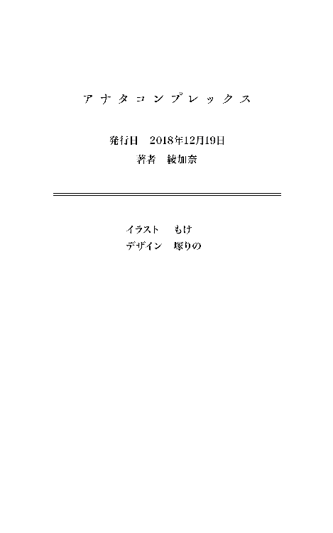

| アナタコンプレックス (百合小説) | |
| 綾加奈 | |
| (2018) | |
幼いころの自分が理想としていた姿が目の前にあった。
鈴蘭女子高等学校の入学式。
クラスメイトと初めての顔合わせ。
教室には見ず知らずの女子が所狭しと並んでいて、まるで女子高生の展覧会みたいだ。
中学まで男女共学だった身からしてみれば、その光景はある種異様とすら思えた。
こんな花園に自分が並んでいてもいいものか？ と気後れしてしまう。だけどその気後れは、隣に座っていた娘の自己紹介が始まったことによって、綺麗さっぱり消えて去ってしまった。
流麗な挨拶。
小匙一杯のウィットと優雅な微笑み。
お手本のような完璧な自己紹介だった。
対する私はどうだっただろう。そんな彼女の自己紹介を聞いて、しかし内容なんてほとんど頭に入ってこなくて、耳から入った言葉は、開けっ放しの口から奇妙な形で漏れだした。
「天使じゃん」
ぼそりと口の中だけで呟かれたその言葉は、だれにも聞かれてはいけない本心だった。
さいわい周りの娘は凡百の私になど目もくれなかった。だれもが彼女に視線を向けてたし、彼女のうしろの席に座っていた娘でさえ、次が自分の自己紹介であることを忘れていた。
同性でさえ見惚れるほどの魅力を彼女は持っていたのだ。
だけどこの空間にひとりだけ彼女に目もくれない娘がいた。
それは当然のことなんだけど――他ならぬ彼女自身だった。
彼女は隣に座っていた私のことを丸々としたアーモンドみたいな目で見つめていた。
思わず食べちゃいたい！ とすら感じる、くりくりと美味しそうな瞳。彼女はぱちくりと目を瞬かせると、堪えきれなくなったように笑って、こぼれるみたいにして口を開く。
「なぁに、天使って」
語尾に多量の笑みと花を咲かせながら彼女は言う。
その笑いはしばらく尾を引いて、彼女は私の顔を見るたびに思いだしたように笑うのだ。私の顔がそんなに面白いのだろうか。彼女を笑顔にできるのは嬉しいが、正直複雑な気分だ。
彼女がちらちらと私を盗み見るものだから、私も視線を逸らせずに彼女を注視し続ける。
シャンプーのＣＭみたいに艶やかな黒髪。
化粧品のＣＭみたいにシミ一つない綺麗な肌。
それにスポーツドリンクのＣＭみたいに爽やかな横顔と笑顔。
......って、どうして私の比喩のバリエーションはコマーシャルしかないんだ。
普段ならもう少し文学的な比喩が浮かぶはずなのに。
「そんなにじろじろ見られると恥ずかしいんだけど。私の背中に羽根でも見えるの？」
からかうようにして彼女は聞いてくる。
恥ずかしいと言いながらも彼女は楽しそうで、笑いを堪えるのに必死になっていた。
「やっ、その......テレビのＣＭみたいだなって思って」
自制も効かず、私は思い浮かんだ言葉をそのまま口にしていた。
「なにそれ」
それがまたツボに入ったらしく、彼女は俯きながら肩をか細く震わせていた。
「それ、褒めてくれてるの？」
体をくの字に折り曲げながら、顔だけこちらに向けて彼女は言う。
「えっ、褒めてる褒めてる！ なんかもう、そのまま売れると思う！」
「いや売るってないをさ。なんか響きがえっちだし」
「ち、違うよっ、売るってそういう意味じゃなくて、髪とか肌とか、唇とかって意味」
しどろもどろになりながら答える。
私の必死な言葉の数々は、弁解はおろか言い訳にすらなってなかったけど。
「余計に意味わかんないし。そっちのほうがえっちじゃない？ いや、グロって言うのかな」
しばらく笑っていた彼女だったけど、なにかに気づいた顔をして、教室の前を指さす。同時に教師が私の名前を呼んでビビる。反射的に立ちあがるけど心の中は疑問符で溢れていた。
――え？ なんで私の名前が呼ばれるワケ？
彼女はクラスの至宝だから独り占めするなとか、そういうこと？
って、バカか私は。
談笑に夢中になっていた私は、教師が自分になにを求めているのかわからなくて、それでも名指しされたからにはなにか言わなくてはならないのだとパニックに陥っていた。
あたふたと視線を泳がせると、クラスメイトが私に注目してる。
そんなとき、隣から、
――自己紹介だよ。
と助け船が出された。
「あっ、ジコショーカイね」
そこでやっと自分の自己紹介の番が回ってきたのだという事実に気づいた。
だけど......あれ、名前？
名前ってなんだ？
「あーっと、その......私の名前は......その......なんでしたっけ？」
そして私は、そんなマヌケにすぎるセリフを吐いてしまったのだった。
クラスメイトたちは私の言葉をボケだと解釈してくれたらしい。
大爆笑とはいかないまでも、ちらほらと笑ってくれる子たちがいたのはさいわいだった。
そんな中、腹を抱えるほど笑っている女の子がひとりだけいて。
それは他ならぬ彼女だったから、私も、もう笑うしかなくて。
「えっと、名前、思いだしました。月野です。名前は五喜って言います」
それが私と彼女――榊星華との、なんとも形容しがたい出会いだった。
１
出会いとは言っても、その後、私たちのあいだに、何事かが起きたのかと言えば、そんなことはなかった。べつになにを期待していたというワケでもないんだけど、入学してから一週間ちょいで席替えが行われて、当然のように私と星華の席は離ればなれになった。
うん。まあ、とくに残念がる理由もない。
むしろ私は安心していたと言ってもいい。彼女の席から離れられたことで、授業中に誤って星華を視界に入れてしまって、いちいち奇妙な反応をする心配もなくなったのだから。
それでも一年生、始めの一週間はそれなりに密度の濃いもので、図らずも私は、星華と下の名前で呼び合う仲になっていた。星華はクラスメイト全員に、自分を『星華』と呼ばせてたんだけど。私みたいなテキトーで、ちゃらんぽらんな人間を相手にしていても、イヤな顔ひとつせず接してくれるのは意外だった。だって彼女は見るからにお嬢様という感じだったから。
そんな星華の周りには、いつもふたりの生徒がいた。
うちひとりは星華の昔からの知り合いらしくて、もうひとりは高校で知り合ったらしい。その娘たちは休み時間のすべてを星華の元で潰して、お昼休みも一緒にいるようになっていた。言ってしまえば取り巻きのような雰囲気で、私はあまり好きになれなかったけど、星華はやっぱりイヤな顔ひとつしないで、彼女たちと接していた。そうした取り巻きたちも不思議と華やかさを持っていて、ひとつのグループとして、それなりの完成度を誇っているのだから、私のような一般ピーポーが挟める口なんてない。隣の席を占領していると邪魔そうだったので、私はおとなしく机と椅子を明け渡し、他のクラスメイトの所で昼飯を食べるようになっていた。
そうこうしているうちに一週間たって、席替えがあったワケだ。
ちゃんちゃん――なんて高校生活が終わるワケもなく。
私は私でクラスに自分の居場所を見つけ、それなりに楽しくやってた。
基本的に『楽しく生きなきゃ損』がモットーだから、自分を含め、周りの友だちもそれなりに笑顔で、クラスメイトともそこそこ仲良しで、弄られ系とか愛され系とか、自分で言うのは結構恥ずかしいけど、そんな感じの立ち位置を確立できていた。
というワケで今は四月下旬の昼休みである。
「五喜のそれって地毛なん？」
一緒にご飯を食べてた福沢陽和がそんなことを聞いてくる。
私の席は窓際四列目の好立地で、陽和はその前の席で、なんやかんや仲良くなった。
たぶん生き方の雑さ加減の波長が合ってたんだと思う。
でもそういうのって大事だ。だって私は真剣に人生と向き合っているひととは仲良くできないから。陽和は自慢の天パの具合が気に入らないのか、頻りに撫でつけるように髪を弄っていた。それから興味深そうに私の前髪を触ってくりくり弄り、ぐるぐる回す。
「んー、よく聞かれるけど地毛だよ。光の具合かね？ 中学のころとか一年のクセに調子乗ってるってよく上級生に絡まれてたなぁ。調子乗ってたら、こんな中途半端には染めんでしょ」
ホントは染めてるんだけど、用意してた嘘をついてみる。
疑われるかとも思ったけど、陽和はむしろ『上級生』のほうに興味を示したらしかった。
「はぁー、こわっ。絡まれるってマジで？ 共学こわくね？」
陽和は鈴蘭女子の中等部からの内部進学組だから、中高と女子校で過ごしている。
だからなのかはわからないけど、やたらと共学の世界に興味津々だった。
あと恋バナにも。
「やー、私からすれば女子校のほうが怖い......かも？」
怖いと言うより、未知の部分が多くて馴染み切れていないというのが正直なところ。鈴蘭に来て、共学の女子たちは、よくも悪くも『異性ありき』のそれだったのだと気づいた。とくに意識したことはなかったけど、私もまたそうした呪縛に囚われた人間だったのだ。いまだに存在しないはずの男子と、その視線を気にする女子の監視を感じとってしまうのだから。
......あいつら、モテることに命かけてるからな。
しかも勝手に他人の命までかけてくるときがあるから始末に負えない。
「外部組はみんなそう言うなぁ。うちらからすれば、絶対に共学のほうが怖いけど」
「結局、ない物ねだりってことでしょ。や、隣の芝生は青く見えるみたいな」
「だれも憧れ云々の話なんてしてないけどね」
「羨望も蔑視も紙一重みたいな？ 陽和だって、なんだかんだ言って共学に興味津々じゃん」
「そりゃあ、うちらからしてみれば共学なんて火星みたいなもんだし」
「私は火星人かい。にょろにょろ。じゃあそっちは金星人かなんかにょろ？」
火星人はにょろにょろのイメージだけど、金星人はなんだろ？ まったく思い浮かばない。
「いや、うちは冥王星人がいい。強そうだし」
「陽和にゃ冥王星人は贅沢すぎるよ。冥王星人とか巨人じゃん、絶対」
しかしなんて会話してるんだ、私たちは。刹那的にもほどがある。
......それにしても、共学に女子校、ねぇ。
うちの家系は母と三人の姉たち全員がこの鈴蘭女子の中等部、高等部で育ってきている。もしかしたら祖母もだったかもしれない。興味もなかったので、そのあたりの記憶は曖昧だ。
ともあれ、うちの女系は生粋の女子校の血液が流れているのだ。ちなみに三女の三恵は二歳上の三年生で、現役で生徒会長を務めている。いや、三月の時点で引退していて、今はすでに元生徒会長だったかもしれないけど。さらに注釈すると、長女も次女も生徒会長だった。そんな中、四女の私はと言うと、自分の名前すら忘れるアホの子なので、どうしようもない。
......いや、生徒会長なんて、やりたいとは思いませんけどね？
ちらりと星華を見やる。生徒会長は、ああいうすべてにおいて花のある娘が務めるべきだ。
星華はいつものメンバーと化している取り巻きたちと弁当を食べていた。弁当を食べる所作すら完璧で、まるでイタリアンのコース料理でも食べてるみたい。まあ、イタリアンとまでは言わないまでも、こないだチラ見した彼女の弁当は、とても豪華なものだったけど。
専属の料理人とかいるのかしらん？ なんて。
「やっぱり星華もエスカレーターなの？」
「いやいや、あれは五喜とおんなじ外部生。にしたって、私からしても、あれはエレベーターにでも乗ってきたのかよって感じだけど。うん。我ながら的確なたとえをだしてしまった」
「わかるような、わからないような......やっぱりわからんよ、それ」
「うちは中高、それと大学だけど。なんか幼稚舎から英才教育受けてましたみたいな雰囲気じゃん。実際、内部組より雰囲気あるし、他のクラスの子も星華の話で持ちきりだしね」
ふむ。鈴蘭女子に限った話ではないと思うけど、女子は基本的に噂好きだ。女子がふたりいれば噂が始まる。必然、彼女たちは噂に飢えていることになる。そんな中にポンッ！ と星華のような存在が投げこまれたら、そりゃあ格好の噂の種になってしまうだろう。まあ、そこまで考えたところで、他人の噂話で盛りあがるのはなんだかな、と急に冷めたので私は弁当箱をしまう。五時間目が体育なので、私と陽和はそのままジャージに着替えることにした。
教室で着替えるの、最初は多少の抵抗があったけど、ここにいるのはどうせ女子だけだ。
なにより丸裸になるワケじゃないし、うまく着替えれば下着を晒す必要もない。
楽を知ってしまった私は、底に引きずり込まれるようにして、ずぶずぶと沈んでいった。
「......女子校って沼だったんだ」
窓の外から見える景色を仰ぎながら、そんなことを口にしてみた。
「あはは。またヘンなこと言ってる」
フランクさはあったが、陽和ほど砕けてはいない口調。聞き覚え......というか、一度聞いたら絶対に忘れられない、鈴が鳴るような凛とした声。私は慌てて振り返り、軽く首を痛めた。
「あれっ、エレベーター星華。なんでいるの？ と言うか陽和は......」
「なんでって、そりゃクラスメイトだからに決まってるじゃん。と言うかエレベーター星華ってなに？ バカにされてる気はしないけど。あと陽和はのど渇いたから先に行ってるって」
星華はごていねいに一言ずつにツッコミと注釈を入れてくれる。
「バカにはしてないよ。エレベーターはあれだよ、エスカレーターより強いってこと」
というかアイツ、私のこと置いて行きやがった。まあ、陽和のそうした物事や人物に対して無頓着な春風めいたところは好きなんだけど、今はそこが恨めしくて堪らなかった。
「それで、なにかご用？」
我ながら芸もぎこちもない返答だった。
「なんか私の名前が聞こえたような気がして、ふらふら近寄ったら『......沼だ』とか言ってるから、思わず話しかけちゃった。そしたらエレベーターとか言われるし」
「それはさ、あれさ。星華が内部生なのか、外部生なのかって話になってさ。外部組なのにエスカレーター使ったひとたちより優秀だよね。だからエレベーターなんじゃね？ って話になって。だから、ホント、べつにバカにしてたとかではないから安心して」
一から十まで解説を施して、やはり芸のないことをやってるなと軽い自己嫌悪。
もう少しスマートな返しができなかったものか。どうにも、星華といると調子が狂う。
......超人へのコンプレックスは克服したつもりだったけど。
産まれながらにして持ち合わせていたコンプレックスは、さすがに根が深いらしかった。
「あー、じゃあ。私はもう着替えちゃったし。体育館、行くから。んじゃねっ」
と手を振り、教室から逃げる。手ぶらで廊下をすたすた進んでいると、なぜか私に追い縋るような足音が聞こえてきた。振り返ると当然のように星華がいて焦ってしまう。
「いや、なんでついて来てるのさ」
「なんでもなにも、私もこれから体育だしね？ 一緒に行こうよ。ね？」
「......それは、まあ、そうだけどさ」
拒否する理由も見当たらないんだけど、歓迎もしづらくて、なんだか微妙な空気を作ってしまう。いつもみたいに軽口を叩きたいんだけど、意識すると途端に頭と舌が回らなくなる。
どうして凡人の私なんかに絡んでくるのだろう。
出会い頭に『天使』とか言っちゃって、さっきもさっきで『沼』とか『エレベーター』とか言ってたから、変なやつだと興味を持たれてしまったのだろうか。心の中で「うー」と唸る。
「そう言えばさ。五喜ってもしかして、授業中にマンガとか読んでる？」
うだうだと悩む私に、星華はピンポイントな質問を投げかけてくる。
「えっ。なんで知ってるの」
「いやね。ちょくちょく机の影を凝視してるから、なにやってんだろうなって思って。で、休み時間とかに机の上にマンガ広げたりしてたから。もしかしたら授業中も？ っていう推測」
「いや、その......お恥ずかしいかぎりです」
優等生に自分の行いを指摘されると、見咎められているような気分になってしまう。
入学して二週間ぽっちで授業に見切りをつけてしまったのも相まって、居たたまれない。
「......すみません。今度からマジメに授業受けますんで」
「あっ、違うよ！ べつに私はお説教とかしたかったワケじゃなくて。ただ、五喜ってどんなマンガとか読んでるのかなーって思っただけだから、心配しないで」
「うぇっ」
まさか優等生の星華からマンガの話題を振ってくるとは思わなくて怯む。
とりあえず心を落ち着かせて、今読んでるマンガのタイトル、好きなマンガとかお気に入りのマンガを挙げてみる。だれでも知ってるような物から、マイナーだけど知ってる人間なら思わず飛びついてしまうような物とか。で、それを聞いた星華の反応はと言うと。
「えっ、五喜もヘルシング好きなのっ？」
なんて的確に釣り餌に食いつかれて、さらに怯んでしまう。もはや怯えすら混ざっていた。勉強もできるけど、マンガも読んで『余裕のある私』を演出してるのか？ なんてゲスの勘繰りをしかけるけど、少なくとも彼女が食いついたマンガは、マンガ好きでもないと読まない類のもので。少なくとも『マンガも読める私！』を演出したい女子高生が読むマンガではないと思う。私の友人でも話題の通じる相手がほとんどいないぐらいだし、私は普通に談笑を楽しんだりしてしまっていた。気づくと体育館に辿り着いてたという程度に満喫していた。
で、星華は着替えのために更衣室へ。
ドリフの新刊、楽しみだねぇ。なんて、女子校で言う日がくるとは思わなかった。
余韻に浸りつつ、私はバスケのゴール下でスポドリを飲んでた陽和に蹴りを入れる。
「あぶっ。なにすんの。なんも運動してないのに、服がべちゃべちゃのベタじゃないか」
「運動もしてないのにスポドリ飲んでるのもおかしいと思うけど」
「それは一理ある」
そこですんなり納得されると困る。
「......そうだろ？ と言うか私を置いてくなよ。星華に絡まれて大変だったんだからな」
「その割に、五喜ってば、ずいぶんとニコニコしてたみたいだけど。それに周りから見てみれば、五喜じゃなくて、むしろ星華様のほうが絡まれてるように見えたんじゃない？」
「うっ......その可能性は否定できない」
諸々の条件を鑑みるに、むしろその可能性のほうが高いのが泣けた。
「なんかイライラしてきたから一口ちょうだい」
「べつにいいけどさ」
陽和に投げ渡されたボトルを華麗にキャッチして、ごくごくする。そんな私の様子を陽和はニヤニヤしながら見てた。どうして鈴蘭の女子は私を見ながらニヤニヤするんだろう。
とか考えてると、私が持ってたボトルをパッと取り上げられる。
「あっ？ なんだお前――」
――なんて思わず素が出かけたけど、この場合、相手が悪すぎた。
「なにが『あ？』だ。体育館は飲食禁止。反抗的な態度を取ってると反省文書かせるぞ」
私たちのそばに立ってたのは体育教官の館花だった。
館花は長身のアラサーで、口調とか雰囲気から、影で『スケバン』なんて呼ばれている強者だ。言われてみれば確かに容姿は南野陽子に似てると思う。だれがわかるんだよって感じだけど。生徒にやたらと反省文を書かせようとしてくる『妖怪反省文置いてけ』でもある。
だからだれがわかるんだよ。
「あー。今のはその、急に飲食物を奪われて、動物的な本能が暴れだしたと言いますか。突然ボトルを取りあげた先生にも責任の一端はあるということでひとつ、いかがでしょうか？」
試しに上目遣いで館花を見つめてみる。当然のことながら、スケバン――もとい女教師の館花に色仕掛けなんて通じるはずもない。館花は露骨な舌打ちをこぼす。
「月野の妹が入ってくるって聞いたから楽しみにしてたんだが......」
そこで立花は私の頭のてっぺんから爪先をジロジロと観察する。遠慮もない不躾な視線は不愉快だったが、こういう絡み方をされるのは予想できたからなんとか堪えられた。
「これは期待ハズレだったみたいだな。お前、本当にあいつらの妹なのか？」
「そりゃあ、あのひとらと比べられたら、妹だって霞みますよ。なんだったら先生だって」
「それは否定しないよ。三女ですらあの頑張りだからな。精々、姉たちの顔に泥は塗るなよ」
館花は好き勝手を言って、ドリンクを取りあげたまま二階の体育教官室に入っていった。
まさか教師にまで姉の信者がいるとは思わなかった。あれほどわかりやすいキャラクター性もないから、教師が夢中になる気持ちもわかるけど、妹の身からすればいい迷惑だ。
「......陽和、ハメた？」
「いや、五喜が勝手にハマったんでしょ。うちはちょうだいって言うからあげただけだし。と言うか、没収されたの、うちのスポドリだし。返せって言ったら返してくれるかな」
「飲みかけのスポドリくらい諦めようぜ。......なんだったら弁償するし」
一五〇円のスポドリに対して弁償もクソもないとは思うけど、一応提案だけはしておく。
「ほとんど残ってなかったしいいんだけどさ。それより五喜ってお姉ちゃんいるの？」
「いないよ」
「えっ。ウソでしょ。あれ。それとも、もしかして、なんか複雑なやつ？」
なにをどう勘繰ったのか、陽和が要らぬ気遣いを発動させて、心配気な顔を作る。
「ウソだよ、ウソ。べつに複雑でもなんでもない、どこにでもある四人姉妹だって。ただ、私が一方的に姉たちに対して苦手意識とか持ってるだけ。だから、あんま詮索しないで」
「あー。はい。オッケー、本人がそう言うなら、ここは遠慮しておきましょ。それじゃあ、気の利くウチはわざとらしく話題を変えることにして。星華となんの話で盛りあがってたん？」
個人的にそこは、うまく話題が切り替わってないんだけど。
それでもそれが陽和なりの気の使い方なんだろうと思うと無下にもできなかった。
最初こそ軍隊みたいな動きをやらされて、退屈極まりなかった体育だけど、今日から内容が変わって卓球を行うことになっていた。パコーン、カコーンと気の抜けるような音が体育館中に響き渡っている。当面の目標は『ラリーを続けられるようになる』らしく、どこもかしこも山なりの球が行き交っていて、やる気をなくしそうになる光景が広がっていた。私はレジャー施設で何度か卓球をやっていたし、対面する陽和も卓球経験者なのか、時折鋭い球を打ち返してきたりしてくる。ひゅー、ひゅー、すこーんっ！ みたいなリズムで互いに球を打ち合っていると、次第に熱中してきて、すこーんっ！ ばびゅーん！ がメインになる。
「なかなか上手いじゃないか。月野五喜」
生徒のあいだを行き来していた館花がわざとらしくフルネームで私を呼んだ。
「お褒めに、あずかりまして、光栄ですけど、それだと、嫌味にしか、聞こえませんよ」
陽和とのラリーを続けながら返答する。
先ほどの件もあるから余計にそう感じるのかもしれない。
「いやいや、私は本気だぞ。できれば他の生徒たちにお手本を見せて欲しいんだがな」
「......べつにかまいませんけど」
館花を相手に言い返すのも面倒なので、渋々といった調子で了承する。
よし。と館花は手を打つと、生徒たちを集めて、それから星華を手招きした。
「えっ。手本って私と陽和でやるんじゃないですか」
「手本なんだから上手い者同士でやらせなきゃ意味がないだろ。福沢もうまいが、手本にするなら榊のほうが都合がいいからな。それに福沢だって、ああ言ってるぞ」
「うち、人前で見本とか無理だし。天パだし」
飄々と答える姿はまったくもって人見知りには見えないし、天パもまったく関係ないし。なんて言っているあいだに私の対面には星華が立っていて、生徒たちがぐるりと囲っていた。
「......また会ったね、星華」
「そりゃあおんなじクラスだしね」
笑う星華。私は目をつむってため息を吐いた。
星華は現在、長い髪の毛を後頭部で一纏めにしてポニーテールにしている。そんな彼女が真剣な眼差しを向けてくるものだからひどく男前に見える。このまま男装とかして欲しい感じ。
......これは心臓に悪い。
思わず胸キュンしてしまいそうな自分に気づいて卓球に集中しようと試みる。
始めろ。
という館花の合図で、星華がサーブして、私がそれを打ち返す。
さすが教師の推薦だけあって、星華は的確に『相手に打ち返されるための球』を私に渡してくれる。だから私はとくに意識することもなく、ただ腕を振ってるだけでラリーが続く。そのあいだに館花が生徒たちに解説を施していたけど、ラリーを続ける私の耳には届かない。
二〇回、三〇回とラリーが続いたところで、館花が横槍を入れてくる。
「ラリーはそんなところでいいだろ。ちょっと、ふたりでこのまま、本気で打ち合ってみろ」
「は？ それ、ラリーとなんの関係が――」
「最終的に全員が試合をするんだ。どうせなら一緒に見本を見せたほうが効率的だろ？」
はあ。そりゃあ。そうなんだけど。
私はラリーの見本を見せるつもりでここに立ってるのだ。そこに試合の手本まで要求してくるのは契約違反なんじゃないの？ とか思ってしまうワケで。
だけど私の内心なんて館花はお構いなしだし、星華も星華で教師に要求されたことを突っぱねるワケもなく――パコン！ ――と音に反して勢いのいい球が飛んでくる。
私は球をラケットに当てるので精一杯で、角度が悪かったのか球は大きく跳ねあがり、星華にチャンスボールを与えてしまう。ワンバウンド、それを手元まで引き寄せ、気持ちのいいフルスイングのスマッシュ。体感で先ほどの球の倍はありそうな速度だった。
乱れる黒髪が、それでも綺麗な纏まりを持っていて。
飛び散る汗が、きらきら光って宝石みたいに綺麗で。
一瞬、生徒たちが沸いた。きゃー！ とか、星華ー！ とか、かっこいいー！ とか口々に黄色い歓声をあげる。私もまた観客と化して、彼女のスマッシュに見惚れていた。
――はずなのに、私の体は機械みたいに無意識に彼女のスマッシュを打ち返していた。
もっと彼女の姿を見ていたかったからか。台から少し離れた場所で球を拾ったため、再び球は山なりに、すなわちそれはチャンスボールに違いなく、星華は容赦なくそれを打ちおろす。
......やっぱり、うまいよなぁ。
スポーツのうまさとは、すなわち形の美しさだと私は思う。
星華の一挙一動、指先から爪先のすべてが洗練されていて、どこを切り取っても美しい。
私なんかと比較にならないくらいうまい。私なんて彼女の球を拾うのでやっとなのだ。それでもラリーが続いているのは、私が食らいついているからではなくて、星華が『私のギリギリ打ち返せる球』を寄越してるからだろう。彼女なりに試合を盛りあげようとしてるのだ。だったら私も、彼女の期待に応えなくてはならない。そうこうと私が粘っているうちに、星華が球を打ちあげる。やっと反撃に出られると、私は力みに力んで思い切りラケットを振り回し――
「あら」
球はふわぁー！ と天井へと駆けあがり、そのまま二階部分のキャットウォークに着地した。遠く、ぽんぽん......とピンポン玉が跳ねるマヌケな音が、静まりかえった体育館に響いた。
「ほ、ホームランで逆転勝ち......？」
両手を掲げて、勝利のポーズを取ってみる。
「卓球に逆転ホームランはねぇよ」
陽和のツッコミで生徒たちの間に笑いが起こる。なんとも言えない結果になってしまった。私もまた照れたように頭を掻きながら、うへへと笑ってみせる。心が虚しくなるだけだった。
「たく、お前は。さっさと二階に行って、球を拾って来い」
「えっ、私が拾いに行くんですかっ」
「お前がホームランしたんだから、責任持って取って来い」
「そんな理不尽な......」
そもそも館花が試合なんてやらせなければ、私がホームランすることもなかったのに。
だけどそれ以上逆らっていたら鉄拳でも飛んできそうだったのでおとなしく従っておく。
星華は取り巻きたちに囲まれて口々に賞賛の言葉をかけられている。あれだけの圧勝を見せつけられれば、取り巻きでなくとも星華に一目を置くことだろう。だけど、その圧勝を真正面という特等席で見ていたのは他ならぬ私なのだ！ と要らぬ優越感を持っておく。
私が二階に行ってる間に下では授業を終えており、片づけに勤しむ生徒たちの姿があった。おっ、いじめか？ みたいな気持ちになるけど、単に効率化を図っただけだろう。
「陽和ー、パスだ、パス。いくぞー」
「あいよー」
一階の陽和に球を投げ落とし、梯子を滑るようにして陽和と合流する。クラスの半分が更衣室に向かい、もう半分がジャージを着たまま教室へと向かった。当然、私は後者だ。
「五喜さ、あれってわざとなん？」
隣を歩いてた陽和が視線を合わせないまま尋ねてくる。
「あれって？」
「最後のホームランとか言ってたやつ」
「わざとなワケないじゃん。チャンスだと思って力んだら、ああなっただけ」
「残念なやつだな、五喜は」
「まあ、産まれ持った道化みたいなところありますしね、私」
「なにせ自分の名前を忘れる女だからな」
「あれはさすがに冗談だったけどさ」
マジで!? なんて本気で驚いてみせる陽和とじゃれ合いながら、教室に戻る。体育のあとの教室は入り乱れる制汗スプレーの匂いで地獄と化していて、私は黙って窓を開けた。
六時間目の現国の授業、私はいつも通り、窓際の席でマンガを読んでいた。
丸々一冊を読み終えたところで、先ほどの星華との会話を思いだした。彼女は、私が授業中にマンガを読んでいることを看破してみせた。と言うことは？ と思い、振り返ってみる。
星華の席は中央列の最後尾にあって、うしろを向くとばっちり目が合ってしまう。
見られてた。気まずいような、むず痒いような、微妙な心地に見舞われる。私は苦笑を浮かべるけど、星華はスッと視線を逸らして、黒板の板書に向き直って、ノートを取り始めた。
私も前を向いて、マンガの続きを読もうとする。だけど背中にありもしない視線を感じてしまい、マンガの内容に集中できない。だから、ちらちらと背後を確認してしまう。
一回、二回......三回振り返ったところで目が合う。今度は星華も驚いたような顔をする。
さらに四、五、六、七回......で目が合って、今度は星華が気まずそうに苦笑を浮かべた。
「こら、月野。なにをちょろちょろと後ろを見てるんだ、お前は」
とんっと、持っていた教科書で先生に頭を叩かれる。
どうやら近づいてくる先生に気づかないほど、私は背後に熱中していたらしい。
「いつまでも中学生気分なんじゃ――と、お前。これはなんだ？」
膝の上に置きっぱなしにしていたマンガを手に取って、先生は頬をひくつかせる。
「えっと......それは......」
怖ずおずと私はマンガのタイトルを口にする。
面白いですよ？ ともつけ加えておく。
「そんなことを聞いてるんじゃない！」
「あっ、でも、はい。先生の授業も面白いので、大丈夫ですよ」
「ひっ、ヒトのことをバカにしてッ、これは没収だ！ 放課後に職員室に来るように」
けらけらと愉快そうに笑う陽和の声が聞こえてくる。
ちらりとうしろを見やれば、星華もまたくつくつと声を潜めるようにして笑っていた。
「あーあ！ やっちまった！」
と天を仰ぐ。
とは言っても、呼び出しなんて中学時代は日常茶飯事だったので、心中はそれなりに穏やかだった。まあ、四月中に呼び出しを食らうなんて、いくら私でも思いはしなかったけど。
......それなりに注意してたつもりなんだけどなぁ。
こう見えて授業中にマンガを読むことに関してはプロ級の腕前を自負している。中学三年のときなんて授業中にマンガを読んでたなんて理由で呼びだされたことは一度もなかったのだ。
その分、他の理由で呼びだされていたからプラマイは０なんだけどさ。
放課後になり、いそいそと職員室に向かっていると、なぜか嬉しげな陽和がついてきた。
「災難だったなぁ、五喜。よりにもよって坂本に見つかるとは。反省文待ったなしだぞ」
鈴蘭女子の教師はやたらと反省文を書かせたがる節がある。どんだけ反省文に信頼を置いているんだという感じだ。あんなぺらぺら、何枚書いたところで意味なんてないのに。
「それはべつにかまわないんだけど、そういう陽和はなんでついてきてるワケ？」
「野次馬だ」
「なるほど」
野次馬ならしょうがないと私は神妙に頷いて、ふたりしてバカみたいに笑った。
「と言うか、没収されたマンガさ。授業中に読んじゃうほど面白かったん？ なんてやつ？」
陽和にタイトルを教えてやたが、陽和はなんじゃそりゃ、みたいな顔をするだけだった。
......確かにマイナーだよなぁ。星華は大好きみたいだったけど。
陽和とはすでに何度かマンガの貸し借りをしていたりするから、彼女がそれなりのマンガ好きであることは知っている。だからこの場合、星華のオタクぶりのほうが珍しいのだろう。
話してるうちに職員室に着いた。陽和は野次馬を自称するだけあって、事態の始終を観察するつもりなのか、職員室の出入り口前に立って、中を覗きこんでいやがった。
......図太すぎるだろ、あいつ。野次馬の鑑かよ。
私はにこにこ顔の陽和を見なかったことにした。
現国教師は私がきたことを認めると、眼鏡を外して私に向き合い、説教を始めた。
その内容と言えば、だれしもが一度は聞いたことがあるような薄っぺらなものだ。
見た目からして五十代――五十年も生きてきて、そんなことしか話せないのかと、私のほうが虚しくなる。有り触れた説教を右から左と受け流していると一瞬、教師が出入り口を見やった。陽和がなにかやらかしたのだろうかと私も野次馬がてらそちらを見やる。
そこにはなぜか、私の人生で一番見慣れている女が立っていた。彼女は私が職員室にいることに対して、驚いたように目を丸くして、なぜかこちらに歩み寄ってきた。
「......なんでこっちに来るのさ、三恵ちゃん」
みーちゃんこと月野三恵は私と現国教師を交互に見てから語る。
「可愛い妹が職員室に呼びだされていたら、気になってしまうのが姉というものでしょう」
「......べつに呼びだされたワケじゃ――」
「呼びだされたんだろうが、このバカが」
現国教師の容赦ない罵倒が飛ぶ。それって教師が言っていい言葉なのかしらん？ と自分がしでかしたことを棚にあげて考えたりする。完全に逃避のための思考でしかなかった。
「あの、坂本先生。いっちゃ......いえ、五喜はなにをやらかしたんでしょう」
「授業中にマンガを読みふけってたんだ。だから反省文を書かせようとしていたところだ」
「それは五喜が悪いですね」
そりゃそうだ、と思わず同意してしまう。そんな私の軽々しさを咎めるように、みーちゃんが思い切り脇腹を抓ってきて、思わず跳びあがりそうになってしまう。
「いたっ、痛いってば、みーちゃん！」
「まあ、そう言うことなら、私から口添えできることはありませんね」
言って、みーちゃんは無慈悲に背中を向けて歩きだす。
その背中は家での彼女とは違い、あまりにも屹然としていたから、見惚れそうになった。
と言うか――
「うぇっ、みーちゃん。助けてくれるんじゃないの!?」
「助けるもなにも、いっちゃんも自分が説教されるようなことをした自覚はあるんでしょう？ だったら説教くらい甘んじて受け入れなさい。それで反省するしないは自由なんだから」
「そりゃそうだ」
再び同意してしまう。みーちゃんは基本的に正論しか吐かないから、私としても『そりゃそうだ』と同意するしかない。これでも前よりはマシになったほうで、昔のみーちゃんは攻撃的ですらある正論で理論武装して、他者を寄せつけない壁のようなものを作っていた。今は正論の中にも彼女なりの余裕が見て取れる。それは周りから見ればたいした進歩なのだろう。
事実、みーちゃんは昔の何倍も接しやすくなった。でもそれは、彼女のなりたがっていた超人に一歩近づいたことを意味していて、私は姉が遠くに行ってしまったようで寂しかった。
「は蛙......お前ら姉妹の相手はやりづらくて仕方がない」
先生は大仰なため息をついて、立ち去るみーちゃんの背中を見つめていた。
「えっ？ 先生って私たちのこと苦手なんですか？」
先生は私、それから窓の外を見やる。私もつられて外を見るけど、やけに流れの速い雲が並んでいるだけだ。そんなに生き急いでどこに行くの？ なんて思うけど、先生は私とは別の物を見ていたらしい。たぶん過去とか想いとか、そういう物を景色に投影していたのだろう。
「三恵は二年までわかりやすいやつだったんだけどな。少しずつ姉に似てきた」
「と言うことは、先生が苦手だったのって、ひーちゃんとふーちゃんのこと？」
「ひーとふー？ ああ、一姫と二美のことか。優等生には違いなかったけどな。頭がよすぎたせいか、正直、気持ちの悪いやつらだったよ。と、教師がこんなこと言うべきじゃないか。まあ、そう言う意味じゃ、姉妹の中だと、お前が一番わかりやすくて話しやすい気がするよ」
大人からそういう褒め方をされたのは初めてだった。
嬉しいような、そうでもないような、複雑な気分だ。
「惚れました？」
「だれがお前みたいなちんちくりんに惚れるか。それに比較的だって言ってるだろ。比較の対象がお前の姉なんだ。他の生徒に比べたら、お前だって充分に問題児だろうが」
「まあ、授業中にマンガ読んでるくらいですからね」
「......まあ、そういうことにしといてやる」
へ？ と私は疑問の声を漏らすが、先生は答えないまま机の中から作文用紙を取りだした。二〇×二〇の合計四〇〇文字の用紙が三枚も渡される。私は恐る恐る先生の顔を見た。
「......なぜに三枚？」
「姉の顔に免じて、説教はこれくらいにしといてやる。反省文は原稿用紙二枚と半分で一〇〇〇字以上書いてくるように。わかったな？ なんならもう一枚くらい渡してもいいぞ？」
「うへぇ」
「なにが『うへぇ』だ。これに懲りたら、授業中にマンガなんて読むんじゃないぞ」
「......へーい」
意気消沈した私は原稿用紙を握り締めて廊下へ向かう。
先の一連のやりとりを振り返って、不思議な気持ちになる。
と言うのも、すんなりとみーちゃんに対して助けを求められたことに対して違和感を覚えていたのだ。私はてっきり、自分の中にある姉たちへのコンプレックスが再燃しているのだと思ってたから。もしそうならばみーちゃんに助け船をだされるなんて自尊心が許さないはずだ。
だから私はべつに鈴蘭女子に入ったことで、姉たちへのコンプレックスを取り戻したわけではないのだ。ならば私が星華に苦手意識を覚えてしまう理由はなんなのだろうと頭を捻る。
そんなことを考えながら廊下に出ると陽和が目を皿にしていた。
思わずつついて割ってやりたくなるような目だった。
「そんなに見つめるなよ。恥ずかしいだろ」
「それどころじゃないって！」
確かにそれどころじゃなさそうなテンションで陽和は叫んだ。
「......なにが？」
「さっきの、その......三恵生徒会長って、五喜のお姉ちゃんなの？」
「......まあ、そうなるよね」
ここまできて否定するのもムリがあるかと思い、渋々といった調子で肯定した。
私の答えに陽和は、うっわぁー！ と口を開け放っていた。
「はぁー、いや。一年に月野姉妹の末っ子がいるかもしれないって聞いてたから、だれがそうなんだろうなーって密かに探ってたんだけど、まさか五喜がそうだったなんて」
普段は飄々とした態度を崩さない陽和に熱が篭もっていて、珍しいなあと思う。
それだけ、みーちゃん含め、私の姉たちの人気が凄まじいということだろう。
「......姉ちゃんたちって、やっぱり、その......アイドルみたいな扱いなワケ？」
「そりゃあさ。長女の一姫さんに、次女の二美さん、三女の三恵さん、全員が文武両道、品行方正のなんでも屋で、生徒会長を務めてて、それで容姿も優れてるとなれば、当然だよ」
「うへぇ」
本日二度目の、うへぇを吐いて、やはり姉たちのことを伏せておいて正解だったと頷く。浮き世から一歩退いた立場の陽和でさえ、この調子なのだから、クラスの娘たちの反応なんて想像に難くない。質問攻めになればいいほうで、ヘタをすれば私まで祭りあげられかねない。
そんなの、考えただけでゾッとする展開だった。
「と言うか、妹がいるってのは噂になってたんだ」
「三恵さんに妹がいるのは有名な話で、年齢は二歳か三歳差か諸説あったんだけど」
「......諸説があるほどなのね」
鈴蘭の生徒たちは暇人ばかりなのだろうか。
「どちらにしても、今回の一年に末っ子がいる可能性は低くないわけだからさ。まあ、うち以外にも内部組だったら、気にしてる娘とかけっこういるんじゃないのかな」
「へぇ。月野なんて名字、珍しいし。そこで気づいてもいいもんだけどね」
「そりゃあ、五喜だからな。一緒に行動してたうちですら、というか、一緒に行動しすぎたからなのかな？ ぜんぜん五喜が末っ子だなんて気がつかなかった。それに『五』だし」
「......まあ、五だしな」
一姫、二美、三恵ときて五喜だから、違和感を覚えるのは当然だろう。
私としても『五喜』という名前が生みだす違和感にはろくな思い出がないので話を移す。
「昼にもちらっと言ったけどさ、私、あのひとらのこと苦手でさ」
「どうしてって、聞いてもいいの？」
私の顔を覗きこみながら、陽和が尋ねてくる。
陽和は私を心配したいけど好奇心が隠しきれない！ という顔をしてた。
......わかりやすくてけっこうですこと。
わかりやすい陽和になら話してもいいかなと思えるから不思議だった。
「見てればわかると思うから言うけど。月野姉妹の末っ子なのに、私が、平々凡々な月野五喜でしかないからだよ。私は超人の姉たちといつも比べられて劣等感を植え付けられて、あのひとたちの顔を見るだけでコンプレックスが刺激されるようになった。そういうありがちな話」
「だけどさ、それって個性なんじゃないの？」
「うん。今では私も個性だと思えるようになったよ。だから姉を目指すのは諦めた。だけど諦めがついても、こうやって姉たちが神聖視されているのを見たりするのは苦手かなって」
それって結局、克服できてるの？ できてないの？
って感じだけど、これでも善戦したほうだ。これが今の私の限界だ。
だけど、これから三年間で、この限界を乗り越えられるだろうか？ もしも乗り越えられなかったら相当やりづらい高校生活になる自覚はあるから、なんとかしたいとは思ってる。
「んー、うちが言いたいのはそうじゃなくて......いや、余計なお世話だな。うん」
陽和は気になる物言いをして、自己完結してしまう。
なんだなんだと問い質そうとするけど、タイミングがいいのか悪いのか教室に辿り着く。
ほとんどの生徒は帰宅したか、部活に行ったかしたのか、教室は無人に近い。そんな中、最後尾で参考書を開いている女子がいた。映画のワンシーンみたいだなって、しみじみ思う。
そんな映画のヒロインは、私が教室に戻ると同時に顔をあげた。
「あっ。やっと帰ってきた」
つけていたイヤホンを外して、ささーと私の元へと駆け寄ってくる。
「え、なに。星華。どうしたの？ なんか私に用でもあった？」
「用って言うか......五喜が呼びだされたの、私にも原因って言うか責任あるかなって思って」
「......それで、ずっと待ってたの？」
「うん」
「マジか。元はと言えば私がマンガ読んでたのが悪いんだから星華に責任なんてないでしょ」
「迷惑だった......？」
いつも屹然と振る舞っている星華のしおらしい態度に私は怯む。なんというあざとい口ぶりだろう。自分が可愛いのをわかっていてやっているのか。だとしたらなんて小悪魔。
「迷惑なんかじゃないよ。でも、それならべつに、明日でもかまわなかったのにって」
「それ。手に握ってるの反省文？」
星華は私の言葉を無視して、さげられていた手を指さした。
「ああ。そうそう。坂本に一〇〇〇文字書いて来いって言われてさ」
「握り締めすぎてぐちゃぐちゃになってるし」
「殺意がこもりすぎてつい......」
「どんだけ反省文を憎んでるのさ」
「反省文に親を殺されてるからなぁ」
そりゃあ憎悪もするわ、と星華は笑う。
それから星華は急に真面目な顔になって、その豹変ぶりに私は妙にどぎまぎしてしまう。
「そんなに嫌いならさ。手伝おうか？」
えっ。迷惑じゃない？ とか、そもそも反省文を手伝うってなに？ とか、いろいろ疑問が湧いてくる。だけど星華が善意のかたまりであることを考えるに、生半可な断り方では諦めてはくれない気がした。
「まあ、さっきのに罪悪感あるなら、手伝っても貰おうかな」
だから断るのも不毛に思え、星華の厚意を素直に受け取っておくことにした。
「と言うことだから、陽和......ってあれ、陽和のやつ、どこ行きやがった？」
つい先ほどまで行動をともにしていたはずの野次馬が姿を消していて焦る。
「ああ。陽和なら、喉が渇いたから先帰ってるって」
「のど渇いたから先に帰るってなんだよ。そもそも私のほうが先に星華と話してたんだから、あいつがそれを星華に伝えられるワケないじゃん。まあ、陽和はどうでもいいけど」
「えっ？ どうでもいいの？」
「うん。あいつは自由人で神出鬼没だから。こんなこと気にしてたら体が保たないし」
「へぇ。そうなんだ」
それから、ふぅーんと小さく唸って、星華は隣の机を自分の机にくっつけ、臨時の長机を作る。ちょいちょいと隣の椅子を示す星華の姿はなぜだかわからないけど上機嫌に見えた。
......そんなに反省文が好きなのか？
普段、書くようなことなんてないから、興味津々とか？ だとしたら単なる野次馬だ。
陽和の野次馬根性が星華に乗り移ったのかもしれない。クソ迷惑な話だった。
「ほら、隣、座りなよ」
「あ、うん。それじゃあ。そうさせて貰おうかな」
隣に座って、ぐちゃぐちゃになった反省文を机に広げ直す。先ほど陽和との会話で妙に緊張してしまったせいか、かすかに汗が染みていて、インクが滲んでしまっていた。
「強く握りすぎ」
言って、なにがそんなに面白いのか星華は朗らかに笑う。
「私の青春汁がこんなに......って、こんなことを話してる場合じゃないんだって」
言いつつ、原稿用紙と向き合う。
......さて、なにを書くか。
いや、反省文なんだけどさ。
どういう方向性で責めていくのかを考えてみる。
考えながら、片手間に星華へと世間話を振る。
「そういやさ。星華って反省文とか書いたことあるの？」
「ん？ ないよ。五喜は？」
「私は週間反省ジャンプの異名を持ってた女だからなぁ」
なにそれ、と言いながら星華はお腹を抱える。
「どんだけ反省文書いてたのさ。一週間に一枚とか、そういうこと？」
「そうそう。中学の三年間で一〇〇枚は書いたんじゃないかな。危うく先生に賞状渡されそうになったしね。中学史上、もっとも反省文を書いた女とか言ってさ」
「反省してたら反省文一〇〇枚も書かないのにね」
「ホントね」
あらためて考えてみると、あれだけ大量の用紙と時間をムダにして私はなにを得たんだろう？ 少なくとも教師たちが望むような優等生的マインドは手に入らなかった。代わりに得たものと言えば、詭弁とそれっぽい文章のスキルだけ。結果、産まれたのは面倒な人間だけだ。「と言うワケで私は、反省文においてはプロ並みの腕を持ってるってワケ」
わーわーぱちぱちと星華はおざなりな拍手してくれる。意外とノリがよくて私としては大満足だった。だけど星華はなにかに気づいたように小首を傾げる。
細い首から頭が落ちてしまいそうだと見当違いなことを考える。
「あれ？ でもそれじゃあ、私が手伝える要素なんてほとんどなかったりする？」
「んー、正直、なんにもなかったりするよね」
「うわー、ばっさりだなー」
星華はそのままバッサリ斬り捨てられたみたいに机の上に体を投げだす。そんな状態からちらりと首だけを動かして、なにかを求めるように私のことを無言で凝視してきたりする。
「..............................」
「......まあ、できることはなんもないけどさ。書いてるあいだの話し相手になってよ」
「任せてっ！」
どんと胸を張る少女。セーラー服の上からでもわかるバストが自己主張する。
私の胸と心が虚しくなってくるから、できれば自重していて貰いたかった。
......でも、おっぱいって柔らかいのかな。ちょっと触ってみたい。
クラスの娘たちが互いに触り合う姿はちょくちょく見ているけど、そこに介入する度胸も勇気もないし、そういうキャラでもないし、不特定多数のおっぱいを触りたいとも思わない。
......でも、それってどういうこと？
という部分で、星華は話し相手の職務をまっとうするためか話題のパスを渡してくる。
「じゃあ話題提供するけど、五喜ってちょくちょく私のこと避けようとするよね」
「うぐっ」
一行も書ききらないところでシャーペンの芯が折れる。反省文の片手間に話すにしては、なんともディープな話題ではないか。パスというよりの完全にシュートもといデッドボールだ。
「どう？」
「あー......避けてるって言うかさ、ときどき、なんかこう、苦手だなって思うときがある」
「ときどき？」
「こうして話してみると安心するって言うか、もっと話してたいなーって気分になるんだけどさ。こう、星華が完璧だなっていうのを見せつけられると、つらくなったりするんだよね。星華は私なんかが話していい相手なのかなー？ ってさ。住む世界が違うんじゃないかって」
星華が住んでいるのは私が決別した世界だ。
だから星華を見ていると、どうしても姉たちの姿が重なってしまう。
姉たちに対しては一人ひとり、折り合いをつけていって、自分自身の才能と見つめ合って、私は姉たちにはなれないのだと気づいて。そうやって、今の私ができあがっていった。
才能やセンスがなくても、ひとは楽しく生きていけるんだと示したかった。
事実、私は今までそれなりに楽しくやってきたと思ってる。
にもかかわらず星華を見ていると、自分が揺らぎそうになるのだ。私が母親に求められていた姿を――なにより自分自身が求めていた姿を、彼女はそのまま体現していたから。
その完璧さに手を伸ばしたくなってしまうのだ。
だけどそれ以上に、苦手としているはずの星華との会話を楽しんでいる自分がわからなかった。辛くて苦くて塩っぱいはずなのに。彼女と話すのはそれ以上に甘酸っぱかったから。
「私は完璧じゃないよ。ぜんぜん完璧にはほど遠い」
「自分のことだから評価が厳しくなってるだけだよ。高校一年生のスペックじゃないもん」
エレベーターだから。とつけ加える。
星華もエレベーターと復唱して笑う。
「私が完璧かそうでないかとか、エレベーターかどうかとか、そういうことは置いといて。五喜、そんなことを気にしてたの？ だから、ときどき私から逃げようとしていたの？」
「でも事実だよ」
私情など挟まなくても、私と星華は別世界の住民だ。それだけはわかりきっている。
もしここが共学なら、話すらしなかった間柄かもしれないのだ。
「別世界、別世界って言うけど、私からすればクラスメイトってだけで同じ世界だよ。それだけで仲良くするのに不足はないの。今、こうやって話してて、なんか違和感ある？」
「......ないけど」
「でしょ？ それとも、楽しいのは私だけで、五喜はつまらなかったりする？」
「それもないよ」
「だったら、別世界なんてただの思いこみだよ。私も五喜も......ただの人間なんだから」
「そうだね」
私が星華を苦手とする理由はそれだけではないんだけど、とりあえず彼女のほうからも私と友だちになりたがっている点だけは理解できたから、私はおとなしく頷いておく。
私が星華に姉と自分を重ねてしまうのは、あくまで個人の問題だ。
ガマンしようと思えば、いくらでもできる。
子供のころだって、そうやって生きてきたのだ。
「でも五喜ってば。テキトーに生きてますみたいな顔して、そんなこと気にしてたんだ」
「そりゃあ、まあ、相手が星華だったからだよ」
「五喜ってさ、けっこう可愛いところあるよね」
「か、可愛い点なんてひとつもなかったと思うけど」
女子校では常日頃から『可愛い』という言葉が飛び交っているから、私も女子に可愛いと言われることには慣れたつもりだった。だけど、星華がそれを言うと、心臓が跳ねてしまう。
そうと告げる星華の顔が可愛いとかそういう次元を超越してるせいだろう。
「あはは、その反応も可愛いし」
「からかわないでよ。いいよ、もう。反省文の続きやるから」
一行目からまったく進んでいなかった反省文の続きを書き始める。反省文の週刊連載なんてことをやっていれば、ある種のテンプレートが産まれてくる。中学時代は完全に使い回すことこそできなかったけど、高校一発目の反省文ならストックをそのまま費やすことができる。
一〇〇〇文字程度であれば、目を瞑っていても書くことができる――はずなんだけど。
星華が反省文をぐいっと覗きこんでくる。
そのせいで、どうにも意識が散漫になってしまうのだった。
絹のような黒髪がさらりと落ち、甘酸っぱいオレンジの匂いが香った。そのまま流れる髪の毛を口に含んでしまいたい。自分がそう願ってるのではないかと思うほど唾液が分泌される。
「ふむふむ。五喜って、やっぱり文章書くのうまいよね」
「文章って言うより、反省文特攻って感じだけどね。私は」
「ゲームじゃないんだから。人生における使いどころがかぎられすぎてるし」
「でも、少なくとも私は週一で反省文書いてるワケだからね」
私は自分の長所を活かすためにわざと反省文を書いてるのかも？ なんて。
かりかりとシャーペンの芯を滑らせながら、口を動かす。すらすらと文字が書き起こされる様を他人事のように眺めて、この点だけはホントにすげーなぁって自分でも思ってしまう。
たぶんうちの姉妹で反省文を一番うまく書けるのはこの私なのだから。
「週一で反省文を書いてたってことは、それだけやらかしてたってこと？」
「そうだね。なにかしらをやらかしてた」
「たとえばどんなこと？」
「今日みたいにマンガ読んだりが多かったけど、私が破らなかった校則ってなかったから」
学校の中で『いつも通り』を振る舞おうとしていたら、それがことごとく校則違反だったというだけの話。私が意図的に反社会的な行動をとったことなんて二、三回しかない。
......そのときは反省文じゃなくて、停学を食らったんだけどさ。
そのときのことがきっかけで、私は鈴蘭女子に入れられることになったのだから、人生とはどう転ぶかわかったものではない。この道が最悪ではないことを願うばかりだ。
「私、そういうのに憧れるな」
「反省文？」
「違うって。そっちじゃなくて、呼びだされたり、反省文書かされたりするようなこと、それ自体。私もやってみたいなぁとか、たまに、そういうこと思ったりしちゃったりして？」
「こんなのはさ、憧れるんじゃなくて、気づいたら落ちぶれてるもんだから。憧れどうこうの話じゃないと思うよ。星華は星華のままでいいよ。それが一番輝いてるんだから」
それを言い始めたら、私は星華に憧れている。そんな星華が自分を粗末に扱っていたら、私は思わず怒ってしまうかもしれない。私は気休め代わりに星華の頭をぽんぽんと叩く。
拍子にふわりと粒子でも舞ったのか、教室をオレンジの芳香が満たした。
「そっか、そういうものなのかな」
「そんものだと思うよ。もし、もし星華が落ちぶれたら、そんときは笑って出迎えたげるよ」
「あはは、じゃあ、そのときを楽しみにしてる」
「楽しみにはすんなよ」
それからもう一度ふたりで笑い合って、しんと沈黙が下りた。
だけどそれは張り詰めるようなものではなく、居心地のいい柔らかな静寂だった。
「なんか......五喜といると安心する」
言いつつ、星華は頭を私の肩に乗せて、軽く寄りかかってくる。
私は気にするまいとペンを動かすんだけど、心拍数が跳ねあがったせいで、不自然な速記になってしまう。手の動きに頭の回転がついていかないくて、意味不明な文章が続く。
それが自分の精神状態を如実に反映していて笑いそうになる。
なにか返事でもするべきだろうか――と悩んでいるあいだに原稿用紙二枚半のゴールが見えてくる。ならば、このまま駆け抜けてしまったほうが建設的だろうと居直ることにした。
文章については、多少荒いほうが反省文っぽいかもしれないと奇妙な言い訳をした。
「よし。できた」
試験後、そうするように机にぱしっとシャーペンを叩きつける。
しかし反省文を手伝うと言っていたはずの星華からは返事がない。
ゆっくりと横を向く。
星華が寄りかかっているせいで、少しでも顔を動かせば、肌と肌が触れ合ってしまいそうな距離に彼女の顔があった。スッと伸びた細い鼻梁から、可愛らしい寝息が聞こえてくる。
......寝やがった。
となると、先ほどの『安心する』云々は私を戸惑わせようとしたワケではなくて、ぽろりと漏れ出た本心みたいなもので、安心するから眠くなってきちゃったみたいな話だったの？
あまりに気持ちよさそうに眠るものだから、起こすことも憚られてしまって。
私は星華を起こすのを諦めて、そのまま観察することにした。
かすかに開いた唇が、やけに鮮明に見える。
......まあ、女子校だしな。
一瞬浮かんだ考えを実行に移すか考え、悩む必要もないと悪魔が囁いた。
だから私は悪魔に従って、指で星華の下唇をなぞる。
ぷりぷり、むっちり、低反発な柔らかさにどぎまぎする。
むにむに......上下をなぞり、摘んだり、と無心で星華の唇を弄る。
「......美味しそうなんだよな」
どうやら私は感無量になると、溢れだした想いが、口から出てきてしまう人間らしい。自分が美味しそうだと思うよりも先に、口から言葉が飛びだしたものだから、『ああ、そうか。私は星華の唇を見て美味しそうだって思ったんだ。へぇー』みたいな納得をする始末だった。
そしてなぜか私の『心中の吐露』は星華の笑顔と密接に繋がっているらしくて――
唇に触れていた指先に過剰な吐息が触れた。
それは、まるで笑いとともに漏れる吐息のようで、私は子どものように肩を震わせる。
「......星華、起きてるでしょ」
こくりと頷かれ、冷や汗がどどどーと流れだしてくる。
「お、起きてるなら言ってよ」
「いや、言おうと思ったんだけど、起きたらすでに唇に触られてるんだもん。喋りたくても喋れなかったし。五喜、夢中になってたし。邪魔するのも悪いかなーって思って」
そして星華は目を三日月にゆがませてから愉快げに続けた。
「で、私の唇、そんなに美味しそうだった？ キスでもしてみる？」
ある意味、予想できた質問だったので、私はあらかじめ用意していた答えを口にする。
「うん。ご飯に乗っけて食べちゃいたいくらい」
「えっ。それってどういう状況なの!?」
「星華の唇を醤油に一晩つけて、って感じかな？」
「言葉にされるとグロいね......でもまあ、私は五喜が相手ならかまわないけど」
「さ、さすがに冗談だよ。いくら私でも他人の唇をご飯にかけるのは......」
「そっちじゃなくて、キスの話だってば」
あくまで惚け、話を暈かし続ける私に痺れを切らしたのか、星華がマジトーンで言う。
気づかれないように小さな深呼吸をして、努めて冷静を装いながら、口を開く。
「私も星華ならぜんぜんかまわないかなー。むしろウェルカムみたいな？」
「なにせ、私の唇触って美味しそうとか言っちゃうくらいだしね？」
その感触を私に思いださせるように、星華は自らの唇に触れる。
「まあ、星華は反省文手伝うって言ったのに手伝わないし、話し相手になるって言ってたのにすぐ寝るし、なんの役にも立たなかったけど、その唇の柔らかさで手打ちにしたげる」
「えー、私も五喜の唇、触りたいんだけど。と言うかウェルカムならキスしてみていい？」
星華の視線は鋭利さすら感じてしまうほど直線的で、その言葉が冗談なのか、本気なのかすらわからない。ただ、ここでマジメに返してしまったら、トーク的にはアウトだと思う。
だけど今の私にトークを盛りあがりを気にするだけの余裕もなかった。
「......やっぱりダメ」
「なんで？」
なんでって、どうしてそんなにぐいぐいくるんだ、この女は。
キス魔か？ キス魔なのか？ だれにでもそうやって唇を迫ってるのか？
「恥ずかしいからに決まってるじゃん。そんなに唇が欲しいなら、私の寝こみを襲ってよ」
「五喜の家に忍び込むところからか」
「星華は忍者かなんかなのかよ......」
このハイスペック女なら忍術のひとつやふたつくらい簡単に使えそうなのが怖い。
さらに言えば他人の家に忍びこむくらいなら余裕でやってしまいそうだ。
ふと窓の外を見ると茜色を通り越して、藍色が混ざり始めていた。四月の中旬、まだ陽が落ちるのはそれなりに早い。そうやって、私たちはどちらともなく帰り支度を始めた。
荷物を抱えて、廊下を歩く。
廊下は無人のはずなのに、どこからか喧噪を運んでくる。
遠く聞こえるそれがうら寂しい。
「こうやって五喜とゆっくり話すの初めてだから楽しかったー」
「席変わっちゃったし、そもそもグループ違うしね。でも女子校って思ってたよりオープンな感じだから、話そうと思えばいくらでも話せるでしょ。問題ないよ」
なにせオタクの娘とギャル系の娘が、何気ない調子で会話しているのを見かけるぐらいだ。
共学だったら絶対に有り得ない光景だよなぁと、そんな女子校の意外性に笑う。
「あっ。グループと言えばさ」
「どうかした？」
「ＬＩＮＥ交換してなかったなって思って」
「ああ。前はスマホ持って来てなかったしね」
入学後の一週間はまるで数を競い合うゲームでもやっているかのように、クラスメイトたちはＬＩＮＥのＩＤを交換しまくっていた。私はやたらと友だち一覧を嵩張らせたくなかったから、スマホを忘れてきたと言い訳をして乗り切っていた。そんなに私と連絡先を交換したいなら、後日あらためてでも交換を求めてくるはずだから。でも、そういう人間は一握りで、ブームが去ると私に再度ＬＩＮＥの交換を求める声もなくなって、なんだかなーという感想を抱いたのを覚えている。まあ、業務連絡とかは、クラスのＬＩＮＥグループがあれば充分だしね。
だから、こうしてあらためて連絡先を聞いてくれるのなら、こちらとしてもありがたい。
「いいよ。交換しよ」
階段前で立ちどまり、わちゃわちゃと連絡先を交換する。
星華のプロフィール画像はまっ白なサモエド犬を後ろから抱きしめている彼女自身の画像だった。サモエドが星華にもカメラにも興味がなさそうにそっぽを向いているのが面白い。
「星華って犬飼ってるの？」
「そうそう！ 小雪って言うんだけどね！」
私が問うと、嬉々として星華が答える。どうやら相当の犬煩悩らしい。
名字と繋げると榊小雪になるワケか。名前だけを聞くなら良家のお嬢様という感じだ。
......たぶん私よりも躾がなってるんだろうな。
その後、犬がどれだけ可愛らしいかを語り合い、星華がバスに乗り込んだところで別れた。バスの窓から手を振る星華に手を振り返し、その姿が見えなくなるとそっと肩を落とす。
「......疲れた」
星華と接するのもそうだけど、彼女といると自分の体が制御できないものになってしまい、なんとも言えない疲労感が溜まるのだ。さっさと家に帰って、眠ってしまいたかった。
帰路を歩きながら、ふと自分の右手を見つめる。
......星華の唇、柔らかくて気持ちよかったな。
つい先ほどまで、この指に星華の唇が触れていたのだと考えると、奇妙な心地になる。
「それに、キスかぁ」
キスってどんな感じなんだろうと思い、自分の指に、自分の唇を重ねてみる。
私は今、星華の唇を触った指に、キスをしていた。
「いやいやいや......なにしてんだ、私は」
自分の行為があまりにもバカバカしくて、小っ恥ずかしかったので、つい自分でツッコんでしまう。なんだか顔が熱いような気がして、私はワケもなく歩みを速めたのだった。
２
五月の一週目、この二日間を乗り切れば五日間の連休が待っている。そんな開放感を前に、生徒たちも浮き足立っているのか、昼休みの教室はいつも以上にテンションが高い。そしてテンションの高さに比例するように、女子たちの距離が縮まり、密度が増していた。
腕を組んだり、手を繋いだり、肩を寄せ合ったり、胸を揉んだり......は悪ふざけの範疇か。だけどそんな光景を眺めていると、沸々と、とある疑問が浮かびあがってくる。
「女子校ってホントに女子同士のカップルとかできるの？」
うちの姉たちが残らず同性の恋人を持っているから、世の中にそうしたカップルが存在することは知っている。だけど、あれはうちの血が濃すぎるのではないかという疑問もあった。
そんな私の心中とは裏腹に、陽和の態度はじつにあっけらかんとしていた。
「珍しいもんでもないよねー。たぶん、うちのクラスにも一組できてるし」
かるーい調子で陽和は答える。
そして、読んでいたマンガから顔をあげて、ほれほれとクラスメイトのうちふたりを指さしてみせる。片方が相手の膝に乗り、ふたりで一緒にファッション誌を読んでいるようだった。
「えっ、マジで？」
「マジで」
「なんでわかるの？」
「聞いたから」
「なんでぃー。友だちと恋人を見分ける方法でもあるのかと思った」
「絶対これだっていう方法はないけど、見てればなんとなくわかるもんだよ」
女子校育ちの陽和に言われると、そうなのかな？ そうなのかも。みたいな気持ちになる。
「じゃあさ。あれは？」
教室の後方で相手の胸を揉んで、わーわーきゃーきゃー騒いでいる女子を指さす。
「あれは友だちでしょ」
「マジか」
「マジマジ」
「じゃあさ。境界線ってどこなんだろ」
他人から始まり、クラスメイト、友だち、親友、恋人、これらは必ずしも一直線上に存在する概念ではない。だけど、なんだかモヤモヤするのでわかりやすい区分を求めてしまう。
だって私はあのひとたちの妹だから。
もしかしたら私も、女の子を好きになるかもしれないのだから。
だけど才能やセンスを受け継がないで、そういう部分だけ遺伝するのもなんだか不服だった。同性愛がいい悪いと言っているのではなく、どうせなら私も二物が欲しかったという話。
「手は友だちでも繋ぐよね？ おっぱい揉んだり、抱きしめたりもするじゃん」
「そーな」
「じゃあさ、キスとかは？」
「んー、女子なら友だち同士でキスも珍しくないでしょ」
「えっ。マジで」
「ほれ」
と軽々しい掛け声とともに、陽和がほっぺにちゅっとキスをしてくる。
ほっぺにやらけー感じがして、小さな幸せを手にした気持ちになる。
「ちょ、おま」
「照れんなし。でも、これくらい他の娘たちもちょくちょくやってるでしょ」
「や、私が聞きたかったのは、そっちじゃなくて、口と口の......やつ？」
私が補足すると、陽和は、あー......と小さく唸った。
「どうだろ。でも、同級生同士でキスしてるプリクラとか割と見たりするからなぁ。私も多少の抵抗あるけど、まあ、それだけで判断できるような材料じゃないんじゃないかな」
思いの外、マジメに答えてくれる陽和に触発されて、私も神妙に頷いてしまう。
私の真顔を見てか、陽和が相好を崩した。
「つーか急にどしたん？ 五喜も恋しちゃったの？ 私か？ 口にキスして欲しいのか？」
んちゅーと陽和がガキっぽい冗談めいたキス顔を披露してくれる。
「バレてしまったか。ずっと胸に秘めてるはずだったのに......案外あっけないものね」
「うちら......もう友だちじゃいられないな」
なんて妙に熱の篭もった演技をして、一頻り笑ったあと、陽和が真顔に戻る。
「はいはい。で、誰なん？」
「だれでもない。そういうのってどうなってるんだろうなーって思っただけだから」
「へえー？」
不服そうな顔をして、陽和は口を開きかけるけど、彼女がこの件についてそれ以上深く追求してくることはなかった。その代わり、少し切り口を変えた質問を投げかけてくる。
「五喜って、あんまり自分のこと話したがらないよな。なんかこう、壁がある感じ？」
「そりゃあ陽和の気にしすぎ。私は見た目通りぺらぺらな人間だよ」
陽和はじっと私のことを見てから、マンガを読むの再開した。
なんだかなーと心中で呟きながら、私は意味もなくスマホを弄る。
しばらくログインすらしていなかったアプリを起動して、ログインボーナスを貰ったりして時間を潰す。そうした作業があまりに不毛に感じてきて、教室をぐるりと見回した。
視点が留まるのは、星華を捉えたときで。
彼女はいつも通り、取り巻きの娘たちとお喋りを嗜んでいた。隣に座っていた娘が星華の手を取って、マッサージでもしているのか、手のひらをぐにぐにと弄り倒している。星華はそんなことなど気にする様子もなく、いたって普通にお喋りを楽しんでいるようだった。
「あれは怪しいなー」
いつの間にかマンガ本から顔を上げていた陽和が囁いた。
「はっ、へ？ なにが？」
「なにがって、ああいう過度すぎないスキンシップを延々と続けてるのはカップルっぽい」
「えっ、え......マジで言ってるの？」
「ウソでございますけどね」
「おい」
ついドスの利いた声を絞りだしてしまう。
「おお、こわっ。たまに出る五喜のその声、マジで怖いわ。つーかさ、前から気になってたんだけど、五喜って星華のこと避けてるの？ それとも気になってるの？ どっちなの？」
「本人にも同じこと聞かれたわ。正直、苦手は苦手だよ」
「その割に仲良く話してるイメージあるけど」
「一回、話し始めたらね、気にはならなくなるし。冗談とか通じるほうだから、話してて楽しいっちゃ楽しいんだけどさ。でもそれとは関係なく、距離を置いたら、やっぱり怖くなる」
どうして私なんかに話しかけてきてくれるのか、気がかりで仕方がない。
彼女はだれにでも、ああした態度をとるのだろうか？ それとも私だけなのだろうか。
......って、これじゃあ私が星華に恋をしているみたいじゃないか。
恋はしていないと思う。ただ彼女が特別で、姉たちと似通っていて、あまりにも輝きすぎているから、つい意識してしまっているというだけだ。それだけのはずだ。
「......それ、姉さんたちの話となにか関係あるの？」
「どうして？」
「や、三恵さんの話してるときと同じ顔してたから」
「あー......なるほど。そんなわかりやすい顔してたか、私」
「まあ、うちの洞察力が優れすぎてるだけかもしれんがな」
へいへい。と、軽く受け流しながら、でも、と心の中で続ける。
それは確かにあるんだろう。何事からも器用に距離を置いている陽和は、観察眼に優れていて、ぴしゃりと相手の痛い部分を突いたりするのが得意だった。陽和はよく空気が読めないと言われてるけど、ホントはその逆で、言ってはいけないことは絶対に言わない。ただ、それが言ってもいいことなら、たとえギリギリのラインでも攻め続けるというだけなのだ。
......走り屋みたいな女だな。頭文字はＤじゃないけど。
だから今の質問だって、陽和が必要だと考えたから投げかけられたのかもしれない。
それは、少しばかり穿ちすぎた考えだろうか。
ちらりと時計を見ると、昼休みが終わるまで二〇分近い時間がある。
「場所、移そうか」
私が立ちあがると、陽和も黙ってついて来た。
鈴蘭は昼休みに屋上の開放が行われているはずだった。
ひとまず、そこに目標を定めて、歩きながら口を開く。
「陽和は私が月野姉妹の四女だってこと知ってるから話すんだけどさ。私はさ、姉たちのことキライだったんだよ。長女の一姫を筆頭に、あいつらはなんでもできる超人だからね。長女から三女まで天才ぞろいとくれば、四女の私にも似たような期待がかかるワケじゃん。だけど、私は期待に添えるような人間じゃなかった。言ってしまえば出来損ないの落ちこぼれ」
そこまで語ったところで、屋上に辿り着く。
屋上は緑園になっていて、花壇が点々と設置されていて、たくさんのベンチが並んでいた。そこに並んで座っているのは二、三年が中心で、大抵がふたり組だった。教室で見たようなクラスメイトたちとは違って、なんだか一種独特の熱気のようなものがこもっている気がする。
ああ、陽和の『見ればわかる』というのは、これを言っていたのか。
多くあるベンチはすべて埋まっていたので、私たちは塔屋の部分に背中をあずけた。
「みーちゃんはさ、私に近かったよ。自分のことを落ちこぼれだと思ってたから。実際みーちゃんは、一姫と二美に比べたら、才能もセンスにも乏しかった。でもみーちゃんは諦めなかったんだよ。自分も月野家の人間だから、努力すれば結果が出るはずだって。超人たちに立ち向かっていったワケ。私からすればさ、一姫と二美に追い縋ろうと、そう思える時点で、なにもかもが違ったんだ。私なんて初めっから、そんなの諦めてたからね」
「でも、嫌ってたってことは、簡単に居直れたわけじゃなかったんだろ？」
「そうだね......そうなんだよ。それなりに......時間はかかったんだ」
きっかけは私が鈴蘭女子中等部の試験に落ちたことで、それが原因で、私は中学時代に不良の真似事をしていた。髪を染めているのはそのときの名残というワケだ。だけど中学で、いわゆる落ちこぼれと呼ぶべきひとたちと接しているうちに、私の世界観は変わっていった。
「中学に入って、姉と自分を比べるのなんて、バカらしいって気づいたんだよ」
私の生き方は優等生のそれではなく、落ちこぼれの不良のそれなのだ、と。事実、中学時代の私は活きいきしていた。くだらない嫉妬を抱える必要はないのだと思うと晴れ晴れとした気持ちだった。だから鈴蘭女子に入った今でも、そうした生き方を変えるつもりはない。
なのに、彼女を見ていると、私が、乱される。
「まあ、開き直ってたはずなんだけど。星華を見てると変な気持ちになってくるワケ」
「姉たちの姿が重なるの？」
「それか、私が単に超人アレルギーってだけなのかもしれないけどね」
「とりあえず五喜が姉のことが苦手で、おまけに星華のことも苦手だってことはわかった」
「ならば結構」
私は神妙に頷いてみせる。
けどそれから陽和は、でもさ、と言葉を続けた。
「恋ってさ、第一印象が悪いほうが燃え上がるらしーよ」
「どこ情報よ、それ」
「少女マンガで読んだ」
「と言うかこの場合、私はだれと恋をするワケ？」
「そりゃあ星華となんじゃないの。私は知らないけど」
「そんな無責任な」
「どうしてうちが五喜の恋愛事情に責任を持たなくちゃいけないの？」
「そうなんだけどさ......」
と身の上話も終わって、さてこれからどうしようかとなった段で陽和が顔をあげた。
あっ、という声が四つ、綺麗に重なった。
屋上でふたり仲良くご飯でも食べていたのだろう。現れたのは姉の三恵と、元幼馴染み、そして現恋人らしい藤咲春奈の姿だった。私たち四人は思いおもい、顔を見合わせていた。
「いっちゃん、なんだかひさしぶりだねぇ～」
ぽわぽわしていながら、一番に口火を切ったのは春奈だった。肩口までのセミロング、柔らかくカールした毛先が、春奈の挙動に合わせてふわふわと揺れているのが彼女らしい。
春奈とは家が近いこともあって、私も子供のころから仲良くして貰っている。
「ふたりの邪魔しちゃ悪いかなって思って、私のほうから避けてたしね」
「えっ、そうなの？ あははは、それは気をつかわせちゃったなあ。でも私は、いっちゃんとも仲良くしたいんだからね？ なにせいっちゃんは、私の妹みたいなものなんだから」
ふわふわと甘ったるい声と内容。
たとえるなら生クリームみたいな感じで、油断すると胸焼けしそうになってしまう。春奈が本心からそう言っているのはわかるから、余計に甘ったるさを感じるのかもしれない。
「うへぇ」
「なにその反応っ!? いっちゃん、私のこと嫌いなの!?」
「えっ、ああ......好きだよ？ 好き好き大好き超愛してる」
「いつの間にかいっちゃんがやさぐれてる......と、それはまあ、いいとして」
いいんかい。と内心でツッコミを入れる。
そのマイペースぶりは相変わらずのようでなによりだった。
「私、三年生の藤咲春奈です。いっちゃん――というか、月野家の幼馴染み？ です」
たぶん陽和に自己紹介してるのだろう。
だけど当人はそうと気づかず、しばらく目を白黒させていた。
「あ、ああ、はい！ 知ってます！ ご存知です！ 月野三恵先輩の相方の藤咲春奈さんですもんね。一年の福沢陽和です。五喜さんのお友だちをさせていただいています」
ぺこりと勢いよく頭がさげられる。礼儀正しさを通り越して慇懃無礼に突入してるような気もするけど、陽和の横顔は必死だった。教師相手でも、こんな彼女は見たことがなかった。
「......両親への挨拶じゃないんだからさ」
なにをそんなに堅苦しくなってるんだと肩を小突く。
私も私で、あとは若いふたりに任せて、とその場から立ち去りたくなってくるし。
しばらく傍観者に徹していたみーちゃんだったけど、突然、あっ、と声をこぼす。
「そう言えば陽和さんって、五喜が呼びだされたとき、付き添ってくれてた娘よね？ 職員室の前で陽和のことを心配そうに見てたから、なにか大事なのかと思ってたんだけど」
ああ。それでみーちゃんは、わざわざ私の所まできたワケかと納得する。
「あれはこいつが野次――あぐっ......」
ぐさっと今度は陽和の肘が私の脇腹に入る。
......肘ってお前。
先の仕返しにしては、キワどすぎる攻撃だ。
「はい。その私......五喜さんのことが心配で、つい職員室までついて行っちゃって」
どの口が言うんだとツッコんでやろうかとも思った。
だけど今度は腹に膝でも入れられそうだったので、おとなしくしておくことにした。
「五喜がうまくやってるようでよかった。これからも五喜をよろしく頼むわね。陽和さん」
みーちゃんは軽く手を振りながら校内へと戻ってゆく。
それにつられて春奈も、じゃねー、と大手を振って出ていった。
「......どうして私、肘打ちされたの？」
「そりゃあ三恵さんに要らないこと吹きこもうとするから」
「要らないこともなにも......あのひとたち、普通に察してたと思うよ」
そもそも目の前で妹に肘打ちをお見舞いする下級生にみーちゃんは苦笑を向けてたし。
それにすら気づけなかったとは、どんだけパニクってたんだ、陽和は。
なのに陽和は、いやいやとオバサンみたいな仕草で手を振っていた。
「こんな美少女を捕まえて友人が叱られる姿で喜ぶゲスだと思うひとがいるワケないじゃん」
「それは野次馬どころの騒ぎじゃねぇよ。お前、そんなこと考えてたのかよ」
そういう悪意を含んだ軽口を語れるところは陽和の長所であり短所なんだろうと思う。
私にはそういうオープンさが肌に合う。
そういうところまで見透かした上で、あのひとは『うまくやってる』と評したのだろう。
そうして私たちも校内に戻って、五、六時間目の授業を受けながらマンガを満喫した。
３
ゴールデンウィーク前、最後の平日。
世間では有給を取得して、一週間のロングバケーションと洒落込んでいる人びともいるってニュースで言ってた。それに便乗して私も自主休校を宣言しようかと思ったけど、休んだところで暇を持てあますだけと気づいたところで計画は頓挫した。
......休みのあいだ、なにしようかなぁ。
なんてうだうだしているうちに昼休み。
あと三つの授業を乗り越えれば休みだという想いからか、教室は昨日よりもさらに喧しい。
かく言う私は、昨日、陽和に対して胸の内を赤裸々に語ってしまったのが尾を引いていた。
自分の感情や思考を、他人へと吐露することに慣れていない私は、それだけで、たじたじになってしまうのだ。なんてか弱い私！ と自虐ネタを挟む余裕もあまりなかった。
だから私は逃げるようにして教室を出ようとしたんだけど――
「おっ、五喜、どっか行くのか？ だったら午後ティー買ってきて」
「......陽和も大概、図太いよな。そのうち買ってくるわ」
「あいあい。お願いしまーす」
そんな調子でおつかいを頼まれててしまったから、もしかしたら陽和はホントに頭空っぽなだけなのかもしれないと思い直しそうになる。そういう物事に頓着しない性格が今はとても羨ましい。ともかく売店でカレーパンとオールドファッション、自分用の午後ティーを買う。
......どこで食べようか。
教室には戻りたくないし、屋上の雰囲気にあてられたくもない。
なによりみーちゃんと遭遇する恐れのある場所に行きたくはなかった。
売店の前には飲食スペースがあるものの、そこも上級生で埋まっている。
基本的に『下級生は教室に引きこもっとけ』という暗黙の了解があるのだろう。
......しゃーない。校内探索でもするかな。
入学一週目に、教室や施設についての軽い説明はあったけど、自分の足であちこちを歩き回ったことはなかった。とりあえず食べ歩きを考慮して、校舎の周りにある庭園に向かってみることにした。昇降口でローファーに履き替えて、そそくさと外に出てみる。
学校名に鈴蘭と名がつくだけあって、庭には鈴蘭が中心に植えられている。
ぷっくりと膨れた白い花弁が、重みに耐えかねたように腰を曲げる茎によって支えられている。鈴と呼ばれるだけあって、その姿は可愛らしい鈴と酷似している。春風に煽られ、揺れる姿を見ていると、ホントに音色でも聞こえてきそうだ。それに鈴蘭の花言葉は確か――
「幸福の再来、純粋、純潔、謙遜......だったかな」
呟き、なんちゅー乙女ぶりだと自嘲する。
女子校にぴったりと言えばぴったりなんだろうけど、こういうのは私には似合わない。
庭園から逃げだすように歩きだす。
こんな姿を知り合いに見られたくはなかった。
午後ティーを飲みながら、ふらふらと校舎の周りを歩き回っていると、必然、体育館裏の人気のない空間に行き着いてしまう。ここで適当に時間でも潰すか、と考えていると。
......あれま。なんちゅーエンカウントの仕方だよ。メタルスライムかっつーの。
運がいいのか悪いのか、そこには世を忍んで密会する人影があった。倒しても経験値なんていただけなさそうなので、見なかったことにしてさっさと踵を返そうとしたんだけど、そのうしろ姿に見覚えがあって二の足を踏んでしまう。どうやら上級生が新一年生を呼びだした、という構図らしい。かと言って『因縁をつけられている』というワケではないようだった。
ならば高校生が他の生徒を体育館裏に呼び出す理由なんてひとつしかない。昨日、陽和とそんな話をしたばかりのせいか、私はその事実をすんなりと受け入れてしまっていた。
「それで、なんのご用でしょうか」
こんな状況にもかかわらず一年生の声は凛と通っていて、私の元まで届いてしまう。その物怖じしない態度、屹然としすぎて恐怖すら抱きそうになる声は、他ならぬ星華のものだった。
......まあ、星華なら引く手あまただろうしねぇ。
先輩はあれやこれやを捲し立てるように告げる。
緊張のせいか声が震えていて、先輩の声は私の所までは届かない。だけどその必死さだけは伝わってくる。その余裕のなさが、そのまま星華への好意を表わしているように感じられた。
そして先輩は星華に懇願するような視線を向ける。
どうやら自分が後輩を呼びだした理由――告白を終えたらしい。
「ごめんなさい。今、気になっているひとがいて。だから先輩とはおつき合いできません」
その返事は、先ほどの長い演説の返事にしては、あまりにあっさりしすぎていた。
先輩は星華を見やると、その目に涙を湛えて、走り去ってしまった。
緊張からか、気疲れからか、星華が小さく肩を落とすのが背後からでもわかった。
......覗きなんてするつもりなかったのにな。
結局、一部始終を観察してしまった自分を恥じる。
見てしまったことを星華に告げるべきだろうか？
でも、それはただの自己満足のような気もする。
どうするべきかと悩んでいると、星華が歩み寄ってくる足音が聞こえた。決断をくだす前に星華に迫られてパニクってしまった私は、勢いあまって、その場から逃げだしてしまう。
......でも星華、気になるひとがいるって言ってたな。
それは、もしかしたら断るための方便だったのかもしれない。
だけど私は無意識的に彼女の想い人の姿を想像してしまう。
それって男の子？
それとも女の子？
だったらうちの学校の生徒？
それとも同じ中学に通っていたひと？
どうせならあの先輩も、逃げたりしないで往生際悪く質問を続ければよかったのに。
なんて意地汚いことを考える。
「いや......なんで私がそんなことを気にすんのさ」
と、我に返るけど、あくまでアイドルの恋愛傾向を気にするファンのようなものだろう。自分とは関係ないとわかっていても、憧れを抱いているから、つい気になってしまうのだ。そう結論づけてみても、胸をちりちり焦がす痛みにまで理由を与えることはできなかった。
私はそのまま小走りで教室まで逃げ帰ってきたしまった。
教室に帰ってきて人心地ついた私を見つけて、陽和が「あっ」と呟いた。
「五喜。午後ティー買ってきてくれた？」
「..................」
完全に忘れてた。
なので、はいこれと私の飲みかけの午後ティーを渡す。
「飲みかけだし、ほとんど残ってねーし、ぬるいし」
「文句言うならやらん」
「まあ貰っとくけどさ」
陽和は中に残っていた液体を飲み干すと
「うぇ、喉に絡みつくー」
と眉根に皺を寄せた。
ざまぁと笑いながら、自分の席に座って、何気ない感じを装いながら口を開く。
「......星華ってさ、女子に告白されたりしてんのかな」
「星華ねぇ。あれだけハイスペックだと学年問わずモテモテだよね、そりゃあ。今のところ、一目惚れした勇者たちが撃沈してる感じだけど。二桁に達するのも時間の問題って感じ」
「へぇ。やっぱりそうなんだ」
また『星華のこと気にしてるの？』とでもからかわれるかと思ったけど、それは自意識過剰だった。陽和は私のことなどさして興味がないとでも言うように、話題を移した。
「そうだ。五喜、放課後ヒマならカラオケ行かない？」
連休前最後の登校日、そうした誘いがあるのはわかりきっていたから二つ返事でＯＫする。
「いいよ。でも――」
――ふたりで？ と問うはずが、私の言葉は陽和の大声に掻き消されてしまう。
陽和が叫んでいる先は教室の後方で、そこにいるのは星華の取り巻きたちだった。どうやら私がぶらぶらしているあいだに、彼女たちは勝手に意気投合していたらしかった。
「五喜も行けるってさー！」
「え、ちょ。カラオケって、なに、星華たちと一緒に行くんだったの？」
「なにか問題でも？」
「え、あー......いや......ないです。はい」
有無を言わさぬ陽和の迫力に、私は固まって、肯定するしかなった。
星華がいるからって、べつに怖じ気づく必要なんてないんだけど。
先ほど告白を目撃してしまった手前、言いようのない気まずさがあるのは確かだった。
カラオケに来たのは、私と陽和、それに星華のグループを加えた五人だった。
教室の空気も大概だったけど、授業が終わった喜びで、私たちのテンションは異様だった。すでにゴールデンウィークに片足をツッコんでいるようなものだから仕方ないとは思うけど。
と言うか長期休暇って、その前日が心的に一番盛りあがったりするんだけど私だけかな。
「じゃあ、うたいまーす」
一番手は陽和が担当して、最近流行りの女性アイドルグループの曲を歌う。軽快な前奏が今の私たちのテンションとマッチしていて、さすがのムードメーカーというところ。
「あー、リリ！ これ踊れるよ！」
取り巻きのひとり......確か、天宮凛々だったと思う......が陽和に便乗して、実際に画面の前で踊ってみせる。アイドルソングを踊るセーラー服は、間近で見るとなんともいかがわしい。
ちらちらと見える太ももにショーツ......って私はおっさんか。
「切れ味よすぎだろ」
うまいのに、それだけで笑いが取れてしまうほど、凛々のダンスはキレッキレだった。
歌っている陽和まで思わず笑いそうになっていた。
「......五喜、曲入れないの？」
そこへ星華のむすっとした声が聞こえてきて、ちょっとだけ焦る。
「あ、ああ。ごめんごめん」
曲を入れるパネルが私の手元にあったのを忘れてた。
......星華、そんなに早く自分の入れたかったのかな。
カラオケが大好きとか女子高生っぽいけど、それが星華だってのは少し意外だった。
とりあえず場の空気を掴もうとだれがなにを入れたか確認してみる。
アイドル、アニソン、ビジュアル系と見事に毛色がバラバラで笑う。
そしてなにを入れるべきなのか悩む。
無難にランキングから入れようかなとぽちぽちやっていると、ぬっと画面を覗きこまれた。
「五喜、なにいれるの？」
ふわりと香るのはオレンジの匂いで、その持ち主は当然のように星華だった。
近い近い。思わず肩が強ばりそうになるのを堪えながら、私は平静を装う。
当然、先ほど覗き見てしまった珍事など、おくびにも出さないようにしながら口を開く。
「んー、まったく傾向が読めないから、ランキングから入れようかなって」
カラオケの音がうるさくて聞こえないのか、さらに星華が顔を近づけてくる。
「えっ、見せて見せて」
そう言って、星華は履歴を確認する。
「うはぁ。これは見事にバラバラだね。んー......みんな自由に入れてるみたいだし、五喜も好きなの入れてみたら？ 私、五喜がどんなの好きなのか知りたいし」
と、至近距離で私を見つめながら星華が言う。
「わ、わかったよ。でも、星華が知ってるかはビミョーだと思うけど」
それなら自重する理由もないかと、お気に入りのアーティストの名前を入力する。
「あ、ま、ざ、ら、し？」
私の入力に合わせるように、星華は呟く。
反応を見るに、やっぱり知らなかったらしい。
「うん。『amazarashi』ってバンド」
「どんなバンドなの？」
邪気のない調子で星華が尋ねてくる。
だけどバンドを言葉で表現するのってなかなか難しい。それが興味のないバンドならテキトーに語れるんだけど、好きなものであればあるほど、ムリに言葉を選んでしまう。
そして言葉を選べば選ぶほど、言いたかったことが遠ざかってゆくような感じがして。
だから私はシンプルを努めるようにしながら説明した。
「暗い雰囲気とか言われることが多いかな。でも私はそんなことないと思ってて。すごく力強くて、勇気を貰えるような、そんなバンド。気に入りそうだったら、今度アルバム貸すよ」
私はamazarashiの『ジュブナイル』を入れながら、告げる。
「ホント？ 気になるかも。休み明け持ってきてくれる？」
「いいよ。星華が気になっても、気にいるかまではわからないけどね」
弱いひとが自分の弱さとどう折り合いとつけていくか、生きづらさへとどう立ち向かうかとか、その答えが見つからなくても、生きてゆくしかない私たちみたいな人間の歌だから。
うちの姉どもや星華にはわからない世界観かもしれない。
曲が巡って、先ほどまで踊っていた凛々の番になる。彼女はシドの『モノクロのキス』をキャピキャピとした頭に響く、可愛らしい――いわゆるアニメ声で歌っていた。
キライじゃないけど、そうやって人前で歌うのは相当に度胸があると思う。
「んー、私はなにを入れようかな」
選曲パネルを渡された星華が小さく唸る。
仕返しとばかりに星華がイジる画面を覗く。なにを入れるのかとしばらく観察してたけど、星華の手はとまったままだ。ん？ と思っていると、代わりにすんすんと星華の鼻が鳴る。
「前々から思ってたけど、五喜っていい匂いするよね」
「えっ。いい匂いとか言われても......自分の匂いとかわかんないし」
それを言ったら、ところ構わず柑橘の香りを振りまく星華のほうが犯罪的だ。
そりゃあ、もちろん、いい意味で。
「いい意味で犯罪的な匂いて、お嬢さん」
「えっ、えっ、なんで自分の匂いが犯罪的な柑橘系って知ってるの？」
「いや、しっかりと出てましたからね、五喜さんの口から」
マジで？
マジで。
と言い合って、からからと鈴の音みたいに笑う。
それから星華は急に真顔になる。
なまじ顔が整ってるだけに、表情がなくなると、途端に恐怖感を抱きそうになる。
綺麗なひとって威圧感がハンパなくて、こういうときは損してるなぁとか思っちゃう。
そして星華は無表情のまま、ガラス細工みたいな指先で、私の髪をすくう。
「でもホントに五喜の髪の毛、綺麗だし、いい匂いするし、正直、アリだと思う」
「アリ？」
「五喜ふうに言うなら、美味しそうかな？」
さらりと髪を指先が梳いて。それから。星華の唇が私の髪の先に触れた。
「なっ、ばっ――」
――バカ野郎、お前、なにしてやがるんだ、バカ野郎！
とにかく『バカ』だけでも伝えたくて、何度も口を動かすけど、ばっ、ばっ、ばっ！ と情けない単音が漏れるだけで、極度の酸欠に陥った金魚にしか見えなかったと思う。
「さすがにキャラメルの味はしないよねぇ」
なんてマイペースしてる星華に軽い殺意すら湧きそうになるけど彼女はどこ吹く風だ。
「おいコラ、そこのメスふたり、なにイチャイチャしてんだよ」
マイクで拡散された大音量に叱責されて、思わず背筋が伸びる。なんだなんだとあたりを見回すと、凛々の曲が終わって、その次の取り巻きＢ......確かアキラ？ の番になっていた。おとなしいクール系の娘だと思ってたんだけど、マイクを持つとキャラが変わるらしい。
そもそも『DIR EN GREY』なんて入れている時点で、ん？ とは思ってたけど。
......なんつーか、濃い面子。
最初は星華に見合ったお上品なお嬢様たちだと思ってたのに。こうして遊んでみると、そんなのただの偏見と勘違いだったことに気づいて、人間って面白いなぁとか場違いに思う。
だけど晶のおかげで、私と星華のあいだに流れてた妙な空気は払拭されて。
私たちは互いに顔を見合わせて笑った。
ちなみに私は無理に男性ボーカルの曲なんて入れたから低音がキツかった。星華は星華で、ラインナップこそ無難そのものだったけど、歌唱力の高さはプロ並みの折り紙つきだった。
......これで音痴だったりしたら、わかりやすくて可愛かったんだけどな。
音程を軒並み外して、低音も高音も出ず、『私、歌だけは苦手で......』なんて顔を赤らめたりする星華を想像して、鼻息が荒くなる。そういうのでいいんだよ、そういうので。わかりやすい欠点があれば、グッと親近感が湧く。なのに歌まで完璧なんて、現実は非情だ。
べつに欠点があったからって、彼女に手が届くようになるワケじゃない。
でも。
だけど。
「あれはズルいよなぁ」
呟いた声は陽和と凛々のデュエットに掻き消された――と思う。ともあれズルい。
髪の毛にキスとか。
なにそれ誘ってるの？
私のこと 意識させたいの？
私は単純だから好きになっちゃうよ？
......それでもいいの？
女子校の距離感がわからない。あれが友だちへの挨拶だとか言われても私は戸惑う。初対面のとき、私は星華を天使だなんて呼んでしまったけど、あれはとんでもない間違いだった。
......とんだ小悪魔じゃないか。
大人はこういうときにタバコを吸いたがるんだろうかと思った。
自分のモヤモヤとした感情を、紫煙とまとめて吐きだしてしまいたかった。
そして――星華の本心を覗き見たかった。彼女が私をどう思っているのか、知りたくて知りたくて堪らなかった。だけど同時に、答えなんて知りたくもないという自分がいて驚く。
好意なのか、友好なのか。
それとも単にからかっているだけなのか。
それを確かめないままでいれば、この息苦しくも居心地のいい距離感を保てるから。
だからこれは恋じゃない。
これから別のものに変化していくとは思うけど、今はまだ違う。
発展途上のもやもやとしたなにかにすぎないのだ。それは温かくて、だけどときどき冷たくて、情緒不安定で、扱いにくくて仕方がないけど。私はこれを大事に育ててみようと思った。
そうやって思考の中で悶々としているうちに、カラオケはお開きとなった。
４
なにがゴールデンなのかわからないウィークが始まった。
一日目は日ごろの疲れを癒やすという名目でごろごろして過ごした。それで日ごろの疲れが癒えたのかと言えばまったくそんなことはなくて、余計に体が怠くなるだけだった。
そして二日目は中学のころの同級生たちとプチ同窓会を開くことになっていた。行くのは札幌のレジャー施設、レジャスポで、単に遊び騒ぎたいだけなのは容易に想像がつくだろう。
卒業したのが三月の頭なのだから、二ヶ月しかたっていない計算だけど、とくに仲のよかった子たちで集まる程度の催し物だ。だから人数も男女三人ずつの六人。昼前に集合して、近くのハンバーグレストランで昼食をとってから、施設に向かう予定になっていた。
......木実のやつも呼びたかったんだけどな。
中学時代の親友である真倉木実という女がいる。
そいつとは中学三年生のときにケンカ別れをしたっきり関係を修復できずにいた。
彼女は鈴蘭女子からさほど離れてない場所に住んでるはずだから、会おうと思えばいつでも会えるはずなのに、その気軽さがかえって私の腰を重くさせていた。まあ、彼女は集団行動が苦手だから、関係が昔のままだったとしても、こうした催しにくるとは思えなかったけど。
頭の中にこびり付いていた木実の姿を払拭して、とりあえずハンバーグを注文する。
それからあらためて目の前にいる五人の姿を眺めてみた。
正直なところ二ヶ月でなにが変わるんだとナメてたんだけど、高校という空間はそれだけでひとを変えるのか、男子はガタイがよくなっていたし、女子もなんだか垢抜けて綺麗になっていた。だったら私はどうなのだろうと我が身を顧みてみる。日常生活を振り返ってみても、星華に振り回されている自分しか思い浮かばず苦笑する。たぶん、なにも変わっちゃいない。
「やー、正直な話、同窓会とかギャグじゃんって思ってたけど、みんな変わるもんだね。頌子も杏もすごい可愛くなったし、その他大勢もだいぶマシになったような気がするし」と私。
「ひでぇ」「その他ってお前、親友に向かって」と男子が口々に文句を告げる。
「んー、でも一番変わったのは、たぶんアンタじゃない？」と頌子。
「そうそう。五喜が鈴蘭とか正気かよって思ってたけど、こうやって見ると、なんだかお嬢様ですって感じするし。なんか眩しいし。うちらホントに友だちだった？ みたいな」と杏。
「なにそれ、酷くね？」と私。
「いやいや、褒めてるんだって」と杏。
悪気は感じなかった。だからといって、褒められている気もしなかったけど。
「んー......私は普通に頌子と杏のこと好きだし、親友だと思ってるし、それをなかったことにしてまで褒められてたくないって言うか......えーっと、なんか、急にごめん」
杏が、やーん、友情じゃーんなんて言いながら抱きついてくる。
それを見て対面の男子たちが笑う。頌子も杏も笑うから、私も笑う。
笑っていると楽しい気がしてくる。だから人生なんてそんなものかな？ と思う。
笑いが笑いを産む不毛な連鎖を楽しんでいると、ハンバーグが運ばれてきた。
熱々のハンバーグを一口、二口と食べていると、そりゃあ美味しいんだけど。
その美味しさが徐々に薄れていって、沸々と雑念が湧いてきてしまう。
......今ごろ、星華はなにしてんのかな？
気づくと私はそんなことを考えてしまっていた。
彼女のことだから家族で海外旅行にでも行ってそうだ。そして休み明けにさらっと『これ、お土産』とか言って、クラスメイトにチョコレートなんかを配ってそうなイメージがある。
まあ、それは冗談として。
ゴールデンウィーク中に会えたりしないかな。ふたりきりなんてわがままは言わないから、カラオケに行ったときのメンバーみたいな感じで集まれたらなぁ、なんて思ったりする。
じゃあ、どこに行こうかなんて具体的な案を詰めていると、急に男子が沸き始めた。こそこそと顔を寄せ合って、私たちには聞こえないぐらいの声量で話すものだから、なんだか感じが悪い。どうやら私たちの背後に興味の対象があるらしく、目ざとい杏が振り返って確認する。
「うわっ。なにあれ、女優さんかなんか？」
杏の言葉に興味を惹かれたのか、頌子も確かめ、うわっと驚いてみせた。
「そんなに他の客のことジロジロ盗み見たりしたら迷惑でしょ」
と杏たちを諫めながら、私も振り返り、杏に女優と言わしめる美貌を確認しようとした。そして驚いた私は、うわっ！ と漏らす。奇しくもそれは、ふたりとまったく同じ反応だった。
「ねっ？ 可愛いでしょ？」と杏。
......いや、確かに可愛いは可愛いんだけど。
私が驚いていたのは彼女の美貌にではなく、どうして彼女がここにいるのかという点に対してだった。なんと言うか運命力みたいなものを無駄遣いしているような気がしてくる。
べつにここで使う必要なくね？ みたいな。
「え？ なんか言ったか？」と頌子が聞く。
「いや、そのぉ......あれ、私の同級生」
黙っているワケにもいかず、正直に白状する。そこで男子が沸くのがなんだか気に入らなかった。星華が私の知り合いだったら、彼らがなにか得するとでも言うのだろうか。
いや、しないでしょ？ させないよ？
「まじで？ さすが女子校じゃん......レベル高すぎ。なあ、五喜。紹介してくれよ」と男子。
「やめとけって。アンタなんかに釣り合うワケないじゃん。それにどう見ても彼氏連れだし」
と頌子が男子を諫めるが、私の心臓がとまりかけた。
「......なに？」
「えっ。どしたのさ、急に素に戻ったりして。怖い怖い」と頌子。
「血が騒いじゃったみたいな顔してるけど、だいじょぶ？」
と杏が場を和ませようとしてくれる。
だけどその冗談に乗る余裕もなかった。
私の血は騒ぐどころか凍りつきかけていたのだから。
「ああ、ごめん......いや、なに？ 頌子、なにを言ったのかなって、思って」
「声が素のままだし......だからさ。あんな可愛い子、こいつらに釣り合わないから――」
「いや、そうじゃなくて。最後、なんか言ってなかった？」
「最後？ 最後って、ああ。彼氏がいるって部分ね。だから、どのみち諦めるしかないって」
慌てて振り返る。私の位置からは、かろうじて星華の姿が見えるだけだった。
だけど頌子の位置からは対面に座っているのが誰なのかまで見えているらしい。
きゅっと縮んだ心臓がイヤな高鳴りをみせていて、呼吸が、苦しくなってくる。
「それってホントに彼氏？ 兄とか弟とか、そういうオチじゃなくて？」
「いや確信はもてないけど、そんなに気になるなら確かめてみれば？ 同級生なんでしょ？」
「ん......そこまで気になってるワケじゃないから......」
一昨日の光景――星華が告白されていた場面を思いだす。
あのとき星華が告白を断っていたのは、彼氏がいたからなのだろうか。いや、そうなると、そもそも星華が好きなのは女子ではなく男子だという話になるワケで......だから、女子とつき合うとか、そういう発想に至るはずがなくって、前提からして狂っていたという話になる。
だけどそれって私もおんなじなはずだ。
姉たちが同性に恋をするひとたちだったから、漠然と自分もそうなのかもしれないって思ってた。でも結局のところそれは、私がどうこうの話ではなく、相手が星華だったからこそ抱いてしまった感情なのだ。星華のような子を目の前にすれば、だれだって好意のようなものを抱くだろう。私はきっと、それを恋に似たなにかだと勘違いしていただけなのだ。
――もしかして星華って私のことが好きなの？
そんな夢見がちな『たられば』を思い描いて、ひとりで舞いあがってた。
それはなかなか恥ずかしい体験だけど、これ以上、星華に惹かれる前でよかったとも思う。
一昨日、大事に育てあげようと結論づけた感情をなかったことにしてドブに捨てようとする。だけどそうしようとした途端、胸中に広がるのは安堵感ではなく虚無感にも似たなにかだった。
目の前がまっ暗になる。
くらりとして、手で頭をささえる。
......星華みたいに可愛い娘に、恋人がいないなんて有り得ないじゃん。
そんなことわかりきっていたはずだ。そう自分に言い聞かせる。
そも、一昨日の時点で、星華に気になるひとがいるのはわかってたはずなのに。
どうして私はこんなにもショックを受けてしまっているのだろう。
もしかして、期待してた？ ホントに星華が私のことが好きなんじゃないかって？
その『気になってる相手』が自分なんじゃなかとか？
そんな気持ち悪いことを考えてたの？
だとしたらとんだ道化だ。
「はは......は」
私はすべてを自分の都合のいいように解釈していただけ。つまりは自業自得。
こんな状態でみんなでわいわいなんて、できる気がしなかった。無理やり自分の体を引きずって、遊びに行ったところで、心配や迷惑をかけるだけなのは目に見えていた。
「ごめん、私......今日は帰る。また今度......夏休みにでもみんなで集まろ」
これからパフェを食べて、どんだけ食べるんだよ！ とか男子にあきれられて、それからメインのレジャー施設に行って、夜までみんなで遊び通すはずだったのに。日ごろの憂うつを忘れられるほど楽しい一日になるはずだったのに。今は世界が灰色に染まって見えていた。
頌子が立ちあがり、私を通路に出してくれる。
杏と男子が心配する声に、
「昨日から風邪っぽかったんだ。こんなことなら、ちゃんと断ればよかったね」
と言い訳して、テーブルに千円札を置く。その際にもう一度だけ星華のほうを盗み見た。昨日の告白とは逆の構図で、彼氏と思しき男はこちらに背を向けていて、顔はわからない。
......私服の星華、可愛いな。
星華の服は高校生にしては背伸び気味で。
だけどおとなびた星華にはとても似合っていて。
その気合いの入り方がなんだか生々しくて。
いかにも彼氏のためにオシャレしてきたという感じで。
......今日のデート、そんなに張り切ってたの？
私の目にも、それは兄弟姉妹で出かけるときのコーディネートには見えなかった。
どうにかして彼氏の顔を確かめてみたかった。だけどそうなると、どうやっても星華は私に気づく。今、星華と対面したとして、そこでどんな顔をすればいいのか私にはわからない。
だから逃げるようにしてレストランから出た。
ひとりになると途端に虚しさに押し潰されそうになる。
星華に彼氏がいたという事実を知っただけで、こんな有様になってる自分が浅ましくて笑える。こんな私は、やっぱり完璧にはほど遠いのだとも思う。姉にも、星華にも届きはしない。
まあ、道化にはお似合いの末路だと、自分を嘲り笑った。
帰宅した私の手にはドンキのレジ袋が握られていた。私はそれを靴箱の上に置いて、靴を脱ごうと苦戦する。お気に入りの外用のブーツは、着脱に時間がかかるのが難点だった。
入り口でもたもたしてると、二階から三恵ちゃんがおりてくる。
「夜になるまで帰ってこないとか言ってなかった......って、どうしたの。酷い顔してるけど」
あまりにも明け透けな物言いに苦笑してしまう。
そうか。今の私は酷い顔してるのか。
......どおりでレジ打ちが変な顔で見てくると思った。
「酷い顔なのはもともと」
「......なにかあったの？」
私の軽口には応えず、みーちゃんは怪訝そうな顔をする。
姉に頼りたい想いと、あまり心配をかけたくない想いがせめぎ合う。
「わかんね。失恋したのかも」
「相談とか乗ろうか？」
「ありがと。でもさ。相談もなにも、もう手遅れだから。優しさだけ受け取っとくよ」
それでもみーちゃんは悲痛そうな顔で私のことを見つめるものだから、思わず笑う。
......相変わらず、妹のこと大好きなんだからな、このひとは。
私に頼って貰いたくて仕方がないであろう姉にそれじゃあと、私はひとつ提案をする。
「なにかしてくれるって言うならさ、これ、手伝って」
私はレジ袋の中から、今日使うはずだった金で買ったピアッサーを取りだしてみせた。
私がなにを頼みたいのか察したらしい姉は、露骨に表情を顰めてみせた。みーちゃんの優等生マインドがピアスを拒絶してるのか、妹の体に穴を開けることへ嫌悪感を感じてるのか。
たぶんその両方なんだと思う。
「......それを私に頼むのね」
「イヤなら二美ちゃんにでも頼むけど」
みーちゃんがダメなら、次女のふーちゃんに頼んでもいい。
あのひとなら断らないから。
「いいわよ。私がやる。どうせとめても、開けるつもりなんでしょ」
わざとらしいため息を吐いて、みーちゃんはリビングのソファに私を座らせた。生真面目な彼女はピアッサーの裏の説明書きを熱心に読んで、私の耳にアルコール消毒を施した。
一気に蒸発するアルコールが耳の熱を冷ます。
普段は消毒なんてしないところだから、体がぶるっと震えて変な感じがする。
「......自分の体に穴を開ける人間の気が私には知れないわ」
「みーちゃんは理解できると思うよ。たぶんリストカットみたいなものだから」
少なくとも私にとっては両者の意味合いは似通っていた。
「残念ながら私には、自傷するひとの気持ちだってわかりやしないわよ」
「そっか。みーちゃんは健全なんだ」
ピアスは自傷行為の一種だと私は思ってる。
マイナーなのかもしれないけど、そういう目的で穴を開けるひとも少なからずいるだろう。
ファッションとして定着しつつはあるけど、やはりピアスは偏見の目で見られるものだ。
そうした目で見られることがわかっていながら穴を開けるのは、すなわち社会への抵抗だったりするワケだ。同時に、自分は傷ついているんだぞという自己表現でもあって。
だからピアスは面倒臭い自分を表現するための道具。
なんて、センチメンタルを気取ってみたりする。
いま考えた戯言だから、そこにたいした意味はないけどさ。
「で、どこに開けて欲しいの？ 私にはもうすでに穴だらけに見えるんだけど」
今のところ耳たぶと横の部分の二箇所にあいている。
今回は耳のてっぺんにあけたかった。
「ここかな。耳のてっぺん」
みーちゃんが位置を確かめるように、軽くピアッサーを押す。私が頷くと、みーちゃんは容赦なくピアッサーを押した。パチンッ！ と乾いた音が響いて、軽い痛みが耳を襲う。
そうした作業を二回続けると、みーちゃんが対面のソファに腰かける。
「どうしてみーちゃんのほうが疲れた顔してるのさ」
「他人の体に穴を開けるのなんて初めてだし、緊張するに決まってるじゃない」
「でも、春ちゃんとはヤることヤってるんでしょ？」
「なっ、それとこれとは関係ないじゃない」
春ちゃんとは当然、春奈のことだ。
もしかしたらみーちゃんは責めるほうじゃなくて、責められるほうなのかな？ なんて考えて、自分の姉がそうしたことに耽っている様を考えるのは愉快じゃないと気づき、やめる。
初々しく、可愛らしい反応を見せてくれたみーちゃんだったけど、なぜか真顔に戻る。
「......いっちゃんがフラれた相手って、もしかして――」
「フラれたんじゃなくて失恋。そしてご想像の通り、相手は女の子。今日、その子に彼氏がいるって知った。でも、まあ、うん。ちょっと気になる子だったってだけだから。失恋って言ったって、たいしたものじゃないし、みーちゃんに心配されるようなこと、ぜんぜんないから」
「そうやってまた、ひとりで抱え込もうとするの？」
「どういうこと」
また、なんて言われるような覚えは私にはなかった。
なにせ、失恋するなんて、初めての経験なんだから。
「三年前もそうだったなって。いっちゃんがグレて、不良になったとき、みんな心配してたのに相談してくれなくて、気づいたら別人みたいになってて、すごく哀しくて寂しかった」
ああ、と頷く。
ずいぶんと昔の話だと思ってたけど、まだ三年しかたっていないのか。
だってあのときの悩みの種は他ならぬ家族のことだったんだから、当人たちに相談できるはずもなかった。それに私は自分の悩みを軽々しく口にするのが苦手だったから。そうと口にしてしまった瞬間、自分の価値が著しくさがってしまうような気がするから。
それはたぶん、完璧な姉たちへの、私なりの抵抗に他ならなかった。
それは道化を演じている今でも変わってない。
「みーちゃんは今の私、キライ？」
「嫌いじゃないよ。可愛い妹のこと、嫌いになるわけないじゃん。でもさ、そういう問題じゃなくて。私は......いっちゃんに頼られる価値もない人間なのかなって、そう思って」
みーちゃんの真剣な眼差しに一匙分の水滴が含まれる。
姉にそんな顔をさせるのは、私の望むところではなかった。
「相談ってさ......勇気がいるんだよ。自分の弱い部分をさらけ出すことだからさ。べつに心を開いてないワケじゃなくてね。みーちゃんは私の自慢の姉だよ。でも、相談にも向き不向きがあるんだ。私はさ。たぶん、他人に相談するのとか、あんまり向いてない人間なんだよ」
みーちゃんはなにも言い返さない。
ただ私の本心を探るような目で見つめてくる。
探り合いにつき合う理由もなかったので、私はそっと視線を外した。
「さっきも言ったけど、みーちゃんの気持ちは嬉しいよ。だから、なにかあったら相談する。自分ひとりじゃ背負えなくなって、潰れそうになったら、お姉ちゃんたちに頼るから。ね？」
「私はいっちゃんがなにを抱えてるって知っても、いっちゃんの味方だからね」
たとえいっちゃんが、私のことを嫌ってても。
絞りだしたような声は、どうしてだろう。か細く震えていて。
あらためてみーちゃんの顔を見てみれば、瞳が揺れていた。
――なんで。どうして。みーちゃんが泣くのさ。バカじゃないの。
つられて目の奥が熱く、痛む。
「......私、部屋行くね。晩ご飯、いらないから。それから......その、ありがと」
そうつけ加えたのは自尊心の問題だった。それでも、言ってしまうと不思議と心が楽になって、だけどそのせいで、涙がこぼれそうになってしまって、私は逃げるように自室に引っこんだ。ベッドに倒れ込んで、スマホの画面を見つめる。グループチャットで、杏と頌子が、私を心配するメッセージを送ってくれていた。文面を考えるのも億劫で、私はスタンプで返答する。
それから星華のＬＩＮＥのトーク画面を開いて――
――危うく、気持ちの悪いメッセージを送りそうになってしまった。
今、なにしてるの？ あのひと誰？ やっぱり彼氏？ 彼氏とどこに行くの？ 同じ中学だったひと？ つき合って何年目？ そのひとのどこが好きなの？ もうセックスはしたの？
ねぇ？ そのひとと私......どっちが好き？
文面が浮かんでは消えて、あまりのくだらなさに笑いすら起きなかった。
「痛いな」
じくりと、先ほど開けたばかりのピアスホールが痛む。
痛い。もう一度そう呟くと、痛みが増した。頭の芯まで響くような痛みが続く。
だから私は泣いた。ピアスホールが痛むから。
泣けば泣くほど、痛みが増して。だけど隣はみーちゃんの部屋だから、私は声は押し殺して。
......私、こんなに泣いちゃうほど、星華のことが好きだったの？
出会って一ヶ月程度しかたっていないのに。
こんなにも彼女に心を乱されてしまう自分が理解できなかった。
だけど、どれだけ考えてみても、理由なんてわかりはしない。
ただ、こんな有様になっている自分に、私自身が一番驚いてる。
――恋は交通事故みたいなものなのだよ。想像している以上に、そこら中で溢れかえってるし、いつ自分が被害者になるかもわからないし、事故が起きれば漏れなく致命傷だ。
――なにより起こそうと思えば、意図的に引き起こせる点も含めてね。
そんなことを言っていたのは、二美ちゃんだったか。
それを聞いたときは恋愛依存症のセリフだと聞き流していたけど、案外、的を射ていたんだと痛感する。まさか、事故が起きていたことに自分で気づけないとは思わなかったけど。恋とは交通事故のように唐突で理不尽なのものなのだと納得してみても、涙はとまってくれない。
......やっぱり、泣けば楽になるなんて、ウソじゃないか。
泣けば泣くほど、哀しみは倍々に増えてゆくに決まってる。
どっかのだれかが言っていた、安っぽいセリフは、最低なウソに違いなかった。
５
起きざまにスマホで時刻を確認すると午前八時前。
枕が湯船にでも沈めたように湿っていて気持ちが悪かった。
目と鼻と喉が痛くて、一晩中泣き通していたことを思いだす。連鎖するように、その理由も思いだした。息苦しさは依然として顕在で、昨日の昼からなにも食べてないはずなのに食欲もない。その代わり、ひどく喉が渇いていて、呼吸もままならなかったから一階におりた。
静かだったからだれもいないのだと思ってたから、リビングを見て少し驚いた。
......なにやってんだ、このひとは。
次女の二美ちゃんがソファで眠りこけていた。服を脱ぎ散らかした半裸の状態で、だ。純金みたいな髪の毛が無造作にソファに広がっている。飲み会で午前様でもしていたのだろう。
私はそんな姉を無視して冷蔵庫に向かおうとした。
「ひゃうっ！」
なのにソファの横を通り過ぎた瞬間、足首を思いきり掴まれて跳びあがる。
「うあー......可愛い妹に無視される姉の気持ちがわかる？」
「それよりゾンビみたいな姉に足首を掴まれる妹の気持ちを理解して貰いたい」
ビックリしすぎて、自分が傷心であることすら忘れて、素の反応をしてしまう。ただこの反応で妹としての義理は果たしと思うんだけど、ふーちゃんは依然として私の足を掴んでいた。
「いつまで掴んでるのさ。私、ふーちゃんにかまってあげられる余裕ないんだけど」
ふーちゃんの手を振り払おうと脚をブラブラさせるけど、強情な姉は足を掴んで離さない。
「痛い痛い！ 振動が頭にまで伝わってきて泣いちゃいそう」
「じゃあ離せばいいでしょ」
「麦茶とってきてくれるまで離さないぞ」
「どうやって取ってこさせるつもりだよ」
取ってきてやるから離せとふーちゃんを説得して、そのまま逃げたい気持ちを堪えつつ麦茶を汲んでやる。一杯じゃたりない気もしたのでピッチャーごと持っていくことにした。
姉はきちんとソファに座り直して、私のことを待っていた。
半裸のままだったけど。
ありがとーと麦茶を受け取り、一口で飲み干したふーちゃんは、その口でこう言った。
「いっちゃん、フラれたんだって？」
「..................」
単刀直入かつ不意打ちすぎて、私はとっさに返事ができなかった。
介錯じみた勢いだったものだから、ごろごろと自分の首が転がってく様すら幻視した。私の無言をどう受け取ったのか、ふーちゃんは三恵から聞いたよと少しズレた回答を寄越した。
「うちの可愛い末っ子をフるなんてどこのどいつさ。ふーちゃんがシめてあげようか？」
ほんのり優しげな笑みを浮かべながら、ふーちゃんは笑顔とは掛け離れたことを提案する。
「いや、そういうのじゃないから。私が勝手に惚れて、勝手にフラれただけだし」
ふーちゃんは倫理観がない人間だから、シめると言ったら本当に半殺しにする気がした。
次女が小学四年生のころだけど、長女の一姫ちゃんにケンカを売っていた二歳上の女子をボコボコにしたことがあった。いや、あれはズタズタと表現したほうがいいだろうか。
まさにボロ雑巾という有様だった。
もう大学生なんだから、さすがにそこまでのヤンチャをするとは思えなかったけど、法律や規律などの拘束を設けられた次女は、一層、性質の悪さを極めている節があるようだった。
「だからシめるとか、そういうのはなしで」
「ふうん？ まあ、いっちゃんがそう言うなら、いいけどさ」
ふーちゃんはテーブルの上に置いてあったピッチャーから二杯目の麦茶を注ぎ始める。
注ぎすぎた麦茶はコップから溢れ返り、次女の太ももに琥珀色の飛沫を散らした。
「それにしてもいっちゃん、ずいぶんと酷い顔してるね」
「それ昨日、みーちゃんにも言われた。私の顔が酷いのはもともとだから」
「いっちゃんの顔は私に似てるんだから、そんなこと言われたら私まで共倒れなんだけど」
「いや、父親似ってだけで、私とみーちゃん自体はそれほど似てないでしょ」
ちなみに長女と三女は母に似ていて、どちらかと言えば綺麗系だ。
......自分を可愛い系と評するわけではないけど。
私の言葉にふーちゃんは不服そうにしてたけど、サッと表情を切り替えた。
「でも、その顔は泣き続けてた人間の顔だよね。そんなに泣くほど、相手が好きだったの？」
「まあ......うん。自分でも意外なことに」
高校に入学してからまだ一ヶ月しかたってないのに。
そうぼそりと呟くと、ふーちゃんはそれを耳聡く拾ったらしかった。
「でもだれかを好きになるのに時間なんて関係ないとふーちゃんは思いますぞ。とくに恋に免疫とかない若者は、気づいたら息ができないくらい恋に溺れてたりするわけですな」
内容はさておき、
「なんだ、そのおっさん口調」
気になったところだけ先にツッコミを入れておく。
まあ、語尾にニャンとかワンとか付けられるより何倍もマシだけど。
「気づいたら恋に溺れてる......ねぇ」
今回の自分と重なる部分があった私は、ふーちゃんの言葉を反芻させていた。
――言ってることもそうなんだけど、相変わらずふーちゃんは遠慮とかないなあ。
三恵ちゃんは相手の心に踏みこもうとする際、それを相手に確認するひとだ。対するふーちゃんはと言うと、許可なんてまどろっこしいものは取らずにグイグイ進んでゆくタイプだ。
前に陽和のことを『一線を踏み越えず、ギリギリを攻めてくる人間』と評したけど、それともまた違っていて、ふーちゃんは地雷原で優雅にワルツでも踊るタイプの人間だと思う。地雷を見極めるのが得意というわけでなく、地雷を踏んでもダメージひとつ負わない超人なのだ。
踏まれたほうも相手がふーちゃんなら不思議と許せてしまう節がある。
「私、恋ってもっとわかりやすい符帳があるんだと思ってた。ああ、これがだれかに恋をするってことなんだ......みたいな。自分の中で『恋』って納得できる、そういう明確さみたいなものを探してて。だから、なに？ すべて終わって、手遅れになって、もう手に入らないんだなって気づいたとき、すごく悲しくて、こんなにその子のこと好きだなったんだって気づいて」
自分の気持ちを表すのに的確な言葉を探すように、私は心の中に自らの手を突っこんだ。だけど手探りで荒らされた繊細な言葉は、その刺激に対して敏感に反応して、ざわついていた。
少し落ち着いていたはずの、目の奥が染みるような感覚が蘇ってくる。
「泣きそう？」
ふーちゃんの直裁な物言いに絆され、私は子どもみたいに頷いた。
「じゃあ、泣けばいいよ。ふーちゃんが胸でも貸してあげようか」
「酒臭いからいい」
要らないと首を振って、私はそのままふーちゃんの横に腰かけた。リビングに長居するつもりはなかったけど、次女に捕まった時点で、私にどうこうできる問題ではなかったから。
姉の手に握られていたコップを借りて、私も麦茶を飲む。
まだ冷たさを残していた麦茶が喉に染みて、ほんの少しだけ心が冴えるのがわかる。
「いっちゃんは割と頭でっかちだよね」
一頻り涙を流し終え、私が落ち着くのを待ってから、ふーちゃんはそんなことを呟いた。
「そう？ 頭でっかちと言えば三恵ちゃんのイメージがあるけど」
「まあ、それは否定しないけど、いっちゃんも負けず劣らずって意味」
コップに注ぐのが煩わしくなったのか、ピッチャーから麦茶を直飲みしながら次女は言う。
「私の中のいっちゃんのイメージは理詰めの不良なんだよね」
「理詰めの不良って......なんかチグハグじゃない？」
「不良であることにも理由を求めるタイプってこと。不良とはなにか？ とか生真面目に考えて、そこに自分を当てはめる。何事もロジカルじゃないと安心できない、そういう女の子」
ピシャリと断定されてしまい、私の頭は思い当たる節を探してしまう。
考えるまでもなく、当てはまる箇所はたくさんあった。私は自分の想いや行動に理屈づけして、自分を納得させるのが好きだ。感情や言動が宙ぶらりんになっていると不安になる。
だから私は行動よりも先に考える人間だ。
考えに考えた結果、行動を断念することだって少なからずある。
そういう部分を見抜いた上で、ふーちゃんは『理詰めの不良』などと言ったんだろう。
「だけど恋ってロジックとは真逆にあるんだよ」
私の鼻を指先でつつきながらふーちゃんは言う。
「そもそもが脳のエラーみたいなものだからね。そこにロジック当てはめようとすると、だれだって四苦八苦することになる。だからさ、こと恋愛においては『好きとか恋ってなんだろう？』なんてくだらないこと考えるより、自分の体の反応を見たほうがてっとりばやいの。ドキドキするとか、汗をかくとか、呼吸が浅くなるとか、安心するとかね。ホントは頭に電極でもぶっさして反応を見るのが正確なんだけど、自己判断でもおおいに参考になるよ」
学校の先生みたいにハキハキとした口調でふーちゃんは高説を披露する。
その賢しらな言い回しと酒臭い息のミスマッチがなんともシュールだった。
ただ、今さら恋の見分け方なんて話をされても困るわけで。
「......もう手遅れなんだけど」
「だから次から参考にしてください」
ふーちゃんはグッと伸びをした。半裸のせいでムダに胸が強調されるけど、さほど違いは見受けられない。その胸が私の未来を暗示しているような気がして、少しもの悲しくなった。
キリもいいし、話も終わりかと立ちあがろうとしたけど、次女は喋るのをやめなかった。
「だけどいっちゃんがそこまでベタ惚れするなんて、なかなかの美少女なんじゃない？ それとも、気のあるような態度とられたりした？ 私のこと好きなんじゃないかな？ みたいな」
そのものズバリを言い当てられて、私は渋い顔でふーちゃんを睨む。
「........................」
図星だった？ と、ふーちゃんはカラカラと笑う。
「でも、いっちゃんみたいな純朴に目を付けるなんて、悪い女だねぇ、そいつも。まあ、月野姉妹でもっとも可愛い末っ子にツバを付けとこうとする度胸とセンスは認めるけど」
ふーちゃんのあまりの物言いに私はとっさに否定の言葉を紡いでしまう。
「いや！ 星華はそんなんじゃ――」
「へぇー、その娘、星華って言うんだ」
そして相変わらず耳聡いふーちゃんは私の失言を聞き逃さなかった。
名前を知られた程度でなにができるかは疑問だったけど、それでもこの次女なら名前だけでなんでもできてしまいそうで恐かった。だから私はあらかじめ釘をさしておくことにする。
「......絶ッ対にヘンなことしないでね」
「しないしない。でも星華ねぇ......あっ」
「なに、その不穏な『あっ』は。なんなの」
「いや、聞き覚えがある名前だなって思って」
「聞き覚えって、なんでふーちゃんが星華のこと知ってるの」
当たり前だけど姉たちに星華の話をした記憶はない。
だからふーちゃんが星華の名前を知っているという事実に不穏さを感じてしまう。私がジロジロと睨みつけているにもかかわらず次女は私の視線なんて意にも介さず、んー......と唸る。
数秒かけてから、次女は再び『あっ』と漏らした。
「あれだ、歴代トップの成績で入学してきた天才児」
「たぶんその星華だけど......だから、なんでふーちゃんがそんなこと知ってるの」
歴代トップの成績なんて情報、私も知らなかったのに。
胡乱げな眼差しをふーちゃんに向けてみるけど、やっぱり彼女は気にする様子も見せない。
「ふーちゃんは鈴蘭の元生徒会長ですから、黙ってても情報が集まってくるのだよ。だけど、あの清楚そうな星華ちゃんがいっちゃんに気のあるような態度を取ってたとはねぇ」
悪い女だねぇなんてふーちゃんは呟く。
だけど私は次女の話の内容より、その口ぶりのほうが気になった。
「なにその口ぶり。まるで星華と話したことがあるみたいなんだけど」
「えっ、あるでしょ」
「うぇっ、なにそれ」
ないわけないじゃんみたいな口調で言われても、私は混乱を極めることしかできない。私の混乱度合いを表情から察したのか、ふーちゃんにしては珍しく、その顔を引き攣らせてた。
それは一瞬のことで、妹の私じゃなきゃ見逃しちゃうような変化だったけど。
「ふーちゃんは顔が広いからねぇ。鈴蘭のニューフェイスとはだいたい顔合わせしてるのよ」
「さっきは黙ってても情報が集まってくるって言ってたよね」
そこに取って付けたような言い訳を付け加えられて、私の疑心は確信に変わった。
こいつはなにかを知ってるぞ、と。
「えっ、ちょっと待って。なんでごまかそうとするわけ？ 星華とどこで話したのさ」
「んー、教えてあげなーい」
だけど探りを入れようとした瞬間、パッと距離を離されてしまう。
その反応に苛立った私は、声を荒げそうになる。
「はあ？ なんで隠すのさ」
「じつはふーちゃん、虫の居所が悪くてね。私もまた、ちょっとした失恋みたいなものを経験して機嫌が悪いのだ。だから妹に小さなイタズラをしてあげたい気分なわけですよ」
ただの八つ当たりじゃねぇか。
という思いも当然あったんだけど、それより聞き捨てならない言葉が、今のセリフには含まれていた。その言葉が衝撃的だったせいで、私は自分の感情を束の間、忘れてしまっていた。
「......ふーちゃんってフラれたことあるの？」
「あるよ」
「それもつい最近の出来事なの？」
「うん」
けろりとした表情で肯定するふーちゃんを見て、私はだいぶビックリしていた。
「......ぜんぜん気づかなかった。ふーちゃんでもフラれるようなことあるんだね」
「望みがないことぐらいわかってたしね。それにフラれるのには慣れてるからさー」
その言葉に私はさらに驚きを重ねる。
驚きが積み重なりすぎて、私はもう『ただの末っ子』になりかけていた。
「そんなに何回もフラれてるの？」
「三回かな」
「三回も？ ふーちゃんなのに？」
「ふーちゃんなのにって、いっちゃんは私をなんだと思ってるんだろうねぇ」
妹の贔屓目を抜きにして、ふーちゃんは性別関係なくモテるタイプだと思う。長女は完璧超人すぎて他者を寄せ付ける隙がないけど、次女は完璧さの中にもある種の隙がある女だから。
その隙が天然物なのか人工物なのかはわからないけど。
少なくともその『隙』の完成度は妹の私ですら見抜けるものではない。
それこそ長女の一姫ちゃんくらいしか次女のすべてを見抜くことはできないのではないか。
だからそんなふーちゃんが人生で三回も失恋を経験してるなんて意外だった。
「......その相手ってだれ？ 私の知ってるひとだったりする？」
「もし教えたら、いっちゃんがそいつのことシめてくれるの？」
「ふーちゃんがそいつに苦しめられたって言うなら、考えるよ」
そこに正当性があるのなら――と考えかけて、理屈を求めてるって、こういうことなのかもしれないなと納得する。そうと気づいたからって、あらためられる問題ではないんだけど。
そんな私を見てふーちゃんは愉快げに笑ってから、
「そ。ありがとね」
と、そっけない返事をした。
次女にしては飾り気のない言葉だったから、他の言葉よりもなぜか印象的だった。
「ふーちゃん、まだそのひとのことが好きだから気持ちだけ受け取っておくよ。でもいっちゃんもそうでしょ？ 望みなんてないってわかってるのに、簡単に諦められたりしないよね？」
だから泣いてたんじゃないの？
とふーちゃんは確信めいた微笑みを浮かべながら尋ねた。
その微笑みは普段の軽薄なものと変わらないはずなのに。
先ほどの話と驚きを積み重ねたせいか、その分の重みが増しているように感じられた。
だから私は失恋の先輩として、ふーちゃんに問いかけた。
「失恋って思ってたよりつらいんだね......ふーちゃんはどうやってこれを乗り越えたの？」
「ふーちゃんは生まれてこの方、失恋を乗り越えたことなんてないよ。今もまだ傷心のままなの。だから、この『つらい』って想いが、すでにふーちゃんの一部になっちゃってる感があるんだよねー。今でもぜんぜん死んじゃいたいなーって思うほど苦しい。そんなもんだよ」
普段は飄々としてる姉が、その調子を崩さないまま、そんなことを言うものだから。
私は思わず言葉を失ってしまった。
彼女にとって人間関係も恋愛も、ある種のゲームでしかないと思ってたから。姉がフラれていたという事実も驚きだけど、それほどまでに相手を想っていたという事実も驚愕だった。
「恋ってさ、困難なほうが――たとえばフラれたりして、失恋したあとのほうが、執着しやすいらしいよ。いわゆる脳の報酬系の話なんだけど......ここはブラックボックスにしとこうか」
たいして面白い話でもないしね。
と、ふーちゃんはひとりで納得して、話をどんどん進めてしまう。
「結局のところ失恋はさ。苦しんで苦しんで、苦しみ尽くすしかないんだよ。それで、いっちゃんなら、自分の中で落としどころ......納得できる形を見つけるべきなんじゃないかな」
なんの慰めにもならないけどね。
そう呟いて、ふーちゃんは、ほんの少しだけ儚げな笑みを浮かべた。
その笑みは文字通りの儚さを以てして、一瞬で散ってしまったけど。
いや、ふーちゃんの意志で散らされてしまったと言うべきなのか。
「まあ、楽しいことして、忘れちゃうってのもひとつの手だけど！」
ふーちゃんは今まで積みあげてきたマジメな空気を散らすように手を打ち鳴らした。
今までの固いな雰囲気との振れ幅に私は付いていくことができない。
「それでは！ ここでひとつ小咄を披露しましょう！」
「聞きたくない。部屋に帰らせて」
イヤな予感がした私は慌ててその場から逃げだそうとする。
だけどそれよりも一拍早く、ふーちゃんが私の手首をギュッと握りしめた。
「いっちゃん伝説その七」
そのままの状態でふーちゃんは器用に語り始める。
「また始まった......」
「これはいっちゃんが幼稚園に入る前の話です。私とふたりで公園で遊んだ帰り道、いっちゃんはあることに気づきました。自らをつけ回す黒い影の存在にです。いっちゃんは思わず、
『ちにがみ！』
と叫びました。なんだなんだと私がそちらを見てみますと、いっちゃんは自分の影を指さして涙目をしていました。いっちゃんは私の手を離すと、勢いよくその場から走りだしました。
どうやら自分の影から逃げようとしているようです。
だけど何度振り返ってみてもいっちゃんは影の魔の手から逃れることはできません。そのままいっちゃんはギャン泣き状態で走りますが、とうとう体勢を崩して転んでしまいました。
これはさらに泣きじゃくるんじゃないかと不安になってた私でしたが、いっちゃんが転んだことによって、全身が地面に密着して、いっちゃんの視界から影が消えたのです。すると、
『ちにがみをたおちた！』
いっちゃんは誇らしげに笑いながら、そう報告してくるのでした。鼻血と涙だらけの顔で」
ちゃんちゃん。と雑な締め方をしてから、うちの末っ子、可愛いでしょー！ とふーちゃんは叫ぶ。子どもがそれをやってる姿を想像すると、なかなかに可愛いんだけど、それが幼い時分の私なのだという点を踏まえると、絶妙な居心地の悪さしか感じなかった。
「それ......絶対に余所で話さないでね」
とくに私が顔を合わせる可能性のあるひとには。
そう釘を刺すと、ふーちゃんは笑ってこう言った。
「次から気をつける」
とりあえず横っ面を引っぱたいてから、私はそそくさと部屋に退散したのだった。
次女との長話を終えて部屋に戻ってくる。
部屋に置きっぱなしにしていたスマホを見てみると、昨日のメンツが写メを送ってくれていた。私がドタキャンしても、きちんと楽しめたようでよかった。ヘンに気を遣われるより、私のことなんて気にせず、こうやって目一杯楽しんでくれるほうが何倍も気が楽だったから。
......夏休みにちゃんと埋め合わせをしなくちゃな。
そんなことを考えながらＬＩＮＥの返信を終えるとやることがなくなった。
積んでいたマンガ本を手に取って、開いてみるけど、内容が頭に入ってこない。大好きなマンガの新刊なのに、どうしてだろう。身の入らない状態で読むのも勿体ない気がしたので、私はマンガ本を放り投げて、ベッドに倒れこむ。頭の中に粘膜でも張ってるみたいに思考が鈍くて、なにかを考えようとすると、その粘膜が思考の流れの邪魔をする。ふーちゃんと話しているあいだは比較的調子がよかったのに、ひとりになった途端、この有様だった。
無意味に時計を眺めると、部屋に戻ってきてから一〇分もたってない。
......一日ってこんなに長かったっけ。
時間ならたくさんあって、すべきことも同様にたくさんあるはずなのに、なにもする気が起きない。ただベッドに寝転がって、秒針が回転してゆく様子を無為に眺めているばかり。
――今ごろ星華はなにやってんのかな。
そんなことを考えている自分に気づいて青くなる。
どうやら私の頭は彼女のことを考えるのがクセになっているようだった。星華の姿を思い描くと胸が苦しくなってくるから、どうにか頭の外へ追いやろうとするんだけど、彼女は私の思考の中心を陣取って退こうとしない。仕方なく私は、彼女と向き合ってみることにした。
星華は今日も彼氏と一緒にいるの？
昨日今日と一緒にいるってことは、もしかして、お泊まりでもしたの？ お泊まりしたってことは、当然、その、そういうこともしたんだよね。そりゃあ、高校生だもんね。
当たり前じゃん。
昨日、今日にかぎった話じゃない。つき合ってどれくらいたつなのかは知らないけど、今どき、貞操観念なんてあってないようなものだ。女の子の初めてなんて叩き売りされている。
私の周りの女子で付き合って半年、処女であり続けた女はいないくらいだし。
でも、星華は違うと信じたい。
そういうことは結婚したあとじゃないとダメだって、拒否して欲しい。
そうやって悶々としていると、吐き気を覚えるほどに気持ち悪くなる。
......そう言えば星華ってツイッターとか、フェイスブックとかやってるのかな。
もしやってるなら、そこから彼氏の情報も得られるかもしれない。
でも教えて貰ってもないアカウントを勝手に調べるのってどうなの？ なんて一度は自制心が勝って、開きかけていたツイッターを閉じた。だけど、その五分後には好奇心が勝ってしまい、調べ始めていた。私のアカウントのフォロー人数は二桁ちょっと。頌子とか杏とか中学時代の友人が多めだけど高校のクラスメイトも陽和のアカウントだけはフォローしていた。
試しに陽和のホーム画面に飛んで、さらにフォローしてるアカウントを眺めてゆく。
すると、すぐに見慣れた犬のアイコンが目に留まる。
「小雪だ」
まっ白な毛並みのサモエドは小雪と呼ぶには大きすぎるけど、それは星華がＬＩＮＥのアイコンにしてる犬と瓜二つだった。アカウント名はなぜか『Mars』になっていた。
......火星？
アカウント名の由来はわからなかったけど、それが星華のアカウントであることは間違いないだろう。私は一度、深呼吸をしてから星華の呟きを覗いてみることにした。
いの一番に視界に飛び込んできたのは、写真つきの呟きで、投稿日は昨日になっていた。
「......桜、見に行ってたんだ」
呟きの内容自体は『さくら見に行ってた』という簡素なものだったけど、それに合わせて投稿された写真が綺麗だった。まさか写真のセンスまであるなんて。と感心する。
でもそこには彼氏の面影は存在しなくて、私は妙な心地になる。
私は指で画面を下へとスクロールさせていく。
「あっ、星華、『amazarashi』気に入ったんだ」
カラオケ楽しかったという旨の呟きのあと、amazarashiの曲の動画のリンクが貼ってあった。それから『やっぱりいい匂いでした。またカラオケ行きたいな』なんて呟かれていて。
......これ、私のこと、でいいんだよね？
自分のことが呟かれていると、なんだか、それだけで気持ちよくなってしまう。
それから一ヶ月分、まるまる履歴を遡り、中学時代の呟きも眺め始める。星華の呟きは多くない。平均して三日に一回程度しか呟かれていないから、すぐに読み切ってしまう。
〇〇に行ってきたとか、〇〇を食べたとか、そういう事務的な内容が多い印象だ。
決して感情的になったり、愚痴をこぼしたりしないあたり、優等生らしいと笑う。
ただ気になったのが、恋人に関する呟きがほとんどない点だった。
だいたい中高生のツイッターなんて、恋人の話題ばかり呟いてるものなのに、星華にかぎっては、恋人の『こ』の字も出てこないのだ。あまり公言しない主義なのかもしれない。
ただ二月の中旬に『また会えるかな？』なんて乙女みたいな呟きをしてた。当然だけど、二月には私と星華のあいだに面識はないから、この相手が私なんて勘違いはしようがない。
「つら......」
こうなることはわかりきってたのに、つい星華のツイッターを長々と眺めてしまった。
と言うか、
「......今の私って、やっぱり......ストーカーみたい、だよね？」
その事実に気づいて、さらに憂うつになる。
今まで『ストーカーとか気持ち悪い』と一蹴してたけど、彼らも彼らで必死だったんだと、勝手に親近感を抱いたりする。少しでも多く、相手のことを知りたいと願ってしまうのだ。
たとえ知ったところで、使い道などない知識だとしても、である。
一瞬、星華のアカウントをフォローしようかとも思ったけど、知らされてもいないアカウントをフォローするのは、相手のことを探し回っていたことを公言するみたいでイヤだった。
だけど、こうやってこそこそと呟きを盗み見るのも充分に罪深いような気がしてきて。
......私、面倒臭い女だな。
そうと気づいて、ツイッターを閉じてスマホを放る。星華のツイッターを眺めているあいだに、気づくと一時間ほどたっていたけど、休日はまだまだ長く、険しいものだった。
６
長すぎるゴールデンウィークを乗り越えて、げっそりしながら登校する。
私が前方のドアから入ると、教室は軽いお祭り騒ぎになった。
肩胛骨まであった髪の毛をひと思いに切ったからだ。今の私はふわっと軽めのマッシュ寄りのショート。色も薄めのイエローブラウンを入れて、がらりと印象が変わったことだろう。
クラスメイトたちは口々に「かわいー！」「かっこいいじゃん！」「あんなに長かったのにもったいなくない？」「えー！ もしかして失恋とか？」などなど歓声をあげてくれる。
帰国してきたスポーツ選手やタレントの気分を味わいながら私は軽く手をあげる。
「質問は事務所のほう通してくださいね」
けらけらと女子たちが笑う。何度かボケとツッコミのやりとりをして、満足したらしいクラスメイトたちは銘々、自分たちの作業へと戻っていった。教室を見渡すと、ゴールデンウィーク中に課された宿題をやっている者たちが多くて、女子校でもそこは一緒かと私も笑う。
......つーか、私も課題やってねぇ。あれだけ暇ひま言ってたのに、どういうことだとあきれ返る。まあ、べつにいっか。説教だろうと反省文だろうとウェルカムだぜ！ と開き直る。
机にバッグを投げだすと、妙なテンションの陽和が駆け寄ってきた。
「うぉおっ！ 五喜、ばっさり髪切ったなー。一瞬、だれかと思った。可愛いじゃん？」
「そりゃ素材がいいからねぇ。自分の可愛らしさを最大限に活かしてみました的な？」
「これは認めざるを得ない程度に可愛いんだよなぁ......触ってみてもって、ん？」
私の髪に触れた陽和は、耳に触れてしまったらしく、不思議そうな顔をしてた。
「五喜、ピアス開けてたの？」
「開けてたし、増やした」
自分の髪をかき上げて、陽和に耳を見せる。
陽和は髪のときとは比較にならないくらい目を丸くしていた。
「すっげー、みっつ？ 両方の耳でむっつも穴開いてるじゃん」
私の髪の毛を掻き分けながら、陽和は頻りにすっげー！ と騒いでる。
あんまり悪目立ちしたくはなかったから、陽和を黙らせてから髪で耳を隠す。
「ゴールデンウィーク攻めすぎじゃない？ なんかあったの？」
「中学のころの同級生と話してたら、なんかはっちゃけちゃって」
「......男？」
「男もいた。半々って感じ」
「うわー！ やっぱり男は女を変えるんだなぁ。男ってこえー！」
女を変えるのは男ではなく恋なのでは？
なんて思ったけど口には出さない。
それを口にだしても、自滅してしまうだけだから。
結局、私のゴールデンウィークは二日目で終了して、そのあとは髪を切って、色染めするために美容室に行ったくらいだ。二美ちゃんに無理やり、大学の飲み会に連れてかれそうになったけど、三恵ちゃんがかばってくれた。ふたりとも私のことを励まそうとしてくれてたんだろうけど、自暴自棄になっていたから、飲み会になんて行かなくてよかったと心底思う。
......今の精神状態が落ち着いてるってワケじゃないけどさ。
でもあの日から一週間近くたってるワケで。
一週間たてば、マイナスの感情にも慣れる。
プラスに振り切れたワケじゃないけど、そこにいることが普通になる。
それだけだ。
ただ、あれから星華のツイッターをチェックするのが日課になってしまった。
星華があまり呟かないと知ってるのに、一時間に一回は彼女の画面を開いてしまう。
星華は家族旅行に出かけたらしい。行き先は海外じゃなくて、近場の温泉だったけど。家族で旅行に出かけたってことは、彼氏と遊ぶ暇もなかっただろうと、私は溜飲を下げていた。
そこで、さらりと揺れる黒髪が視界の隅で踊った。
そちらに視線を向けると、立ち寄ってきたらしい星華が私を見下ろしていた。
「五喜、髪切ったんだね。セミロングも可愛かったけど、ショートも似合ってるよ」
カッコイイじゃんと星華は軽い調子で感想を寄越してくれる。
「ありがと。そう言って貰えると切った甲斐があった」
「切った髪の毛、私にくれればよかったのに」
なんて冗談めかして星華が言う。
星華が私の髪の毛を褒めてくれたから、私は自分の髪の毛を切ったのに。
たぶんこのひとは、そんなことにすら気づいてはくれないんだろう。そもそもあんな会話、星華は覚えてすらいないのだと思う。私が勝手に、大事に抱えているだけなのだから。
「あはは、なにそれ」
それでも私は星華の調子に合わせて笑っておく。
「星華どヘンタイじゃん。私の髪の毛、食べるつもりだったんじゃないの？」
「そうそう。めんつゆにつけてちゅるるーってね」
きゃははとそろって笑う。こうやってバカなやりとりで笑い合うのは心地いい。まだ友だちでいられるんだって、そう思うから。しばらく続いていた笑いがとまると、何気ない調子で星華の指先が、私の前髪に触れる。綺麗な指先が間近に迫って、心が容易く揺れてしまう。
「でも急だよね。なにかあったの？」
「ん。いやあ、ゴールデンウィーク中に失恋してさ」
しんと冷え込んだ心で、極力、無感動を装って答える。
その事実に対して星華がどんな反応をするのか興味があったから。
これでたいした反応もされなかったとしたら、それで傷つくのは他ならぬ私だと言うのに。
「えっ。失恋？」
ぎゅっと星華の指が私の前髪を掴みこむ。
驚きより先にそこそこの痛みが頭に走って小さく呻く。
星華はすぐに自分の過ちに気づいて、ごめんと謝って、少し距離を置いた。
「失恋って......ホント？」
目を白黒させながら星華は、私と陽和を交互に見つめた。
陽和の反応も気になったけど、今はそちらに意識を向けている余裕はなかった。
少なくとも『私がフラれた』という事実に星華が驚いてくれているのは確かなようだった。
――でも、それってどうして？
と考えかけて、惨めになるだけだと思ってやめる。
「うん。ゴールデンウィーク中にやられちった。こんないい女捨てるなんて見る目ないわ」
「あー、そうだね。ホント。はは、私なら五喜みたいな娘、放っとかないのになー」
フラれたばかりの友人との距離感を掴みかねてるのか、少し乾いた声で星華は言った。
......いったい、どの口でそんなこと言ってんだよ。
冗談だとわかっていても、その軽口に対する適切な返しが思い浮かばない。
「........................」
「........................」
星華は私の返答を待っているのに私はなんと返答すればいいのかわからない。口を開けば嫌味じみた言葉が飛びだしてきてしまいそうで、それを抑えこむので必死になっていた。
意味などないのに、なぜか気持ちばかりが不安定になる。
私の沈黙をどう解釈したのか、星華が追い打ちをかけるように口を開いた。
「......私が五喜のこと貰ってあげようか？」
「――――――――」
じりと、頭の裏から脊髄が焼けるように痛む。
――そういうの、もうやめてくれない？
そんな言葉が口から出かける。
だけど、それはただの八つ当たりだ。
星華は、私の失恋の相手が自分だと知るよしもないのだ。だからそんな、無邪気な慰めの言葉を口にしてしまう。彼女はだれに対してもそういう優しさを振りまくのだ。
それは私が特別だからではなく......その逆で、友人として認めてくれているから。
あはははは。なにバカなこと言ってるの。
そう笑い返してやればいいじゃないか。
いつもみたいに道化を演じればいいじゃないか。
あの日、そうと決めたように、自らを傷つけ続けるその道を突き進めばいいじゃないか。
「五喜......？」
バッドに入りすぎて、過去にまで浸りかけていた意識を、星華の声が呼び戻す。
「あ......えっと、ごめん」
なんとか謝罪の言葉を口にする。
そして一度、口を動かしてしまえば続く言葉も自然と紡ぐことができた。
「あー、あらためて失恋したんだってこと意識したら、気が遠くなっちゃって」
「ううん、私のほうこそごめんね。なんか無神経なこと言っちゃったみたいで」
そこで妙な空気になって、変な挨拶をして、星華は席に戻っていった。
自分の席に戻るあいだに、星華は一度振り返り、ちらりと私のことを見てきたけど、だからって、べつに、なにも変わりはしない。そんな視線には、なんの意味もないのだから。
「失恋したんだって？」
星華が席に座ると同時に、ぬっと陽和が顔を寄せてくる。
「した」
「そっか」
「意外と淡泊」
「聞いたところではぐらかされるのが目に見えてるし。それに――」
「......それに？」
気になるところで話を切るものだから、反射的に尋ねてしまった。
陽和は私の目を見て、ちらりと教室の後方を見やる。
そちらは当然のように彼女の席だったから私の心音も小さく跳ねる。
「見てればだいたいわかる」
「マジで？」
「この陽和様の洞察力をナメんなよ」
言ってから、照れたように陽和は苦笑する。
そして、がんばれよ、と付け加えられる。
「......失恋したんだってば」
「恋はね、失恋したあとが、一番の踏ん張りどころなんだって、婆ちゃんが言ってた」
「ずいぶんとハイカラなお婆ちゃんですこと」
図らずも陽和の言葉は、次女の言葉と重なる部分があるような気がした。残念ながら私は踏ん張ることなんてできず、自暴自棄にならないでいるのが精一杯という有様だったけど。
７
五月も二週目に入って半ば。絶賛五月病でーすという感じの子たちが増えている。
私の憂うつも似たような症状として認識されているのだろう。空元気ならいくらでも出るけど、それを使ったあとの疲労感がハンパではない。理由もなく胸が押し潰されそうになる。
だから私はゴールデンウィーク明けから省エネモードでお送りしていた。
学校で不審な噂が流れ始めたのはこのころだった。
曰く、『榊星華は女を口説いて弄び、悦に浸っているクソビッチ』なのだと言う。なんと言うかコッテコテで芸のない噂だけど、流されてるほうからしたら堪ったものではない。
たぶんだけど星華にフラれただれかが流した噂なんだと思う。
念のために注釈しておくけど、そのだれかとは決して私ではない。
うちのクラスメイトたちは星華が文武両道、品行方正な優等生だと知っているから、そんな噂に踊らされることはない。だけど、入学時点で学校中の注目を集めていた星華に対して、嫉妬や憎悪にも似た感情を抱いていた生徒というのは、少なからずいるようで、そうした生徒たちが今回の噂に乗じて、よく知りもしない星華を叩いているというのが現状らしい。
四月は噂の星華を一目見ようと、学年問わず様々な生徒がクラスを訪れ、黄色い歓声をあげていた。それが今ではどうだろう。わざわざクラスまで来て、星華を見に来て、これみよがしに嫌味を言う生徒がちらほらと現れた。自慢のクラスメイトがバカにされて、いい気がする女子などいるはずもない。かく言う私も心の中にヘイトを溜めこんでいるひとりだった。
それが少し不思議だった。
どちらかと言えば、私だって被害者のはずなのに。
星華の悪口を聞いて、溜飲をさげるがわの人間であるはずなのに。
どうして彼女たちを見てると、こうもイライラしてくるのだろう。
「ちょっと可愛いからって調子に乗ってさ」
どこかで聞いたような文句が私の耳まで届いて、舌打ちが漏れそうになる。
......だったら、容姿も性格も不細工なお前には、人権なんてねェだろうが。
そう、罵声を叩きつけてやりたくなる。
日ごろの欲求不満や苛立ち、生理とか、そういうものが重なっていた私は、ひどく情緒不安定だった。だから私はなんでもいいから当たり散らしたかっただけなのかもしれない。
まあ、もしかしたら本当に、義憤でも感じていたのかもしれないけど。
私は自分でもよくわからない混沌とした怒りに導かれるようにして立ちあがっていた。
「お、おい、五喜、どこ行くん」
「べつに。ただ......ちょっと掃除でもしようかと思って」
「掃除ってお前――」
「掃除は掃除。不要なゴミを捨てるだけ」
吐き捨て、私は廊下に出る。
廊下には上級生がたむろしていて、ちらほらと同学年の姿もある。他人の悪口を言っているときの人間は、どうしてこうも醜いのだろう。吐き気を催す邪悪とはまさにこのことだ。
その中にひとり、見覚えのある上級生がいた。
それが星華に告白していた上級生だった。こいつには恥も外聞もないのかと、あきれそうになる。この上級生が首謀者なのかどうかは定かではないけど、事情を知ってる分、好都合だ。
私はそいつに目をつけて、顔を寄せる。
「あのさ」
「な、なによ。アンタ」
下級生が自分にたてついてくるなんて思ってもみなかったのだろう。
上級生はあからさまに狼狽する。
これなら暴力なんて手段に訴える必要もないかもしれない。
「アンタらに星華のなにがわかるの？」
グッと距離を詰めると、その分、上級生は後退る。数歩、詰め寄ってやるだけで、上級生は壁際まで追いこまれ、背中を壁にあずける形になる。いや、追いこんだのは私なんだけどさ。
「なにも知らねぇクセにわーわー騒いでんじゃねぇよ、グズ」
威嚇する意味合いもこめて、上級生の背後の壁を思い切り蹴りあげる。
ガッ！ と鋭い音が響いて、がたがた抜かしていた周囲の砂利も黙りこんだ。
「テメェは、星華の顔とか、優しさとか、そういう上辺の部分だけ見て惚れたんだろ。ちょっと優しくされたとか、微笑まれたとかで、テメェが勝手に勘違いでもしちまったんだろ。星華はなにも悪くないだろ。ただ、テメェみたいなグズにも、平等に、優しくしてくれたってだけだろうがよ。それでフラれた腹いせにこれ？ どう考えても自業自得じゃん。悪いのは全部、テメェだろ。そういうふうに性根がねじ曲がってるから、勘違いもするし、フラれるんだよ」
どの口が言ってるの？ って、どこからともなくツッコミが聞こえる。
それでも私は自分の口を動かし続けた。
「......好きだった相手のことをそうやって侮辱するの、ホント惨めだなって思うよ。だから、だれも、なにも言い返してこなかったんだ。テメェらが可哀想だから言わせてやってたんだ。だけど私は優しくないから。テメェらにホントのこと言うよ。今のお前ら最高にダサいから」
正直、死ねって思う。
そう吐き捨てて、彼女たちの脇を抜けて、教室には戻らずに廊下を進んだ。
勢いよく啖呵を切った手前、教室に戻るのが気恥ずかしくなってしまったのだ。
それに今の顔をクラスメイトたちに見られたくなかった。たぶん私の顔は、涙やら鼻水やらで、ぐちゃぐちゃになっているだろうから。それに気分が高揚しすぎて、吐きそうだった。
「......保健室でも行くか」
少し休ませて貰えば体調も落ち着くだろう。最悪、陽和にでも荷物を持ってこさせて早退すればいいい。さいわい今は昼休み。早退したとしても、それほど出席に響きはしないだろう。
......しかし上級生に啖呵を切ってしまった。
これからの学園生活、大丈夫なんだろうかと密かに心配する。たぶんだけど、同級生からいじめを受けることはないと思う。同級生がいい娘ばかりだから、という楽観的な理由じゃなくて、たぶん鈴蘭女子は、そういう閉塞的な雰囲気にならないようにできているのだと思う。
だから問題は同級生ではなく上級生。
呼びだしとか面倒だなぁと思う反面、そうした生徒同士のいざこざのほうが、反省文なんかよりもよほど手慣れていることを思いだして、私は乾いた笑いを漏らした。
中学生のころ、私を呼びだした上級生をボコボコにしてやったのが懐かしい。
結局、口で説得して理解できないバカには暴力を振るって黙らせるしかないのだ。
養護教諭に許可を貰って、ベッドに倒れこむ。夜、寝る前は大抵、今ごろ星華はなにしてるのかな？ なんて乙女みたいなことを考えるんだけど、今は日中だから、そんなこと考えるまでもなくて、それ以上に頭の中がぐちゃぐちゃだったから、物事を考える余裕がなかった。
過度のストレスと寝不足のせいか、私は横になると同時に眠りに落ちた。
起床して、現在と過去がうまく繋がらなくて焦る。
なにか嫌な夢を見ていたような気もするけど、夢はすでに霞と消えていた。
枕元に置いてあったスマホは十四時を表示していて、大量のＬＩＮＥ通知が残されていた。グループチャットの通知が百件近く、陽和から四件、それから......星華から一件だった。なんだこのお祭り騒ぎは。と思ったところで、自分が先ほどなにをしでかしたのかを思いだす。
苛立ちに任せて行動してしまったことへの自己嫌悪はあったが不思議と後悔はなかった。
とりあえずグループチャットを上から順に確認していく。
『五喜かっけー！』『惚れた』『むしろ可愛い』『押し倒したい』『もう抱いて』などなど好き勝手な盛り上がりを見せるグループチャット。しかし五時間目が始まったあたりで流れが変わる。『遅くね？』『なにやってんの五喜』『もしかして拉致られた？』『おいおい、戦争か？』
なんて不穏なことを言い始める始末。
......いや、なんだよ拉致って。
思わずあきれてしまう。
とりあえず陽和に『今、起きた。もうちょいしたら教室戻るわ』と送ってから、グループのほうでも『拉致ってなんだよ笑』『疲れたから保健室で休んでただけ』『心配すんな』と送る。
......さて、問題は最後の一通のワケだけど。
既読をつけるのもイヤだったけど、グループで発言してしまった手前、無視するワケにもいかない。だから仕方なく、画面を開いて、星華からのメッセージを確認する。
『さっきはありがとね。あんまり気にしてるつもりなかったけど、五喜の言葉聞いてたら、なんだか泣きそうになっちゃった。たぶんやせ我慢してただけなんだと思う。だから五喜が私のこと守ってくれて、すごく嬉しかった。ホントに五喜が恋人ならよかったって思った。朝のは冗談だったけど、今回のは本気だったりして？ 今度、ちゃんとお礼させてね』
なにそれ。こういうことだれにでも言ってるんでしょ？ って、冷めた目で文面を眺めてしまう。だから勘違いする女子が出てきちゃうし、告白しちゃうような娘だっているんだろう。
火のないところに煙は立たないと言う。なら、
『榊星華は女を口説いて弄び、悦に浸っているクソビッチ』
という噂だって、あながち間違いではないのかもしれない。この噂から悪意を取り除けば、要は『星華は女子を無闇に惚れさせ、結果的に傷つけている』という感じになるのかな。
......それとも簡単に惚れちゃう私みたいな人間が悪いの？
答えなんてわかるはずもなくて、ぐだぐだしているうちに返信するタイミングを逃す。
内容があまり軽いものではないから、口頭で伝えたほうがいいかもしれない。
そう言い訳をして、私は星華のＬＩＮＥに返信しないまま教室に戻った。
六時間目の授業が始まって五分ほどのところで滑りこむ。今朝以上の盛りあがりを見せるクラスメイトたちをなだめつつ、養護教諭から貰った紙を教科担任に渡して、自席に戻る。
授業中にもかかわらず、陽和が上半身ごとうしろを向いて、私を凝視してくる。
「いやあ、一躍有名人でござんすね」
「......大変、不本意なことにね」
鈴蘭女子での三年間はなるべく目立たないようにしようって思ってたのに。どうしてこんなことになってしまったのだろう。だけど、私はただ自分らしくあろうとしただけなのだ。
個性を出すと自然と出る杭になってしまうなんて、やりづらい世の中だって思う。
「そういや、あのあとなんかあった？」
「んやー、とくになにも。上級生が逃げ帰って、五喜すげー！ ってなって。五喜帰ってこねーってなって。だいたいグループＬＩＮＥに書かれてることとおんなじ感じだよ」
「そっか」
そこで会話は一段落したのに、陽和はさらに私に顔を寄せてきた。
授業中だってこと忘れてるんじゃないだろうか、この女。
「でも星華がすごい心配してたよ」
だけどその一言で私まで今が授業中だってことを忘れてしまった。
「えっ、星華が？」
「私のせいで五喜が目の敵されたらどうしようって、珍しくおたおたしてた」
「おたおたってキミ」
『星華』と『おたおた』ほどミスマッチな言葉もない。と言うか、
「あれ、星華のせいじゃないじゃん。悪いのはあの上級生で、私が勝手にキレただけだし」
「まあ、それは本人に言ってやんな――痛いよう！」
カンッ！ と私の机の上にチョークが落ちて転がった。
どうやらダーツの要領で投擲されたチョークが陽和の後頭部にクリーンヒットしたらしい。
今どきチョークを投げてくる教師なんているのか？
なんて思うけど、目の前にいるのだから仕方がない。
「福沢さんに月野さん。私語は構わないけど、周りのひとに迷惑をかけちゃダメですよ」
鈴蘭女子、最高齢の老婆の鋭い眼光に、さすがの陽和も観念した――かと思いきや。
「ごめんなさい。お婆ちゃん」
陽和にはまだそんな軽口を返す余裕があったらしい。
どっと沸いた教室。
もう一本のチョークが陽和の額に直撃したのは言うまでもない。
......つーか、陽和も目立つのはイヤとか言ってたはずなんだけどな。
まあ、当人が楽しげだからよしとしておくことにした。
六時間目が終わって、ホームルームも終わって、掃除のために机をうしろにさげる。
カバンを持って教室を出た段で、星華がとことこ寄ってきた。
陽和との漫談のせいで、すっかり星華のことを忘れてしまっていた。
......いや嘘だ。
すっぱりとすべて忘れたことにして帰ろうとしてた――がただしい。
星華は私と目が合うと、五喜！ と、その顔を喜色に染めた。
「さっきはホントにありがと」
そして星華は私の手を包みこむように握って、自分の元へと引き寄せる。唐突なスキンシップに体が強張ってしまう。手に汗をかきそうになるのを必死に堪えようとする。
「すごいかっこよかったんだから。思わずキュンってしちゃった」
「あー......」
いつも通りの冗談じみたコミュニケーションでお茶を濁そうかとも思った。
だけど上級生を相手に考えなしにキレてしまう程度に、私が疲労困憊していたのも事実なのだ。それになにより、笑顔で取り繕った関係を続けるのが億劫になってしまっていた。
だから私はいろいろな事柄を一思いに終わらせてしまうことにした。
このままジリジリと身を焦がされるような生活を送るのはゴメンだったから。
「あのさ......星華って私のこと好きなの？」
「えっ......そ、それってどういう意味で......」
「惚れたとか、好きとか、恋人にしたいとか、星華、言ってたじゃん。そういう意味」
「それは、その......」
星華は言い淀む。
言葉を濁してしまった時点で、私はなかば、答えを悟る。
友人だと思ってたひと――それも同性から、そんなこと言われたら、迷惑に決まってる。
わかりきってたことなのに、心が氷水にでも浸されたように静まり返っていた。
星華の答えを待っているのも苦痛だった私はひとりで話を進めた。
「......まあいいや。星華ってさ、彼氏いるよね」
星華は目を見開いて、真顔になった。
そんな表情でも絵になる彼女がなんだか面白い。
彼女はなぜか慌てた様子で、取り繕うようにして言葉を続けた。
「なっ、え、ど......どうして五喜が、そのこと、知ってるの？ 凛々とかに聞いたの？」
......否定してはくれない、か。
そりゃそうだと、心の中で頷く。
あれは兄か弟だったと言ってくれる可能性に賭けて、カマをかけるようなマネをしてみたけど、墓穴を掘っただけだった。まあ、それが真実なら、否定する理由もないだろうしね。
同時に私の中にも怒りが燻っていることに気づく。
やり場のない理不尽な怒り。
なぜ自分が怒ってるのか、その理由すらわからない。もしかしたらそれは、この期に及んで、あれは勘違いだったという可能性に賭けようとした愚かな自分への怒りなのかもしれない。
「ゴールデンウィーク、彼氏とデートしてたじゃん。それ、見ちゃったんだ」
その怒りをおくびに出さないように気をつけながら言葉を紡ぐ。
「星華は彼氏、いるじゃん。だからさ。私でも勘違いしそうになるから、つき合いたいとか、そういうこと軽々しく言うの、やめたほうがいいよ。さっきは先輩のこと責めたし、実際、ああいうことするのは別問題で悪いとは思う。でも星華にも原因があるんじゃないかなって」
それだけ告げて、星華に背を向ける。これ以上、星華の顔を見ていたら、堪えてた感情が暴発しそうで、要らぬことを口走ってしまい、無闇に彼女を傷つけてしまいそうだったから。
「ああ。そうだ。お礼はジュースでも奢ってくれればそれでいいよ。それじゃね」
下校の準備は済ませてあるから、さっさと帰宅してしまおう。
だけど心のどこかで望んでしまう。星華が私の手を取って、先の話を否定して、私の唇を奪って――なんて浅ましい展開を。そんな今どき少女マンガですら流行らないオチを望んだ。
しかし手を取るばかりか、星華が私の名前を呼んでくれることすらなくって。
当初の予定通り、いろいろな事柄にけりが付いたのだということだけを悟った。
......これでもう星華に悩まされることもない。
スッと胸が軽くなってくれると思ったけどそんなことなくて。代わりに胸中には暗雲が立ちこめていて。これからの高校生活のことを思うと、どうしようもないくらいに憂うつだった。
８
学校でかすかに私が流行中らしかった。
どうやら私が上級生を蹴散らした話に尾ヒレ羽ヒレが付いて回っているらしい。
教室を訪れる生徒は私（オマケに星華）を見て、奇妙な歓声をあげたりするのである。
一度だけだったけど、上級生に呼びだされて告白されたりもした。
見たことも話したこともない先輩だったから当然のように断ったけど。
それでもその誘いに乗ってみようかと、悪魔に囁かれたりもした。
形だけでも恋人を作ってみれば、自分の中のなにかが変わるんじゃないかって。
そんな楽観的なことを考えたりもしたのだ。
だけど相手の気持ちを弄ぶようなマネはしたくなかったから断ってしまった。
そんな人気に反比例するように、私の心はやさぐれていった。他人から好かれてイヤな気持ちはしないけど、不特定多数からアイドルのように扱われるのは不愉快だった。それが月野姉妹の四女という形の流行ではないことは不幸中のさいわいだったけど、それでも充分――
「――うぜぇー」
こんな生活を姉たちは送っていたと言うのなら、私は姉になれなくてよかったと心底思う。これなら上級生に呼びだされて、ケンカまみれの日々を送るほうが幾分かマシだった。
これがあの日以降の周りの変化。
で、それに対して私個人の変化はと言うと――わざわざ髪を切って、ピアスを開けて、星華を拒絶したにもかかわらず、元の平穏無事な精神状態は戻ってきてくれなかった。
やはり私の心には星華が深く根づいてしまっていたのだ。
私と星華の関係性なんて、さほど深いものではない。
会話をする回数だって少ないし、ヘタをすればもっと親しいクラスメイトなんてたくさんいるくらいだ。だから私の生活から星華という存在を取り除いたって大きな影響はないはずだって、そう思いこもうとしていた。なのに気づくと私の視線は星華を求めてさまよっている。
そして星華の顔を見るたびに、憂うつになってしまっているのだ。
そんな遠回りな自傷行為に耽っている自分が堪らなく気持ち悪い。
だけどよくよく考えてみれば、私の高校生活は星華とともに始まっているのだ。初対面の人間にあんなふうに笑いかけられてしまったら、だれだって戸惑ってしまうだろう。
――だれだって意識してしまうだろう。
そんなことを考えながら、気づくと、また星華を目で追っていた。
昼休みの教室で、彼女は自分の席に座って文庫本を読んでいた。
私の自惚れでないのなら、星華もあの日から、なんだか元気がないようだった。少しキツめの口調だったから、もしかしたら傷つけてしまったのかもしれない。だとしたら悪いことをしたと思う。今なら冷静に話せるのかと聞かれると、それはそれで疑問だけど。
星華は文庫本を机に置いて、グッと伸びをした。制服の上からでもわかる胸元が強調され、その拍子に目が合ってしまう。あっ、と互いの口が開いて、同時に視線を逸らす。
それから数秒の間を置いて、星華の様子を覗うように視線を上げる。
星華はスッと立ちあがり、こちらへと歩み寄ろうとしていた。
私はそんなこと望んでない。
今、星華と顔を突き合わせても、なにを話していいのかなんてわからない。
だから私は天敵に気づいた草食動物じみた勢いで、その場から逃げだしてしまう。
「あっ、五喜！」
背中に星華の声が突き刺さるけど、それを無視して教室から飛びだした。
露骨すぎるという自覚はあった。だけどこれくらい『五喜は星華を避けている』という意志を出しておかないと、また星華と仲良くお喋りしてしまいそうな自分がいてイヤだ。
それがなにより怖かった。
だって彼女と話したら、また性懲りもなく彼女に好意を抱いてしまいそうだったから。
「はあ......」
さすがに廊下までは追ってこなかったようで、振り返っても星華の姿はなかった。
......昼休みが終わるまでどこかで時間でも潰そう。
人気のない場所は、また星華が呼びだされて告白でもされていそうで怖かったので、図書室に行くことにした。あそこの個人用の学習スペースなら顔が隠れるし、本がいくらでも置いてある。私は姉たちのように読書家ではないけど、本を読めないというワケでもない。
ためしに手に取ってみた流行中らしい新刊を適当に読み流す。しかし肝心の内容がまったく頭に入ってきてはくれず、代わりに先ほどの星華の姿がリフレインするだけだった。
そんな退屈極まりない昼休みを終えて、教室に戻ってきた私を陽和が捕まえた。
どこぞの次女のように私の手首をギュッと握って席に座らせる。
「聞こうか迷ってたんだけどさ......星華となんかあったの？ さっきもこれ見よがしに避けてたし。今までだって五喜はかなり挙動不審だったけど、あそこまでじゃなかったじゃん」
送られてくる視線が心なしか険しい。
陽和は星華ともそれなりに仲がいいから、私の態度が気に入らないのかもしれない。
「えっと、さ......」
口を開きかけて喉元まで本心が出かけるけど、やっぱりためらってしまう私がいた。
陽和にならすべてを相談してしまってもいいのではないか？ そうは思うものの、最初の一歩目が踏みだせない。そんなふうにして私が悩んでいると、陽和は苦笑を浮かべた。
「まあ、ムリに話せとは言わんよ。でもさ、こんなんでも私は五喜の味方だかんな？ 星華のことも好きだけど、どっちの味方をするかって聞かれたら、迷わず五喜を選んでやるから」
「それは......うん。ありがとう」
そうやって、陽和が宣言してくれるのは、素直に嬉しかった。
もし私の中できちんと整理がついたなら、ちゃんと陽和には話そうと、強くそう思う。ただでさえ心が弱っていたところだから、陽和の優しさが胸に沁みる――そんなときだった。
「ところで、そんな状態で研修は大丈夫なのか？」
「研修？」
陽和の口から聞き慣れない単語が飛びだしてきて生返事が漏れてしまう。
「や、うん。なんかこいつ他人の話聞いてねぇなとは思ってたけど、授業もまったく聞いてなかったのな。五喜はホント、私という友人がいてよかったなぁ。危ないところだったぞ」
「さっきからなに言ってんの」
だーかーらー！ と言って、陽和は顔を寄せてくる。口調は不機嫌そうなのに、その顔は愉快げだ。それもそのはずで、陽和が言ってのけたのは、なかなかにとんでもない言葉だった。
「宿泊研修だってば。明日から」
「宿泊研修だって？ 明日から？」
私のオウム返しに陽和はニコニコしながら頷いた。
「うん」
「は？」
陽和の言葉を裏づけるように、放課後のショートホームルームでは、明日の朝はクラスではなく体育館に集合する旨と、宿泊研修の際の注意事項が告げられていた。もし陽和がいなければ、上の空だった私は普段通り、その説明を聞き流して、教室に登校していたことだろう。
そんなワケで、どういうことか私はホテル行きのバスに乗せられていた。
つい先ほど体育館で結団式が行われ、それが終わったらすぐにバスに乗せられた。バスの席順は一週間前に決まっていたらしくて、気を利かせた陽和が私の分の席まで取っといてくれていた。バス最後尾、五人がけの席の中の左から二番目という絶好のポジションだった。
「五喜、うちがいなかったら、今日もいつも通りの荷物で来てたでしょ」
げらげらと笑いながら陽和は言う。
「......陽和、お前それ何回言うつもりだよ」
今日だけで五回、昨日も合わせたら一〇回ぐらい聞いてる気がする。昨日の時点では、まだ陽和に感謝してたけど、そこまで繰り返されると、さすがに感謝の気持ちも薄れてくる。
「だっていつも通り、カバンにマンガ入れて学校きて、目を丸くしてる五喜を想像したらさ」
「もう陽和にはマンガ貸さねぇ」
「えっ！ いや、それは困るって、殺生だって！ 生殺しだって！」
「殺生と生殺しはまったく意味違うからな」
と言うか、今日も行きのバス用にマンガを持ってきてたんだけど、陽和の発言のせいで出しづらくなった。スマホのアプリで読んでいるマンガは今朝の時点で読み切っていたから、なんとも手持ちぶさた感が否めない。まあ、当分は陽和と話していればいいか。
「そもそも宿泊研修の時期が中途半端すぎるんだよ」
宿泊研修なんて、だいたい入学して一週間か二週間で済ませてしまうものだろう。高校生活はスタートダッシュが肝心だから、顔合わせも含めて勢いづかせるために行うはずだ。なのにゴールデンウィークが終わって、グループ固定されている今、あらためて深める親睦もない。
それにタイミングが最悪だ。
狙ってやってるとしか思えない。
さらに言えば、宿泊研修の日程以上に最悪なのがバスの席順だった。
バスの構造上、最後尾は五人がけ。当然、左に座る陽和とは別に、右に座る女子がいて。
――なんでよりにもよって星華なんだよ。ギャグかよ。ウケる。
例のごとく陽和は当日になるまで星華の存在を教えてはくれなかったから、気まずくて仕方がない。今日、私らが交わした会話といえば、それこそ、挨拶くらいなものである。
『あー、おはよ』
『ん、おはよ』
で終わり。これで終わるくらいなら、いっそ挨拶なんてしないほうがマシだったのではないかとすら思う。まあ、今さら後悔してみても遅いから、私は居心地の悪さを感じるしかない。
「んー、中継役がその調子だと、うちが暇でしょうがないんだけど」
隣の星華も似たような調子だから、窓際の陽和は完全に孤立していた。
「そんなに暇なら、席かわるけど」
「そういう問題じゃないじゃん！」
「さいですか」
「と言うか、五喜らしくないぞ！」
陽和はバス中に響き渡りそうな声で叫ぶ。
普通に恥ずかしいからそんな大声で私の名前を呼ばないで欲しかった。
「こういうイベントごとはバスの中が一番楽しいのに！」
言われてみれば確かに、私らしくないとは思う。人生楽しむのがモットーで、それが数少ない存在意義だったはずなのに、今の私はなにも楽しくない。むしろ周りを退屈させてしまっているのだ。これはちょっと、気合いを入れ直したほうがいいかもしれない。
「はあ......わかったよ」
「おっ。やる気になった？ おうおう。ならさ。トランプやろうぜ、トランプ」
言って、陽和はこの日のために用意していたらしい新品のトランプを取りだす。
ぱりぱりと勢いよく包装を解いていく様子が、子供じみていて微笑みを誘う。
「星華たちもやろうぜ、トランプ」
トランプの束を掲げながら、陽和は高らかに宣言する。私が気合いを入れる必要があったのか甚だ疑問だったけど陽和が楽しそうならそれでよかった。しかし提案されたがわの星華の反応は芳しくない。やっぱり私がいるから、星華にしても複雑な気持ちなんだろうか？
「トランプやるのはいいんだけど......」
「もしかして星華、トランプ知らないとか？」
と陽和が茶々を入れる。
「さ、さすがにトランプくらい知ってるよ。そうじゃなくて、横一列でやるのキツくない？」
星華の言葉に、横に並んだ四人が一同に、あー......と納得する。
確かに、こういうのは横一列じゃなくて、前後の席でやるイメージだ。
「で、でも！ がんばればなんとかなるっしょ！」
と必死な声で陽和が叫ぶ。
私も星華も、がんばってまでトランプをしたかったワケじゃないんだけど、陽和の必死さに折れた。ばば抜きは両端の人間が札を取る際に混雑するし、七並べは並べるスペースがない。
必然、場所をとらない大富豪を行うことになった。
捨て札は中央に座ってる星華の膝に置く感じで。
捨て札置き場になった星華はキュッと膝を閉じて、カードが落ちないように体を縮ませていた。そんな星華にぽいぽいぽいとカードが溜まっていき、ワンゲーム目が終了。
そこで星華の右隣に座っていたアニオタの凛々が騒ぎ始める。
ちなみに彼女は最下位だ。
しかもカード八枚を残して。
八枚って、二、三枚しかカードを出せてない計算になるんだけど、寝てたのだろうか。
「と言うか、五飛ばしとか、イレブンバック？ とか、聞いたことない！ そ、そもそも！ うちの中学だと大富豪じゃなくて、大貧民だったし。負けたのはそのせいと言うか......」
「......それは無茶だよ、リリ」
あきれたように告げる星華に、なおも食いさがるリリ。
まあ一回目だったし。という空気になって、ルールの摺り合わせをしてからもう一回、二回と繰り返すんだけど、何度もやっても凛々はダントツでドベ。大富豪ってだいぶ運の要素が強いから、そんな連続でドベになるはずないんだけど......とみんなで首を傾げたりする。始めは冗談めかした雰囲気だったけど、ドベ数が二桁を回ったところで『ああ、これはホントのザコだ......』とだれしもが気づき始めた。ちなみに凛々の最高順位は四位で、空気を読もうとした私が徹底的に手加減した結果の四位だった。それ以外は全部最下位。どうしようもない。
「凛々......大富豪、弱すぎじゃない？」
星華の口から、ぼそりと残酷な言葉が漏れる。
「ち、違うし！ 星華とか五喜が強すぎるんだって！ 大富豪ガチ勢じゃん！ あれでしょ、あれ、中学生のころ、昼休みのあいだずっと大富豪とかやってたタイプの人間でしょ!? こんなの絶対おかしいし！ なんかこう、課金コンテンツ的なものキメてるに決まってる！」
「課金てきみ」
真剣な顔で阿呆なことを言うものだから、笑ってしまう。
私につられて左右の陽和と星華も笑う。
「そりゃあ、課金されちゃ勝てないわな」
なんて陽和が言うから、さらに笑った。
ふて腐れた凛々がトランプを自分のカバンに隠したので、トランプはお開きになった。
「いや、それ私のトランプだし」
と陽和が抗議しても、凛々が聞く耳を持つことはなかった。
長いあいだ、トランプをやっていたような気がしたけど、時計を見てみると現在地はまだ中間地点といったところで、あと三〇分以上はバスに乗ってなくちゃいけないらしい。
「五喜も噛む？」
言って、星華が差しだしてきたのは、クールミントの板ガムだった。
「ありがと。貰っとく」
こういうとき、さらっとアメとかガムを出せるあたり、女子力の違いを思い知らされる。
すーすーする板ガムを噛むと、退屈とともに襲ってきていた眠気が薄れる。
ちらと左隣を見ると、陽和はスマホでマンガを読んでた。バスの中が一番楽しいんだとか言ってた女の行動とは思えない。そういう前後不一致の言動が、なんとも彼女らしい。
さて、私はどうやって時間を潰そうかと悩んでいると、星華が再び話しかけてきた。
「そう言えば、amazarashi、聴いてみたよ」
「あっ、ホント？」
じつを言うとツイッターを見てたから、星華がamazarashiを気に入ったのは知っていた。だけど、さも初めて知ったかのような反応をしてしまう。そんな自分が少し嫌いになる。
「あっ、ごめん。ＣＤ貸すって言ってたのに、すっかり忘れてた」
「それは大丈夫。五喜も大変だったみたいだし。そういう気分じゃなかったんでしょ？」
「んー......まあ、それはそうなんだけど」
きっと星華は『私が誰かにフラれた』ときの話をしているんだろう。
その相手が自分だと知りもしないで。
なにより、今の私が星華との約束を忘れるはずがなかった。
何度も学校にアルバムを持って行こうと、そう思った。だけど『アルバムを貸す』という、ただそれだけのことが、なぜかとても難しく感じられた。そうこうと思い悩んでいるうちに、あの事件が起きてしまって、結局ＣＤなんて渡せるような空気じゃなくなってしまったのだ。
「でも、どうだった？ 星華的にはありだった？」
「うん。あり。こういうこと歌うひとがいるんだなって、カルチャーショックだった」
「へぇ。なんだか意外。星華はああいうの、苦手かなーって思ったんだけど」
「そんなことないよ。あれ？ これ、私のこと歌ってるのかな？ とか思っちゃうこと、何回もあったし。聴いてて、つらくなったりしたし。でも、強い歌だなって、そう思ったよ」
そこまで、ちゃんと聴いてくれたんだなって。
私はただすすめただけの人間なのに、なんだか嬉しくなってしまった。ただそれだけで、やっぱり星華ともっと話してたいと思ってしまうあたり、私という人間の底の浅さが覗える。
「星華は普段どういうの聴くの？」
「んー、あんまりジャンルとかこだわったりしないかな......」
視線が右に寄り、携帯ゲーム機をやってる凛々と、その隣の晶を見やる。
「ふたりとも聴く音楽違うけど、ふたりがすすめてくれる曲は好きだし」
こないだのカラオケを思いだすに、凛々はアニソンやボカロ、晶はＶ系といった感じか。だいぶ振れ幅があるけど、どちらも気に入ってるということはジャンルに拘りはないのだろう。
「あとはゲームの曲とかも好きだよ。ＦＦの曲とか好きだし」
そしていきなりディープなところをぶっ込まれて、焦る。ＦＦってバンドがいるのかとも思ったけど、その前に『ゲームの曲』と言ってるのだからファイナル・ファンタジーのことだろう。なにより、この場合の曲と言うのは、作中の『ＢＧＭ』の話をしているんだと思う。
サントラとか聴いている星華なんてまったく想像できない。
「家にあるデカいスピーカーでクラシックとか聴いてるんだと思ってた」
「なにそれ、偏見。でもサティとかは好きだよ」
「わからんて」
さらっと、その、ひとの名前（？）が出てくる感覚も、私にはいまいちわからない。
「パパがクラシック好きだから、子供のころはそういうのばっかり聴いてたなぁ。そうやってなかば無理やり聴かされた曲って、あんまり好きになれなかったりするんだけどね」
――あー、今のすごい『っぽい』な。
話の内容ではなく、冒頭の『パパ』って部分に反応してしまう。
「確かに星華はパパとかママって感じ」
「そこ!? い、や、さすがにこの歳でパパとは呼ばないし。家ではお父さんって呼んでるよ。ただ、その、昔の話をしてたから、昔のクセで、パパって呼んじゃっただけだから」
「そうか」
「なにその優しい眼差しは」
「だって、すっごい『これは言訳です！』って話し方するんだもん」
それでも、星華は両親のことが大好きなんだなと、そう思った。
私が産まれてすぐに両親は離婚してるし、母は女手ひとつで私たちを育てるために仕事に邁進していたから、私の場合、両親との思い出はほとんどない。長女の一姫ちゃんが父母兼用の傑物で、妹三人の世話を見ていたから私はゆがみなく育つことができたけど。その結果として姉たちに対してコンプレックスを抱いてしまったのは、仕方がないのかもしれない。
「そうだ。暇だし、なにか聴いてみる？」
一世代前のウォークマンのビリジアンブルーを取りだしながら星華が問う。
二美ちゃんのお下がりのアイポッドナノしか持っていない私は、単純に、その音質に興味があって了承する。星華は付属イヤホンを自分の耳と、私の耳につけて、音楽を流し始める。
ファイナルファンタジーのタイトルＢＧＭだった。
「......９じゃん」
「わかる!?」
ばっと上体をこちらに向けられる。ただでさえ肩が触れ合う距離なのに、向かい合うと、今度は吐息が触れ合いそうになるワケで。未だにこんなことでドキドキしてる自分が惨めだ。
「......姉がね、ゲーマーだったから」
この場合の姉とは、言うまでもなく二美ちゃんのことだ。
と言うか、こちらからすれば、星華こそよく知ってるな、という感じだ。
私たちがちょうど、産まれるか産まれないかという時代のゲームなのに。
そもそも星華がゲームをプレイすること自体、意外と言えば意外なんだけど。
「今、私がゲームなんてしてるわけないって思った？」
「似たようなことは思った」
素直でよろしいと星華は快活に笑う。
その笑顔があまりにも素敵だったから、息が詰まりそうになる。
「けっこう好きなんだよ、ゲーム。とくに音ゲーかな。あんまりやる時間ないんだけどね」
この感じだと、太鼓の達人をちょっとやってます。という感じじゃないのだろう。
ビートマニアとかユビートとかをがちがちにやりこんでそうだ。
「いや、ホント、パーフェクト超人かよ」
文武両道というだけでズルいのに、娯楽の類もたいがいイケるとかバケモノじゃないのか。
「あはは......ただ、やりたいことを、妥協したくないってだけだよ」
そう語る星華の横顔はどこか寂しげで、ただ、抱きしめたくなる。
そういう性格で損をした経験が少なからずあるのかもしれない。
「はぁー......」
そこで星華が唐突に、大きなため息をついたから、何事かと思う。
顔を向けると、星華は泣きそうな顔で私のことを見つめていた。
「な、なに？ どうかしたの？」
「いやね、ちゃんと五喜と話せてよかったなって。また私のこと避けてたじゃん、五喜」
「あ、あー......」
星華と話すのに夢中になりすぎて、あまりにも普通に接していた自分を恨む。
少し距離を置こうと思っていたばかりなのに、いつも通りの会話を満喫してしまっていた。
星華だって私の様子がおかしいことぐらい気づいていたのだ。
ここでムリに否定しても話がややこしくなるだけだろうと思い、私はおとなしく頷く。
「......そうだね」
「それは私もわかったから、あんまり五喜に近づかないようにしようって思ってたんだ。そうやって、私のことを避けようとしてくるひとと、ムリに接してもいいことなんてないしね」
星華の横顔はやはり儚げで、避けられたりするのには慣れているのが見て取れた。
なんでもこなせる人気者だとばかり思ってたけど、完璧な超人にも相応の苦労があるのだろう。それこそ、このあいだの悪い噂のような僻みや嫉みが日常茶飯事だったのかもしれない。
鈴蘭は大らかな校風だからあの程度で済んだだけ。
だけど知能レベルがバラバラの人間を押しこめた中学校なんて空間で、あのような事態が起きたとしたら、あの何倍もの悪意が渦巻くことになる。私が想像しているような出来事が実際に起きたのかどうかはわからないけど、それに近しいことは、きっと発生したのだろう。
星華の顔を見ていれば、なんとなく、それが理解できた。
そんな過去を振り払うように星華は頭を軽く振って、言葉を続けた。
「でも、こうやって、話してみると、すごく話しやすいし、やっぱり楽しいの」
私を見つめる星華のまなざしは薄らと濡れていて、私の感情を鷲掴みにする。
自分はなんて酷いことをしてしまったんだろうと、そんな気持ちにさせられてしまう。
「もっと......一緒にいたくなっちゃうんだよね」
「それは......」
それは私も同じだった。
前に星華を避けてたときと同じで、どれだけ彼女を避けようと思っても、こうして話してみると、どうしようもなく安心してしまう私がいた。波長が合うとでも言えばいいんだろうか。
もっと話していたくなる。
時間を、空間を、そして過去や未来を共有したくなってしまうのだ。
「だからね。五喜がイヤなら、あんまりベタベタしたりとか、しないから」
――友だちでいても......いいかな？ 弱々しい声で、そう囁かれる。
私が絶対に断れない、不安気に揺れる表情を浮かべながら。
私はこの娘のそういうところが嫌いなのだ。
嫌いで嫌いで堪らなくて――憎らしくなる。
憎らしさがあまりあまって――抱きしめたくなるから。
もういっそ死んでくれればいいのにって、そう思ったりもする。
ぐちゃぐちゃになった感情が溢れてきて笑う。笑うしかないから、笑う。笑ってれば、不思議と楽しくなってくるから笑うのだ。泣いているよりはマシだからと、それだけの理由で。
「星華はマジメすぎるんだよ。友だちでいてもいいかなんて聞くひと、私、初めて見たよ」
「だ、だって。あのときの五喜、すごい怖かったんだから。絶交されたのかと思ったし」
実際そのつもりだったし。
そんな言葉を笑顔で掻き消しながら続ける。
「それは悪かったって。あの日は虫の居所が悪くてさ。失恋と寝不足と生理が重なってたんだよ。だから、べつにあらためて宣言しなくたって、私は星華のこと、友だちだと思ってるよ」
我ながら白々しいセリフだと思う。どうしてそんなウソをぺらぺらと口にできるのか。だけど口にだしたことで、その言葉は紛れもなく真実になった。真実にするしかなくなった。
友だち。
そう心の中で繰り返し唱える。それが私たちの落としどころだ。つらかろうとも、それが最善だと、そう思った。べつに私は星華にあんな顔をさせたかったワケではないのだから。
「そっか。よかった」
パッと笑顔が華やいで、無意識なのか、星華は私の手に触れた。
それから手を握りきる前に、あっ......と声をこぼして、慌てて手を離す。
「ご、ごめん。べたべたしないって、言ったばかりなのに」
「......べつに手ぐらい握るんじゃないの。友だちだったら」
告げて、行き場を失って空中をさまよっていた星華の手を掴んで、自分の膝の上に置く。そうしていると、今までは好きでもなかった片思いの歌を、なぜだか無性に聴きたくなった。
それから互いに好きな曲をプレイヤーで流していると、あっという間にホテルに着いた。
ホテルの前でだらだらとクラス写真を撮って、取り終わったクラスから部屋へ移動する。
相部屋は当然のように陽和だったから安心する。
「私でがっかりした？」
「してないよ。むしろ陽和でよかった」
さすがに部屋まで星華と同じは耐えられない。
心身が保たないと思うから。いろいろな意味で。
安堵しながら荷物をまとめていると、陽和がにやにやしながら私の顔を覗きこんできた。
「ちなみに今、だれを想像しました？ 私は、だれと言ったつもりはなかったんだけど」
「男子小学生かよ。死ね」
「辛辣！ 優しい五喜が戻ってきてくれたと思ったのに......」
「あ？ 私はいつだって優しいでしょ。ほら。午後ティーあげるから」
「飲みかけを通り越してゴミを渡してくるあたり、優しさ要素ぜろなんですが、それは」
「ちょっと残ってるじゃん。イヤなら捨てなよ」
「......貰うけどさ」
陽和は律儀に残り汁を啜る。
そして喉に絡みつくーと前に聞いたようなセリフを吐いた。なんで過去から学ばないんだろう。それともその喉に絡みつく砂糖の塊が好きなのだろうか。どちらにせよバカに違いない。
「で、これからどうするの？」
あー......と呻いている陽和に尋ねる。
「......栞くらい自分で確認しましょうよ」
「なぜに敬語。栞とか家に忘れてきたし」
「忘れてきたと言うか、絶対に持ってくる気なかったやつだよね、それ」
「うん」
と言うか、栞を配られたのが私の意識が天に飛んでた時期だったせいで、栞をどこに保存したのかすらわからなかった。たぶんカバンの奥深くでゴミになってるんだと思うけど。
「......まあいいや。とりあえずこれからジャージに着替えて、ちょっとしたら一階のレストランで昼食、それからホテルのレクリエーションルーム？ だったかを使った簡単なオリエンテーリング。それが終わったら、校歌の練習をしてクラス対抗のミニ合唱コンだったかな」
「なにが楽しいの、それ」
小学生のレクじゃないんだからとヤジを飛ばしてみる。
「研修なんだから、楽しさなんか求めてないんでしょ」
「そりゃあ、そうなんだろうけどさ」
そもそも、この宿泊研修の目的ってなんなんだろう？ って、根本的な疑問が湧いてくる。それもたぶん、先生は説明してたんだろうし、栞を読めばわかることなのかもしれない。
でも読んだところで、ふーん......程度の感想しか抱けないのは目に見えていた。
私は陽和の指示通り、ひとまず制服からジャージに着替えてベッドに倒れこむ
ばふんっ！ 私につられて陽和もばふんっ！ 気持ちよくて、このまま眠っちゃいそうだ。
「五喜、寝るなよー。寝たら置いてくからなー」
「寝るかっての」
なんて言ってみるけど、ホントに眠ってしまいそうだったので景気づけにスマホをイジる。
手癖で開いたページは当然のように星華のツイッターだった。
我ながら気持ち悪いと思いつつも、私の手はとまらない。
するとつい数分前に行われたらしい呟きがあって、焦る。
星華は優等生だから、平日の日中なんて絶対に呟かないのに。
宿泊研修だから星華の気も多少は緩んでいるということだろうか。
『ホテル着きました。行きのバスで仲直りできてホントによかった！ アルバム楽しみ！』
これは、たぶん......いや、まず間違いなく、私のことなんだろう。
思わず『いいね』を押してしまいそうになって、慌てて自制を利かせる。
フォローもしてないのに、いきなり『いいね』を押すとか、監視してますって言ってるようなものじゃないか。なにより、呟かれたのは数分前だから、相当がっついてるみたいだ。
だけど、頬が緩みそうになるのはどうしようもない。
......そうか。私と仲直りできたのが、そんなに嬉しいか。
きゅうと息苦しくなる感覚から、なるだけ意識を逸らして、私は笑顔を取り繕った。
しばらく心地よい息苦しさに浸っていると、ほどよい時間になっていた。廊下もがやがやと騒がしくなってきている。他の生徒も一階のレストランとやらに向かい始めているのだろう。
「陽和、私らもそろそろ――」
上体を起こして、声をかけようとしたけど、私の言葉は途切れてしまう。
目の前の惨状のせいだった。
......お前が寝てんじゃねぇか。
ぐーすかぴーと陽和は気持ちよさげに大口開けて眠りこけていた。
「私は優しいからなぁ」
気持ちよさそうに寝ている女の子を見ていると、どうしても起こす気になれない。彼女の安眠を邪魔するのは、罪のように思われたのだ。だから私は、陽和を放置して廊下に出る。
......さて、部屋のカギどうするか。
部屋のカギをかけると陽和が出てこられなくなる。だけど無施錠というのも不用心だ。逡巡して、無施錠のまま出てくることにした。よく考えてみれば盗まれて困るような貴重品はないし、昼前の休眠なんて数十分ほどで目覚めるだろうから。最悪、私が携帯で陽和を起こしてやればいい。つまりは警戒心より、陽和へのイタズラ心が勝ったワケだ。
......ここんところ陽和にからかわれっぱなしだったしね。
そんなワケで私は廊下を歩いていたテキトーなクラスメイトと合流して一階へ向かった。
９
ぷりぷり怒りながらおりてきた陽和にアイスを奢ってやったのが一日目のハイライト。
ちなみに合唱コンは優勝でした。
そのままほくほく気分で夕食のバイキングを食べて、夜の七時を回る。食後は星華を含む三人が私たちの部屋に来て、大富豪のリベンジマッチと相成った。結果は凛々のボロ負け。凛々が半泣きになって逃げ帰ったタイミングで、そろそろ風呂に行こうかという話になる。
「えっ。いいよ私は。部屋のユニットバス使うし」
大浴場って苦手なんだよね、と私がこぼすと隣にいた陽和が騒ぎ始める。
「なーに言ってんだよ。せっかくの大浴場なんだから裸のつき合いしようぜ！」
「なにおっさんみたいなこと言ってんの」
私と陽和で取り留めのないやりとりをするが、そこで陽和が口を開ける。
「もしかして大浴場行けない理由あるの？ ......刺青あるとか？」
そっと耳打ちしてくるあたり、気をつかっているのか、冗談のつもりなのか読めない。
「違うっつーの。いくらなんでもタトゥーは入れてないから」
......まあ、入れようと思ったことはあるんだけどさ。
ちゃんとした所で入れようと思ったら女子高生の小遣いじゃたりないくらいの値段がかかるし。なにより、それをしてしまったら、ホントに勘当でもされかねない雰囲気があったから入れられなかった。諸々の問題がなければ、なにかしらのタトゥーは入っていたかもしれない。
「わかったよ。行きます。行けばいいんでしょ、行けば」
入浴道具と着替えの浴衣を持って浴場に向かう。廊下で当然のように星華たちが合流する。こういうふうに『当然』みたいな顔で一緒にいられるのも学校行事の醍醐味だろうか。
そしてこの五人になると、自然と陽和、凛々、晶の三人でわいわいし始める。
最初の数分は陽和が妙な気をつかって、私と星華をふたりにしようとしているのかとも思ったけど、そんな雰囲気でもないらしく、普通にこの三人は仲がいいのだと気づいた。
「陽和とリリ＆アキラって仲いいよね」
私と星華を置いて、先行し始めた三人の背中に言うと、
「そりゃあうちら、中等部のころから同じクラスだし」
振り返りながら陽和が応えた。
「えっ。ああ、そうなの？」
「うん。で、晶と星華が幼馴染みなんだっけ？」
さらに追い討ちみたいに陽和が言う。
「うぇうぇうぇっ。なにそれ。私、完全にアウェーじゃん」と私。
みんな高校でのつき合いだと思ってたから軽い疎外感を受ける。
軽すぎて、風で吹き飛んでしまいそうな疎外感だったけど。
「あれ。でも星華って私と同じ外部生だよね？ 晶もそうだったの？」
「違うよ。私は内部生。でも小学校......高学年？ くらいまでは星華と同じ学校だったの。それが星華が父親の転勤で引っ越ししちゃって、離ればなれになってたってこと」
「へへぇー。つまり星華と晶は高校で運命的な再開を果たしたと」
なにそれ、ラブコメじゃん。
少女マンガ......いや、少年マンガ？ でありそうな展開だ。
......そういや晶ってショートだし、いわゆる王子系なんだよな。
学校で他の娘が騒いでるのを聞いたことがある。
陽和に言わせれば晶は『男役』なんだそうだ。
もしかして、星華の彼氏って晶だったの？
いや、え、マジで？ 有り得ないよね？
だけどあながち有り得ないとも言い切れない。私が星華の恋人を見たのは後ろ姿だけだったし、あれが晶だったと言われても『そうなのかもしれない』としか言い返せない。私が星華に『彼氏いるよね』と尋ねたときの狼狽ぶりは、同性――それもクラスメイトとのつき合いがバレたと思っていたからなのでは？ なんて考えてみる辻褄はしっかりと合ってしまう。
「......んだよ。そんな怖い顔で睨むなよ、五喜」
「いや、あー......晶はかっこいいなーって思ってさ」
まさか『アキラと星華ってつき合ってるの？』なんて世迷い言を吐けるワケもなく、そんな面白くもないセリフを吐いてしまう。だけどその言葉にアキラは、げぇっと眉根を寄せる。
「五喜まで、やめてくれよ。そういうの。男っぽいのとか、気にしてんだからな」
「そうだったの？ てっきり狙ってやってるんだと思ってた」
あからさまにボーイッシュなショートだったし。
「じゃあ、髪とか伸ばしたら？」
「手入れするの面倒臭いだろ」
「......よくそれで気にしてるとか言えたな」
確かに手入れの面倒さは認めるし、私もショートにしてから、髪に触ってる時間が五分の一くらいになったからすごく驚いてるんだけど。うーん。女の子の体っていろいろ不便ね。
でも、その不便さが女の子なんだろうなと思うこともあるし。
それを面倒だと切り捨ててしまったら、男らしくあるしかないんだろう。
「よし、大浴場についたぞー！ あっ、晶はあっちだろ？」
なんて言いながら、陽和は男湯を指さす。
「陽和は許さない」
冷たい声でそう言って、晶は陽和を追って走りだす。
......いやいや、脱衣場で走っちゃいかんでしょ。なんて思うけど、結局みんな、泊まりという状況にテンションがあがってるんだろう。少なからず私だってはしゃいでるはずだ。
大富豪なんてやってたからか、少し出遅れたらしく、思っていたより生徒の姿はない。
陽和と凛々はジャージを脱ぐと、お先ーなんて慌ただしく、浴場へと走ってゆく。
「......だから走るなって」
ふたりの背中に呟くけど、すでにふたりは浴場に入ったあとだった。
あいつら転ばねーかななんて思っちゃう。
晶もあきれ顔で、やれやれみたいな調子だ。
お前もさっき一緒になって走ってただろとは言わないでおいた。
ジャージの上を脱いで、パンツをおろしかけて、とまる。
そりゃあ当然なんだけど、星華がすぐ隣にいて、意識するなというほうが難しい。
心臓が脈拍の無駄遣いをしていて、呼吸がしづらい。無意味に神経を研ぎ澄ましてしまう。
ズボンが落ちて、ソックスを脱いで、ブラを取って......星華ってやっぱり胸が大きいんだなとか思って、どれくらいあるんだろうとか考えて、ゆっくりとショーツをおろしてって......
「五喜、どうかしたの？」
「えっ!? な、なにが？」
「なにがって、手がとまってるから」
「あ、ああー、そっちね。えっと......メイクとか、どうしよっかなって」
先に落としちゃうか、浴場で落とすか......なんて、よくわからない言い訳をしてしまう。でもあらためて考えてみると、どうしようって感じだ。星華の前でスッピンを晒すのも含めて。
「そう言えば五喜ってお化粧してたね」
「生活指導の目をかいくぐるための超薄めのステルスメイクだけどね」
ちょーっとだけ血色をよく見せる程度の効果だけど、あるのとないのとでは雲泥の差だ。
私の化粧具合を確認するように、星華がぐっと顔を寄せてくる。
「あー、これだけ近づけばさすがにわかるね。今度、私にも教えてよ、お化粧」
全裸の星華に寄られて、平静でいられるはずがない。
タオルで前面を隠してはいるけど、肌色の面積が大きすぎて、どくどくと、血の巡りがおかしなことになる。風呂に入ってすらいないのに、のぼせ上がりそうだった。
「わ、わかったよ。今度教えるから」
言って星華の肩を軽く押す。
彼女の肩はすべすべしてて、さらに頭がどうにかなりそうだったけど。
背に腹は代えられなかった。
「ほら。晶が待ってるみたいだから、先行っててよ。私も脱いだら、すぐ行くからさ」
たじろぎながらそう告げると、星華もそうだねと言って、浴場へと向かった。
小走りの後ろ姿、すっと伸びた背筋と背骨、思わず触りたくなる肩胛骨、形のいいヒップ。と考えたところで頭を振る。軽い自己嫌悪にかられて、ズボンを履き直して洗面台へ。
冷水でびしゃびしゃ顔を洗う。
冷水ではなかなかメイクは落ちないけど、何度もしつこく、顔に冷水を浴びせた。
「......ふぅ」
――落ち着け、私。
なにをひとりで舞いあがってるんだ。落ち着けって。たかだか同級生と一緒に風呂に入るだけじゃないか。たかだかおっぱいじゃないか。自分に言い聞かせ、深呼吸を繰り返す。
ぺちんと頬を叩いて気合いを入れ、勢いをそのままに下着類を脱ぎ散らかした。
「行くぞ」
と意気込んで、浴場へ。
戦場へ趣く戦士の気持ちが理解できた――なんて言ったら怒られそうだけど。
私の気持ちはまさにそんな感じだった。
二枚のドアをくぐると、熱を帯びた湯気が呼気にまとわりついてきて息苦しい。脱衣場はそうでもなかったけど、浴場は依然として女子女子女子、なかなか星華たちが見つからない。
仕方なく、ひとりで体を洗ってしまうことにした。据え置きのシャンプーとボディソープでちゃっちゃか体を洗う。洗い終わるころには、わざわざ合流する気も薄れてきて、近場にあった円形の湯船にひとりで漬かる。ここには他の女子の姿がなかったから好都合だった。
「あっつっ！」
意図せず小さな悲鳴があがる。温度を確認しなかったことを悔いつつ、ここで退いたら女が廃るとゆっくり湯船に体を沈めてゆく。やはり熱い。ここだけ同輩の姿がないのは、このお湯が女子高生には熱すぎることの証拠だろう。だけど今は人気がないくらいが丁度いい。
これくらい熱ければ、私が星華にのぼせ上がる余裕もないだろう。
髪の隙間から伝い落ちてきた汗を拭う。浴場に入る前に水を飲んでおけばよかったかなと軽く後悔。それでも広々とした湯船を独り占めするのはなかなかに壮観で気持ちがいい。
心身の疲れや過度の緊張を等しく落としてくれそうだった。
......今日ははしゃぎすぎたな。
なんだ宿泊研修って。ムダの無駄じゃないか。みたいなことを言ってたクセに、フタを開けてみればそこそこ満喫してしまっているのだから、私はそういう人間なんだろう。
それにしても今日はびっくりした。
どうやら女子校はどんな行事に対しても、真剣で取り組むのがデフォらしい。
とくにクラス対抗と名のつくものに弱いらしく、その形相は他校の生徒には見せられないくらいで、私も最初は退きかけてたし、内部生と外部生の温度差の激しさにビビった。だって一目見ただけで、その子が内部生なのか、外部生なのかわかってしまうほどだたから。だけど最終的に全員がそのノリに感化されて、本気で相手を叩き潰そうと躍起になっていた。
そして陽和から体育祭や球技大会はもっと激しいことになると聞いてさらに驚いた。
......担架で運ばれる生徒がいるとか言ってたからな。
なにをそんなにマジになってるの？ って白けたことを考える自分がいるけど、なにかに対してがむしゃらに熱中するというのは、それだけで気持ちのいいことなのだと知った。中学のころは、本気になるのはダサいって風潮があったから余計にそう感じるのかもしれない。
さて、そろそろ別の浴槽に移ろうかなと考えていたころ、
「五喜、こんな所にいたんだ」
うしろからそんな声をかけられた。
振り返ると、ほんのりのぼせた顔の星華が立ってた。下から美少女を見あげるアングルは、倒錯的すぎて、妙な心地になる。無理やり、脚の形が綺麗だなって感想に留めておく。
星華はさも当然みたいな顔をして湯船に足を差し入れた。
「って！ なにこれ、熱くない？ ここのお湯」
入れかけていた足を慌てて引き抜きながら星華が言う。
「何度って書いてある？」
湯船の脇に置いてある泉質を指さして尋ねる。
「......四十五度って書いてるけど。よくこんな熱いの入れるね。うちのお婆ちゃんみたい」
「いや。私だって熱いよ。なんでこんなの入ってるのか、自分でもわかんないし」
「やっぱり五喜ってヘンだよね......あちちち」
ヘンだと言いながら星華も湯船に入ってくる。
おっかなびっくりといった調子が面白い。
「ムリして入ってくることないのに」
むしろここで入ってこられると私が出るタイミングを失うというか。
そろそろ露天風呂にでも行こうかなって、そういう気分だったのに。
「こういうチャレンジ精神溢れるのって、なんかそそられるんだよね」
「星華もだいぶヘンだと思うよ、私は」
四十五度のお湯にチャレンジする精神が――じゃなくて。
あんなふうに拒絶したのに、私と普通の友だちのように接してくれる精神のほうが、だ。
勝手に好意を抱いて、勝手にキレた自分の幼さというか、未熟さに嫌気がさしてくる。
早く大人になりたいな、と幼少期に抱いたような想いを、この歳で再び抱いてしまう。
そんな星華の姿を観察する。頭のうしろで結いあげられた髪の毛がやけに艶やかで、普段は隠れているうなじに目がゆく。そのまま指を這わせて、そのうなじを満喫したい。
なんだったら、星華の肌という肌に触れていたい。さすがに入浴中に手を繋ぐのはおかしいだろうか？ おかしいだろうな......なんて悶々としてたら、星華が口を開いた。
「今日は疲れちゃった。あんなふうに、学校行事なんかではしゃぐのって初めてだったから。まだ一ヶ月しかたってないけど。私、鈴蘭女子に来てよかったなって思ってるよ」
五喜にも会えたしね。そうつけ加えながら、星華は笑う。そこで屈託ない笑みを向けられると、困ってしまう。私も笑い返そうとしたけど、うまくいったかどうか自信はなかった。
ごまかすように、額の汗を拭って、髪の毛をかきあげる。
そこで、星華の動きがとまった。
「あれ。五喜ってピアスつけてたんだね」
「あ、あー。そうね。校則違反だから......見えないようにしてたんだけど」
それに星華に見せるつもりも、あまりなかったから。見せたくないとまではいかないけど、今の心象は穏やかでなかった。できればこの話を早く終わらせたいという程度に。
「触ってみてもいい？」
「いいよ。でも上のやつはまだ安定してないから、下のほうだけで」
ふにふにと星華の指が私の耳に触れる。私に気をつかってか、優しげな手つきで触るものだから、もどかしくて堪らない。ピアスがそんなに珍しいのか、指で引っ張ったりしてくる。
「......んっ」
「あっ。ごめん。痛かった？」
「いや。大丈夫。ただ......」
「ただ？」
まん丸おめめが私を見つめる。
ひさしぶりに間近で星華の顔を見たから、あっ、これはダメだって、なる。ダメになる。そんなふうに見つめられながら、耳を弄られるとか、そんなの実質......いや、なんでもない。
「ちょっとくすぐったかっただけだから」
かぁっと頭に熱が昇り、顔が熱くなって、とっさに私は立ちあがる。
湯船から大袈裟な音が響いて、一瞬、浴場が静寂に包まれる。
「......のぼせた」
「えっ。ええっ？ 大丈夫？ 五喜」
「だいじょばないかも」
急に立ちあがったせいで、立ちくらみを起こしていて、視界が白い靄に包まれていた。
慌てて立ちあがった星華が私をささえてくれる。
等しく熱された体、濡れた肌と肌が密着する。
だけど、そうした感触を楽しめる余裕もなかった。
星華に連れられて脱衣場へ、並んでいた寝椅子にバスタオルを敷いて寝転がる。そんでもって星華が持って来てくれた麦茶を飲み干す。場所が場所なら完全にバカンスという感じだ。
ぶぶぶぶ......と微震する扇風機が、私にまとわりつく熱を散らしてくれる。
それだけで、だいぶ気分が楽になった。
「ありがと、星華。楽になってきた。
「よかった......あんな熱いお湯にずっと浸かってるからだよ」
私の隣の寝椅子に腰かけながら、星華はあきれたように笑う。
......それはアンタのせいなんだけどな。
まあ、そろそろキツくなってきたと言えなかった私が悪いんだけどさ。星華の持って来てくれた二杯目のお茶を飲み干して、上体を起こす。星華はまだ横になっていたほうがいいととめたけど、星華の前で、裸で、横たわっているほうがはるかにどうにかなりそうだったし。
それからややあって、星華は私の様子を覗いながら口を開く。
「私もピアス開けてみようかな」
「やっ、それはダメでしょ」
「どうして？ 五喜は開けてるじゃない」
有り得ないと思って、反射的に否定してしまったけど、あらためて問われると困る。
私と星華は違う。なにもかもが異なっていて、全部が全部、星華のほうが上位互換だ。私と星華では価値が異なる。だから星華は、自分の体を軽々しく傷つけるべきじゃないと思う。
それは紛れもない本心だったけど、それを口にすると、卑屈にすぎるのはわかった。
「......彼氏が嫌がるんじゃないかな」
だから、それがもっとも、それらしい落としどころなんじゃないかと思う。
とりあえず彼氏のことを出しておけば大抵の娘は納得すると、そう考えてたから。中学のころの友だちが『彼氏がイヤって言うから〇〇やめた』と言ってたのを覚えていたし。なのに、
「彼氏は関係ないよ。私が開けようかなって思っただけなんだから」
「んー......そうなの？」
言われてみれば確かに星華は彼氏に束縛されるようなタイプには思えなかった。こういうときに彼氏を引き合いに出されるのは、むしろ、星華にとっては屈辱なのだろうか。
「でも、ピアスなんていいものじゃないよ」
そう口にしてから、その言葉をどこかで聞いたことがあるような気がした。
......ああ、そうだ。
一姫ちゃんと三恵ちゃんが、ピアスを開けようとしていた私を説得しようとしたときに、似たようなことを言っていたんだ。ピアスなんて開けたって、あとで後悔することになるかもしれないんだよって。だからそういうことは、もう少し大人になってからにしたほうがいいと。
今のところ後悔したことなんてないんだけど。
でも、今なら少し、姉たちの気持ちがわかった。好きなひとにはなるべく綺麗なままでいて欲しいと願ってしまうのが人間なのだろう。たとえそれが一方通行のエゴだとしても、だ。
だから私も羞恥を隠しつつ、もう一歩だけ踏みこんでおくことにした。
「まあ、星華がどうしてもって言うなら、なるべく手伝ってあげるよ」
「ホント？」
星華の顔がパッと華やぐ。
「うん。でも、私は......やっぱり星華にはピアスとか開けて欲しくはないかな」
「どうして？」
「綺麗なままでいて欲しいなって」
そのまま思ったことを口にした。
結局、そう正直に話すことぐらいしか自分にはできないなと、そう思ったから。そして彼女の体に傷痕を残すのだとしたら、それは他ならぬ私がやりたいと、そう強く感じたのだ。
男のひとが女の子に処女性を求める気持ちが少しだけ理解できてしまった気がした。
「なあに、それ」
何気なくなんだろうけど、小首を傾げる動作を挟む星華。
そういうあざとい仕草を、ごくごく自然な感じで挟めるのは、美少女の特権だなと思う。
「じゃあ、考えておくことにする。もし開けたくなったら、五喜が開けてね」
「他人の開けたことないからうまくいくかわからないけど任せといてよ」
そこで何拍かの沈黙がおりて。
私の調子も少しだけ回復して。
だけど風呂に入り直す気にはなれなかったから、そのまま部屋に戻ることにした。
「星華は入り直してきていいのに。体、冷めちゃったでしょ」
「なに言ってるの。五喜、まだちょっとふらふらしてるじゃん。放っとけないよ」
「......ならお言葉に甘えましょ」
こうなった星華が折れないのは薄々わかったので、私たちはそのまま浴衣に着替えて、脱衣場をあとにする。カギは昼時から私が持ち歩く感じになっていたので、そのまま持って行く。
浴衣姿の星華はなんだか新鮮で、直視していると気恥ずかしさで胸がいっぱいいっぱいになる。まるで胸の内側に風船が入っていて、それを目一杯膨らまされたような心地だった。
私はそんな自分の感情をごまかすように、星華から視線を外し、ゆっくりと歩き始めた。
こうして歩き始めると、冷えた風が首筋を撫でて気持ちいい。
私の中にあった病的なあれやそれやを、その風が運び去ってくれるような気すらした。
星華には彼氏がいるけど、今、この瞬間、彼女の隣にいるのは私だ。彼女が心配してくれているのは私なのだ。たとえそれが友人に注がれる愛だとしても、今はそれを独占できる。
「......星華の好きなひとってさ、どんなひと？」
そんな気持ちの余裕がそうさせたのか、無意識のうちに私はそう尋ねていた。
「......突然だね」
若干の間のあと星華は言った。
その間のあいだに彼女がなにを考えていたのか、視線を外していた私にはわからない。
「前から気になってた。星華みたいなひとは、どんなひとなら好きになるんだろうなって」
ゴールデンウィーク中、うしろ姿だけを見たあの男はどんな人間なのか気掛かりだった。
星華はどうしてあのひとを選んだのか。それを聞いてどうなるって話じゃないんだけど。
「んー......難しい質問じゃない？ それ」
「そうかな」
私なら、星華の好きなところを、すっと挙げることができるだろうか。それを口にしようとした瞬間、気恥ずかしさが勝る気がした。それは、それだけ私が星華を想ってるということ。
......つまり星華もまたそれくらい、相手のことを思ってるってことなのかな。
それともあらためて言葉にするのが不自然なくらい、その相手は星華に馴染んでるのか。
どちらにせよ、その事実は私にとって、都合のいいものではない。
ふたりだけでエレベーターに乗る。
密室になり、沈黙がさらに深まったところで、星華はおもむろに口を開いた。
「元気で面白いひとかな」
その一言が皮切りになったように、星華は『そのひと』のことを語り始めた。
「いつも私のことを楽しませてくれるの。そんなふうに普段は笑ってばっかりいるのに、いざってときは、自分が傷つくのも厭わずに、私のことを守ってくれたりする優しいひと。でも、だれにでも優しいのは苦手かも。長所なんだけど......私のことだけ、見てて欲しいなって」
「どこの完璧超人さ。それ」
これが他の女の言葉だったら『理想高すぎるだろ』ってツッコミを入れるところだけど、相手が星華だったら『そんなものか』って感じだ。なにより、それが実在する人物なのだ。
私はもう閉口するしかない。
エレベーターが目的地に着く。
同学年の娘が廊下を走っているのが遠くに見えた。
「私より、よっぽどそのひとのほうが凄いんじゃないかって思っちゃうとき、あるもん」
「そっか......星華が言うなら、相当なんだろうね」
「うん。すごく素敵なひとだよ」
自分で聞いといてなんだけど、かなり堪える。
......バカだなぁ、私。
星華の彼氏の話を聞いて、自分がどうしたかったのかも、わからなくなる。その彼氏像に自分が近づいて、それを追い越すことができれば、自分も星華の恋人になる資格ができるとでも思ったのだろうか。でも、そんな淡い夢を見るくらい、許して欲しいって、思っちゃう。
鍵で自分の部屋を開こうとするけど、うまくいかない。カギが錠にささってくれず、やっとの思いでささっても、うまく回せない。カチャカチャ......そんな耳障りな音が鳴り続ける。
「もう。大丈夫？」
星華が鍵を持つ私の手を、上から握って、軽々とカギを捻ってくれる。
「あ、ありがと」
錠が開き、部屋に入る。そこで一旦、別れるのかなと思っていたら、さも当然のように星華が部屋に入ってくる。考えてみると、星華は自分の部屋の鍵を持っていなかった。
「そういえば星華、部屋のカギは？」
「晶が持ってるから置いてきた。五喜たちの部屋で待機してればいいかなって」
「なるほど。それもそうだ」
私につき合う形でここまで来てくれたのだから、私に文句を言う権利はない。
ふたりでベッドに腰かける。
なんだか居心地が悪くて、テレビの電源をつけてしまう。
「あっ、テレビは禁止だって先生言ってたよ？」
「今どき小学生の修学旅行でもそんなルールないでしょ」
部屋にあるものを使うなと言うのは、かなり横暴だ。星華も口にこそしたけど、本気で注意する気はなかったのだろう。ドラマの予約を忘れちゃった話なんかをしてた。
しかしテレビをつけたのはいいけど、間が悪く、番組が切り替わる九時前だった。
どの局を流しても、景気の悪いニュースなんかを流してる。
陽和たちはいつごろ帰ってくるだろうか。あの騒ぎぶり鑑みるに、もう三〇分くらい帰ってこなさそうな気がした。そのあいだ、星華とふたりで時間を潰さなければならない。
......と言うか、星華の髪、濡れっぱなしじゃん。
乾かす時間がなかったのはそうだけど、これ以上このまま放置しておくワケにもいかない。
「星華の髪、乾かさなくちゃね。手伝うよ」
タオルで湿気を拭っただけの状態の星華の黒髪は色濃く、独特の色気がある。
これが俗に言う濡羽色というやつだろうか。
できればこのまま部屋で飾っときたいけど、放置してたら風邪でもひいちゃいそうだ。
「私の髪を？」
「えっ。なに。また言葉に出てた？」
「出てた出てた。このまま部屋に飾っときたいとか言ってた」
「......言ってないって」
私が否定しても、星華は顔からにやにやを取りさげてくれない。それだけではなく、
「あげよっか。私の髪。ばさって切ったのあげるから、部屋に飾れば？」
そんな妄言まで口にする始末。
「それはあまりにヘンタイチックすぎるのでは」
他人の毛髪を部屋に飾るとか......いや、それを言ったのは私らしいけど、でも私が言いたかったのはそういうことじゃない。冗談だってわかってるけど、たじろいでしまう。
「......つーか、さっさと乾かそうよ」
私はドライヤーを持ってきてなかったから陽和の旅行バッグの中から拝借する。
「あっ、これ、すっごいいいやつじゃん。アメトークで見た」
確か振動で頭皮をマッサージしながら乾かせるし、赤外線とかで髪にもいいらしい。ぜんぜん内容は覚えてないけど、確か二万くらいするはずだ。癖毛を気にしてるのは知ってたけど、こんなドライヤーを使ってるのを考えると、本気で悩んでるんだなって察してしまう。
......ストパーでもかければいいのに。
と思うけど、たぶん鈴蘭女子では校則違反なんだろう。
そんな高級ドライヤーで、ぶわぁぁああっ！ と、星華の髪の毛を乾かしてゆく。
「他人にドライヤーやって貰うのって美容室ぐらいだからなんか新鮮かも」
「気持ちいい？」
「うん。私、頭とか、髪の毛とか、触ってもらうの好きなんだと思う」
そう言うならと、私は星華の頭皮をむにむにする。
「ああー、そこ、気持ちいい」
首のつけ根あたりを摘むようにして揉むと、星華が気持ちよさげな吐息を漏らす。
「なんだか五喜、手慣れてるね？ 私が初めてじゃないな？ もしかしてやり手？」
「なんだそれ。たまにお姉ちゃんの髪とか乾かしてただけだっての」
とは言っても、それも小学生までの話だ。昔、互いに髪の毛を乾かすのがブームになった時期があって、そのときはみんなで一緒にお風呂に入ったりしてた。懐かしいな。あのころはみんな無邪気だった。私も三恵ちゃんも姉と自分を比べたりなんてしてなかった。ただ毎日が楽しくて、姉たちのことが大好きで、ずっとずっと一緒にいるんだと思ってたんだ。
「そう言えば五喜ってお姉さんいるんだっけ。どんなひとなの？」
「どんなひとって聞かれても三人いるからなあ」
「三人もいるの!? と言うことは四人姉妹？」
「そうそう。それで全員がもれなくキワモノだから、説明するのがすごく面倒臭い。あっ、でもみーちゃ......いや、三女の三恵はうちの三年生だから、会おうと思えばいつでも会えるよ」
他の生徒には知られたくなかったけど、星華ならべつに構わなかった。
星華は外部生だし、月野姉妹の事情を知らないから、会ったところで問題ないはずだし。
「へぇ、そうなんだ。五喜のお姉さんかあ......なんだか緊張するな」
「なんでさ。さっきはああ言ったけど、三恵は一番の常識人だから取って食われたりはしないと思うよ。そういう意味じゃ、一番会わせたくないのは次女の二美かな」
あのひとは文字通り『取って食う』ひとだから。
男女問わず暴食がすぎる。
高校のころはそうでもなかったけど、二美ちゃんが大学に入ってから、知らない女のひとが二美ちゃんの部屋から出てきて、ばったり出くわすなんて事態がかなり増えた。あまりにあまりな状況だったから、一姫ちゃんに家に他人を連れてくるのを禁止されてしまったほどだった。
まさか私の同級生にまで手を出すとは思わないけど、できれば会わせたくはなかった。
......あれ、でも二美ちゃんは星華と会ったことがあるみたいな態度とってたよな。
せっかくの機会だからと、星華のほうにも探りを入れてみることにした。
「あれ、でも星華って二美と会ったことあるんじゃないの？」
「二美さんって......大学生くらいの金髪のひと？」
「そうそう。なんだ、やっぱり会ったことあるんだ。なんか話したりしたの？」
「えっと......なんか話したって言うか......」
語尾が濁ったせいで最後の部分がドライヤーの音に掻き消される。
だいぶ髪の毛も乾いてきた頃合いだったから、ドライヤーの電源を落としてしまうことにする。だけど私が口を開くよりも先に、星華のほうが振り返ってきて、私の目を見つめた。
それは言い淀んでいるというより私の心中を探ろうとしているような視線だった。
「五喜は――」
そう星華が言葉を紡ごうとしたところで、タイミング悪く陽和が部屋に戻ってきた。
背後には当然のように晶がいて、だけど彼女はなんだか疲れたような顔をしていた。
「......私、今さっき部屋に戻ったんだけどさ。星華のスマホ、すごい鳴ってたよ」
「えっ？ スマホって、あ――」
星華は言葉を途切れさせる。
それから少しずつ、その表情が青ざめ始めた。
なにか、星華と晶のあいだだけで通じる、独特の間があって、途端に私は蚊帳の外になる。
「あ、五喜、その......ごめん、私、部屋に戻らないと」
「それはいいんだけど、大丈夫？」
「うん。大丈夫。五喜は心配しないで」
「......凛々もすぐこっち来ると思うから」
「うん。わかった。ありがと」
それだけ告げて、星華は小走りで部屋から出ていった。
入れ替わるようにして、凛々が部屋にやってくる。のほほんとした顔で、どしたのー？ なんて言ってるから、彼女もなにが起きているのかを充分には把握していないらしかった。
そんな私たちに対して晶はとくに説明を施すことはなく、凛々が部屋から持ってきたＵＮＯを四人で遊ぶことになった。自分で持ち込んでくるくらいなのだから、さぞかし自信があるのだろうと思っていたんだけど、やっぱり何度やっても凛々は最下位だった。
陽和が爆笑を通り越して苦笑し始めるレベルだ。
「つーか凛々はさ、授業中もずっとゲームやってんのに、どうしてそんなに弱いの？」
心の底から不思議そうに晶が尋ねる。
「て、テレビゲームは得意だし......ポケモンとか、桃鉄とか、ちょーつえーし」
「あれ。桃鉄は星華にボロ負けしてマジ泣きしてなかったっけ？」
「いや、あれは私が弱いんじゃなくて、星華が頭おかしいだけだから......」
星華は桃鉄も強いのか。
と念のために記憶の倉庫に留めておくことにする。
「だけど星華ってば遅いな」と陽和がこぼす。
星華が出ていって三〇分ほど経過している。
そもそもなにをしてるのか知らないから、これが遅いのか、妥当なのかもわからない。しかし思いだしてしまうと、あのときの星華の顔がどうしても頭から離れなくなってしまう。
「......ちょっと飲み物買ってくる」
札を出しきり、一位抜けをした私は、そう告げてから部屋を出る。
背後から凛々がＵＮＯって言ってなーい！ と騒いでたけど無視した。
......星華たちの部屋はあっちだったかな。
部屋はクラスごとに連番になっているため、位置はそう離れていない。
数時間前の記憶をたぐり寄せ、星華や凛々がどの部屋から出てきたのかを思いだす。
確か、左に三つズレた部屋だったかな。まあ、このフロア自体が鈴蘭女子の貸し切りのようなものだから、部屋を間違えたところで、同輩が待ち受けているだけだし、気も楽だ。
私は念のためにノックをしてから、その部屋に入った。
その部屋の照明は落とされていた。枕元の間接照明だけをつけているのか、淡い橙色の灯りだけが部屋全体を薄暗く、それでいて妙にロマンチックな風味に染め上げていた。
星華はベッドに座って、スマホで通話中らしかった。
目を丸くして、部屋に入ってきた私のことを見あげている。
その顔は涙でひどく濡れていた。頬を涙が伝い落ち、何度も目元を拭ったのか、その目がまっ赤になっている。まるで幼子みたいに泣き腫らした目を見て、それでも私は――
星華を綺麗だと思った。
だけど自分がこんな所にいるのが場違いに感じられて、私は慌てて立ち去ろうとする。
そんな臆病な私の袖を星華が掴む。振り返ると、行かないでと駄々をこねるように、星華は黙って頭を横に振っていた。私が立ちどまると、今度は私の手を握ってくる。
こんな顔をしている星華の手を振りほどけるワケもなく、私は彼女の隣に腰をおろした。
......電話の相手は彼氏なのかな。
星華をこんなに感情的にさせる相手なんて、それくらいしか思い浮かばない。だけど、だとしたら、私にはその彼氏が許せなかった。星華みたいないい娘を、こんなふうに泣かせるなんて、どこのクソ野郎だと、憤ってしまう。今すぐスマホを奪って、文句を言って、電話を切ってやりたい衝動に駆られる。だけど私にはそこまで横暴を働く資格はないから黙ってる。
私に隣にいて欲しいと、ただそれだけのことを望むなら、私はその役目に甘んじよう。
ぎゅっと星華の手に力が篭もる。
痛いくらい強く握り締められて、戸惑う。
その手の熱さと、身に纏った弱々しさに。
「ごめん。そろそろ室長会議あるから。それに出ないと、呼びだしとか食らって面倒なことになるから切るね。......研修終わったら、また連絡するから。うん、だから、それはごめん」
落ち着いたら、ちゃんと話すから。
ひどく事務的な口調でそう告げて、星華は通話を切った。
「電話、よかったの？」
問いかけると、星華は重たげな感情をため息として吐きだしてから口を開いた。
「うん。どうせ同じことの繰り返しだったし。そもそも最初から会話なんて成り立ってなかったんだよ。室長会議があるのは本当だし......それに、もう、疲れちゃってたから」
言って、たぶん星華は笑おうとした。
だけど星華の顔はくしゃくしゃにゆがむだけ。
普段の華やぐような笑顔にはならなかった。
「膝......借りてもいい？」
「いいよ。こんな膝でいいなら、いくらでも」
倒れこむようにして、星華は膝に頭を乗せる。
先ほど私が乾かした髪の毛がふわりと舞った。
同時に漂ってきた甘い石鹸の匂いにちりちりと理性が焦げる。
普段の柑橘の匂いがしないのは、大浴場で体を洗ったからだろうか。私と同じものを使ったはずなのに、彼女の香りはどこか遠い国から漂ってきてるように現実離れしていた。
「........................」
その香りのせいでどうにも手持ちぶさたになって、私は星華の小さくて可愛らしい頭を撫でる。星華は体を小さく震わせたけど、なにも言わないまま、私の手を受け入れてくれた。
「電話の相手って、だれだったの？ もしかして......彼氏？」
「そうだよ。まあ、見ての通り、ぜんぜんうまくいってないんだけどね」
あーあー......そう弱々しい吐息を漏らして、星華は続ける。
「こんな姿、五喜にだけは見られたくなかったな」
私も星華のこんな姿は見たくなかった。
いつもみたいに超然として、恋愛なんかにうつつを抜かさないで欲しかった。涙を流してしまうほど、本気の恋をしているなんて知りたくなかった。これじゃあ、まるで――
星華が、ただの少女みたいだ。
私以外の人間に対して、星華がこんなふうに弱々しくなっているなんてイヤだった。
だから私まで泣いてしまいそうになる。
堪らなくなった私は、星華の頭を膝に乗せたまま、両手で抱きしめるようにした。
「べつに私は気にしないよ。どんな姿でも、星華は星華だから」
ウソをつく。
星華のそんな姿なんて見たくはなかったけど、今は彼女の弱さを受け入れるしかない。私が相手だからこそ、星華は弱音を吐けるのだと、そう好意的に受けとめるしかないのだから。
「もし星華が彼氏と別れても、私......たちがついてるから。頼りないかもだけどさ」
だから、そんな男となんて別れてしまえばいい。
口から本心が漏れないように気を付けながら、心の中だけで、そう続ける。
「ううん。そんなことないよ。五喜たちが一緒にいてくれるなら、すごく心強い」
星華は寝返りを打つ。横を向いていた顔が上を向いて、私と間近で向き合う形になる。
鼻先と鼻先、睫毛と睫毛、吐息と吐息が触れ合ってしまいそうな、そんな距離。
「......私、ホントに――」
こんなに近くにいるのに、星華の声は最後まで聞こえなかった。心臓がうるさすぎたせいだろうか。ただ星華の目が酷く潤んでいて、こんな状況なのに邪なことを考えそうになる。
そんな自分が気持ち悪くて、そんな自分をごまかすように星華に聞き直す。
「なに？ 星華」
「......五喜と友だちになれてよかったなって。そう言ったの」
溜まっていた涙がこぼれて、こめかみを伝う。
宝石みたいなそれを、私は、いっそのこと、飲み干してしまいたいと、そう思った。この涙の味を知れば、星華の心や思考を少しは理解できるんじゃないかって、そう感じたから。
そのとき、ぽたりと、星華の頬に、雫が落ちた。
「どうして五喜まで泣いてるの？」
なに？ と思い自らの目元を拭うと、ホントに濡れていて、焦る。
自覚すると、次から々へとと涙が溢れてきて、星華を慰めるどころではなくなる。それを見て、星華は笑って、溢れでてくる涙を、綺麗な指先で、何度も何度も拭ってくれた。
その手があまりに温かくて、優しくて、それでいて――哀しくて。
気でも狂ってしまえればいいのにと、そう強く思ってしまった。
私の涙がとまるころには、星華はすっかり平静を取り戻していた。
「私の膝、貸そうか？」
「いや、わざわざ入れ替わるのも面倒だし、このままでいいよ」
なんて軽口を叩ける程度には星華も回復していた。
少なくとも私の目にはそう見えた。
「そう言えば室長会議とか言ってたけど、大丈夫？」
「あっ」
ふたりで時計を見る。室長会議の時間はわからないけど、時刻はそろそろ消灯時間のはずである。逆算するに、室長会議とやらもすでに終わってないとおかしい時間だと思われた。
「......私が行ってきたから大丈夫だよ」
私たちの会話を遮ったのは、半開きになったドアだった。
部屋に入ってきたのは晶で、ぞろぞろと凛々と陽和もやってくる。
「ちなみに私は行ってない！」
言って、ない胸を張る陽和。
「いや、お前は行けよ」
陽和が行かないと、私らの部屋、だれも会議に出てないことになるじゃないか。と言うか、
「そもそもきみら、いつから部屋の前で待機してたの？」
「会議が終わったのが五分前くらいだから、そっからずっと待機してたかな？」
凛々は指をくるくる回しながら答える。
逐一、時計を確認していたワケではないけど、たぶん私が泣きやんだくらいだと思う。とりあえず、それまでの出来事を盗み聞きされてないのだと知り、私は内心で安堵していた。
「......よかった」
そう私が呟くと、凛々は間の抜けた声でなにがー？ と問いかけてきた。
「いや、凛々は時計を読めるんだなって思って」
「なにそれっ、五喜、あたしのことナメすぎじゃない!?」
「うん。バカにしてる」
「そこは否定してよ！ バカ！」
げらげらと私たちは笑う。笑っていれば楽しいと錯覚できるから笑い続けた。涙なんて、なかったみたいに。今度は笑いすぎて涙が出そうになっていると、見回りの館花がやってきた。
「お前ら、いつまで遊んでるんだ。さっさと自分の部屋に戻れ」
はーいと陽和の軽々しい返事。
館花に連れられて部屋を出る段になって、最後に私は振り返る。
「星華......大丈夫？」
「うん。もう大丈夫だよ。晶と凛々も同じ部屋だしね」
「そっか。うん。それじゃあ、また明日ね。おやすみ、三人とも」
あらためて、おやすみと言い合って、私たちは部屋を出る。
先生に自分たちの部屋に連行され、夜の諸注意を告げられた。
要は早く寝ろってことだ。
それを告げると先生は私を一瞥してから、部屋を出ていった。
「......ふぅ」
陽和とふたりきりになると、とたんに疲労感が重くのしかかってくる。それは当然、陽和のことが嫌いだから、というワケではなく、その真逆で、私が彼女に気を許しているからだ。
陽和になら、いくらでもダメな姿を見せられる。
「星華に大丈夫とか聞いてたけど、五喜のほうこそ大丈夫か？」
「まあ、寝れば大概のことはなんとかなるよ」
たぶん今日という日の密度に気疲れを起こしてしまっただけだから。
ならいいけど、そう言って、陽和はそれ以上、問いを重ねることはしなかった。
ふたりでしゃかしゃか歯を磨き、ベッドに潜りこむ。
枕元でごそごそと寝支度を整えてから枕元の照明も消す。すっと世界が暗くなって、視覚からの情報が潰える。代わりに聴覚が敏感になって、衣擦れや秒針の音が鮮明に聞こえた。
それから吐息の音。
こうして暗闇を共有していると、普段は話さない心の中を知りたくなってくる。
「陽和ってさ。好きなひととか、いるの？」
相手の顔が見えないからか、普段なら絶対に尋ねないようなことを口にしてしまえた。
「えっ、どしたよ急に」
そう答える陽和の声には一抹の戸惑いが含まれていた。
「五喜は恋バナとか、そういうの興味ないと思ってた」
「ぜんぜん興味なかったよ。でも陽和のは気になる」
「そいつは光栄でございますがね。それにしても恋バナかー。なんか泊まりっぽいな。でも相部屋が五喜だから完全に油断してた。絶対にこんな話にゃならないと思ってたし」
「イヤなら無理に聞かないけど」
なんとなくはぐらかそうとしてる空気を感じたので先に予防線を張っておく。
ふたり部屋なのにしつこく尋ねて、妙な空気になるのもイヤだったし。
「いや、こういうのはなんだかんだで話す本人が一番盛りあがるもんなんだって」
「要は言いたいだけじゃん」
陽和の物言いが面白くて、なんだか笑ってしまう。
「いやいや、五喜が相手じゃなきゃ言わないって」
「そいつぁ光栄でございますね」
陽和の言葉を繰り返す。それから十秒くらい、陽和は私に聞こえない声でもごもごなにかを喋ったあと、意を決したように口を開く。でもその声は掻き消えてしまいそうなほど小さい。
それが陽和の恐れを体現しているようだった。
「......家庭科の船瀬ちゃん」
「えっ」
まさかそんな身近な人物を挙げられるとは思ってもみなかったから軽く戸惑う。当然というワケではないけど、船瀬はうちの家庭科を担当している女性教諭だ。歳は二〇代なかば、私たちとそう歳が離れていないこともあって、生徒たちから友だち感覚で親しまれていたりする。
「意外？」
「陽和は、普通に、外の男子とかと......付き合ってそうなイメージだった」
「普通にねぇ。私は普通のつもりだよ」
「あっ、いや......それは......ごめん」
自分だって星華に恋してるクセに。
だけど、いまだにその感覚を普通だと思えない自分がいるのも確かなのだ。十六年間、姉が同性と付き合っている環境にいても、そうした感覚が抜けないのだから、きっとこれは家庭ではなく、もっと大きな環境の問題なのだと思う。そうと言い訳するつもりはないけど。
「五喜だから話すってのは、そういう部分も大きかったわけ」
私が星華に恋をしてたから。私なら偏見を持つことはないと、そう思ってくれたのか。
「さっきのはホント、陽和が普通じゃないって言いたかったワケじゃなくて......」
「それはわかってるって。うちもちょっと、過剰に反応しすぎただけだから」
五喜に悪意がないのはわかってるよ。
暗いから陽和の表情はわからないけど、そう告げる彼女の声は優しかった。
たぶん彼女の言ってくれた言葉が、そのまま真実なのだろう。
「片思い？」
「そりゃあね。空気を読めるのが私の長所だから。告白しちゃダメな相手くらいわかってる」
「......つらくない？」
「わかんね。そりゃあ、切ないなぁとか思うときはあるよ。でも、告白しちゃダメな相手なんだって理解してるから、手が届かないって知ってると、ある程度諦めはついてるっつーか」
そう話す陽和の声はやっぱり穏やかなものだった。
だけどその言葉を聞いて、私は二美ちゃんに聞いた話を思いだしていた。
恋は困難なほうが執着しやすいらしいと、次女はそう言っていたのだ。
だったら陽和の言葉は、ただの本心の裏返しなのかもしれない。
彼女が隠そうとしている本心を暴いてやろうとは思わなかったけど。
「うちとしては届きそうで届かない、もどかしい感じのほうがつらいと思うけどね」
そんな私の心中を察したわけではないだろうけど陽和はそう言った。
私と星華のことを言っているのだろう。
もし星華が私なんて目もくれず、話しかけてもくれなかったら――それはそれでつらいだろうけど、すんなりと、彼女のことを諦めきれていたような、そんな気もしてしまう。要は、
「ない物ねだりと言いますか、どっちにしてもつらいってことよな、片想いってやつわ」
私がそう結論づけると陽和は、それなーと軽い返事を寄越した。
「つらいのは確かなんだけどさ、うち、五喜には幸せになって欲しいって思ってるよ」
「私だって陽和には幸せになって欲しいよ。でも、どうするのが幸せなのか、わかんねーの」
自分のことであるはずなのに、なにが最善なのかまるでわからない。
いや、最善の選択肢はわかってるのだ。
望みのない恋なんて捨てて、今の友だちの距離感を精一杯楽しむ。
それがだれも傷つかず、みんなが幸せになれる道だ。だけど私の心の整理がつかないから、その道は私にとって茨の道になってしまう。だったら完全に星華から離れてしまえばいいはずなのに、それにも失敗してしまった。なによりその道もまた私にとっては険しいものだった。つまり私の前にある道は、なにを選んだとしても痛みを伴う苦渋の選択に他ならないのだ。
「自分のやりたいこと、やればいいじゃん。せっかく女子高生なんだから、好きに生きなよ。相手の感情とか、立場とか、棚にあげてさ。告白でもなんでも、するべきだと私は思うよ」
他人事だと思ってか、陽和の物言いは軽い。
「じゃあ、私も陽和に同じ言葉を返すよ」
「そりゃあ怖くて動き出せないわな」
「......そういうことなんですよ」
私だって好きなように生きたい。
陽和だってそれは同様だろう。
だけど好きなように生きたからと言って、望んだ結果が得られるとはかぎらない。
多くの場合、好きなように生きた人間には、それ相応の対価の支払いが要求される。
陽和だってさっきはああ言っていたけど、一度は言い淀んでしまう程度に船瀬先生に対して本気の想いを抱いているのだ。相手が先生だからって、楽になるようなものじゃないはずだ。
好意が重ければ重いほど身動きが取れなくなる。
これが粗雑に扱えるほど軽いものなら、きっと告白だって簡単にできたはずなのに。
いつまでも真剣な話ができるほど、私たちの頭はシリアスにはできていなくて。気づくと話はゲームの弱すぎる凛々の話になり、晶は男と女のどちらが好みなのかに移り。
そうして夜が更けていった。
10
宿泊研修二日目。
私と星華の仲が劇的に――なんてことはなかった。
そりゃあそうだ。
たかだか野外施設に行って、ハイキングとカレー作りを楽しんだところで、なにかが変わるワケでもない。あまり話したことのなかったクラスメイトと仲良くなったくらいだ。
そもそも学校の目的は私と星華の仲を取り持つことじゃないから仕方ないんだけど。
で、ホテルに戻って夕食のバイキング、お風呂と昨日の焼き直しの夜が続く。
ただひとつ異なるのは、クラスの親睦が深まったおかげで、大所帯ができてしまったこと。ひとつの部屋にクラスメイトがすし詰めになっている姿はなかなかに壮観だった。
わいわいと今まで知らなかったクラスメイトの一面などが明かされてゆく。
目に見えてクラスメイトたちの親睦が深まってゆく様子はそれなりに楽しかったけど、ヘタをすると私の姉たちの話に飛び火しかねない気がしたので、気づかれないように部屋から逃げだした。相変わらず部屋のカギは私が管理してたから、ひとりで自室に逃げることにした。
ふかふかのベッドに腰をおろす。ひさびさにひとりになったような気がして、心地よさと静かな寂しさがない交ぜになる。胸が軋むような、萎むような、そんな感覚に酔いそうになる。
沈黙が耳に痛くて、私はカバンの中にしまっていたアイポッドナノを取りだす。
なにを流そうかとアーティスト一覧を眺めて、『back number』が目に留まる。星華がカラオケで歌っているのを聞いて、気になって、ベストアルバムを借りてみた。基本的にラブソングを歌ってるひとたちだから気に入るか不安だったんだけど、意外と好みの曲が多くて驚いた。
たぶん、私が絶賛片思い中だからというのが大きな理由なんだと思う。
ここは直感に従うことにして、そのベストを流し始める。
ああ、確かに、星華は私にとって高嶺の花で、どうしようもなく手の届かない存在だ。だからこそ、ふっと天使かなにかみたいに、私の元に舞い降りてきてくれることを願ってしまう。
曲がり角でぶつかるような小さな奇跡があれば、それキッカケにできるのに。
「なんて、待ちの姿勢だからダメなのかな」
二美ちゃんなら恋愛なんてグイグイ攻めてなんぼだと私に説教するかもしれない。あれはあれで攻めこそ最大の防御みたいで、ゆがんでいる節があるから参考にしたくはないけど。
「ふわぁ......」
昨日は陽がのぼるまで陽和とくだらない話をしてたからか、ひとりでいると眠たくなってくる。部屋のカギは開けてあるから、陽和が入ってこられなくなることもないだろう。
私はそのまま睡魔に身をまかせて、眠ってしまうことにした。
たぶん三〇分程度の短い睡眠だったと思う。
その割に妙に頭が冴えていて、覚醒にともなうダルさは皆無だった。
「んん......あ......れ......？」
目が覚めると、どういうことか、目の前に星華が立っていた。
一瞬、夢でも見ているのかと思った。だって星華が私の部屋にいる意味がわからなかったから。今日一日の欲求不満が、頭の中に星華の姿を形作らせているんじゃないかって、そんなことを考える。だけど何度まばたきしても、目を擦っても、起きろ！ と念じてみても星華の姿は消えない。イヤホンからback numberの『青い春』が流れてたから、プレイヤーをとめる。
......そう言えば、これが星華の歌ってた曲だな。
好きな曲だとも言ってたけど、いったい、だれのことを考えながら歌ってたんだろうか。
イヤな偶然だ。運命とはほど遠くて、悪意すら感じそうになってしまう。それにしても、
「......なんで星華が私の部屋にいるの？」
「ひとりで泣いてるんじゃないかって思ったんだけど、そんなことなかったみたいね」
「それ昨日の星華じゃん」
自分で掘り返すのか、と少しあきれる。それとも、軽々とネタにできる程度に吹っ切れてしまったと、そういうことなのだろうか。だとしたら大した精神力だ。大変羨ましく思う。
この場合、私のほうが昨日の出来事を引き摺りすぎているだけかもしれないけど。
「私、泣いてたほうがよかった？」
それじゃあさ、星華が私のこと、泣かせてみてよ。
なんて、よくわからないセリフが頭に浮かぶ。
泣かせて、慰めて、抱きしめて、それから？
それから私はなにを期待しているのだろう。
マッチポンプにもほどがあるけど、世の中の恋愛事情なんて、多くがそんなものなのかもしれない。突き放して、引き寄せて、そのサイクルを恋の駆け引きなんて呼んでるんだから。
「そんなことないよ。でも黙っていなくなっちゃうから、なにかあったのかと思って」
「ちょっと疲れたから、部屋で寝てただけだよ」
「私、出てったほうがいい？」
実際、私は心身ともに疲れていた。その疲労を星華も感じ取ったのだろう。
申し訳なさそうに、上目遣いを思わせる視線をこちらに向けていた。
「......いいや、大丈夫。ひとが多いのに疲れたってだけだから」
立ちあがって、冷蔵庫を開く。寝起きの顔に冷気が当たって気持ちいい。
風呂のあとに飲もうと思って買っておいて忘れてたスポーツドリンクと、陽和が入れたと思われる午後ティーが入ってた。それらを取りだしながら、星華に尋ねる。
「星華も飲む？」
「いいの？」
「うん。私のあげる。私は陽和の飲むから」
それは悪いよ。と星華はこぼすけど、すでに私は陽和の午後ティーを飲み始めてしまう。
星華へとスポドリを投げ渡す。それは私のだから。と言うと、星華も渋々飲み始める。
寝起きのせいか喉が渇いていて、私は一気に半分ほど飲み干してしまった。
疲れた頭に紅茶の甘味が染み渡る。
私はベッドに腰かけ、星華もまた隣のベッドに座る。それから宿泊研修に関する取り留めのない話をした。場を繋ぐ、コミュニケーションのためだけにあるような会話だ。適度にふざけて、ほどよく笑いを生みだして、互いの息が合うのが楽しくて、駆け足気味に時間がすぎる。
そんなふうにして三〇分ほど話したところで星華が居住まいをただすようにして畏まる。
「どうかした？」
「そう言えば昨日は私の話ばっかりしたなって思って。五喜の話も......聞きたいなって」
「どういうこと？」
「五喜の好きなひとの話。恋バナとか、どうかなって」
「ははぁ......恋バナねぇ」
よりにもよって星華が、よりにもよって私に、その話題を振ってくるのか。
......お前だよって、言ってやろうかな。
そんなこと言える度胸もないのに、私は心の中で、そんなことを考えてみる。しかし意中の相手から『好きな相手の話』を振られることになるとは思わなかった。こんな展開、ラブコメなんかで割と見る気がするけど、こうして体験してみると、想像よりかなり残酷だと思う。
......言葉にできない想いが喉元に詰まって酸欠気味になりそう。
そんなことを考えて現実逃避をしてたら星華が急に申し訳なさそうな顔をした。
「あ......ごめん」
眉尻をさげた顔の星華に謝られて何事かと思う。
胸に秘めていた星華への想いがバレてしまったのではないかと不安になってくる。
どうやら私は星華が相手だとかなりわかりやすい反応をしてしまうみたいだから。
「......どうかしたの？」
なるだけ平静を装おうとしながら声を絞りだしたら、妙に強張った声が出てきてしまう。これはあからさますぎるだろと自分の愚かさを呪っていると、星華は神妙な顔つきで言った。
「いや、そう言えば五喜......その、フラれた、ばっかりだったなって思って」
「あ、ああ！ そっか。そっちね」
そうだよね。そりゃあ、そうだ。
星華視点からしてみれば、私は連休中に意中の相手にフラれて髪を切った惨めな女なのだ。
あれからまだ一ヶ月もたっていないのだから、その発言はどう考えてもデリカシーに欠けるものだ。だけどそう考えてみると、星華が恋バナをぶっこんできたのは迂闊な気がする。
星華はそこまで空気の読めないやつだっただろうか――
「そっちって？」
――という私の思考は、星華のツッコミによって霧散した。
「あっと、んっと......そっちってのは、こっちの話で......」
あっち、こっち、そっちと完全にごまかすのに失敗した私を見て怪訝そうな顔をする星華。
「......ヘンな五喜。でも思ったより元気そうだね」
狼狽えて声ばかりが大きくなった私を見て、星華はなにかを勘違いしたらしい。無闇に突っこまれるよりは、そう思われといたほうが好都合だったから、強く否定はしなかったけど。
「もしかして昔の恋愛のことなんて吹っ切れちゃったりしてるの？」
なぜか嬉しそうな顔をして星華が問う。
私が元気になったことがそんなに嬉しいんだろうか。
でも私はべつに吹っ切れたワケじゃない。
むしろその逆で、今もなお悩んでいる最中にいる。
ただ、たとえ実ることがない想いだとしても、今、こうして星華と空間を共にしているのが楽しくて仕方がなくて、自分がとてつもない幸せ者だと錯覚してしまいそうになるから。
実らない種に――それでも水をあげたくなってしまうのだ。
「そういう......ワケじゃないよ。今でも、そのひとのことは好きだから」
だから私はそんなことを口にしてしまう。
そのひととは友だちとしてやってくことにしたと、そう宣言するチャンスだったのに。
「そう、なの？」
私の言葉に星華の顔に浮かんでいた笑みが萎む。
「うん。髪切ったり、ピアス開けたりしたけど......結局、諦められなかった」
「そのひと、そんなに素敵なひとなの？」
完全に笑みの消えてしまった表情で星華が尋ねてくる。
その表情の意味はわからなかったけど、私は自分の中にある答えを探す。
「キライになろうと努力したんだけどね。でも、そのひとといると、やっぱり楽しいんだよ。もっとそのひとと一緒にいたいって思っちゃう。だからもう、このままでいいのかなって」
あれだけ悪足掻きをしてたのに、そうと認めてしまうと、不思議と心が軽くなった。目の前に星華がいるせいかもしれないけど、片想いも悪くないのかも、なんて思えてしまう。
だけどそれを聞いた星華はやっぱりどこか陰りのある表情をしていた。
「そっか......でも、もうフラれてるんだよね？」
それだけではなくグイグイと心的な距離を詰めてくる。
「そうだよ」
なにか様子がおかしいような気はしつつ、私は素直にそう答えた。
「それでもそのひとのことが好きなの？ そのひとは五喜のこと、なんとも思ってないんだよね？ それなのに、そのひとのこと想い続けるなんて......そんなの、つらくないの？」
「つらいよ。でも、それでも、それ以上に好きみたいだったから」
「そんな意味のない恋なんてやめちゃいなよ」
間髪入れずに星華が告げる。
その声があまりに冷たかったから、私は、冷や水を浴びせられた心地になる。だって他ならぬ星華に『想いを諦めろ』と言われてしまったのだから。星華は私の想い人が自分だってことを知らないから、純粋に励ましやアドバイスのつもりでそう言ってくれてるのだとは思う。
だけどその言葉に少なからずショックを受けてしまっている私がいるのは確かだった。
「..............................」
だから私はすぐに反応を返せなかった。
私がそんな状態だったから、先に我に返ったのは星華のほうだった。
「ごめん。私、そんなの、五喜のことを想ったら、切なくて......」
なぜか私よりも傷ついたような表情を浮かべながら、弱々しく呟く星華。
その顔を見てたら、彼女が親身になって先ほどの言葉を言ってくれたことはわかった。
「大丈夫だよ。ちょっとびっくりしたけど、星華が私のこと想ってくれてるの、わかるから」
星華がそこまで感情的になるのは珍しい。
それこそ昨日の電話で泣いているのを初めて見たくらいだ。
その感情が私に向けられていることを、私は少なからず嬉しく思っていた。
「星華だって、泣いたりするけど、彼氏のこと好きなんでしょう？ それと一緒だよ」
昨日はたまたま、あんなふうに泣かされていたけど。
そのひとについて語ってるときの星華の顔はすごくきらきらしていて可愛らしかったから。話を聞いているだけで、そのひとのことが大好きなんだってことが伝わってきたから。
......あー、思いだしたら、私まで泣きそうになってきた。
私は気分が悪くなってきていたけど、なぜか星華も奇妙な表情を浮かべていた。
「どうか、した？」
「いや、その......昨日の電話のこと思いだして、ちょっと憂うつになっちゃって」
「ああ、そっか」
今のは私が迂闊だった。
ケンカ中らしい星華に彼氏の話題を振ってしまったのだから。
「ごめん、私、無神経だった」
「いいよ。大丈夫。それは、まあ、お互い様だし。私もさっき、五喜に変なこと言っちゃったし。でも......うん。この話はもうやめよっか。なんだか変な空気になっちゃったしね」
私もこの話題を続けたいとは想わなかったから、おとなしく従うことにする。
「ねぇ、五喜。ふたりで反省文を書いた日のこと、覚えてる？」
そしてなにを思ったのか、星華がそんなことを聞いてきたので、私は記憶を探る。
そんなことあったっけ？
と思いかけたけど、星華の言葉に語弊があるのだと気づいた。
「......ふたりでって言うか、星華はほとんど寝てたじゃん。あの日」
「まあそうだけどさ。でも、大事なのはそこじゃなくて」
そう言って、星華は品のいい笑顔を浮かべる。
「――会話の内容も覚えてる？」
その目に小悪魔めいた光がこもったような気がした。
「なんとなくだけど覚えてると思う」
私は反省文のプロだ！ とかくだらない会話をして、星華が私といると安心するとか言いながら、私の肩にもたれかかってきて、私が反省文を書き終わったときには寝ちゃってて。
眠り姫の横顔があまりにも綺麗で。
その唇があまりにも柔らかそうだったから。
私は――ダメだとわかりつつ、触れてしまって。
......思えば、あの瞬間に、私は事故に遭ってしまったのかもしれない。
そして星華のことを考えずにはいられない。
そんな浅ましい後遺症を負ってしまったのだ。
「......星華の唇は美味しそうだって話をしたね」
「そうそう。おもしろすぎて、つい笑っちゃった。それから？」
「まだなにかあったっけ」
眠ったふりをしていた星華にさんざん笑われて、イジられて......んん？
あのとき星華はなんて言った？
私に唇を触られて、笑って、それから。
他人との会話の詳細なんていちいち記憶しているほど暇人じゃない。それでもあのときの星華との会話は、不思議と記憶に痕を残してて。そのときの匂いすら蘇りそうになる。
星華は軽口を交えながらこう言った。
――キスしてみていい？
それで、私は、こう言い返したのだ。
――私の寝こみを襲ってよ。
私がそこまで思いだしたところで、星華が意味ありげに、自身の唇をぺろりと舐めた。
――私に何をしたの？
それから小さく小首を傾げ、小悪魔めいた微笑みを浮かべる。いや、小悪魔そのものか。
どうしてこの女は、こんなタイミングで、こんな話をしたのだろう。
相手を勘違いさせるような物言いはやめろと、そう言ったのに。
ベタベタするようなマネはやめると、そう約束したのに。
星華はあくまで『友だちをからかってるつもり』なのかもしれない。
だけど私はもう堪えることができそうになかった。
これからもこんなやりとりが続くのだとしたら私の体は保ちそうにない。いや、昨日の今日でこんなことを言ってくるのだから、彼女は私の想いをなにひとつ理解していなかったのだ。
今後もこういった事態が続くのは容易に想像がついた。
「それじゃあ、私はそろそろ戻ろうかな。ジュース、ありがとね」
私を好き勝手に弄んでおいて、星華は立ちあがって、ホントに部屋から出ていこうとする。彼女の態度のすべてが許せなくて、ドアノブを掴んだ彼女の手を押さえつけて、無理やりこちらを向かせ、手をドアに押しつける。ドアを背にした状態で体を固定された星華は私を見つめる。その瞳から感情は読み取れなかったから、私もただ負けじと彼女を睨む。
「......ホント、なんなんだよ、お前」
精神が高ぶりすぎて、口調がブレる。こんなふうにケンカ腰になりたいワケじゃない。せめて口調だけでも平静に戻るようにと、深呼吸を繰り返してから、あらためて口を開く。
「......私が寝てるあいだに何したの？」
「なにもしてないって言って信じてくれるの？」
「......信じない。信じられない」
「でも『寝こみを襲って』なんて言ったのは五喜のほうだよ？」
それはそうだ。
だけどあんな与太話を真に受けるバカがこの世にいるとは思わなかったのだ。
「そもそも黙ってればよかったのに。どうしてあんな会話......思いだせようとしたの？」
あんな誘導尋問みたいなマネをして、なにをしたかったのか理解できない。
......それを気づかせて、私にどうして欲しいの？
私を怒らせる以外の意図をそこから見つけだすことができなかった。
「罪悪感があったからじゃないかな」
「寝こみを襲った意味、ないじゃん」
なんだかもう、全部が、バカらしくなった。
友だちとかクラスメイトとか親友とか恋人とか家族とか姉たちとか。
星華は異性愛者で、彼氏がいて、私のことなんて、からかってるだけとか。
そんなもの、全部ぜんぶ、ちっぽけなことのように感じられた。もう、どうでもいい。すべて投げ捨ててしまえばいい。すべて壊してしまえばいい。全部......なくなってしまえばいい。
――だって、全部、星華が悪いじゃん。
だから私はキスをした。
星華の唇を奪ってやった。
彼女は目を見開いて、揺れる瞳で私を見つめる。
星華のそんな顔が見られたというだけで、私の心中には密かな充足感で満ちてゆく。
「なに......してるの」
瞳と同じように、震える口調で星華は問う。
「仕返し」
ただ、仕返しが一秒にも満たないキスというのも味気ない。
そう思った私はもう一度、星華の唇に自身のそれを重ねる。今度は先ほどより長く。なのに星華の唇の感触はよくわからなかった。それでも、胸中には言葉にならない多幸感が積もる。
意味も感情も情緒もないキスなのに。
ずっとずっと、こうしていたかった。
このまま星華のことを汚して、自分だけのものにしてしまいたい。
星華のことを泣かせる男のことなんて忘れさせてあげたい――強くそう思った。
......私なら星華のこと、泣かせたりしないのに。
けどもう難しいことを考えるのも億劫で、私はもう一度、キスをしようと顔を近づけた。
「えっ」
だけど、体を押され、体勢が崩れる。
油断していた私は、そのままゆらゆらと後退する。
星華が私の体を押したのだ。
......拒絶された？
そりゃあそうだ。
こんな無理やり押し倒すようなマネをして、従順に受け入れるほうがどうかしてる。
それは優しさなんかじゃなくて、その場の空気に流されてるだけなのだから。
と、言葉では納得してみせるけど、心がそれを許さない。
高ぶっていた想いは平常値へとたたき落とされ、落差がそのまま衝撃となって私を襲う。
だけど、私、言ったじゃん。勘違いするようなことはやめて欲しいって。もっともっと好きになっちゃいそうだから。そういうところが......大嫌いだから。星華が悪いんじゃん。
どうしてそんな目で私を見るのさ。やめてよ。だって私が寝てる隙にキスしたのは星華なんでしょ？ 私はその仕返しをしただけじゃん。自分はよくて、私がするのはダメなの？
もう、なんにも、わかんないよ。
わかりたくもない。
五喜――と。
ぞっとするほど低い声で、星華が私の名前を呼んだ。
そのまま距離を詰められて、今度は私が後退する番だった。先ほどの熱情がウソのように、私の心は冷え切っていて、とにかく星華が恐ろしくて、謝れば許してくれるだろうか？ なんて、バカみたいなことを考えてしまう始末。やだやだと、私の首が左右に振れる。私を突き放したのなら、そのまま出ていってくれればいいのに。どうして私に詰め寄ってくるの......？
とんと足がベッドに躓いて、私の体がシーツに倒れこむ。
「五喜」
もう一度名前を呼んで、星華が私の上に馬乗りになる。
身動ぐ私の体を押さえつけて、星華は無感情な目で私を見おろしていた。
――怖い。
なにをされるのかもわかってもいないのに、私は怖くて堪らなかった。
感情が高ぶりすぎて、呼吸がうまく行えなくて、過呼吸みたいになって、口を押さえておかないと、心臓が口から飛びだしてしまいそう。そして、止めどなく、涙が溢れだしてきた。
このままだと死んでしまいそうだったから、とにかく今は抱きしめて欲しかった。
なにをされてもいい。
殴られても、犯されても、弄ばれても、殺されたってかまわない。
だから今この瞬間だけは、私の体を、強く強く、壊れるくらい強く、抱きしめていて欲しかった。だけど口にしない想いは伝わってなどくれず、代わりに星華は顔を近づけてくる。
唇と唇が、触れるか触れないかというところで、とまる。
甘く火照った吐息が絡まり合って、心臓がとまりそうなほどに惑う。触れている瞬間より、こうして焦らされているときのほうが心地いい。甘い吐息を一心に貪っていたかった。
だけど、それだけだった。
焦らすだけ焦らしておいて、星華の顔は離れていって、元の私を見おろす姿勢に戻る。
「......ごめん、五喜。やっぱり......できない」
そして、泣きそうな声で、星華はそう口にした。
なにを言っているのか、やっぱり理解できなくて、私は星華に聞き返そうとする。
なのに彼女はあくまで自己完結を繰り返し、私に口を開く時間すら与えてくれなかった。
「でも、ありがと......これで、勇気は貰えたから」
「ッ――」
――勇気って、なに、それ。
意味不明すぎて、視界が揺れて、心が震えて、言葉が続かない。
勝手に勇気を貰われたって困る。
私はまだ星華になにも貰ってない。
絶望にも似た空っぽが私の胸に穿たれただけ。
この虚無を埋められるのは、もう、星華しかいないのに。
私は縋るように手を伸ばす。
もっと星華に触れてたい。
手を握りかえして欲しい。
なのにその手は虚空を掴む。
次の瞬間――ドアの開閉音が響いて、陽和の呑気な声が聞こえてきた。
「開いててよかったー。五喜、勝手にいなくなるなよ。かなり探したんだから......って」
慌てて態勢を直した私たち。
なんとか、涙だけは隠せただろうか。
ベッドの縁に並んで腰かける私たちを見て、陽和は目を白黒させていた。
「......お邪魔でした？ ......私、散歩にでも行ってこようか？」
「大丈夫だよ。陽和。もう、用は済んだみたいだから。ね？ 星華」
口から言葉が滑らかに出てくることに驚きながら私は朗々と告げる。
星華もそれに頷いて、挨拶だけを告げて、部屋から去って行った。
陽和は怪訝そうな顔で星華を見送って、その視線をそのまま私に向けた。
「きみら、私のベッドでなにしてたわけ？ 大丈夫？ ヌメヌメしてたりしないよな」
言いながら、陽和がシーツをぺたぺた触って確かめる。
「......なにもしてないよ。いや、なにも、して貰えなかった」
私の物言いに陽和は眉をひそめる。
「どういうことさ」
「星華に押し倒されて、キスされそうになって、やっぱりできないとか言われて、それで最後に満足そうに、勇気は貰えたからとか、よくわからないこと言われて、陽和が帰ってきた」
「......どういうことさ」
陽和は同じ問いかけを繰り返してくる。
だけど私には答えられない。
わからない。私のほうがその答えを知りたいくらいだった。
星華はあのとき、私の想いを受けとめようとしてくれたのか。
だからあの瞬間、私にキスをしようとしてくれたのだろうか。
だけど、直前になって、私とキスなんて、やっぱり無理だという結論に達した？ それは頭ごなしに拒絶されるよりも哀しいことなのではないか。だって、あんなに真剣な顔をして私を押し倒して、それでもダメだと言うのなら、もうなにをしたって、無理だということだろう。
胸が苦しくて堪らない。
想いが溢れて、今にも泣きだしそうだった。
「ねぇ、陽和」
「どしたよ。親友」
「......抱きしめていい？」
「私でよければ好きなだけ」
陽和が言い終わらないうちに、私はその体を抱きしめる。
ずいぶんな話だとは思うけど、こうしてだれかの温もりを感じているだけで安心した。胸に空いた穴は埋まらないけど、それでも不安は薄れるのだから、人間とは現金なものだと思う。
そして安心すると気が緩む。
気が緩むと堪えてたものが溢れだしてきた。
私がわんわん泣いていると、陽和が手のひらで背中を撫でて、叩いてくれる。
「泣け泣け。五喜は溜まったもの吐きだしちまえばいいよ」
優しい口調に触発されて、次から次へと、止めどなく涙が溢れてくる。
星華に彼氏がいると知ったときでさえ、こんなに勢いよく涙はでてこなかった。
「......私、星華がなに考えてるのかわかんない」
陽和がいてくれるという安心感からか、涙だけじゃなくて言葉まで溢れてくる。
陽和は私の涙だけじゃなくて、涙でふやけた言葉までしっかりと受けとめてくれた。
「部外者が言うようなことでもないから黙ってたけどさ......星華は五喜のこと、好きだよ」
「それってどういう好きなの？」
好きってだけじゃ、なんの救いにもなってくれない。
それならキライだって言ってくれたほうがありがたい。いや、キライなんて言われたら、たぶん死んじゃうけど。それでも、いっそ殺されるくらい、はっきりとした答えが欲しかった。
「......それは私にもわからないけどさ」
陽和の声はあくまで優しい。
子どもをあやす母親みたいな慈愛に満ちていた。
「だけど星華はさ、五喜と仲良くなりたいって、ずっと言ってたんだってさ。五喜と話すたびに、晶と凛々に、嬉しそうに話してたって。こんなこと教えても、今はつらいだけか？」
「嬉しいけど、たぶん、今じゃない」
そんなことを言われて、嬉しくないはずない。だけど星華がなにを考えているのか、今の私にはわからないから、そんなことを言われても、余計に混乱してしまうだけだった。
私を抱きしめながら、陽和が苦笑するのがわかった。
「つーか、そんなに星華のこと好きだったのな」
「こんなに好きになるはずじゃなかったのに」
ダメだダメだと思うほど、好きになっちゃいけないと意識するほど、想いが大きくなった。ホントなら今ごろは星華への淡い想いなんて忘れて、ただの友だちでいられたはずなのに。
どこで間違ってしまったのだろう。
どうしてこんなことになってしまったのだろう。
わからない。
考えることがなにからなにまで、わからないことだらけだった。
「ああ、わかる。好きになっちゃダメだって思うほど......恋い焦がれちまうよな」
「......陽和に言われると重みが違う。陽和もこんなふうに泣いたりするの？」
「そりゃあ三年近く片思いを続けてりゃ、泣いた回数だって一度や二度じゃないぞ」
「そんなに片思いを続けられるなんて、すごいね、陽和は」
「もしも成就してたら、三年もたたないで別れてたかも、なんて考えたりするけどな。片思いじゃなかったら、こんなに恋い焦がれたりもしなかったと思う。いいもんじゃないけどな。でも五喜だってそうだろ？ そんなに泣いてるのに、まだ星華のことが好きなんだろ？」
「好き。星華のことが好き。大好き。抱きしめて欲しかった。キスして......欲しかった」
想いを口にすれば楽になるかと言えば、当然そんなことはない。
むしろ言葉という明確な形を与えられた想いは、私の内で膨れあがって暴走する。
ひとを好きになることは素晴らしいって、ラブソングは歌ってくれる。失恋も人生の一ページで、振り返れば気持ちのいい思い出になるって、それが許されるのは青春だけなんだって。こんなにもつらいのに、何度も恋愛を繰り返す人間の気が知れなかった。そのひとたちは本当の恋愛を――失恋を知らないんじゃないかって、そんなバカみたいなことすら考えてしまう。
「......死んじゃいたいとか、消えちゃいたいって、本当に思うんだね」
「どうして、たかだか恋に、こんな真剣にならなきゃならないんだろうな。いつもみたいに一歩退いた場所から、達観できればいいのに。どうしてこんな簡単なことができないのかね」
こんなに死にたくて堪らないのに。
私はいまだに星華に恋い焦がれてやまないようだった。
恋とはどうしてこんなにも不条理なのだろうと、陽和と一緒になって私は泣いていた。
その日は大学入試センター試験の二日目だった。会場に向かうバスには所狭しと受験生が詰めこまれ、おのおの真剣な顔つきで参考書や手作りの単語帳とにらめっこをしている。
その中に一際物憂げな表情を浮かべた黒髪の少女がいた。
少女は熱と湿り気を帯びた溜息をこぼしながら、結露を起こした窓ガラスを見つめている。
バスの後方からは苛立たしげな女の声と、それを塗り潰すほど楽しげな女の声が聞こえてくる。少女がちらりと視線を向けると、私服姿の金髪女と制服姿の茶髪女が並んで席に座っていた。ふたりはなにやら口論をしているようだが、金髪のほうはあくまで愉快そうだった。
「だからクルマで送ってくって言ったじゃん」
という言葉が聞こえてきたから、たぶんバスの混雑具合を話のタネにしているのだろう。
車内から他の話し声は聞こえず、受験生は彼女たちを不快げに盗み見ていた。
黒髪の少女もそのうちのひとりで、その口からは何度目かもわからないため息が漏れる。
――あんなひとたちに気を取られてる場合じゃないでしょう。
そう自分に言い聞かせ、少女はポケットに入っていた単語帳を手に取る。その瞬間――
「うっ......」
ゆるく開かれていた唇から強張った苦鳴が漏れ、その表情がわずかに引き攣った。その異常に気づいた者はほとんどおらず、仮にいたとしても、見て見ぬフリをする者が多数だった。
少女の引き攣った顔の原因が、背後に立つ男だと気づいたからだ。
背後の男の手が少女の太ももに伸び、スカートの中をまさぐる。
......こんなときにかぎって、最悪。
少女は迷う。
声を出すべきか、このまま黙するべきか。
声をあげて、この痴漢を摘発するのが模範解答であることは少女もわかっている。この手の男は必ず痴漢行為を繰り返す。だから悪事の芽は早い段階で摘んでおくのが最善手だ。
だがこの男を摘発しようとしたら、それなりの手間暇がかかるに違いない。
被害者からの事情聴取なんてことになったら、どれだけ時間を奪われるかわからない。
もしかしたら肝心のセンター入試に間に合わないなんて話になりかねないのだ。男が恐ろしかったのは当然あるが、それ以上に入試に遅れることへの恐怖が、少女を迷わせたのだった。
男もまた少女が受験生であることを理解した上でこのような行動に出ているのだろう。
男の思惑通りに動いてしまうことへの悔しさはあった。
だがそれ以上にこんな男のせいで人生を台無しにしてしまうことへの嫌悪感が大きかった。
だから少女は泣き寝入りをしようと心に決めた。
これはあくまで自分の意志なのだと自分にそう言い聞かせながら。
そのときだった。
「はーい、このひと痴漢でーす」
そんな軽々しい声が聞こえたのは。
その声が聞こえると同時に、少女の太ももを襲っていた不愉快な感覚が消え去る。
慌てて振り返ると、腕を捻られ、小さく呻いている男の姿があった。
その男の腕を握っているのが、先ほどまで『うるさい』と感じていた茶髪の女だった。
茶髪の背後から同行者の金髪が駆け寄ってくる。
「ちょっと、いっちゃん。クソ男を捕まえるのは結構だけど、お世話どうするんだワン」
「とは言っても、あんな状態で放置しとくわけにもいかんでしょ。見て見ぬフリするのも気分悪いし、なんかモヤモヤした状態で試験受けて、回答に悪影響とかでてもイヤだしさ」
「昔はあんなにワルだったのに......いっちゃんがいい子に育ってくれてふーちゃん嬉しい！」
わざとらしい口調で告げる金髪に、ハイハイと茶髪は簡素な返事を寄越す。
「男の扱いなら私よりふーちゃんのほうが慣れてるだろうし、あとはよろしく」
「あとはよろしくって、ふーちゃん、これから大学いかなきゃいけないんだけど」
「可愛い妹の役に立ててよかったね、お・ね・え・ちゃ・ん」
グッ――と男の腕をもうひと捻りすると、社交ダンスでも踊っているように、男の体がぐるりと回転して、そのまま金髪の元へと投げ出される。すかさず男は抵抗しようとするけど、男が動きだすよりも早く金髪のほうが容赦なく男の腕を後ろ手にキメてしまった。
バギッ......と耳障りな音が周囲の受験生の鼓膜を震わせた。
「念のためについて来たけど、いっちゃんって割と向こう見ずなところあるよね」
「いや、さすがにふーちゃんがいなかったら、ここまで無茶はしないから」
そこでふたりの会話を遮るようにバスが停留所にとまる。
金髪は残っている手をテキトーに振りながら降り口へと向かう。
「ちゃんとケーサツなりなんなり呼んでよ。強請りとかヘンなことしないでよね」
「いっちゃんはふーちゃんのことをなんだと思ってるの。まあ、悪いようにはしないから」
金髪女は事態を中途半端にしか把握できていなかった運転手に事情を説明してバスからおりる。去り際、連れられた男が恨めしげに少女のことを見ていたが、少女はそれを無視した。
「あんま気にしないほうがいいよ」
「えっ？ あっ......」
少女に話しかけてきていたのは、先ほど助けてくれた茶髪の女だった。
茶髪は心配げな眼差しで少女の顔を覗きこんでいた。
その凛々しい視線にあてられて、少女の頭が漂白される。
「えっと......」
ふたりの会話に気圧されていたせいで、礼を言うのも忘れてしまっていたことに気づく。だけど少女の口からは思うように言葉が出てきてくれず、言葉にならない母音ばかりが漏れる。
「まあ、気にするなって言われて気にしないほうが難しいよね」
どうやら茶髪は少女の沈黙の原因を『恐怖が残ってること』だと思ったらしい。
それも多少はあったが、それ以上に少女が戸惑っていたのは――茶髪が自分を助けてくれたという状況に対してだった。軽薄そうな見た目とのギャップに混乱していたと言っていい。
続いて浮かべられた相手を安心させるような笑顔で、さらに少女の呼吸が詰まる。
「ああ言うのって、自分で思ってるよりダメージ大きかったりするから。そのせいで試験に集中できなかったとかなったら、本末転倒だしね。だから、気にしないほうがいいよって」
「あ、ありがと......？」
やっと絞りだした礼は少女自身にすら、なにに対する礼なのか判然としなかった。
それでも茶髪はその礼に満足したように笑ってから、持っていたカバンに手を突っこんだ。
「これ、試験で集中できるようにって、みー......姉が持たせてくれたんだ。一個あげる」
それは茶色いココアパウダーでコーティングされたチョコレートだった。
「..............................」
少女はそれを『チョコ』と認識するのがやっとで、やはり返事をすることができなかった。
「甘くて安心できると思うけど......いらない？」
「あ、いる。いります」
問いを重ねられて、少女はやっと、そう答えることができた。
茶髪はチョコをひとつ摘まむと、それを少女へと差しだした。
手元ではなく口へと、だ。
「あー......っと」
少女が戸惑いの声を漏らし、茶髪はすぐに自分の過ちに気づいたらしく、少女と似たような声を漏らしつつ、その顔を申し訳なさに染めた。だけど茶髪が手を引っこめるよりも先に、少女パクッ！ とそのチョコへと食いついた。勢いがよすぎて指先に唇が触れてしまう。
「あはは、カメみたいな食べ方」
「カメって......酷いなぁ」
そうツッコミを入れながら、女は自分の調子が戻りつつあることに気がついた。茶髪の軽薄そうな雰囲気は、先ほどの『気にするな』を実践させようとしてくれた結果なのだろう。
「......ありがと」
そうと気づいてしまったら、自然と礼の言葉がこぼれていた。
「助けてくれたのも、安心させてくれたのも、チョコも......全部」
「ええっ？ いや、いいって。そんな畏まらなくても。ひととして当然のことをしたまでだし、私が助けなくても、たぶん他のひとが助けてくれてただろうしね。そんなもんだよ」
そう呟きながら、茶髪は指先についたココアパウダーをぺろりと舐める。
――それ、さっき私の唇が触れたのに。
関節キスになってしまってることに少女は気づくが、茶髪は気にする様子もない。自分が一方的にそんなくだらないことを気にしているのだと知って、少女はほんのりと顔を赤らめた。
「バスの中って暖房ききすぎてて暑いよね。上着脱がないと熱中症になりそうだもん」
「えっ、な、なんで？」
どうして茶髪がそんなことを言いだしたのかわからず、少女は生返事をしてしまう。
「顔、まっ赤だから、暑いのかなって。外は寒いから、風邪とかに気をつけなよ」
そう子どもに注意するような口調で告げてから、茶髪はなにかを恥じたように苦笑した。
「......って、姉みたいなこと言っちゃった。そんなこと言われなくてもわかってるのにね。あーあー、煩いうるさいって思いつつも頭に染みこんじゃってるこの感じ、ホント最悪」
なんて毒づきつつも茶髪の表情はどこか楽しげだった。
そうこうとお喋りをしているうちに、バスは目的地の試験会場の前に辿り着く。
バスから受験生たちが一斉に吐きだされ、会場である大学の校舎の中へと入ってゆく。わざわざ別れる理由も見つからなかったので、ふたりは並んで大学に入っていった。
――できればこのひとと同じ教室がいいな。
そんな淡い希望を抱きつつ少女は自分の受験番号に沿った教室を目指す。
「そしたら、私ここだから」
少女が目指していた教室のふたつ手前で茶髪はそう告げて立ちどまった。
「あっ......」
と、残念そうな声を出す少女に気づく素振りも見せず。
「じゃあ、お互い頑張ろうね」
そう爽やかに告げて、茶髪は小さくガッツポーズをとる。
似たようなポーズを取りながら力強く頷いてみせると、茶髪は歯を見せて笑った。その笑みに見惚れているあいだに茶髪は少女に背を向け、教室に入ってしまったのだった。
茶髪との会話のおかげで痴漢のことはほとんど頭から消えていた。それと同時に試験への緊張もほどよくほぐされていて、むしろ昨日よりも試験に集中できたほどだ。
少女は試験が終わってすぐに茶髪の姿を探してみたけど彼女の姿は見つからなかった。勇気を振り絞って連絡先ぐらい聞いておけばよかったと思ったけど、すべてはあとの祭だった。
一目見た瞬間、あのひとだと気づいた。
入試の日に出会って、私を助けてくれた茶髪の娘が、私の隣に座ってて、言葉を失った。あの日、連絡先はおろか名前すら聞いておかなかったことを何度後悔したかわからない。
今度は見逃してなるものかと、慌ててクラス名簿を見直して、彼女の名前をチェックした。
――月野五喜。
薄く茶色がかったセミロングの髪の毛は、あのときより少しだけ長くなっていた。
そんな些細な変化に気づいてしまう自分が気持ち悪くて、軽い自己嫌悪に襲われる。
当然、彼女が私に気づいた様子はない。それが嬉しくて、同時に哀しくもあった。
......まあ、あの日の私は野暮ったかったしね。
試験当日だったのもあって少し油断してしまっていたのだ。あのときの『受験生！』という空気の私と、今の『女子高生！』という雰囲気の私を一緒にされたくはなかったから。
そういう垢抜けてない雰囲気が痴漢なんかを呼び寄せてしまったのだろう。そのおかげで月野さんに助けられるという貴重な体験ができたのだから、一概にはなんとも言えないけど。
そんな月野さんはと言えば、退屈そうな顔で頬杖を突きながら、校則違反のスマホをイジってた。鈴蘭女子は校則で携帯電話等の電子機器を持ちこむことが禁止されているはずなんだけど、いわゆるザル法なんだと思う。実際、スマホなしで現代社会を生き抜くのは相当に難しいから、教師側も黙認してるはずだ。それでも初日から堂々と校則を破る神経はすごい。
入学式で新入生代表の挨拶を行っているあいだも、私の目は月野さんの姿を探していた。彼女は私のほうなど見向きもせず、眠りこけていた。たぶん式中眠り通していたんだろう。
式が終わって、教室に戻って、自己紹介が始まった。人間関係で大事なのはファーストコンタクトだと身を持って知っている私は、前もって用意していた自己紹介を朗々と語った。
我ながら機械みたいな自己紹介だと思う。
だけど、それが最善なのだからしょうがない。
自己紹介が終わって、私が座ろうとした瞬間、隣から奇妙な言葉が聞こえてきた。
「天使じゃん」
小さく呟かれた言葉は月野さんが発したもので、彼女の視線はまっすぐ私に注がれていた。そのあまりにもまっすぐな視線に、私は、ついこい込まれそうになってしまう。
......天使って、なに、これ。私、口説かれてるの？
面食らいながら、そんなことを考えてしまう私がいた。だって天使なんて単語、日常生活で使うひと初めて見たし、まさか自分に使われる日がくるとは思ってもみなかったから。
あの日の続きみたいに――心臓がバカになったみたいに高鳴っていた。
「なぁに、天使って」
それでも、いくら心臓が高鳴ったって、それを押し殺す術は熟知している。そんなふうにして、なんでもないふうを装いながらも、私の心は着実に余裕を失っていった。初日からこんなんで大丈夫なのかな？ と思うけれど、私はきっと、すでに大丈夫じゃなかったのだ。
１
鈴蘭女子に入学して、嬉しかったことのひとつに幼馴染みの高峯晶と再開できたことが挙げられる。私の父親は転勤族で、数年おきに引っ越しを行うのが常だった。だから私は、親しい友人を作ることを自然と避けるようになっていた。どうせ数年で離ればなれになってしまうのだとわかっている。そして深くつき合えばつき合うほど、別れがつらくなる。
だから親友なんて作らない。
......どれだけ仲良くなっても、数ヶ月程度で連絡なんて取らなくなるんだから。
だから私は広く浅くのつき合いを心がけていた。
そういう生き方をしているうちに、自然と上辺のつき合いを行える社交性が身についた。初対面の相手でもそれなりに仲良くできるけど、決して一線を踏み越えさせない。
それが私の生活的にベストな在り方だったから自然とそうなっていったのだ。
そんな中、晶とは家族ぐるみのつき合いで、最低でも年に一回は顔を合わせる仲だった。
じつを言うと、いつも無表情でなにを考えているかわからない晶のことが私は苦手だった。
だけど何年も顔を合わせているうちに、不思議と距離感が掴めるようになっていた。晶は多くを語りはしないけど、人一倍物事を考える質で、心優しい性格をしているのだ、と。
端正な顔立ちと自慢のショートカットで、鈴蘭女子では王子役として親しまれてるらしい。これは冗談ばかり言う陽和の言葉だから、信用にたるものかどうか疑わしいけれど。
それでも晶なら王子様扱いされていても不思議ではなかった。
晶と中等部のころからの知り合いである天宮凛々も、クセのある娘だけど仲良くなれた。
凛々は晶と対をなすように、よく喋る娘だ。ゲームやアニメ、ニコニコ動画やユーチューブといった動画サイトが大好きで、男女問わずアイドルグループの追っかけをやっている。高校生にもなってツインテールと始めは驚いたけど、彼女の容姿や性格とマッチしていて、最近では違和感もなくなった。どうして晶と凛々が仲良くなったのか私には想像もできなかった。
そこにふたりだけの理由とか、思い出とかがあるのなら、ちょっとだけ羨ましく思う。親友というものを意図的に避けてきた私だからこそ、余計にそう感じるのかもしれなかった。
晶が私を迎え入れてくれて、凛々も私を歓迎してくれて。
気がつくとその三人グループで一緒にいることが多くなっていた。
それでも、積み重ねていた時間が違うから、疎外感を覚える瞬間はあった。
ふとした瞬間、当然知っているはずの事実として、中学時代の話題が飛びだしてくる。そこには当然だけど私の姿はなくて、その瞬間だけ私は透明人間にでもなったような心地がした。
それでもそうした日々は安寧としていて楽しかった。
そんな居心地のいい世界の中で、私は小さな物足りなさを感じていた。
......またマンガ読んでる。
五喜は机の上にマンガ本を平積みして、その中の一冊を読みながらサンドウィッチを食べていた。教室の一風景であるはずなのに、五喜の部屋の中を覗きこんでいるような罪悪感があった。きっと家でもあんなふうにマンガを読んでるんだろうなって。彼女の前の席に座る陽和も別のを読んでいるようだけど、ふたりのあいだに会話はなくて、マンガに真剣そのものだ。
いったいなにを読んでるんだろう？
私の知ってるマンガだろうか。
だとしたら共通の話題で盛りあがりたい。知らないマンガだとしても、それがどんなマンガなのかを五喜本人から教えて貰いたかった。そう考えるだけで、柄にもなくわくわくする。
私は五喜と親しい友だちになりたがっていた。
そんなふうに自分から他者に焦がれるのはひさしぶりのことだった。透明人間のように関係をのらりくらりと避けてきた私は、五喜のことを考えているあいだだけ、人間の体という実体を持つことができているような心地さえした。それほどまでにその感覚は新鮮だったのだ。
「星華ってば、また月野さんのこと見てるのー？」
凛々が食後のエクレアを食べながら尋ねてくる。
「えっ。い、いやっ。見てないけど」
「......それは無茶だと思うよ。星華」
と横で静観していたはずの晶まで追撃してくる。
どうやら傍から見て丸わかりなほど、私は彼女を注視していたらしい。
――気をつけないとな。
とは思うものの、無意識の行動を制限するのは難しそうだった。
「月野さんって自由奔放だよねぇ。なんだか不良っぽくて、あたしは敬遠しちゃう」
「そんなことないよ」
凛々の意見に私は自然と反論していた。
完全に反射的だったから、自分の言葉になかば驚いてしまい、続く言葉が出てこない。
「えっと......五喜。ああ見えて、けっこう優しいんだよ」
なんとか絞り出した言葉に自分で辟易する。
もっと五喜の長所はあるだろう、と。
だけど彼女との出会いが、あのバスだったから、やっぱり『優しさ』という部分が一番に思い浮かんでしまうのだった。それほどまでに、あの日の経験は私の中に深く根を張っていた。
「星華が乙女の顔してる」と凛々。
「な、なに、乙女の顔って」
「メスの顔でもいいよー」
無邪気な顔をしてなにを言っているんだろう、この小娘は。
「それは少女マンガからエロマンガになってる気がするけどな、凛々」
どうして晶がそんなツッコミができるのかも、私にはわからなかったけど、ふたりはなんだか楽しげだった。一頻り笑ったあと、話が逸れたことに気づいたのか、晶が路線を戻す。
「でも月野って意外と面倒見がいいタイプだよな。割と他の娘の手伝いとかしてるし」
「そうそう」
凛々は自由奔放だと言うけど、五喜はたぶん、真逆のタイプだ。いつも周囲に気をつかっているし、晶の言った通り、クラスメイトの手伝いをしている姿も少なからず見ている。
そういう見た目によらず、優しかったりするところが、素敵だなって思った。
「なるほどぉ。そういうのさらっとやられると、女の子は弱いんだよね」
「......弱いってなに？」
「ついキュンときちゃうとか、ときめいちゃうとか、惚れちゃいそうになるとか」
「えっ」
つい間の抜けた声を漏らしてしまうけど、凛々はそれに気づかず追討ちを続ける。
「とくに月野さんみたいなタイプは、ぱっと見は不良でそういうイメージないから、ギャップで余計にキュンキュン感じちゃうかも。不良が捨て猫に傘をあげてる的なサムシング？」
「か、感じるっ？」
ギャップ云々については、ついさっき、私も考えてたことだけど......でも、それは困る。
五喜がかっこよくて優しくてイケメンなのはその通りだ。それにちょっと抜けてて、たまにヘンなことを言ってしまうのも可愛らしかったりする。だけど、むやみやたらと惚れられたりするのは......やっぱり困る。なにが困るのかって聞かれても、うまく答えられないけど。
でも、そもそもの話として。
「......女子校って、その、本当に女の子同士のおつき合いとか、あったりするの？」
キュンときて、それで終わるなら、かまわない。
いや、ちょっとイヤだけど、それくらいならガマンする。
だけどそこから先を求められると、なんだか胸が苦しくなってくる。
「普通の高校よりは多いんじゃねぇのかな。いや、多いって言うか、オープンになりやすいって言うべきか......割と認知されてる数は多いな。クラスに一組......とまでは言わないけど、最低でも学年に一組はそういう噂があったりするからなぁ。そこまで珍しい話でもないぞ」
晶が言うのであれば、そうなんだろう。
先ほど気をつけようと思ったばかりなのに、五喜の姿を盗み見てしまう。
五喜はどうなんだろう？ 恋人とか、好きなひととか、いるのだろうか。
陽和がマンガ本を置いて、五喜の前髪に触れていた。
ずいぶんと楽しげに話し込んでいるものだから、ついつい、なにを話しているのか気になってしまう。だけどそれなりに距離も開いているから、会話の内容までは把握できない。
「......星華も――......」
しかし雑音の波の中に、その単語だけがふわりと浮かび上がった。
......今、私の名前を呼んでた？ なんで？ なんの話してるの？
ふたりがなんの話をしているのか俄然気になってきてしまった。
「そんなに気になるなら話しかければいいじゃん」
食後のエクレアとドーナツまで完食した凛々が少しばかり投げやりな調子で告げる。この小さな体のどこに、あれだけの弁当と甘味が入っているのか、少しだけ気になった。
「でも五喜って私のこと......避けてる気がするんだよね」
「星華ってチート入ってるしねー。そーゆーところ意識して、避けちゃったりしてるのかも。あたしも晶がいなかったら『別次元の人間だな』とか思ってたかもしれないしね」
「そうか？ 星華くらいになったら、もう嫉妬する気もおきないと思うけどな」
「嫉妬とかじゃなくてさぁ。そーゆーんじゃなくて......なんて言えばいいんだろう？」
そこで凛々は考えるのを諦めたらしく、がばっと立ちあがって、晶の手を引いた。
「それじゃあ、あたしらは空気を読んで先に更衣室いってるからさ。ね、アキラ」
「それもそうだな。じゃあ、そういうことだからお先、星華」
凛々に背中を押されて、私は荒野に投げだされる。振り返ると、晶と凛々はすでに教室から出る直前だった。なんて薄情なやつらなんだろう。と憤りすら感じてしまう。
こうなったら手ぶらでは帰れないと五喜に話しかけようとするんだけど。
......五喜、もう着替え始めちゃってるし。
スカートの下からジャージを履いて、そのまま制服を脱ぐと、下にはすでに体育用のシャツを着ていた。色気もなにもあったものではない。いや、べつにがっかりなんてしてはいない。
本当に。
ただ意外と小ぶりな胸が可愛らしかった。
「そしたら、うちは喉かわいたから飲み物買ってくるわー」
先に着替え終わった陽和がそう告げるけど、五喜の耳にはまったく届いてない。そこで陽和は近場にいた私に気づいて、手を軽く振り、微笑みながら廊下に出てってしまった。
......なんの笑みだよ、それ。
と心の中でツッコんでから、どうしてこんなに緊張してるんだと我に返る。
五喜は窓の外を注視していたから、私もそれに倣ってみる。高校の前門があるだけで、とくに面白味のある光景が広がっているわけではない。なら、考えごとでもしてるのだろうか。
窓の外を眺めていた五喜が真剣な顔をしたまま口を開く。
「女子校って沼だったんだ」
真摯そうな横顔と、呟かれた言葉の意味不明さのギャップに、つい笑ってしまう。自己紹介のときもそうだったけど、五喜がなにを言いたいのか、まったく理解できなかった。
わからないからこそ、余計に興味が湧いてきてしまう。
「また変なこと言ってる」
五喜はさらに『エレベーター星華』などと意味のわからないことを言うものだから、私はさらに混乱しつつ、ついつい笑ってしまう。それから読んでたマンガの話とかをした。
しかし五喜がよりにもよって授業中に平野耕太を読んでいるとは思わなかった。
これなら信頼できると、つい本気のマンガトークをしているうちに体育館に着く。
楽しい時間だったけど、私たちの仲がきちんと進展したのかどうかはわからなかった。
五喜と別れて更衣室に入ると、ちょうど晶と凛々が出てくるところだった。
そのまま体育館に向かえばいいのに、なぜかふたりは、私と一緒に更衣室に戻ってくる。
「......べつにおもしろい話なんてないけど」
言うと、凛々があからさまに肩を落とす。
だから、なにを期待してたんだろう、この小娘は。
そのままふたりを放置して着替え始める。
だいたいの生徒が教室でジャージに着替えてしまっているから更衣室は貸し切り状態だ。
だから教室ではできないような人目を憚るような話もし放題だったりする。
「星華って月野さんのこと好きなの？」
だからって、いきなり真ん中ストレートを投げ込まれるとは思わなかったけど。
「うぇっ、あっ、ちょちょちょ――」
凛々によって単刀直入に斬り裂かれ、今まさにジャージを穿こうとしていたタイミングだった私は体勢を崩して、ずっこけてしまう。自分がこんなマヌケだとは思わなかった。
「あ、あれ？ その反応は......図星？」
ズッコケと評するにふさわしい私を見て凛々が戸惑い混じりに尋ねてくる。私がここまで面白い反応をするとは思ってもみなかったのだろう。私だって他人事だったら笑ってた。
「違います」
だけど残念ながら私にとってこれは私事だった。
ただ、いきなり同性の恋愛トークをぶち込まれて驚かない人間はいないだろう。
......いや、これって恋バナなわけじゃないのかな？
凛々はただ『好きなの？』って聞いてきただけだ。
彼女の言葉だけでは細かな意味合いまでは掴めない。
「......否定しておいてなんだけど、凛々が言いたい『好き』ってどういうこと？」
「恋人にしたいか否か」
「なんだ。じゃあ、やっぱり答えはノーだよ」
じくじくと古傷が痛むかもと思ったけど、不思議と心は穏やかだった。
その夕凪めいた静けさを、自分でも少しだけ恐ろしく感じながら、続ける。
「だって私、彼氏いるもん」
「ええっ、なんで!?」
驚きのあまり凛々が意味不明な質問を投げつけてくる。
大暴投にもほどがある。なんだよ、その反応。
「なんでってなによ、なんでって。私が可愛いからとか言って欲しいの？」
私も私で凛々の暴投を打ち返そうとしたせいでなにを言いたいのかわからなくなる。
「そりゃあ星華は可愛いけど......そうじゃなくて、ええ、彼氏かぁ......そっかぁ」
凛々は不満そうなそんな独り言を繰り返す。
私が彼氏持ちだと凛々になんの不都合があると言うのだろう。まさか、凛々が私に恋心を抱いてたの......？ なんて可能性を考えて、あまりにも自意識過剰すぎると切り捨てる。
ただ相変わらずの不機嫌さで、晶は知ってたの？ と凛々は矛先を変えた。
「ちらっと聞いてたけど」
「むむむぅ......あたしだけのけ者？」
不服そうな表情をしていたと思ったら、疎外感を覚えていただけらしい。
てっきりなにもかも見透かされているのではないかと、肝が冷えてしまった。
「単に恋バナとかする機会がなかったから話さなかったってだけだよ。晶にだって、そんなに詳しく話してないんだから。ちなみに相手は中学のころの同級生だからね」
先手を打っておくことにした。吹聴したい話題でもないけど、ヘタに隠して妙な勘繰りをされたくもなかったし。だから最低限、触れられても構わないところだけ先に話しておく。
「そっかぁ。彼氏がいるなら、彼女なんて作るわけないか」
「......当たり前じゃない」
あんな男でも私の恋人に違いなく、最低限の義理は果たさなくてはいけない。
それがなくとも私は異性愛者なのだから、五喜に恋をすることなんて有り得ない。
有り得ていいはずがないのだ。
私はただ、彼女と友だちになりたいだけだ。
「五喜とは......単にクラスメイトとして仲良くなれたら楽しそうってだけ」
言い終わると同時に予鈴が鳴る。
そこで私は自分がひどく中途半端な状態で立ち尽くしていることを思いだす。
「着替えるから、先いってて」
告げると、なにかを察したらしい晶が、凛々を連れて外へと出てくれる。彼女たちがドアを閉めるのを見届けて、さっさと着替えを終えてしまう。着替え自体はすぐに終わったけど、なかなか外に出る気にはなれなかった。壁に背中をあずけて、つい考え事に耽ってしまう。
......私は女の子を好きになったりしない。
たとえそれが女子校で日常的に見られる光景であったとしても、だ。
それはある種の幻想であり、悪い夢のようなもの。相手が同じ幻想に浸っているいるなんて奇跡のような確率だし、もし同じ光景を見ていたとしても――夢はいずれ覚めてしまう。
なにより私はもう二度と自分の好意をあんなふうに扱われたくはなかった。
だから弱音もここまで。敵を騙すなら、まず味方から。そして周りを騙すなら、まずは自分からだ。だから私は自分自身に言い聞かせる。私は五喜を好きになったりなんかしない、と。
――もう女の子を好きになったりしないんだって。
そこで本鈴が鳴る。
私は勢いよく息を吐いてから更衣室を出た。
２
さいわいなのかはわからないけど、五喜の席は私の席のななめ前に位置しているから、彼女の姿がよく見えた。顔は前髪が邪魔でよく見えないけど、うつむき加減から察するに、またマンガを読んでるんだと思う。彼女はマンガ本を机にしまうと、グッと大きく伸びをした。
それからスッと、何気ない調子で、こちらへと振り返る。
五喜を注視していた私と視線が衝突する。
五喜は目力というものがすごいから、くらりと上半身が揺れそうになる。
それほどまでの衝撃だった。
五喜も私ほどではないものの目を丸くしてた。
私が五喜を監視していたとでも思ったのだろうか。
五喜は悪事を咎められた子犬みたいな顔をして、私を見つめていた。だけど私だって似たような気持ちだ。だって五喜をじろじろ見てたのをバレてしまったような心地だったから。
自重しようと思い、さっと視線をハズす。
そもそも今は現国の授業中だ。とりあえず板書をとってしまおう。かりかりかり......と、たいした量もなかったため、すぐに書き終わる。どうせなら授業いっぱい使っても書ききれないくらいの量を書いてくれればいいのに――なんて当て擦りのような思考をしてしまう。
ダメだダメだ。
そう思うと余計に肌がむずむずしてしまうのは人間の性なのだろうか。
なんだか肩が震えそうになる。なんだこれ。禁断症状かなにかなのか。どうやら私の心身は定期的に五喜の姿を視界に収めないと震え始めるらしい。いや、さすがに冗談だけど。
気になって仕方がない、というのは事実だった。
だからもう一回だけ......と言い訳をして、五喜を盗み見る。
うわっと、意図せず驚きの声を漏らしてしまう。だって五喜がこちらをガン見してたから。逃げるように視線を逸らすわけにもいかず、私はたぶん、変な笑顔を浮かべてたと思う。それから、あっ！ と、さらに声を漏らしてしまう。五喜の席に先生が近づいてたから。
五喜はそれに気づかず、私のことを見つめて、なんだか嬉しそうな顔をしていた。
なんだその顔。
飼い主に自分が取ってきた獲物を見せびらかす猫みたい顔だと思った。
......いや、そんな顔されるとこっちまで嬉しくなるんだけど、そうじゃなくてっ！
必死になって念を送ろうと試みたけど、五喜はそれに気づかず、五喜が膝の上に乗せていたマンガはあえなく先生に没収されてしまったのだった。軽い罪悪感に駆られる。
ごめんね。と心の中で謝るけど、やっぱり心の声は五喜には届いてくれなかった。
だから、放課後は晶と凛々には先に帰って貰い、教室で五喜を待つことにした。
英語の単語帳を読んでいると、教室からは次々と生徒の姿が減ってゆく。とくに教室に残る理由もないからか、軽い別れの言葉とともに、あっという間に教室は無人になった。
......むう。そうか。そんなもんか。
ひとりになると途端に落ち着かなくなって、私は音楽プレイヤーを取りだす。とくに聞きたい曲もなかったから、気紛れにランダム再生にして、ひとりぼっちのお茶を濁した。
四曲......五曲と流れたところで、五喜が教室に戻ってくる。
「あっ。やっと帰ってきた」
一瞬、ちらりと陽和の姿が見えたけど、私と目が合うと逃げてしまった。
陽和に嫌われるようなことしたかな？ と数秒ほど考えるけど、とりあえずそちらは放置して、五喜の元へと向かう。えっ。なに。星華。なんて驚いている五喜を説得して、反省文を手伝うことになった。とは言っても、ほとんど五喜が折れてくれた感じだったけど。
紙面にペンを滑らせる五喜を横から観察する。
白い肌に浮いた青く見える血管と筋を目で追ってしまう。
指でなぞって、ふにふにと押してみたい。
そんな彼女の指はと言うと、細くて長くて綺麗な指だ。
そこにそっと自分の手を重ねて、すっと指を絡めたい衝動に駆られてしまう。その白さと繊細さから、ガラスに触れたときのような冷たさを想像する。頬に当てたら気持ちよさそうだ。
もしかしたらその『ガラス』というイメージは、彼女が私に張っている壁なのかもしれないけど。彼女はときどき、私を避けようとする瞬間があるから。冷たさを連想するのかも。
そうと考えてしまったら、居ても立ってもいられなくなってしまい、私は口を開いていた。
「――五喜って私のこと避けようとするよね」
そんな私の直裁な問いかけに五喜はしどろもどろになりながらも言い訳をした。
五喜が言うには、私は別世界の人間なのだと言う。
確かにそう思われたがっていた自分がいるのも確かだった。だれよりも優秀でありたいと願ったことがないとは言わない。だけどそれが原因で五喜に避けられるのは不本意だった。
薄っぺらな虚栄と、五喜との関係、どちらを選ぶのかと言われれば、自分でもわからなかったけど。それでも、私がそう考えてしまっている時点で革新的なのかもしれない。
なんとも言えない後味の会話だったけど、五喜の内心が知れて安堵する。
ふっと息を吸い込むと石鹸の残り香のような、安心感のある甘い匂いがした。
その匂いを嗅いでいると、不思議と心が落ち着いてきて、眠くなってきてしまう。
......いやいや、私は五喜の反省文を手伝うって言ったのに。
これじゃあなんのために残ってたのかわからないじゃないかと、自分を奮い立たそうとするんだけど、どうしても安心感のほうが勝ってしまっていけない。家の中でも、学校でも、だれが見ても恥ずかしくないようにと、気を張っているから、睡魔に襲われることも少ないのに。
だからこそ、こんなふうに学校で突然眠くなるのは、珍しいことだった。
なので睡魔への抗いかたもわからない。
ひとつだけ確かなのは、今ここで眠ってしまえたらすごく気持ちいいだろうってこと。そうと気づいてしまった私は、そのまま吸いこまれるようにして眠りに落ちてしまった。
事実、その睡眠は確かに私の中で最高の睡眠だったのである。
しかし、そんな私を起こしたのは、不可思議な感覚だった。
「............ん」
......あれ？
たぶんだけど、実際に寝てたのは一〇分にも満たない時間だと思う。あまりにも心地良すぎて、もう少しだけ眠っていたいと本能が告げるけど、それよりも奇妙な感覚があった。
ふにふにと私の唇が弄ばれているのである。
一瞬、キスでもされているのかと思ったけど、そういう感じではない。
なんだか目を覚ましてはいけないような気がして、目をつむり続けることにする。
だけど先ほどあれだけ眠かったはずなのに、今は意識が冴えざえとしてしまっていた。
それだけではなく、どうしても意識が唇に集中してしまう。
それでわかったのは、どうやら私の唇は、五喜の指先で弄ばれているらしいということ。
......ひとが寝ているあいだに何をしてるのさ、このひと。
中途半端に寝たフリをしてしまったので、今度は起きるタイミングを逸してしまう。ここまできたら、キリがいいところ（？）まで寝たフリをし続けるのが優しさかもしれない。
そうすれば、もしかしたら、最後まで、してくれるかも、しれないから。
そこまで考えて最後ってなんだよって、自分にツッコんでいたときだった。
「......美味しそうなんだよな」
と、五喜が呟いたのは。
その声音があまりにも真剣そうだったものだから堪えきれなくなって笑ってしまう。
私の笑い声に反応して、五喜の体が震えるのがわかる。
その情報が唇を通して伝わってきたのも面白かった。
「......星華、起きてるでしょ」
ごまかせるわけもなく、私は頷く。スッと薄目を開けて五喜の様子を確認すると、この世の終わりみたいな顔をして、私のことを睨んでいた。いや、今のは私、悪くないよね？
どう考えても他人が寝てるあいだに唇に触ってる女のほうが悪いはずだ。
「お、起きてるなら言ってよ」
五喜の言葉は子供の抗議みたいに歯切れが悪い。
その狼狽えている様が可愛かった。だって普段の五喜は余裕のある態度を崩さないから。そうやって露骨に慌てて、あたふたしている姿を見ていると、もう少しイジメたくなっちゃう。
なにより先ほどの五喜は一生懸命になって私の唇をふにふにしてたのだ。
その頑張りに免じて、もう少し触らせてあげたくなるのが人情というものだろう。
「で、私の唇、そんなに美味しそうだった？」
両者の感情のあいだで揺れ動きながら、私はからかい混じりに尋ねてみる。
だけど早くも平静を取りもどしてしまった五喜に軽くいなされてしまう。
そうなると、こちらとしても面白くなくて、もう少し直球を投げたくなる。
「――でもまあ、私は五喜が相手なら構わないけど」
キスくらいなら、べつに。
話題を投げたのは私のはずなのに、なぜかこちらが焦ってしまう。
五喜が真顔で私のことを見つめてくるから、心臓を搾られるような痛みが走る。
「......私も星華ならぜんぜん構わないかなー。むしろウェルカムみたいな？」
あくまで冗談めいた口調で五喜は言った。
だけど、それが冗談だとわかっていても、どうしてか私の心は喜びに悶えてしまう。最初にからかっていたのは私のはずなのに、完全に主導権を五喜に渡してしまった気がした。
だからこそ、そろそろ自重して引き下がるべきだと理性が告げる。
だけど本能が前のめりになりすぎてしまって、私はそのまま転んでしまった。
「......ウェルカムならキスしていい？」
普段の自分の佇まいが周りからどのように見られているか、ある程度の自覚はある。
それは十六年の人生で染みこんだクセみたいなものだ。
私は常に自分がよく見える在り方を心がけてきた。
だから今この瞬間、『友だち同士の掛け合い』という雰囲気をかもし出すのも、そう難しい話ではない。私はあくまで恥じらう友人をからかうような空気感を出そうとしていた。
だけど今の自分が五喜からどのように見られているか、私には想像もできなかった。
「やっぱりダメ」
そんなんだったから、五喜が軽口の応酬を放棄して、そう呟いたとき。
私は言いようのない――グチャグチャの感情に見舞われたのだった。
「......なんで？」
完全に引き際を失った私は深追いをしてしまう。
「恥ずかしいからに決まってるじゃん」
そうと答える五喜の声は意地になった子どもみたいだった。
「そんなに唇が欲しいなら、私の寝こみを襲ってよ」
そしてふて腐れたような調子で、そう付け足した。
......寝込みならキスしていいの？
なんの捻りもなく、そんなことを思ってしまった。
言質を取ったとは言えないだろうけど。それでもその言葉は私の胸に深く刻みこまれてしまったのだった。そんな言葉をいちいち記憶してる自分が、やっぱり気持ち悪くて堪らない。
そのあとは日常会話の末、ＬＩＮＥを交換することができた。
自分から五喜に連絡なんてできる気がしなかったけど、それでもＬＩＮＥの友だち一覧に五喜の名前が並んでいる光景は、それなりに胸が躍るものに違いなかった。
３
登校すると下駄箱の中に愛くるしい洋封筒が入っていた。封の部分に白いレースがあしらわれた薄桃色のもので、宛名にはこれまた可愛らしい文字で『榊星華様』と書かれていた。
開く前に、手紙の内容がわかってしまう、そんな特徴的な装いをしていた。
十中八九ラブレターというやつだろう。
入学してから一ヶ月もたっていないのに、早くもラブレター（正確にはラブレターとファンレターの中間ぐらいのものが多かったけど、似たようなものだろう）に慣れてしまっている自分に軽い嫌気がさす。中学のころでもここまで頻繁にラブレターを貰ったことなんてなかったのに。女子校という土地柄と手紙という手段が、乙女の心を燃えあがらせるのかもしれない。
なんというか皮肉な話だ。
女子ばかりの空間のほうが、そういう事柄に寛容だなんて。
五喜の言っていたように、もしも私が幼稚舎から女子校で英才教育を受けていたとしたら、可愛らしいトラウマを抱えることもなく、女の子との友愛を楽しんでいたかもしれないのに。
......たらればの話は虚しくなるだけだからやめよ。
私はあらためて目の前の洋封筒を見る。
差出人には当然のように見覚えがない。
......三年生かな。
さして興味があるわけでもないのに、相手がどんなひとなのかを考えてしまう。
あなたは私のどこに惚れたの？
そう尋ねてみたら、この先輩はどんなふうに答えてくれるのか。
その答えを聞いて、私が先輩を好きになることはあるのだろうか。
そんな疑問が頭の中を駆け巡る。
そうは言っても、だれかに好意を向けられるのはそれなりに嬉しく思う。
それが一方通行の好意で済んでくれるのなら、だけど。
こうして好意を形にされて、返事を求められると、困ってしまう。だって見ず知らずの相手に告白されたところで断るしかない。そこから相手の意識し始めて、恋に落ちてしまうという形の恋愛もあるのかもしれないし、事実、知り合いの中には一度断った相手とお付き合いを始めたというひともいる。だけど私はたぶん、だれかの好意に靡くことはないと思う。
教室に入り、最後列の自分の席でこそこそと手紙を開封する。
杞憂で終わればよかったけど、洋封筒の中身は案の定ラブレターだった。内容を要約すると『一目惚れしたから告白したい。昼休み、体育館裏まで来て欲しい』というものだった。こんなの実質、告白みたいなものだと思うんだけど、あらためて告げられる意味ってあるのかな。
「あっ。星華、なんかおもしろいもの読んでるの？」
「ひとによるだろうけど、これをおもしろいって言ったら、私は凛々を軽蔑すると思う」
「なにそれ。じゃあ、あたしぜんぜんおもしろいと思わないっ......ってラブレターじゃん」
興味津々！ という感じなんだけど、先ほど『おもしろいと思わない』と自分で言ってしまったためか、凛々はうーん......うーん......と煩悶していた。それから悩むのをやめて、ちょこんと私の前の席に腰かけ、机に乗りだしてきた。言動がいちいち小動物じみていて可愛い。
「それはそれとして、星華モテるよねぇ、綺麗だし美少女だし、当然だとは思うけど」
「だとしても......私はそういう理由で告白してくる相手とはつき合いたくない」
私はファッションアイテムでも、アクセサリーでもないのだから。
最低限、私という人間を知ってから告白して欲しいと思う。
「おおっ！ 否定しない辺りに王者の余裕を感じる」
「王者って、そんなたいしたものじゃないし」
単に見てくれが優れているというだけ。
あとは持ち前の八方美人さえ崩さなければ、他者からの評価がマイナスにくだることなんてほとんどない。私がモテるというだけで敵意を向けてくる人間は少なからずいたけれど、それもある種の紋切り型の感情だから、対処法さえ覚えてしまえば、そう苦労はしなかった。
「んー......っと......」
ふと気づくと凛々が怯えたような目で私を見つめていた。
「どうかした？」
「星華、なんか機嫌悪い？ あたし、なんかイヤなこと言っちゃった？」
「機嫌悪いって......」
凛々の問いかけが直線的すぎたから、一瞬だけ言葉に詰まってしまう。
直接、相手にそうやって尋ねられる凛々は、正直すごいと思う。もしかしたら単に彼女の幼さがそうさせるのかもしれないけど、それでも彼女のそういうところは嫌いじゃない。
「違うよ。ちょっとイヤなこと思いだしちゃっただけだから」
もしくはゴールデンウィーク中の予定が憂うつだったから、とも言える。私の言葉に凛々は納得したのか、調子を取り戻したように、けろりとした顔でそうなの？ と尋ねてきた。
「そうだっ！ 星華、今日、カラオケ行かない？ 晶が行きたいって言ってたんだけど。明日からゴールデンウィークだしさぁ、景気づけにどーんっ！ って具合にさ。どう？」
「んー......カラオケかぁ
「あれ、なんか微妙な感じ？ もしかして用事とかあった？」
「ううん、そういうわけじゃなくて......まあ、いっか。行っちゃおうか」
私の返事が不明瞭なことに凛々は不審そうだった。
だけど私はその理由を説明する気にはなれなかった。
だってそれを口にするのは、私にとってなかなかなに恥ずかしいことだったから。
どうして私が迷ってしまったのかと言えば、放課後に友だちと遊ぶという経験を私がほとんどしたことがないからだった。放課後、遊べるような友だちがいなかったからではなく、中三になって受験勉強が本格化するまで、私のスケジュール帳は習い事でいっぱいだったからだ。
必然、私の自由時間は夜のちょっとした時間だけだったのだ。
だから高校生になって、放課後の予定を自分で組むということに、あまり慣れていなかったりする。だって放課後、習い事以外になにをするのが正解なのか、だれも教えてくれない。
だから凛々のほうから、そうやって私のことを誘ってくれるのは、とてもありがたかった。
昼休みになって、呼びだされた体育館裏へ向かう。
一瞬、複数の上級生が待ち受けていて、私に暴力を振るうのではないか――なんて懐かしい妄想が働いたけど、待ち合わせ場所にいていたのは、上級生がひとりだけだった。
一見しても上級生がどんな人間なのかはわからない。肩まで伸びた髪、化粧気のない顔、自信を持ってまっすぐ前を向いていれば、そこそこ可愛らしい顔立ちをしてるのかもしれない。だけど今は顔を赤らめ、視線をさげ、もじもじと手を弄んでいるせいで印象はよくない。否、すでに好意を持っている相手なら、そうした恥じらいにも愛情を感じるんだろうけど。
「あ、あの......きてくれて、ありがとう」
不自然に上擦った声で、上級生は言う。
「いえ。ただ足を運んだだけですから、礼を言われるようなことは」
「で、でも、もしかしたら来てくれないんじゃないかって思ったから」
言葉尻を濁らせながら、上級生は呟く。もごもごと口を動かし続けているから、なにか話してはいるようなんだけど、残念ながらその内容までは私の耳に届いてくれなかった。
あえて聞き直すのも酷なように思えたので、私はさっさと本題に移ることにした。
「......それで、なんのご用でしょうか」
私の声色のせいなのかはわからないけど上級生はわずかに肩を震わせた。
「私、その......一目見たときから榊さんのこと、いいなって、綺麗だなって思ってたの。だから、もしよかったら、私とつき合って欲しくて......恋人になって欲しくて、手紙を――」
「ごめんなさい」
なんだか上級生の物言いに違和感を覚えて、私は途中で言葉を遮ってしまう。答えは変わらないとしても、最低限の礼儀として、最後まで話を聞いてあげるべきだとは思う。
だけどそんな礼儀を払ってあげられるだけの余裕も今の私には存在しなかった。
先ほどまで赤く強張っていた上級生の顔が、ヒビでも入ったようにクシャリとゆがむ。
なんだか申し訳なくなってしまった私はもう一度、ごめんなさいと謝罪の言葉を重ねた。
「今......気になっているひとがいて。だから先輩とはおつき合いできません」
気になってるひと？
自分で言ったはずの言葉に、私は違和感を覚える。
そんな迂遠な言い回しをしなくとも『私にはおつき合いしている男性がいるので』と言えばよかったのではないか。諦めさせるのが目的なら、それが確実だったのに。らしくないな、と思う。こんなときに有効活用しなければ、あんな男と付き合ってる意味なんてないのに。
「............ッ」
上級生は、その目に涙を湛えて、走り去ってしまった。少しだけ心配だったけど、彼女の好意を無下にして泣かせたのは私なのだ。当然、私には彼女を追う資格なんてありはしない。
教室に戻ろう。
そう思い振り返ると、校舎の陰にたなびく黒髪が見えた。
......だれかに見られてたみたい。
見られたこと、それ自体はかまわないのだけど、だれが見ていたのかが気掛かりだった。
クラスメイトなどに見られていたとしたら、少し面倒だなと思う。ただ、今から追いかけていって口どめするのは、それ以上に億劫だったので私はいつも通り歩みを進めた。
校内に入ると途端に喧噪が戻ってくる。
あの上級生の決意なんてなかったかのように日常は進んでゆく。
それがあの上級生にとって救いになってくれるのか、今の私にはわからなかった。
そのまま喧噪を抜けて教室に入ると、凛々がグッと親指を立ててくる。
なんでかわからないけど、不安になってくるジェスチャーだった。
「......どうしたの、凛々」
先ほどの告白を若干引きずっていた私は、その温度差についていけない。
「月野さんも来るって」
「えっ。五喜が？ なにに？」
「そりゃあもちろんカラオケに決まってるじゃん」
ちらと五喜を見ると、彼女もこちらを見ていて、互いがさっと視線を逸らす。
どうしてか、今この瞬間だけは五喜の目を正視することができなかった。だけど、それはこちらの都合だ。五喜までこちらから視線を逸らす理由が、私には理解できなかった。
場所は移ってカラオケボックス。
コの字に並んだソファ、私はドアから離れたほうの端に座っていた。隣には五喜が座っていてで、真正面には陽和が座っている。陽和はてきぱきとリモコンを操作して、曲を入れる。
それは凛々の好きな欅坂46の曲だった。それもあってか、切り込み隊長だー！ と、凛々がよくわからない沸き方をする。そして陽和の入れた曲に合わせて、凛々が踊り始める。
部屋には当然、女子しかいないから、凛々もスカートがめくれ上がるのもかまわずに踊る。
パステルカラーの縞々ショーツがちらちらと視界に入る。いや、同級生のパンチラなんてジロジロ見るものじゃないなと視線をテーブルのほうに移すと、五喜が凛々のダンスを注視していて、ちょっぴり焦る。しかも視線の位置的に下半身を凝視してた。
......いやいや。
いやいやいや。
『そんなガン見します？』のいやいやと『だからってどうして私がイライラしてるの？』のいやいやいやが、綯い交ぜになって、私の頭の中が『いやいやいやいや』だらけになる。
「......五喜、曲入れないの？」
「ん？ あ、ああ。ごめんごめん。忘れてた」
とくに慌てた様子もなく、五喜は晶が回してきたリモコンを操作し始める。五喜が普段、どんな曲を聴いたり、どんな歌を歌ったりするのかが気になった私は画面を覗きこむ。
「五喜、なに入れるの？」
見ると、五喜はランキングから曲を入れようとしていた。ランキングなら、だれでも一度は聴いたことのある曲が並んでいるから、ハズレを引くことはないんだろうけど。
......それじゃあ、五喜のことなんもわからないからなぁ。
だから私は五喜に好きな曲を入れなよって説得する。
そうして五喜があらためて入力したのはamazarashiってバンドだった。なんとなく、名前は聞いたことがある気がする。なにかのアニメの主題歌とかを担当していたはずだ。
でも五喜が入れたんだから、きっとおもしろいバンドなんだろうなって思えてしまう。
今度は私にリモコンが回ってくる。
五喜のことを考えていたせいで、自分がなにを入れるかまったく考えていなかった。だから、リモコンを受け取った状態で静止してしまう。そこへぬっと五喜が頭を覗かせてくる。
ちょんとした後頭部が目の前に現れて、優しげな香りが私を包みこんでくれる。
ぎゅっと頭を抱えて、そのまま眠ってしまいたいような、そんな匂い。
「五喜ふうに言うなら、美味しそうかな？」
それは、どうしようもないくらいの本心だった。
そして『美味しそう』という言葉に触発されて、意識にはあの日の光景がのぼってくる。あの日はうまくかわされてしまったから、今日はこちらから仕掛けてみたいと、そう思った。
だから私は五喜の髪を一房ほど掴み取り――
――そこに口づけをした。
「なっ、ばっ――」
髪と唇が触れた瞬間、着火でもされたように五喜の顔がまっ赤に染まる。見た目に反して、初心にすぎる反応がおもしろくて、可愛らしくて、もっともっとイジメたくなってしまう。
「ばっ！ ば......ば！ ばっ......！」
五喜はうまく威嚇ができない子ガメみたいに『ばっ！』を繰り返す。
「さすがにキャラメルの味はしないよねぇ」
色合い的に甘く粘っこいキャラメルって感じだったから、ちょっとだけ期待したけど。
そうやって五喜と遊んでいると、マイクを持った晶に怒られてしまう。
......晶、カラオケだと性格変わってない？
そういえば長いつき合いなのに、晶とカラオケに行くのは初めてだと気づく。
家族ぐるみのつき合いって、どうしてもキャンプとか、海とか、バーベキューとか、そういうアウトドアな雰囲気のイベントにかぎられてしまう。だからこういう子供同士の遊びって、じつはあんまり経験したことがなかった。せっかくクラスメイトとカラオケに来たんだから、それも満喫しないと損だ。私は少しだけハメを外してしまうことにした。
ちなみに五喜の歌声はなんだか年端もいかない少年みたいで、かっこよくて可愛かった。
彼女のうたった曲は『劣等感を抱えた子供が、劣等感を抱えたまま、それでも強く生きていく』というような歌で、十代へのメッセージ性が強い歌だった。五喜がそうした歌を好んで聴くのは意外だったけど、彼女の内面を少しだけ理解できたような気がして嬉しかった。
五喜には劣等感を覚えるような相手がいるのだろうか。
五喜は持ち前のコミュ力とセンスで、すでにクラスの人気者の地位を確立している。
相手がだれであっても優しく接するし、人間的にも素敵な存在だと思う。
私は正直、五喜のようなひとに憧れてた。
......五喜に比べたら、私なんてただの見栄っぱりだ。
私みたいに心身に虚栄を貼りつけずとも人気者になれる五喜が羨ましかった。私だったら、五喜みたいに自分の身を挺してまで、他者に笑われることなんて、許せないだろうから。
なにより走り続けることを怠ったら、私はその瞬間、ただの凡人に成り果ててしまう。だから私はどれだけ疲れてても走り続けないといけない。だれにも見捨てられないように――
「星華、大丈夫？ 次、星華の番だよ」
――そんな考えごとに耽っていたせいで、曲が巡っていたことに気づかなかった。確かに私の入れた『back number』の曲の前奏が流れていたから、慌てて五喜からマイクを受け取る。
......実を言うと恋愛ソングとか、そんなに好きじゃなかったんだけど。
むしろ、そういう、他人の恋路を歌ったような曲は嫌いだった。なのに中学を卒業したあたりから、無性にそうした曲が聴きたくなって、同時に胸に刺さるようになっていて。
うたっていると、なぜか、泣きそうになったりした。
最近の私は、少しずつ、自分が自分ではなくなってゆくような、そんな感覚に陥っていた。
４
連休中は彼氏と花見に行く予定になっていた。昼前、ふたりの合流地点であるさっぽろ駅で待ち合わせ。私は五分前に着き、彼はその一〇分後にやって来た。待ち合わせ時間に来なかった時点で帰ってしまおうかとも思ったけど、さすがにそれは大人げないかと思い直した。
「悪い。待ったか？」
「......私もついさっき着いたところだから」
我ながら覇気のない声で、最低限のフォローだけを入れておく。
「腹減ったからさ、飯、食いにいこうぜ」
彼はそう提案すると、奪い去るように乱暴な手つきで私の手を握り、近場にあったハンバーグレストランに向かった。私に構わず、早歩きで向かうものだから、危うく転びそうになってしまう。ヒールを履いてこなくてよかったと心の底から思った。ファミレスに入って適当なハンバーグを注文する。連休中ということもあってか、昼前だというのにファミレスの中は混雑しており、店員が忙しなく行き来していた。見ているこちらの目が回ってしまいそうだ。
「そっちの学校はどう？ 楽しんでる？」
このままでは沈黙がおりてきそうだったので、雑な問いを投げかける。
しかし私は、彼の反応を見て、話題選びを間違ってしまったことを悟る。
「楽しいわけないだろ。どいつもこいつもバカばっかりで会話が通じねぇよ」
「......そうなの？」
そう言えば、彼は高校で友人ができないと嘆いていた気がする。もともとプライドの高いひとだったけど、高校に入ってから――いや、志望校に落ちて、滑り止めである今の高校に入ってから、そのプライドの高さを拗らせ、面倒臭さに拍車がかかったような気がする。友人ができないから、自分ではなく他者を見下すことで、心の平静を保っているのかもしれないけど。
そんな彼の、学校での愚痴を聞いているうちにハンバーグを食べ終える。
なんとも不毛な時間だった。これなら昼前に集合じゃなくて、各自で食事を済ませてからの集合でよかったのでは？ なんて考えてしまう私は、彼女失格なのだろうか。
そんな最悪の空気で、レストランから歩いて十分ほどの場所にある大通り公園に向かう。
道中、私はとくに内容を意識しないで適当に話していたと思う。
彼が怒らなかったということは地雷も踏まずにつつがなく話せてたのだろう。
一キロ以上もあるという長々とした大通り公園、その舗装路の脇に桜が点在している。桜以外にも、この時期だとチューリップやツツジなども咲いていて、上下どちらも華やかだった。
「綺麗だね」
高校一年生で花見なんて背伸びしすぎのような気もしたけど、思ってた以上に綺麗だ。淡く色めいた桜はどこまでも慎ましやかで、眺めていると心が洗われるような心地になる。
ひらひらと気紛れに舞う花びらも趣があって、無意識的にスマホのカメラを向けていた。
......五喜は花とか好きなのかな。
普段の言動からして五喜は花より団子、色気より食い気というイメージがある。だけど彼女なら私みたいに、この風景を見て、心を弾ませてくれるんじゃないかって思いもある。
今ごろ五喜はなにをしているのだろう。
ゴールデンウィークだから、友だちと遊びほうけているのかもしれない。彼女は友だちが多そうだし、センター入試の日に会ったお姉さんも陽気そうで友だちの多そうなひとだったから、なんとなく、家族や友だちとバーベキューとかやってるんじゃないかな？ って想像する。
......休暇中、会えないかな。
連絡とか、してみようかな。
でも突然、ＬＩＮＥを送ったりしたら驚かれるだろうか。だって五喜と遊んだのって、おとといのカラオケぐらいだし。それ以外は教室でたまに話すぐらい。だけどこのタイミングを逃したら、また元の距離感――ただのクラスメイトに戻ってしまうような気がして不安になる。
勇気を出したいのに、勇気を出すのが怖い。そんな――
「なあ、お前。ひとの話聞いてる？」
――そんなことを考えていると、隣から不機嫌そうな声が聞こえてきて、驚いてしまう。
せっかく五喜のことを考えてた意識が現実に引き戻されてイラッとする。
......そう言えばデート中だった。
横に彼氏がいることを忘れて完全に考え事に耽っていたのは失態だったと慌てて謝る。
「ああ。ごめんなさい。考えごとしてて......どうしたの？」
「いや。なんか俺といるとつまんなそうだなって思ってよ」
「そんなことないよ。ただ会うのがひさしぶりだったから......なにを話そうか悩んでるだけ」
ちらりと彼の顔を見上げる。
私と目が合うと、なにかを隠すように彼は視線をさっと逸らす。
「それならいいけどよ。てっきり浮気でもしてるんじゃないかと思っちまった」
「......どうして？」
「さっきも、桜を見て別のやつのこと考えてるんじゃないかって」
「........................」
言われて、こんな男でも意外と鋭いところがあるんだなと驚く。
それともこの場合、私のほうがわかりやすすぎるだけ......なんだろうか。
「浮気もなにも、うちは女子校だよ。浮気なんてしようにも、相手がいないじゃない」
軽口でごまかそうとしたけど、彼はあまり納得した様子を見せない。
「......そりゃあ、お前が――いいや、なんでもない」
彼が不自然なところで言葉を切るから、続きが気になってしまう。
だけど私は続く言葉を尋ねることができなかった。
なぜなら彼が私を蔑むような目で見ていたから。
ろくでもないことを考えているのは火を見るよりも明らかだった。蛇がいるとわかりきっているのに、『どんな蛇だろう？』と藪の中に手を突っこむバカな人間はいないだろう。
そのまま会話が途切れてしまったので黙々と公園を縦断する。
噴水の周りでハシャぐ子ども、ベンチに座ってお喋りに興ずるカップル、連れだって歩く老夫婦に、制服姿でシェイクを啜りながら歩く制服姿の女子たち、そのすべてが眩しかった。
公園の端、サンクガーデンと呼ばれる薔薇園にたどり着く。
赤、白、桃と色とりどりの薔薇が水路に沿って並んでいる様は壮麗だった。桜は慎ましやかな綺麗さだけど、薔薇は思わず手を伸ばしてしまいそうな、妖しい魅惑を身に纏っている。
手折ってしまいたい。
指先が傷つくのはわかってる。
それでも独り占めしてしまいたいと願ってしまう。
「ねぇ――」
と思わず彼に話しかけようとしたけど、彼はすでに花への興味を失っていた。それどころか彼はスマホをイジだしている始末で――どうやらＬＩＮＥを確認しているようだった。
――先に上の空だったのは私だけどさ。
そうやって露骨に『自分は退屈してる』と示しちゃうところが理解できない。
少しは相手に気をつかって、隠そうとは思わないのだろうか。そんな彼を眺めていたら、なんだかイライラしてきてしまい、せっかくの薔薇園も楽しめやしない。結局、公園を回り終えて得たものと言えば、言葉にできない苛立ちだけだった。公園を出て、近場のコンビニで買ったミネラルウォーターを飲んでいると、彼の様子が少しだけおかしいことに気づく。どうしたのかと尋ねるべきか、無視するべきか悩んでいると、彼のほうが先に口を開いてきた。
「なあ、このあとなんだけどさ。どっかで時間潰してから、おれの家に寄ってかないか？」
何気ないふうを装ってはいるが、声が軽く上擦っていた。
なにか口には出せないような含意があるのが簡単にわかってしまう。
「えっと......ごめんなさい。休暇中、お婆ちゃんが家に遊びに来ることになってるし。私も顔を合わせないといけないし、それに......やっぱり門限を破るわけにはいかない――」
私の言葉を遮るようにして舌打が響いた。
彼がここまで露骨に苛立ちを表現したことがなかったから驚いてしまう。
「わかったよ。もういいわ」
途端、彼は私への興味を失ったように、返事を待たずに踵を返す。
それだけではなく、スマホを取りだしてどこかへと電話をかけ始める始末だった。
......なにあれ。感じ悪い。
確かに私の態度も悪かったかもしれないけど、舌打ちまでされるいわれはない。
それになにが『もういいわ』なのだろう。なんだか、どっと疲れがのし掛かってきた。
「......帰ろ」
ここからあらためて移動する気も起きず、私はＪＲに乗って帰路についた。
帰宅すると、のっそのっそと重たい足を引きずるようにしてサモエド犬の小雪が出迎えてくれる。一度、玄関まで来てから、私に一瞥をくれて、踵を返して中へ戻ろうとする。
いつも通りの小雪の出迎えが、無性に嬉しく感じられる。
「待てまて、小雪」
靴も脱がないで、小雪の背中に抱きつく。小さなころは全体重をかけても大丈夫だったんけど、今はどうだろう。大事になってからでは遅いので、小雪が逃げないように抑えつけるに留めておく。もふもふした体毛が顔に触れて、犬独特の獣の匂いが私の安心感を誘った。
「ううう......疲れたよぉ、小雪」
むぎゅうと強く抱きしめてやると、小雪はイヤがるように身を捩る。
「あー、おねえちゃんが小雪をいじめてる！」
小雪に一歩遅れて現れた妹の風月が私を指さしながら叫ぶ。
小学二年生の風月の体は小さく、小雪と同じくらいかもしれない。
「ふづきも小雪と遊びたいのにっ！」
なんて言いながら、風月は首元をかき抱くようにして小雪に体重をあずける。私たち姉妹に拘束されて、さすがに手も足も出ないのか、小雪は観念したように玄関先に腰をおろした。それをいいことに私たち姉妹は小雪の名前を何度も呼びながら、頬ずりを繰り返す。
じわぁ......と今日一日の疲れが溶け出してゆくような気がする。
しかしそうなると私の疲労は小雪の体毛に溶け込んでしまったことになる。そのうち小雪のまっ白な毛並みが私の疲労のせいでまっ黒に染まるんじゃないかって心配になる。
「なんだかおねえちゃん、つかれた顔してるね」
「......そう？」
「うんっ。このあいだテレビで見た、ゾンビみたいな顔してる」
疲れてるどころか、生きてすらいないんだけど、それは。
どんな顔だよと内心でツッコミながら、ガシッ！ とゾンビの手をしながら風月に向ける。
「食べちゃうぞ、がおー」
「きゃー！ ゾンビになっちゃうー！ ってぇ！ ふづきはまじめな話をしてるのっ！」
小学二年生にしてノリツッコミを使いこなすなんて......できる妹だ。
ぷんすか怒る風月はとても意地らしくて可愛らしくて、思わず頬摺りしたくなってしまう。
......というか、私の愛情表現って頬ずりしかない？
もう少し多種多様な愛情表現を身につけたいけど、それを披露する相手もいなかった。
「もしかしてカレシとうまくいってないの？」
これまたテレビかマンガで見たようなセリフを、風月が真顔で言ってのける。
いったいどこでそんなセリフを覚えてきたのだろうと、お姉ちゃんは少し心配です。
「......どうしてそう思うの？」
「おねえちゃん、カレシと会ったり、話したりしたら、いつもぐったりしてるから」
子供ってときどき鋭いことを言うから侮れないと思う。
もしかしたら風月は、私なんかよりも、よほど物事の本質を見抜いているのかもしれない。
......どうして、あんなひととつき合ってるのか、わからなくなっちゃって。
相手が妹だってことも忘れて、つい、そんな本心を吐露してしまいそうになる。
だけど、それはあまりに情けなさすぎて、私のちっぽけな自尊心が邪魔をする。
「おねえちゃん。だいじょぶ？ なきそうな顔してる」
理性で必死に堪えようとしているのに、そんな優しい言葉をかけられると、弱る。
「大丈夫だよ」
深呼吸して心を落ち着かせて、そう、自分と風月に言い聞かせる。
だけど風月は私の強がりなんて無視して続ける。
「なにかあったら、ふづきにそうだんしてよね！ ふづきがおねえちゃんのことまもってあげる！ なんだったら、ふづきがおねえちゃんとけっこんして、しあわせにしたげるから！」
どん！ と風月は胸を張る。
小雪に体をあずけてるせいで不格好になってしまっていたけど本人はマジメ顔だ。
「あはは、風月は可愛いから、私なんかにはもったいな――えっ」
――ちゅって。
風月はなんの躊躇いもなく、私の唇にキスをした。
まるで軽口でごまかそうとしていた私を諫めるように
そのまま妹はふて腐れたような顔をした。
「だーかーらー！ ふづきはまじめな話をしてるんです！」
思わず私は言葉を失ってしまった。だって、
......マジメな顔で妹に求婚されてしまった。
そんな風月に『姉妹は結婚できない』とか『女同士は――』なんて、とやかく語るのはなんだか違うように感じられた。かといって、真に受けて断るというのもおかしな話だ。
「私も風月が大好きだよ。だからもし私たちが大人になって、どっちも恋人がいなかったら、そのときは結婚しようか。姉妹なんだから、結婚しようと思えばいつだってできるんだから」
「んー......わかった！ そのときまでにふづき、女をみがいとく！」
「そんなことしなくたって、風月はもういい女だよ」
「おねえちゃんほどじゃないよ！」
言って、風月はわっはっは！ と笑う。つられて私も同じようにして笑った。そうやって意味もなく笑っていると本当に楽しくなってきて、先ほどまでの沈鬱な気持ちが吹き飛んだ。
「......風月、ありがとね」
優しく頭を撫でてやると風月は猫のように目を細めて、んーと鳴いた。
「それと小雪もね」
忘れてないぞと小雪の頭も撫でてやるけど、小雪はやっと解放されたとでも言うように、小走りで私たちの元から去ってしまう。それを見て、私と風月はもう一度大きく笑った。
そのあと、食事と入浴を済ませれば、いい時間だ。
普段なら習慣になっている勉強でも始めるんだけど、どうにも今日はそういう気分になれなかった。代わり、ベッドの上にごろりと寝転んでスマホを起動し、ツイッターを開いて、花見に行ったことを画像つきで呟いておく。すると一分とたたないうちに凛々から『いいね』が飛んできて笑ってしまう。彼女がどれだけツイッターに張りついているのかがわかる。
常日頃からそんな感じだから、彼女の『いいね』はほとんど『既読』のそれに近かった。
......そういえば五喜ってツイッターやってるのかな？
ふと思い立つと、指先が勝手に動いてた。
凛々から陽和のアカウントに飛んで、それからフォロワーの欄を眺めてく。ふたりとも高校で出会ったためか、さほど遡らなくても、それらしいアカウントはすぐに見つかった。
「......いっちゃん」
中学時代のあだ名だろうか。
アイコンはプリクラの画像で、鈴蘭女子のものとは違うブレザーを着ているから、きっと中学時代の制服だと思う。五喜と同じ制服を着た女の子がひとり、他に写っている。五喜と同じように髪に薄い茶色が入っていて、肩口まで伸びた髪はゆるいウェーブがかかっている。
鈴蘭でこの子を見かけたことがないから、たぶん別の高校に通っているのだろう。
楽しげに笑う五喜の顔、今より少し幼げで、それだけ無邪気に見えた。
アイコンのチェックはそれくらいで済ませて、私は呟きを遡ってみることにした。
そしてすぐに、ん......？ と違和感を覚えた。
と言うのも、昨日と今日の呟きの温度差が凄まじかったのだ。昨日の夜には『明日はプチ同窓会らしい。卒業から二ヶ月しかたってないのに笑 でも楽しみー』なんて呟いているのに、今日の昼すぎに『あー、体調悪い。なんかすごい疲れちゃった』と呟いている。はしゃぎすぎて風邪でもひいてしまったのだろうか？ それはそれで可愛らしいけど、違和感は解けてくれない。ともあれ、考えてみても、この文字だけではなにもわからない。
さっさと推理を諦めて過去の投稿まで遡ってみる。なんとなく時系列を逆らうのは憚れたから、一番過去のツイートまで辿ってから、時間順に呟きを眺めてくことにした。
でも、こんなに簡単に女子高生の半生が覗けてしまっていいのかな。
悪用とかされないかなって、心配になってきてしまう。
......私が言えた口ではないけどさ。
一番最初の呟きは『スマホ買って貰った！』で二年前――中二の夏のことだった。
そのあと、マンガやアーティスト、アニメの感想、学校や家族、友だちの話などがとりとめなく並んでいる。とりあえず、五喜が好きだと言ってたものをメモしておく。
それから五喜に姉がいることを知った。それもふたり以上？ いるらしい。姉を語るときだけ、少しだけ感情的になる五喜の呟きがおもしろくて、妹感があって可愛らしかった。
問題は投稿された画像の中に、頻繁に登場する女子生徒だった。
......どうして五喜と馴れなれしく肩を組んだりしてるの？
アイコンで一緒に並んでる子で、呟きから推察するに木実という名前であることがわかる。
もしかしなくとも、その娘はただの友だちなのだろう。だけど、自分の過去の例があるから、もしかしたらそれ以上の関係なのでは？ とゲスの勘繰りをしてしまう。なにより今の私からしてみれば、五喜とベタベタと仲良くできているだけで、嫉妬するには充分すぎるらしい。
同窓会ということは、この娘もきていたのだろうか？
でも五喜は昼過ぎに同窓会とやらから離脱しているはずだ。
ならそこにこの娘がいても、いなくても関係ないのでは？ それを言ったら、そもそも論として五喜がだれと仲良くしていようと私とはなんの関係もないって話になるんだけど。
五喜に聞いてしまえれば楽になれる。
でも五喜は、私がどこでそのことを知ったのかと疑問に思うだろう。
まさかあなたのツイッターを見てて――なんて言えるはずがない。
そんなふうに悶々としているうちに、あっという間に時間は流れてしまう。時計を見やれば時間は十二時手前。私はいったいなにをしているんだ？ という自己嫌悪にかられる。
さっと入眠してしまえればいいのに、こういう時にかぎって目が冴えてしまって。
結局、それから二時間近く、私は五喜のことを考えてすごしてしまった。
５
ゴールデンウィーク中は家族旅行などの予定が密集していたのが幸いした。
もし休暇中の予定がからっぽだったら、私はきっと虚無感に押し潰されていただろう。
だって旅行中も暇さえあれば五喜のツイッターをチェックしてしまっていたのだから。
そんな長かった休暇も終わり、今日から授業も再開される。
結局、あの日から五喜のツイッターが更新されることはなかった。彼女がなにをして休暇中をすごしてたのか気になったけど、それ以上に彼女のことが純粋に心配だった。
だって最後の呟きがあれだったから。
なにかあったのではないかと心配になる。
......風邪をひいただけとかなら、いいんだけど。
そんなことを考えながら教室のドアを開けると、そこにはすでに凛々の姿があった。
理由はわからないけど、今日にかぎらず、凛々は学校にくるのがメチャクチャ早いのだ。
「あっ、星華。ひっさしぶり～」
連休中にちょっぴり日焼けした凛々が両手を振りながら私を出迎えてくれる。なにかいいことでもあったのか、ずいぶんと上機嫌だった。その元気を少しでも私に分けて欲しい。
「星華、お花見行ったんだって？ 写真、すっごい綺麗だったねぇ」
「うん。すごい綺麗だったよ」
花だけはね。という嫌味をつけ足したくなるのを必死に堪えて続ける。
「今度はみんなで見に行きたいね。そういう凛々もゴールデンウィーク、満喫してたみたいじゃない。コスプレの写真、ツイッターに上がってたけど。黒執事のやつだよね、あれ」
「そうそう！ そうなの！」
どん！ と凛々が机を叩いて、体を乗りだしてくる。
どうやら凛々が上機嫌だった理由は、まんまそこに起因しているらしい。このゴールデンウィーク中に『おでかけライブ』と言うイベントがあったらしく、そこでツイッターで出会った友だちとコスプレをして、一緒に写真を撮ったりしたらしい。ちなみに凛々は眼帯をつけたご主人様のコスプレで、一緒に映ってた娘は執事のコスプレをしていた。凛々の話では一歳年下の中学三年生だというのにすごく背が高くて、キリッとした雰囲気がハマっていた。
そんな休暇中の出来事を語る凛々の目はきらきらしていて眩しかった。
自分の世界を持っている人間は強いなって思う。
対する私の思い出と言えば家族と行った旅行ぐらいだ。それはそれで楽しかったけど、そこ含まれる『榊星華』という個人はとても希薄で、軽い自己嫌悪にかられてしまうのだった。
そんな凛々の話を聞いていると、教室がざわめきだした。
私と凛々は発信源を探し始め、すぐにそれは見つかった。
「......なにあれ」
教室の前ドアから入ってきて、教室を沸かせていたのは五喜だった。
肩口まで伸びていたセミロングの髪が、ばっさり切られてマッシュヘアになっていた。それとちょっぴりだけど茶色い感じが増しているから、髪の毛も染め直したのかもしれない。
......やっぱりゴールデンウィーク中になにかあったんだ。
風邪をひいて具合が悪かっただけで、髪を切ったのは偶然という可能性もなくはないけど、彼女の顔を見ていたら、なぜか『なにかあったのだ』と確信できてしまった。
今すぐ五喜のそばに駆け寄って、なにがあったのかを聞きたかった。
どうして髪を切ったの？ って。
なのに野次馬が多すぎて、うまく近寄ることすらできやしない。
「五喜、さっぱりしたね。休暇中、なんかあったのかな？ もしかして失恋とか？」
凛々も同じ感想を抱いたのか、そんなことを呟いた。
「......そんなバカな」
凛々の冗談を一蹴するはずのその声は、自分でも心配になるほど弱々しい。
......失恋？
私の頭の中によぎるのは、五喜と仲良さげに肩を組んでいたあの女の娘だった。
早く五喜に尋ねたくて仕方がなかったけど、あまり間髪入れずに五喜の元へ行っても不審がられるかな？ という不安があって、結局、少しだけ時間を置いて五喜に近づいた。
世間話を交えながら、五喜の髪を褒める。
前の髪も好きだった。
だけど、今の髪の毛も好き。
しかし変化があまりにも急すぎて、頭が追いついていかない。
自分が置いて行かれてしまったみたいな焦燥感と寂寥感があった。
無理やり、追い縋るような気持ちで、私は五喜の前髪に触れる。綺麗な髪。
艶やかで、さらさらで、このままずっと梳いていたいような、気持ちのいい髪の毛。
「なにか......あったの？」
こんな綺麗なものを切り落としてしまうのだから、相応の理由がなくてはいけない。
五喜自身を納得させるだけの理由が、そこにあって欲しかった。
「ん。いやあ、ゴールデンウィーク中に失恋してさ」
そして図らずも五喜が口にしたのは――凛々の予想通りの言葉だった。
「えっ。失恋？」
そんなこと、なんでもない。とでも言うような五喜の態度に、一瞬、なにを言っているのか理解できなかった。そして一拍ばかり遅れて、五喜の言葉を頭が理解して、つい怯む。
そのせいで反射的に手に力が入って、五喜の前髪を強く握ってでしまう。
「ご、ごめん」
慌てて謝り、どうにか五喜から距離を置く。距離を開けて、あらためて五喜の顔を見ると、言葉の軽さとは裏腹に、どこか疲労の色が浮かびあがっているように感じられた。
私が髪を掴んでしまったことなんて意にも介していない様子だった。
それほどまでに『失恋』というやつがショックだったのだろうか。
「でも、失恋って......ホント？」
「うん。ゴールデンウィーク中にやられちった。こんないい女捨てるなんて見る目ないわ」
「あー、そうだね。ホント」
なんとか返事をしたけど、こんな気のない返事をするくらいなら、無言のほうがまだマシな気がした。自分の白々しさに嫌気が差す。でも、だって、こんなとき、どんな顔をすればいいのか私にはわからないし、適切な言葉がなんなのかさえ、思い浮かんではくれない。普段の私ならこんなことにはならないはずなのに、相手が五喜だという、ただそれだけの理由でだ。
にもかかわらず、口は動くのをやめてくれない。
「私なら五喜みたいな子、放っとかないのになー」
臆病な私は軽口に軽口を重ねる。
なにかをひた隠しにするように。
だけど、それはどれだけ皮を削ぎ落としても私の本心なのだ。
重みのなくなった本心は、五喜にどんなふうに届くのだろう。
そもそも届いて......くれるのだろうか。
返事はなかった。
軽すぎる私の本心は風にでも煽られて、どこかに吹き飛んでしまったのかもしれない。
......むしろ、それならよかったのに。
本能的に話題、言葉の選び方を間違ったことを悟る。
いや、そんなことは始めからわかりきっていたのだ。
でも、あくまで冗談だと押し切るのなら、ここで退くわけにはいかない。だってここで退いたら、先ほどの言葉の真実味が増してしまう。それは私のちっぽけなプライドが許さない。
「......私が五喜のこと貰ってあげようか？」
「――――――――」
それでも五喜からの返答はなかった。
怒らせてしまっただろうか。
五喜の顔を見ていれば、なんとなく彼女が怒っているのは理解できた。
それはどうして？
フラれて、あれだけ綺麗だった髪を切るほど傷ついて、そこで私が彼女の想いを茶化すようなマネをしてしまったからだろうか。いや、私は決して、茶化すつもりなんてなかった。だけどそれをどう受け取るのかは、結局のところ五喜次第で、私は彼女の反応を覗うしかない。
始めから距離感を間違えていたのかもしれない。
よく考えてみれば、私が五喜のことを想っているほど、彼女が私のことを考えているなんて有り得ないのだ。彼女は私のことを、ただのクラスメイトぐらいにしか思っていない。今だって、私は興味本位で五喜に近づいたけど、彼女は内心で私をウザがっているのかもしれない。
思えば、五喜はいつだって私を避けていた。
話しかけるのはいつも私から。
一旦話しだすと五喜は普通に接してくれるけど、それは彼女なりの優しさなのだ。
その証拠に会話が終わると私たちは元の距離感に戻っていた。
だから今だって、五喜は私を疎ましく思っているのかもしれない。
そう思うと堪らなく怖くなった。
一方的にツイッターを見て、五喜を知った気になってたけど、そんなのただの勘違い。そこに並んでいるのは、しょせんは上辺の情報だ。それ以上に彼女の想いを語ってはくれない。
「五喜......？」
早くこの会話を終わらせたくて、回答を急かすように彼女の名前を呼ぶ。
彼女はそこで我に返ったように、ああ......と小さく呟いた。
「ごめん。あらためて失恋したんだってこと意識したら気が遠くなっちゃった」
「ううん、私のほうこそごめんね。なんか無神経なこと言っちゃったみたいで」
立ち去ろうとするけど、混乱しているせいで、別れの言葉すら頭に浮かばない。
「それじゃあ、元気でね」
それでも無理やり言葉を言い放ったら、トンチンカンな台詞が出てきて、さらに焦る。だけどそれ以上言葉を重ねたところで、恥を上塗りするだけだと、私は逃げだした。
敗走してきた私を、興味津々といった様子の凛々が出迎える。
「五喜、なんだって？」
「......失恋したんだって」
「失恋!? へへぇ、五喜みたいな娘でも失恋するんだ......なんだか意外」
「いや。失恋くらいするでしょ、だれだって」
すべての恋愛が報われるなんて奇跡は有り得ない。もし恋が成就したとしても、その多くが破局を迎えるという現実がある。すなわち、世界は悲恋で溢れているのだ。
そう言えば五喜の失恋が『告白してフラれた』のか『つき合っている相手にフラれた』のか聞くのを忘れていた。でも今からあらためて聞きに行くのもおかしすぎる。
なにより、どちらにしても、私には関係なんてないのだ。
「んー......そうなのかもしれないけどさ」
凛々は凛々で、なにが納得いかないのか、不服そうに呟いていた。
それから自分の唇に人差し指の第二関節を当てながら、私の目を見つめた。
「でも、星華ってば優しいね」
「......なにが？」
まったく思い当たる節がなくて、私は凛々がふざけているのかと思った。
だって今の私の心は『優しさ』からもっともほど遠い姿形をしていたから。
だけど凛々の声は真剣そのもので、彼女は私の目元を指さしながら続けた。
「だって失恋したのは五喜なのに、星華まで泣きそうになってるんだもん」
言われ、目元を擦る。
目が潤んでいたのか、確かに指はわずかに湿っていた。そうと気づくと、途端に目頭が熱くなってきた。そして涙に引きずられて、感情のほうまで不安定になってくる。
「......ごめん、ちょっと顔洗ってくる」
「ひとりで大丈夫？」
「うん。大丈夫。ありがとね、凛々」
不安気な凛々を置いて、私は小走りでトイレに向かった。
廊下を歩む生徒たちに顔を見られないように俯きながら。
教室を離れて、ひとりになると、どっと絶望にも似た感情が溢れだしてくる。形容できない虚無感と息苦しさ、だれでもいいから抱きしめて欲しい切望、それは愛情への飢餓感。
そんな飢餓感から目を逸らして、トイレの洗面台で顔を洗う。
冷水が顔を濡らし、少しだけ頭が冷える。
......なにしてんだろ、私。
自分がどうしようもない愚か者に感じられて死にたくなった。
私は五喜を好いていたし、五喜もまた私のことを友だちだと思ってくれているつもりだったから。だけどそれは、私が自分の都合のいいように思い描いた妄想でしかなかった。
しかしまあ、顔を洗ったくらいで落ち着けるはずもなく、私はそのままトイレの個室に篭もることにした。狭苦しい個室にこもっていると、少しだけ心が安定してくる。
......友だちか。
友だちだと思ってた人間に裏切られたという経験は少なからずあった。
それは何年も前の出来事で、今となっては風化した記憶にすぎないけど、そうした出来事が私の中の『親友を作らない』というスタンスに少なからぬ影響を与えているのは確かだった。
だけどこれは、それとは違う。
これは裏切られたと言えるほど積極的なものではなく、一人相撲の末に私が勝手に傷ついてしまっているだけ。なのに、どうして私はこんなにショックを受けてしまっているんだろう。
この傷に名前を付け、形を与える行為は、私にとって堪らなく恐ろしく感じられた。
６
そんな私に追い打ちをかけるように、学校でとある噂が流れ始めた。
その噂は内容を説明する気にすらならないようなくだらないモノだった。だけど校内を歩き回るたびに、ひそひそと私を噂する声が聞こえてくるぐらいだったから、他の生徒たちからすれば、それなりにおもしろい流行だったのだろう。今の私にふさわしい罰なのかもしれない。
今は体育の授業が終わったところだった。
そんなわずかな時間ですら、廊下を歩いている私たちにそうした囁き声が届いていた。
......告白に対する対応が悪かったのかもしれないな。
精神的に余裕がなかったとはいえ、もう少しあとを濁さない対応を心がけるべきだった。
色恋にまつわる好意は、悪意に裏返りやすい。
だから愛の告白に対する対応と事後処理は、細心の注意の元で行うべきなのだ。
言葉選びひとつ間違えるだけで、『私は尊い恋心を踏みにじられたのだから、私もまた相手のことを傷つけてかまわないはずだ』という、正義モドキの大義名分を与えてしまうのだ。
そこに他者の嫉妬が絡んでくると、ねっとりとした悪質な炎が燃え広がることになる。
ただ、悪意の炎が教室の中まで燃え広がらなかったのはありがたい。
むしろ私のクラスメイトたちは、教室を囲う炎から私を守ってくれている節さえあった。
こんなに優しいクラスメイトたちと一緒なら、大丈夫だと信じたいけど、信頼した分、悪意となって翻ったときの痛みが増すのがわかっているから、心から信じられない私がいた。
「なにあれ、感じわるぅ」
隣を歩いていた凛々が苛立たしげに呟く。
「......凛々が気にすることないよ」
「だって友だちが侮辱されてるんだよっ!? 気にするに決まってるじゃん！」
凛々が癇癪でも起こしたように、周囲に響き渡る声で叫ぶ。
「その気持ちは嬉しいよ。でも、ああいうのは私たちの反応で楽しんでるだけだから」
どんな反応であろうと、心を動かしてしまうこと、それ自体がすでに敗北なのだ。
だから有効なのは泣き寝入りではなく狸寝入り、相手が飽きるのを待てばいい。
これが教室の中の出来事なら対応も変わってくるけど、今のところ私にできることはない。
......なにより、今はそんなことなんて、どうだっていい。
不特定多数の生徒たちに罵倒され、忌み嫌われたところで意味なんてない。それはただの妬みや嫉み。そうした好奇と悪意の視線に晒されるのは、不本意ながら慣れていた。
教室に入ってしまえば、そうした陰口も聞こえなくなる。
先ほども説明した通り、クラスメイトたちは私の味方をしてくれていた。
だから教室の中から聞こえるのは、私を気遣うような優しい声と言葉ばかり。
しかし残念ながら、そんな優しさすら私の胸には空虚に響くだけだった。
「あいつら、まだいるのぉ......？」
体育が四時間目、そのまま昼休みに突入したためか、廊下には先ほど陰口を叩いていた生徒たちがそのままたむろしているらしい。暇だな、くらいにしか思わないけど。
もしかしたら私のそうした冷めた態度が彼女らを躍起にさせているのかもしれない。だとしたら少しだけ反省する。涙でも見せれば、あいつらもそれで満足するのだろうか。
そうした反応はやつらを調子づかせるだけのような気もした。
元より、あんなやつらに涙を見せることは、私のプライドが許さなかったけど。
「もうあんなの放っといて――」
――ご飯でも食べよ。
そう凛々に告げようとした私の声は途中で遮られた。
バンッ！
というなにかが殴打されるような音と、それに続いた、
「ひゃあっ！」
という凛々の可愛らしい悲鳴が原因だった。
その音があまりに鋭かったせいか、私だけではなく教室中に沈黙がおりる。私は、その音の正体と発信源がわからなかったけど、その音が教室内から響いたことだけはわかった。
だれもが緊張した面持ちをしている中、沈黙を切り裂くように五喜が立ちあがった。
クラスメイトの視線が五喜に集中する。
慌てた様子の陽和が止めに入るけど、五喜は制止を振り切って廊下へと出てゆく。
......どこ行ったんだろ。
あまりにも空気が悪いから、外の空気でも吸いにいったんだろうか。だとしたらそれは私のせいだから、申し訳なく思う。そして、そんなことを考えてしまっている自分に苦笑する。
だってこんなときでも私の頭は五喜の機嫌を考えてしまっているんだから。
ややあって、凍りついていた教室の空気が氷解する。空気を探るような囁き声が、再び喧噪に移り変わろうとし始めたタイミングで、再び――ガッ！ と鋭い音が教室に響く。
「ひゃひゃんっ!?」
廊下側にいた娘たち（プラス凛々）が、そろって肩を震わせる。
なぜならその音は教室側の壁から響いたからだ。
再び教室の静寂が支配した。
そのせいで薄らとだけど、廊下から声が聞こえてきた。
――五喜の声だ。
どうやらそれは、私をバカにしていた先輩を断罪する言葉の数々であるらしい。普段の彼女らしくない、ドスの利いた低い声で訥々と語る様は、当事者でなくとも恐ろしい。
「――今のお前ら、最高に惨めだから」
言い切った五喜の足音が遠ざかっていくのがわかる。
暴力沙汰にならなくてよかった......と、私はほっと肩を撫で下ろす。
どうやら肩がひどく強張っていたらしく、一瞬で疲れがのし掛かってきた。
と、同時に視界が滲む。
かっと目の奥が熱を帯びて、そこから絶え間なく涙が溢れだしてくる。
哀しいわけでも、悔しいわけでもないのに。自分すら把握できない感情に踊らされて、心が揺れる。感極まるとは、まさにこのことなのかもしれない。涙なんて、中学のころはほとんど流れなかったのに。ここ最近の私は涙脆くてていけない。どうしてこんなに情緒が不安定なんだろう。心が簡単に振り切れてしまうのだろう。原因は考えるまでもなく明瞭だった。
――ああ、やっぱり五喜は五喜だ。
困っているひとがいたら放っておけないのだ。
あの日――二月に感じたトキメキを私は思いだしていた。
先ほどまでのブルーな気持ちがウソのように晴れ晴れとしている。
先日、五喜にあんなことを言ってしまった私のことをかばってくれるなんて、彼女は、あまりに優しすぎる。あまりに男らしすぎる。嬉しくて嬉しくて、堪らなくなってしまう。
「......五喜」
想いが言葉になってこぼれる。
温かな気持ちとは裏腹に胸を引き絞るような鋭い冷たさが全身の血管をかけ巡った。
痛い、痛い――痛い！
そう叫んでしまいたいほどの痛みが私を襲う。
五喜。
そう心の中で呟くたび、胸元に氷柱でも突き刺さられているような痛みがひた走る。
――あんな素敵な娘の好意を蔑ろにする人間がいるなんて信じられない。
バカな人間もいたものだ。
私なら五喜の想いをしっかりと受けとめられる。
――私なら絶対に五喜を幸せにしてあげられるのに。
そんな、ありもしない幸福を想像して、居たたまれなくなる。
真綿で自分の首を絞めるようなものだろう。
だけどこのまま――五喜に助けて貰ったという幸福を噛み締めながら、甘美な夢に溺れて死んでしまいたかった。それが私に残された唯一の幸福の形なのだと、そう思ってしまった。
「星華、五喜、かっこよかったねっ！」
そこで凛々に肩を揺さぶられて我に返る。
グイグイと私を揺さぶる力強さに、私の首を締めていた真綿も溶けてなくなったようだ。
「......そうだね。うん、すごくかっこよかった」
他のクラスメイトも凛々ほどではないにしても、ちょっとした熱気を帯びていた。
ぴこっ、ぴこっ、ぽこんっ！ ライン！ とスマホが連続して通知を訴えてくる。
どうやらクラスのグループＬＩＮＥで女子たちが賞賛の言葉を贈っているらしい。
『おー、五喜かっけー！』『惚れた』『むしろ可愛い』『押し倒したい』『もう抱いて』
どんどん増えてゆく文字列を見て、私はちょっぴり複雑な気持ちになる。
五喜がかっこよかったり、可愛かったりするのは元からだ。あんな大それたことをしなくたって、五喜はいつだって魅力的だった。でも、それを知っているのは私だけでよかったのに。
ただ、五喜が助けてくれたのが、私だったという事実が、私の自尊心を保たせた。なんとも薄っぺらくて情けない自尊心なんだけど、それでも、それが私が私でいられる要素だから。
今のうちに五喜に連絡を取っておこうと私もスマホを取りだす。
ＬＩＮＥを開くと、最後の会話は二週間前に行われたスタンプの応酬だった。送ろう送ろうと思うだけで、結局、送信ボタンを押せなかった過去の自分を恨めしく思う。だけど今なら、きちんとした目的があるから、気後れすることなく、五喜にメッセージを送ることができる。
指先で文面を綴る。
想いのまま文章を続けていたら、自然と長文ができあがってしまう。
『さっきはありがとね。あんまり気にしてるつもりなかったけど、五喜の言葉聞いてたら、なんだか泣きそうになっちゃった。たぶんやせ我慢してただけなんだと思う。だから五喜が私のこと守ってくれて、すごく嬉しかった。ホントに五喜が恋人ならよかったって思った。朝のは冗談だったけど、今回のは本気だったりして？ 今度、ちゃんとお礼させてね』
文章に不自然な点がないか再三確認をして、送信を押した。
それとほぼ同時に、購買にパンを買いに行っていた晶が戻ってきた。
「なんかあったのか？」
晶は教室の異様な熱気と、通知がやまない自分のスマホを見ながら目を白黒させていた。そりゃあ自分がいないあいだに、教室が軽いお祭り騒ぎになっていたら戸惑いもするだろう。
「それがね～」
凛々が嬉々として事態の顛末を語る。
テンションばかりが先行して覚束ない凛々の説明を補足する。
だけど晶の反応は芳しくなくて、あごに手を当てて考えこむような仕草をとる始末。
「どうかしたの～？」と凛々。
「凛々の説明が雑すぎた？」と私。
なにそれー！ と文句を言っている凛々を制止して、晶は口を開いた。
「言ってることはわかったけど、私、教室に戻ってくるとき、五喜と擦れ違ったんだよ......」
晶は言葉を濁そうとするけど、それが逆に凛々の好奇心を煽ってしまったらしい。
なにより、そんなふうに語られたら、私だって続きが気になってしまう。
「それでそれで？ 五喜となんか話したの？」
嬉々とした様子で晶に迫る凛々。
私もそれに追従するように、期待をこめた眼差しを向けた。
だけど晶は私たちのそうした反応に、なぜか顔を顰める。私たちが期待しているような話ではないことを悟り、どうするべきかと悩んでいると、私が答えを出すより先に晶は言った。
「理由は知らねぇけど、泣いてたぞ、五喜のやつ」
「えっ......」
顔まっ赤だったから、声もかけられなかったと、晶はそうつけ加える。
......五喜が泣いてた？
先ほどの口論の末に五喜が言い負かされたのだろうか。
いや、先ほど聞こえた声は五喜のものだけで、そもそも。上級生は反論すらしてなかった。それに五喜が去ったタイミングと、晶が戻ってきたタイミングにもほとんどラグはなかった。
......つまり五喜は口論の最中にはすでに泣いていた？
どういうことだろう。
なにか教室の外、あの一瞬で、五喜を傷つけるような出来事があったのだろうか。
でも私にはそれがなにかわからない。
だって私は五喜のことをなにも知らないから。
晶の告げたその事実は、ひとりで舞いあがっていた私に、的確に冷水を浴びせた。
先ほど送ったＬＩＮＥのメッセージが、ひどく空虚なもののように感じられてしまう。
それでも五時間目が始まるころには戻ってくるだろうという楽観がどこかにあった。
しかし五時間目の予鈴が鳴ったにもかかわらず、五喜は戻ってこなかった。その事態を受けて、クラスメイトのひとりが、もしかして上級生に呼び出されたとか？ なんて呟く。そんな言葉を聞いて、自分の体から血の気が一気に引いていくのを感じた。そう言ったクラスメイトは大味の冗談のつもりだったんだろうけど当事者である私からしてみれば責任重大だ。なにせ五喜は私をかばってくれたのだ。そのせいで五喜が被害を受けるなんて考えたくもなかった。
「......五喜、大丈夫かな」
今すぐ探しに行きたい。
だけど、あと数分で授業が始まってしまう。私が五喜を見つけるより、見回り中の教師が私を見つけるほうが先だろう。だったらおとなしく教室で五喜が戻ってくるのを待っているほうが賢明に感じられた。それは動きだせない自分への言い訳にすぎないのだろうか。
......五喜ならこういうとき、迷わず動きだすんだろうな。
彼女のそういうところが格好いい。
そう思うと同時に自分が情けなくなってくる。
しょせん私はただの頭でっかちなのだと思い知らされてしまうから。肝心なとき、いつだって私は動きだせない。二月のあの日――五喜に勇気を貰ったあの日から、なにも変わっていない。結局、私は動きだせないまま、五時間目始業の鐘がなって、つつがなく授業は終了した。
そのあいだ五喜は教室に現れることもなければ、ＬＩＮＥの返事をくれることもなかった。
――さすがにもう言い訳はできない。
授業中、一度も連絡がなかったということは、なにかあった証拠に違いない。
そう思い、いよいよ五喜の捜索を開始しようとしたそのときだった。
「五喜から返信あった、あいつ生きてたぞ～」
陽和があっけらかんとした声で、そんな情報を報せてきたのだった。
そのあとすぐに五喜本人からグループＬＩＮＥにメッセージが届いた。
もしかしてと思い、五喜との個人ＬＩＮＥを開くと、案の定既読がついていた。だがしかしどれだけスマホの画面を睨みつけてみたところで、五喜からの返信が届くことはない。
まさか自分が他人からの既読に一喜一憂することになることはなかった。
私は自分の送った長文メッセージを上擦った心で見つめることしかできなかった。
六時間目の授業が始まって五分ほどして、五喜は何気ない顔で教室に戻ってきた。
「すみません、具合悪かったんで保健室で休んでました」
教師にそう告げる五喜の横顔は、言われてみれば確かに調子が悪そうだった。だけどそんな彼女にかまわずに教室は沸きに沸く。さながら英雄の凱旋とでも呼ぶべき光景だった。
「どぅーどぅーどぅー。皆の衆。気持ちのわかるが、今は授業中だぞ」
両手を軽く掲げて、五喜はクラスメイトたちをなだめる。状況を把握しきれていない教師を置いてけぼりにして、五喜はさっさと自分の席に座って、陽和とお喋りを始めてしまう。
......私はどうするべきなんだろ。
既読をつけられたということは、五喜は私の文章を詠んでいるはずなのだ。その上で彼女は私の文面に返事を寄越さなかった。私の送ったメッセージが長文だったから、返事をするだけの体力を捻出できなかっただけかもしれない。しなかったのではなく、できなかった。
そう考えれば、なんとか自分を納得させられる。
だけど五喜が悪意を持って無視をした場合を考えると、そのまま死んでしまいそうになる。
......どっちかなんて、わかるはずないんだけど。
私は五喜ではないし、彼女の心を読むこともできないのだから、その思惑はわからない。
だったら私は私の心を信じて、ただ素直に、彼女に礼を告げるべきではないか。
そう結論づけたあとも、私は授業中、幾度となくスマホをチェックしてしまうのだった。
そんな長いながい六時間目を乗り越え、やっとの思いで放課後になる。なのに五喜は帰りのショートホームルームが終わると同時に教室から出ていってしまう。他のクラスメイトたちから逃げるようにカバンを持っていたから、そのままに帰ってしまうつもりなのだろう。
さすがにここで逃がすわけにはいかず、私は慌てて追い縋る。
五喜は私と目が合うと表情を引き攣らせた。
......やっぱり私から逃げてたの？
そう思うと私まで逃げだしたくなるけど、私は意志を強く持って笑顔を作る。
どんな場面でも好きな表情を浮かべられる自信がある私だけど、今だけはきちんと笑みを浮かべられているのか自信がなかった。爆音の心臓が、私の笑顔の邪魔をしている気がする。
それでも五喜も笑みを浮かべようとしてくれてるのがわかったから。
たぶん私は笑顔を浮かべられてるのだと信じて口を開いた。
「さっきはホントにありがと」
五喜の左手をぎゅっと握る。それはなにかを意識しての行動ではなくて、感謝の気持ちが溢れて、感情が高ぶってしまった結果、体が勝手に動いただけだった。だから私は、五喜の手のあまりの冷たさに驚いてしまう。まるで体温を失ってしまったように、その手は冷たかった。
思わず脅えそうになるけど、その感情をおくびにも出さないようにして続ける。
「すごいかっこよかったんだから。思わずキュンってしちゃった」
「........................」
まだ本調子ではないのか、五喜の顔色はひどく青ざめていた。
その温度を体現したような冷淡な眼差しで私を見ている。
このあいだと同じように、なにかを間違ってしまったのはわかった。でもなにをどう間違えてしまったのかがわからない。だって、私はただ五喜にお礼を言いたかっただけなのに。
......私と向き合うだけでそんな顔するぐらいなら、助けてくれなくてよかったのに。
五喜の持ってる優しさは尊いものだと思う。
だけどその優しさだけで救われるくらいなら、いっそ見向きもされないほうがマシだった。だって五喜に優しくされるたび、私はこのひとと親しくなりたいと願ってしまうから。だから、そんな反応をされてしまうと、あんな噂とは比較にならないくらい傷ついてしまうのだ。
そんな私の内心など知るよしもない五喜は言葉を選ぶような間を置いてから――
――私の心臓がとまるようなことを言った。
「......星華って私のこと好きなの？」
あまりにも突然の問いかけに、さすがの私もしどろもどろになる。
かろうじて、えっ......と反応を返せたけど、そこに意味のある言葉を繋げられない。
――なに、突然。
どうしてそんな質問を、このタイミングで投げつけてくるの？
「......そ、それってどういう意味で......」
混乱から抜けだせぬまま、拙い日本語で告げようとすると、五喜はそれを遮った。
「惚れたとか、好きとか、恋人にしたいとか、星華、言ってたじゃん。そういう意味」
対する五喜は、私の動揺など、どこ吹く風で、淡々と言葉だけを並べる。
それは私の心の熱を奪い去るような冷たい声だった。
「その......」
どれだけ考えてみても自分がなにを求められているのか、まったくわからなかった。
ただ五喜の言葉は明らかに牽制であり、私の反応を覗っているのは確かだった。
......どうして、今、そんなことを聞くの？
その意図が掴めないと、模範的な回答もわからない。
いや、『有り得ない』と答えるのが正解だということぐらい私にだってわかってる。だけど五喜の氷点下の眼差しのせいで、そうと答えることもできずに、私は居竦んでしまう。
私の中に溢れかえるのは疑問疑問疑問――
だけど五喜は私にそれ以上の時間を与えてはくれなかった。
「......まあいいや。星華ってさ、彼氏いるよね」
「なっ、え」
予想外の方向から追討ちがあって、私の頭はまっ白になった。
確かに私には彼氏がいるけど、それが今、この状況となんの関係があるのか。
私からしてみれば、五喜がその事実を知っている理由すら意味がわからなかった。
「ど......どうして五喜が、そのこと、知ってるの？ 凛々とかに聞いたの？」
要領を得ない私の受け答えに、五喜は嘲るような笑いをこぼした。
彼女のそんな反応に、当然のように私は傷ついてしまう。
彼女だけが傷つけられる私の心の敏感な部分を容赦なく。
「ゴールデンウィーク、彼氏とデートしてたじゃん。それ、見ちゃったんだ。ごめん」
答えを聞いてみれば、なんてことはない。
まあ、そうなんだろうな、という理由だった。
ただ、あれを他ならぬ五喜に見られてたのだと思うと絶望する。
あんなのデートにカウントしていいのかすら私にはわからないような代物だ。
ただふたりで桜を見ただけ。
夜ご飯前には別れてしまっていた。
だけど、そうと言い訳するのもおかしな話だ。
そもそも五喜はどうしてこのタイミングで、そんな話題を出してきたんだ。
「星華は彼氏、いるじゃん。だからさ。私でも勘違いしそうになるから、つき合いたいとか、そういうこと軽々しく言うの、やめたほうがいいよ。さっきは先輩のこと責めたし、実際、ああいうことするのは別問題で悪いとは思う。でも星華にも原因があるんじゃないかなって」
「あ――」
ああ、と私は納得する。それはいつも通りの優しいだけの五喜の言葉だった。
つまり彼女は私の軽率な言動を咎めているだけなのだ。
少しは私によって傷つけられたひとたちの気持ちも考えろと、そう言っているのだろう。だけど五喜はひとつ勘違いをしていた。五喜は私のことを根本的に勘違いしているのだ。
――五喜だけなのに。
私がだれかれ構わず、その手の言葉を口にしているのだと思われるのは心外だった。
でも、そんなこと、口に出せるはずがなかった。
だってそうと明言してしまったら、私の中で五喜が特別であることを表明するのと同義だ。
そこで思い起こされるのは、幼い時分に告げられた言葉――
――星華ちゃん、気持ち悪い。......触らないで！
――振り払われる手――ゆがんだ表情――軽蔑と恐怖で潤んだ目――上擦った声――
それらが鮮明に思い起こされて、私の全身が強張って、言葉がまったく紡げなくなる。
いや、私にとって五喜がただの友だちなのであれば、『特別だ』と明言したところで、なんの問題もないはずだ。だってそれはあくまで『友だちとしての特別』なのだから。
だけど私は答え倦ねてしまっている。
それだけではなく、あの日のトラウマが克明に蘇ってしまっている始末だ。
「ああ。そうだ。お礼はジュースでも奢ってくれればそれでいいよ。それじゃね」
手をはらはらと振りながら、五喜は私の元から去ってゆく。
五喜は私の胸中にどれほどの絶望が広がっているのか知るよしもないのだろう。
だからこそ、そんな軽々とした足取りで、立ち去ることができるのだと思う。
私はくずおれてしまいそうになる体をなんとか引き摺って壁にもたれかかる。
そこで私は自分の軽挙妄動ぶりを振り返っていた。
――どうして五喜をからかうようなことを言ってしまうんだろう。
五喜の反応が可愛くて面白かったから、というのが大きい。彼女の反応はいちいち新鮮で、常人離れしていて、そんな反応を見ていると、私は五喜と仲良くできていると錯覚できた。
でも本当にそれだけなのだろうか。
そう自問自答を繰り返せば、自ずと答えは見えてきて、卑怯な自分が浮き彫りになる。
私はきっと、あわよくば五喜が私を意識してくれればいいと、そう思っていたのだ。
直接アプローチをしかける勇気なんてないから、遠回しに、冗談で装飾して、五喜の心になんとか近づこうとした。その結果が過剰なスキンシップで、あの言葉の数々だった。
友だちという言葉でごまかそうとしてた。
否、その言葉にはなんの嘘偽りもない。
だけどそれ以上に私は――五喜に恋をしていた。
五喜に恋い焦がれてしまっていたのだ。
――だから五喜に私のことを意識させたかった。
でも私の浅ましい行動は五喜によって拒絶されてしまった。
あんな明確な意志を持った拒絶を前に、私にできることなんてありはしない。
「あんなふうに拒絶されるくらいなら、告白してフラれたほうが何倍もマシだったよね」
五喜なら私の好意を無下にはしなかったと思う。
私の想い受け入れてはくれなかっただろうけど。
それでも彼女は優しいから、気持ち悪いと一蹴するようなマネはしなかったはずだ。そうとわかっていたところで、きっと私には告白する勇気なんて沸いてはこなかっただろうけど。
だって『もしも仮に想いを告げていた』というたらればを想像するだけで、身が竦むから。
あの日の言葉とトラウマと恐怖を、何度も思いだしてしまいそうになるから。
ただ、こんな状況でも不思議と涙は流れてこなかった。
今の自分があまりにもバカらしくて、惨めで堪らなかったからかもしれない。
その代わり、私の口からは自分への嘲笑がこぼれ落ちた。
それは次第に高笑いに代わり、廊下には私の乾いた笑い声が反響していた。
７
あまりにも食欲がなかったから、昼食は野菜ジュースで済ませることにした。
どろっとした野菜ジュースを飲みこむのも、今の私にとっては苦痛だったけど、なにも飲まないでいると、晶と凛々が心配するから。野菜ジュースは妥協の末の苦肉の策だった。
それでも、晶は私に不機嫌そうな視線を向けてきていた。他者との意思疎通も億劫ではあったけど、このまま放置していると、問答無用で頭でも引っぱたいてきそうな雰囲気だった。
「なに......どうかしたの？」
どうして晶がそんなに苛立たしげなのか理解できず、私はストレートに尋ねた。
言葉を着飾る余裕もなかったし、遠回しなのは晶も望むところではないと思ったから。
そんな晶の回答は、
「五喜となんかあったのか？」
答えではなく、明後日の方向への問いかけだった。
「質問を質問で返さないでよ......と言うか、どうして五喜が出てくるの」
当然だけど、放課後の出来事をふたりには話していない。
だからそんなふうに晶に聞かれるのは意外で、不意を打たれたような心地だった。
「どうしてって、このあいだあんなことがあったのに、まったく五喜の話をしてこねぇし。しかも露骨に五喜のことを避けてるじゃんか、今の星華。向こうも似たような調子だしよ」
言っておくけど、私ら、そこまで鈍感じゃないからな。
そう告げて、晶は怒りのこもった眼差しで私を睨む。
どうやらなにも言わなかった私を怒っているらしい。
でも、あの放課後の出来事をどのように説明すればいいのかも、私にはわからなかった。だってあの出来事を噛み砕いて、自分なりの言葉にするなんて、耐え難い苦行に違いないから。
「べつに......なにがあったってわけでもないけど」
だから私は晶の視線と問いから逃げだして、野菜ジュースを一気に飲み干した。開けてからだいぶ時間がたっていたせいか、底に溜まったどろどろのかたまりが喉を犯して気持ち悪い。
それでも今この瞬間の現実に向き合うよりか幾分かマシだった。
「はぁ......星華らしくねぇな」
私の湿っぽい対応に晶は大仰で当てこすりめいた溜息をついてみせる。
――私らしいってなに？
晶のそんな反応が面白くなくて、私はそんな揚げ足取りみたいな言葉を言いかける。だけどそれよりも早く、晶が嬉しげに表情をゆがませるものだから、私は眉をひそめてしまう。
「これは荒療治しかねぇな」
「こればっかりはしょうがないよねぇ」
晶と凛々が互いの顔を見合わせて、にやりと笑う。
不穏な雰囲気を無意識に感じとってか、私の肌がぞわりと粟立つ。
「荒療治って......なにさせるつもりなの？」
その笑みがあまりに不穏だったので、縋るように私は問う。
だけどふたりは肩を竦めて笑うだけだった。
妙なところで仕草が一致するふたりの仲良しぶりに私は疎外感を覚えてしまう。こんなときぐらい優しくしてくれていいのに......と思うけど、厚意を撥ね除けたのは他ならぬ私自身なのだ。自分がとても面倒臭い女になっていることを自覚して、自己嫌悪感が増すばかりだった。
しかし数日たってもふたりの言う荒療治は行われなかった。
もしかしたら私の知らぬ間に荒療治とやらは始まっているのでは？ なんて勘繰り始めたころ、おあつらえ向きのイベントが目前に迫ってるじゃないかと前日の晩になって気づく。
......宿泊研修だ。
ゴールデンウィークが終わったあたりからからホームルームの時間を使ってその計画自体は聞かされていたけど、いろいろと考えるべきことが多すぎて失念してしまっていた。
そのような状況だったから、私はベッドの中で悶々としていた。
まず行きのバスからして憂うつだった。
だって隣に座る予定なのが五喜なんだから。
あの放課後の出来事から、私は五喜と一言も会話を交わしていない。
何度か私のほうから五喜に話しかけようとチャレンジしてみたけど、そのたびに逃げられて泣きそうな思いをしていた。今まではなんとなく『避けられてる？』と疑問に感じる程度だったけど、あの出来事から五喜は隠そうともせず、露骨に私を避けるようになっていた。
こんな状態で五喜の隣に一時間以上も座ってるとか無理だ。
「......明日、休んじゃおうかな」
そんな弱気なことを考えてしまっている自分に驚く。学校をズル休みしようなんて思ったのは、それこそ、私の心にトラウマを刻みこんだあの出来事以来のような気がしたから。
――小学生のときの出来事をどんだけ引き摺ってるるんだか。
トラウマなんて言葉を使ってるけど、言葉にすればあまりにも呆気ない。
小学四年生のころ、クラスメイトの娘に告白をしてフラれてしまったというだけ。
フラれたあとの展開が、子どもらしい無邪気な悪意に満ちていた――という話だ。私の初恋のひとは私の告白を断っただけでは飽き足らず、クラスメイトとともに私を排斥した。それはいわゆるイジメと呼ばれるもので、私は無視をされ、ばい菌扱いされ、私物を隠されたりするようになった。私の父が転勤族だったおかげで、イジメが始まってすぐに転校することになったから、私の傷はそれほど深くはならなかったけど、それでも充分なトラウマになっている。
それは結局、私の幼さに問題があったのだろう。
あの事件以来、好意とは無闇にひけらかしていいものではないのだと知った。
世間では受け入れられない想い場合があることを知らなかった。
それだけではなく、邪悪で汚らしいものとして扱われることだってあるのだ。その想いが純粋であればあるほど、そして強ければ強いほど、それ以上の悪意をもって返ってくる。
それを知ってから、私は自分の想いをひた隠しにするようになった。
私の想いを受け入れてくれる人間にしか、心を開かないと決心した。
まあ、『このひとなら絶対に大丈夫』と思えるひとに出会ったことがないから、私は自分の想いを他者に話したことは一度もない。小学四年生のあの日以来、一度もである。
きっと私の完璧志向も、同じ原因に基づいているのだと思う。そうでもしないと、私は他者から愛されないと、そう強く感じるようになった。完璧ではない私に価値などないのだ、と。
だから私は、五喜が先手を打って拒絶してくれたことにむしろ感謝すべきなのだ。自分の想いを『気持ち悪い』と排斥されなかっただけマシなのだ、と。だって同性から向けられた恋愛感情なんて、それを理解できない人間からしてみれば、嫌悪の対象にしかならないのだから。
なのにそう自分を説得しようとすると嘔吐感が込みあげてくる。
それを堪えようとすると、今度は涙が滲んできた。
自分が惨めで情けなくて仕方なくて、それ以上に悔しくて堪らなかった。
どうしてこんなふうに生まれついてしまったんだろう。
どうして普通に産まれることができなかったんだろう。
こんな想いをするくらいなら、だれかのことを好きになんてなりたくなかった。
この想いごと、私は自分自身を殺してしまいたかった。
「はあ......」
なるべく考えないようにしていたけど彼氏のことも悩みの種だった。
結局、ゴールデンウィーク以来、彼氏からの連絡はないし、私から連絡もしていない。
ときどきツイッターで呟いてるみたいだけど、基本、私の愚痴しか流れてこない。
このまま連絡を断ち続けていたら自然消滅してくれないか、なんてことを考えてしまう。
あんな男に対して『別れよう』の一言がいまだに言えないでいる理由がわからない。
すでに半分以上、惰性でつき合っているようなものだ。
そもそもの発端からして私たちはおかしかった。
だって――そのとき部屋にノックの音が響く。
ママだろうか。そう思い、返事をしないでいると、
「おねえちゃん......？ ねちゃった？」
そう、不安げに震えた声が廊下から聞こえてきた。
「風月？ どうしたの、入っていいよ」
ちらとスマホで時刻を確認すると午後十一時になろうとしていた。明日が研修だったから、いつもより早めにベッドに入ったとはいえ、普段なら風月はすでに寝ている時間だった。
ドアが開かれ、ぺたぺたと可愛らしい足音が響き、ベッドの前で立ちどまった。
薄暗がりでよく見えないけど、風月は愛用の黄色いクマさんの抱き枕を抱えていた。
「どうしたの？」
問うと、一瞬ためらうような間を置いてから、風月は言った。
「おねえちゃん、明日からけんしゅう、なんでしょ？ しばらく会えないってきいたから」
「しばらくって言っても、二日間だけだよ。そんな心配しなくていいのに」
「ふつかはふづきにとってしばらくなの！」
風月はあくまで大真面目に言う。
そう言えば小学生のころは私も時間の流れが今より何倍も遅く感じられた。そもそも時間感覚というものが希薄で、ただ間延びした『今』という瞬間が延々と続いていたようだった。
ともあれ風月が寂しがっているのは確かなようだった。
「だからおねえちゃん、今日はいっしょにねていい......？」
ふふ――と、妹の無垢な好意と、素直な言葉に思わず笑ってしまう。
「もぉ！ なんでわらうの？ べ、べつにひとりでねむれないってわけじゃないのに！」
「わかってるよ。うん、なんだかお姉ちゃんのほうがひとりじゃ眠れなさそうだったからさ、私からもお願いしようかな。風月、今日は私と一緒に寝てくれるかな？」
「やった！ うん、ふづき、おねえちゃんとねてあげるっ」
そこで小さく跳ねるのが可愛らしい。
私が壁際に避けてスペースを作ってやると、もぞもぞと私のベッドの中に潜り込んでくる。風月の意識はすでに眠気の中に沈んでいるのか、体が湯たんぽみたいに温かくなっていた。
「風月、眠いんでしょ」
「ねむいけど、おねえちゃんとお話したいし」
早く寝なさいと注意しても、風月を意固地にさせるだけだろう。妹は私に対しては比較的従順だけど、絶賛、反抗期中だ。無理に刺激すると逆効果になるのは目に見えていた。
「そっか。でもお姉ちゃんも明日は早いから。ちょっとだけ、ね？」
「うん。わかった」
素直にそう言うと、風月はぎゅうぅぅうなんて言いながら、私の腰元に抱きついてくる。
そうやって気負わずに好意を示して、まっすぐに行動に移せる風月が、今の私にはなんだか眩しかった。私も風月みたいになれたらいいのにって、そんなことを思ってしまう。
「おねえちゃんといっしょにねるの、ひさしぶりだね」
「そうかな。確か最後に一緒に寝たの、二週間前くらいだったと思うけど」
「ふづきにとってはひさしぶりなの！」
「こら、もう遅いんだからあんまり大きい声出さないの」
「......はーい」
「いいこ。私、素直な風月が好きだよ」
「やった。ふづきもおねえちゃんのことすきだよ？」
腰を抱く力が強まって、おなかのあたりに頬ずりをしてくる。
なんだか大きな猫みたいだ。
私も風月の頭を撫でてあげると、ん～と可愛らしく鳴く。
私と風月はしばらく、そうやってスキンシップを続けていた。
それだけで、あんなに大きかった悩みが小さく萎んでくれたのがわかる。
風月の力ってすごいなーって思わず感動してしまった。
だけど私の温かな胸中とは裏腹に、風月はなぜか私の腕の中で啜り泣きをしていた。
「......風月？ どうして泣いてるの？」
「さいきんおねえちゃん、げんきなかったし、ふづきにもつめたかったから......ふづきのこと、キライになっちゃったのかなって、おもってたから。スキっていってくれて、うれしかった」
「そっか、ごめんね。心配かけちゃったね」
風月の言葉が私の耳と胸に突き刺さる。
最近は自分のことで手一杯で、妹にかまってあげられる余裕がなかったのだ。
決して妹のことをないがしろにしているつもりはなかったけど、会話をする回数も極端に減っていた。そして風月のことを鑑みている余裕がなかったから、妹が泣いてしまうほどに思い詰めていたことにも気づいてあげられなかった。私はなんて愚かな姉なのだろう。
風月はこんなにも私のことを想ってくれているというのに。
それに晶と凛々だって、冗談めかした調子ではあったけど、私のことを心配してくれていたのだ。それは間違えようのない事実だろう。そんな彼女たちに、私は冷たい態度を取ってしまっていた。すべてを踏まえた上で、私には謝罪をしなければならないひとがたくさんいた。
「ごめんね」
だから風月につられて私まで泣きだしてしまう。
こんなに素敵な娘と結婚できたら、私は大層幸せなんだろうなって。
そんなことを考えて笑いながら――泣いた。
「お、おねえちゃん!? だいじょうぶ？ ふづきのせい？ ふづきのせい？」
私の腕の中で、風月が慌てふためくような声を出す。
そんな風月の反応もまた可愛らしかった。
「違うよ。ただ風月みたいに素敵な娘が妹でよかったなって、そう思っただけ」
私の言葉足らずなセリフに、風月は首を傾げる。でも自分の想いをあらためてきちんと言葉にするのは、自分の中の弱さを見せるようで恥ずかしくて――ああ、私はこういうところがダメなんだなって、風月と自分を比べて気づいた。自分も風月みたいにまっすぐ、弱さとか恥ずかしさとかをかなぐり捨てて、相手と、他ならぬ自分のために、本心ってやつを口にできたらいいのにって、そう思う。なのに、どうしてもできない。ただほんの少しの弱さを見せるだけなのに、この十六年で丹念に作りあげてきたプライドが、その邪魔をしてしまう。
だから私は、気づくと風月に問いかけていた。
「ねぇ、風月？ どうやったら風月みたいに、私も素直になれるかな？」
「おねえちゃん、ウソつきなの？」
「いや、嘘つきじゃなくてね、自分の思ってることを、風月みたいに素直に口に出せないの」
「おねえちゃんもスキって言いたいひとがいるの？」
歯に衣着せないどころか、歯を見せつけてくるような風月の物言いに私は怯む。
「それは......」
わからない。もう素直になったところで遅いのはわかってる。
それでも、この好意を言葉にすることに意味はあるのだろうか。
なにより私は、自分の中にある想いを認めてしまうのが恐かった。
「それも言えないの？」
風月の指摘は鋭い。
素直になりたいと言っているのに、こんな簡単なことすら言い淀んでしまう。
そんな臆病な私の手を風月の小さな両手が包みこむ。子どもの小さくて温かい手が、氷のように固く頑なだった私の想い――その表面を少しだけ溶かしてくれたような気がした。
......いま勇気を出せないで、五喜の前でなにができるの？
自分にすら嘘をつこうとする私の浅ましさが、五喜を傷つけ、自らを自滅に追いこんだ。だったら私のすべきことは、ふて腐れたフリじゃなくて、そんな自分をあらためることなのではないか？ 風月の温かい手から、安心感と勇気を与えて貰える、今この瞬間のうちに。
だから風月にバレないように小さく深呼吸をしてから、ゆっくりと続けた。
「うん。そうだね。そうだよ。スキだって、言いたいひとがいるんだ」
私は五喜のことが好き。
それをちゃんとした形で五喜に知って貰いたかった。
あんなふうにしてごまかそうとした結果――ではなくて。
「風月はどうすればいいと思う？」
私の腕の中で風月はうーんと唸る。
「べつにいいんじゃない？ ムリに言わなくても」
「えっ」
てっきり応援とか、慰めの言葉をかけてくれると思ってたのに。
風月はあっけらかんと、そんなことを言ってしまうのだった。
子どもは単純で、自分の欲望に忠実で、その直線を描く思考が、私を戸惑わせる。だってそのまっすぐな線は、私のぐねぐねと曲がりくねった思考を一瞬で貫いてしまうから。
「だっておねえちゃんにはふづきがいるし」
「それは、その......」
「また言えないんだ」
「言えないってわけじゃないけど......」
妹相手に言い訳をしようとしていた私の言葉を風月は遮った。
「言えないんだよ。だって、ふづきはおねえちゃんに、『ふづきでいい』って言ってほしいんだもん。なのにおねえちゃんはなにも言ってくれない。つまり、ふづきじゃよくないんだよ」
風月は真剣で優しげな声で私を諭す。
「それは、そのひとじゃなきゃダメってことでしょう？」
その声は次第に涙が絡んだものになっていき、最終的に舌っ足らずなものになった。
「だったらちゃんと、スキって言わなきゃダメよ？」
それでも風月は自分の感情に臆することなく、言いたいことを告げようと頑張っていた。
「もしおねえちゃんがフラれたら、ふづきがなぐさめてあげるから。ね？」
風月の言葉の説得力に、返す言葉を失った。
確かに私の人生において五喜の代わりになってくれる存在なんてないと思う。彼女は唯一無二で、だからこそ私は彼女に惚れ込んで、こんなにも悶え苦しんでいるのだから。
なにより五喜は私が告白したという理由で、私を排斥したりはしないだろう。
彼女はそんなことをする人間ではない。
なにせ私は、そういう彼女の優しさに、惚れこんでしまったのだから。
それは長くないつき合いである私にもわかった。
それでも愛の告白なんてできる気はしなかった。
今の私には、五喜ともう一度、友だちの関係に戻るので精一杯だと思う。
だから今は、それを目標に頑張ってみようと思った。
それにしても――
「風月って本当に小学二年生？」
ときどき、私よりもおとなびたことを言うからわからなくなる瞬間がある。
だけど、この妹は私の腕の中にすっぽりと収まってしまうほど小さな子どもなのだ。
「にねんせいだけど、おねえちゃんの妹なんだから。学校でもしっかりものって言われるし」
「そりゃそうだよ。私が小学生のころなんて――」
それこそ、クラスの女の子に告白をして、フラれて、立ち直れなくなってたわけだし。
あれから一〇年近くもたつのか。なのに私はいまだにあの出来事を引きずっていて、妹に慰められている始末。もうそろそろ、自由になってしまってもいいのではないだろうか。
あんな女に縛られて生きてゆくなんて、あまりにもつまらないではないか。
「おねえちゃん？」
「私が小学生のころは......風月ほどしっかりしてなかったよ。だから風月は私の自慢の妹」
「うん！ おねえちゃんもね、ふづきのじまんのおねえちゃんだよ」
えへへと笑いながら、風月はまた頬ずりしてくる。私もうりうりと風月の頭に頬ずりをし返した。ほのかに香るシャンプーの匂いに、胸が温かくなるような安心感を覚える。
「風月みたいに素直になれるかわからないけど、私、頑張ってみるね」
「うん。おねえちゃんならだいじょうぶだよ。ふづき、おうえんしてるから」
そして風月は私の勇気を分け与えるように、ギュッと体を抱きしめてくれた。
それから私たちは他愛のない話をした。
風月の小学校での出来事とか、私が小学生のころの話とか、そういう話をした。
話を聞いているかぎり、私とは違って順調に育っているみたいでよかった。
風月には、このまま健やかに育って、素敵な大人になって欲しいと願う。
......ちょっとシスコンの気があるけど。
でも小学二年生ならこんなものかもしれない。これから自分のやりたいことを見つけて、私よりもっと心を揺さぶられる好きなひとと出会って、豊かな人生を歩んでいって欲しい。
「おねえ......ちゃん」
そんな言葉を言い残して、風月は寝息を立て始める。
私は風月を起こさないように優しく、その小さな頭を撫でた。
――ありがとね。風月のおかげで一歩を踏みだす勇気を貰えたよ。
うまく二歩目に繋げられるかはわからないけど、感謝してもしきれない想いだった。
「おやすみ、風月」
私も目を閉じる。風月の匂いと体温、そして規則ただしい寝息は最高の睡眠導入剤だった。胸の中に渦巻いていた不安も掻き消えて、私もまた風月と夢の中へと旅立っていった。
８
風月のおかげで充分に睡眠をとることができたため、目覚めも快調だった。
風月とママにあらためて行ってきますを告げて、私は旅行カバンとともに高校へ向かう。私が教室に着いたときにはすでに凛々が席に座っていて、朝から大量のミスドを頬張っていた。
ハムスターみたいに口いっぱいにフレンチクルーラーを詰めこみながら凛々が手を挙げる。
「ははほー、へーは」
「おはよ、凛々。挨拶は大事だけど、お行儀が悪いから食べてから喋りなさい」
はーひと私の言葉を理解してるのかいないのか、凛々はコーヒー牛乳でそれらを流しこむ。
「凛々、今日はずいぶんと早いんだね」
「そうそう！ 宿泊研修が楽しみでねぇ、ぜんぜん眠れなかったんだ。気づいたら朝になっちゃってたから、これは寝たら寝坊するやつだ！ ってなって、そのまま学校きちゃった」
「......宿泊研修ってそんなに楽しみにするようなイベントだったかな」
五喜との関係性が不安という以前に、私にはそもそも、そこまでこのイベントを大切にできる気持ちがわからなかった。修学旅行ならわかるけど、ただの宿泊研修なんだよ？
ただ、凛々の期待度に比例するように、彼女のカバンは大きく膨れあがっていた。
「そのカバンにはなにが入ってるの？」
見たところ私の倍近くの荷物が収容されているようだ。
......まさかその中にまでドーナツが入ってたりしないよね？
凛々のことだからドーナツ入りのボックスを大量に収容している可能性はあった。
「むっふっふー、知りたい？」
カルチャーショックを受けそうで恐かったのでべつに知りたくなかった。
だけど、私がそうと答えるより先に、凛々がカバンの中身を披露し始める。最初に中から出てきたのが食べ物ではなくて安心する。別の意味で酷いラインナップではあったけど。
携帯ゲーム機、据え置き型のゲーム機、旅行用人生ゲームにオセロや将棋がセットになった卓ゲームセット、カード麻雀に人浪ゲーム、それから見たことのないアナログゲーム。
この娘はいったいホテルに何泊するつもりなんだろう。
一週間ホテルに缶詰めになったしたとしても、退屈しなさそうなラインナップだ。
「......先生に見つからないようにね」
こんな大荷物を見つけて、これを没収しなくてはならなくなってしまった先生に同情するから。そもそもそんな大荷物を凛々の小さな体でどのように運んできたのかが不思議だった。
「と言うか凛々ってゲーム苦手じゃなかった？」
凛々は授業中もかまわずば携帯ゲーム機をプレイしているというのに、対戦ゲームがすごく苦手だ。ポケモンも桃鉄もマリオパーティも、全部私と晶に惨敗していたくらいだし。
ストレート勝ちなんて序の口で、桃鉄の五〇〇億差とか、マリパのスター一〇個差とか。
そういうレベルで凛々はありとあらゆるゲームが苦手だった。
「あ、あれは星華たちがズッこいだけだから！ あたしがヘタなわけじゃないし！」
「まあ、うん......／そういうことにしておいてあげる」
「その生易しい目がムカつく！」
そして感情的になった凛々は机を叩きながら立ちあがり、私を見下ろす。凛々は背が低いほうだから、立ちあがっても、ギリギリ私を見下ろせるとか、そういうレベルだったけど。
「それにあたし、弟と特訓したんだから！ これで星華たちもボコボコだし」
「そこまで言うなら、楽しみにしてる」
言いながら笑う。そこまで本気でこられると、こちらも負けず嫌いの血が騒ぐ。
相手が凛々だからっておとなしく勝利を譲ってあげるつもりは毛頭なかった。
そんな受け答えをする私を見て、凛々は目をわずかに見張っていた。
「星華、なんだか元気になった？」
「うん。昨日よりかなりマシになったよ」
どうやら私のことを心配してくれていたらしい。
ここ数日は凛々への対応もきちんとできてなかったから、それも仕方ないことだと思う。
「......心配かけてごめんね、凛々」
「ううん、それはべつにいいの。だってあたしら、友だちなんだから！ はぁー......でもよかったー。星華があんな調子だったから、あたし、すっごい不安だったんだから。でも、元気になっちゃったんなら、こんなにゲームとかたくさん持ってくる必要なかったね」
星華を元気づけてやるつもりだったのになー、なんてわざとらしく凛々は呟く。
「いや、それは凛々がやりたかったから持ってきただけでしょ」
「バレたか」
と凛々が言い、もう一度ふたりで笑い合う。
そのあとしばらくして晶がやってきて、それに続くように陽和がやってくる。
そして渦中の五喜はと言うと、遅刻ぎりぎりにやってきて、陽和に怒られていた。
五喜はちらりと私を盗み見て、視線が合うとすぐに逸らしてしまう。彼女も私のことを気にしているらしいことはわかるんだけど、それがどうしてなのかまではわからないから怖い。
でも今日の私は怯まない。
風月に貰った勇気ムダ駄にしないために頑張らないと！
......そう思ってたはずなんだけど。
いざバスで五喜の隣に座ると、肝心の一言目が見つけられずに焦る。
「おはよ」
と挨拶を交わしたタイミングで、そのまま会話を続ければよかったのに。そこで一拍置いてしまったせいで、続く言葉を見失ってしまった。ああ、数分前の自分の背中を蹴りつけたい。
右隣を見ると、凛々は黙々と３ＤＳに興じていた。
そのまた隣では晶が優雅に窓の外の景色を眺めてる。
少女マンガに出てくるイケメン男子みたいな絵だった。
そのままアンニュイなため息でもついて、クラスの女子たちを沸かせてそうだ。
......こんなこと考えてる場合じゃないんだけど。
ふたりは私のことを意図的に無視してるんだと思う。
これがふたりの言っていた、荒療治ってやつに違いない。
私が五喜と話し始めるまで、ふたりはずっとこの調子だろう。
仕方なく左隣を見ると、五喜と陽和が小声でなにやら話をしていた。
席を替わるとか言っているのが聞こえたから、たぶん私に関係する話だ。
なんの話？ そう横槍を入れられるほどずうずうしい性格はしていない。むしろ『やっぱり五喜は私の隣は嫌なんだよね』なんてバッドに入ってしまいそうな自分がいた。
こればかりはどうしようもない。
せっかく風月に勇気を貰えたと思ったのに、その勇気のようなものは五喜と顔を合わせた瞬間に霧散してしまった。こんな不甲斐ないお姉ちゃんでごめんねって、心の中で風月に謝る。
私のしょぼくれた気持ちを吹き飛ばすように、ポンッ！ と頭の中に風月が現れる。
――ふづきがおねえちゃんをもらってあげるから、だいじょぶだよ！
現れた勢いをそのままに、頭の中の妹はそう言った。
うん。風月なら間違いなくそう言うだろう。
「と言うか、五喜らしくないぞ！」
窓際に座っていた陽和が急に叫んだものだから、私は跳びあがりそうになる。
――なに？ ふたりは喧嘩でもしてたの？ それってもしかして私のせい？
そんな被害妄想が頭の中に広がる。
だけど陽和は気を取り直したように席で飛び跳ねると、カバンの中からトランプを取りだして、私たちをトランプに誘ってくれた。急に話題を振られたせいで空気の読めないことを言いそうになったけど、実際にトランプをやってみれば、先ほどまで私と五喜のあいだに横たわっていた壁のようなものにヒビが入ったのがわかる。たかがトランプでヒビ割れる程度の壁に私は今まで及び腰だったのかと、自分の弱虫ぶりがあまりにも情けなくなってくる。
まあ、きっかけを作るのが一番難しいんだけどさ。
だからこのトランプは陽和なりのフォローだと考えるべきなのだろう。
晶や凛々の私に対する態度に比べて、陽和は五喜に甘いような気がするから。
私は完全に彼女の優しさに相乗りさせて貰った形になるわけだけど、せっかくのアシストをムダにする理由はなかったので、できるだけ五喜との距離感を縮めるように努力した。
相変わらずゲーム音痴な凛々が十二連敗したところでトランプはお開きになる。
だけどそのころには私と五喜は比較的まともに話せるようになっていた。
多少のぎこちなさは残っていたけど最初の完全に壁を張った状態に比べれば何倍もマシだ。ただそれだけの事実に涙が出そうなほど喜んでいる自分にあきれそうになってしまう。だけどこんな場面で泣くわけにもいかなくて、必死に涙を堪えた結果、湿っぽいため息が漏れた。
「な、なに？ どうかしたの？」
「いやね、ちゃんと五喜と話せてよかったなって。また私のこと避けてたじゃん、五喜」
正直に話すと、バツが悪そうに表情を強張らせながら五喜は奇妙な相槌を返した。
でも、なにかを諦めたような苦笑をこぼしてから彼女は続けた。
「......そうだね」
肯定されるのはわかりきっていたはずなのに、どういうことか私の心はそれなりのダメージを負ってしまう。前もって準備していたはずの言葉ですら、返せなくなりそうだった。
それでも私は自分の心をおくびにも出さないように気をつけながら口を開く。
「それは私もわかったから、あんまり五喜に近づかないようにしようって思ってたんだ。そうやって、私のことを避けようとしてくるひとと、ムリに接してもいいことなんてないしね」
それは私が十六年の人生で得た教訓だった。
そういう相手に固執しても、結果的に傷つくのは私のほうだから。
五喜を相手にしたってそれは同じだった。現に私は五喜と一緒にいて、何度も何度も傷ついてしまっている。それは今まで私を意図的に傷つけてきたやつらとは過程が違っているけど、結果的にその何倍も傷ついているのだ。それでも私は五喜との関係を断ち切れなかった。
だから私は、今の言葉に、でも――と付け足す。
「こうやって、話してみると、すごく話しやすいし、やっぱり楽しいの」
そこで言葉をとめる。
本当はそれだけじゃない。
もっと伝えたい本心が私にはあった。
楽しいだけじゃなくて、嬉しくて堪らなくて、バカみたいに胸が高鳴ってしまう。もしも私が犬だったら、ブンブンブン！ と尻尾を振り回していたであろうことは想像に難くない。
それだけじゃなくてその手や髪の毛に触れたいと願ってしまう。
その綺麗で芯の通った声を、五喜のウィットで彩られた言葉を、もっと聞いていたい。その清潔感があって、優しい思い出みたいに私を包みこんでくれる匂いをもっと嗅いでいたい。
こんなんじゃぜんぜん足りないと欲張りになってしまう。だから――
「もっと......一緒にいたくなっちゃうんだよね」
一緒にいられるだけで満足だなんてウソだ。
その先にあるはずのいろいろな物事を五喜と体験したい。
でも、そんなの私のワガママだってわかってる。
だって私はもう五喜に拒絶されたあとだから。
それを彼女の前で口にするわけにはいかない。
「だからね。五喜がイヤなら、あんまりベタベタしたりとか、しないから」
だから、これが私の精一杯の勇気だった。
今、この瞬間という時間を五喜と共有できればそれでいい。
それでいいのだと、私は自分に、そう言い聞かせる。
「友だちでいても......いいかな？」
その言葉に五喜はまず困ったような表情を浮かべた。
傷ついたような顔、逡巡するように薄く開く唇、そして揺れる瞳。
こんな至近距離で五喜の揺れ動く表情を見たせいで、私の心はギュウッ！ と勢いよく引き絞られたような痛みに見舞われて、私まで似たような表情を浮かべてしまいそうになった。
だけど、それらすべての感情を打ち消すようにして、五喜は笑った。
「星華はマジメすぎるんだよ。友だちでいてもいいかなんて聞くひと、私、初めて見たよ
そして五喜は『私は星華のこと、友だちだと思ってるよ』と、そう言ってくれた。
それが本心から出た言葉なのか、彼女の優しさがそうさせたのかまではわからない。
だって彼女は、先ほどの表情の意味を語ってはくれなかったから。
もしかしたらそれは彼女自身も把握しきれていない感情の揺れだったのかもしれない。
それゆえに私は、五喜の言葉を、胸の中で強く強く抱きしめることしかできなかった。
果たして私はうまく笑えていただろうか？
私たちはいつからこんなに笑顔を作るのがヘタになってしまったんだろう。
胸中の問いかけに答えてくれる声はなかった。
９
部屋割りは凛々と晶と同室だった。
運よく三人部屋が割り振られたのがさいわいした。
部屋についた私は荷物の片づけやジャージに着替えるよりも先に、ツイッターで先の出来事を呟いてしまう。凛々みたいにＳＮＳに依存してるわけじゃないけど、どうしても呟かずにはいられなかったのだ。どうせ、フォロワーに五喜はいないのだから見られる心配もないし。
さすがにこのタイミングでは凛々からいいね！ は飛んでこないかと思っていたら、
「なんか手ぇ繋いでいちゃいちゃしてると思ったら、やっぱり仲直りできたんだねぇ」
凛々から口頭でそう告げられる。
彼女はジャージに着替える途中の状態でスマホを握っていた。
そのスマホの画面を横から覗き見て、晶が鼻を鳴らす。
「いつ仲直りするのかヤキモキしてたけど、目の前でイチャイチャされるのも腹立ったな」
「い、イチャイチャなんてしてないけど!?」
「あんなふうに互いのお手々をにぎにぎしやがって。初々しいカップルじゃねぇんだから」
「女の子同士なんだから、友だちでも手ぐらい繋ぐでしょ！」
「確かに繋いでるけど、星華たちのは、なんかイヤらしかったよねぇ」
と凛々まで追い討ちをかけてくる。
今の私にはあまり余裕がないから、そういうからかわれ方をされると、キてしまう。
キレはしないけど、こう、胸の中のざらざらした部分が逆撫でされる感じ。
「......イヤがるから、五喜の前でそういうこと言わないでね」
怒りを押し殺そうとしたら結果的に冷たすぎる声が漏れた。
それがどのぐらい冷淡な声だったのかと言えば、凛々がびくりと体を震わせたほどだ。
「あ、その......ごめん、星華」
素直に謝罪されると返答に困る。
なんだか自分がとても悪いことをしてしまったような気分になってくるから。事実、軽口に対して八つ当たりめいたマネをしてしまったのは事実で、もう少し反応の仕方を選ぶべきだったとは思う。対して、晶はと言うと、両手を挙げて、おー怖いこわいなんて曰っていた。
「ホント、星華に凄まれると迫力が違うな」
空気が重くなるよりは、そうやって冷やかしに徹してくれたほうがありがたい。
晶はそういう機微を読んでくれるから、一緒にいてやりやすい。
凛々の空気の読めなさも、こういうときでなければ可愛らしいんだけど。
......自分の機嫌ぐらい、自分でとれるようにならないとね。
そこを他者に委ねてしまうと、なにかあるたびに心が揺れ動いて、しんどくなってしまう。他者も私の気を遣いすぎて、言いたいことも言えなくなってしまうだろう。素直だった凛々が私のせいで本心をひた隠しにしてしまったりするのは、あまりにも不本意だった。
「べつに凄んでなんかないから......それと、ごめん凛々。怒ってるわけでもないからさ」
「私のほうこそごめんね、なんか無神経なこと言っちゃったみたいで」
「まあ、それはいいんだけど......凛々は早く着替えなさいよ」
半裸状態で、そんなふうに頭を下げられても、反応に困るだけだ。
なんだか妙な空気になってしまったので、私もさっさ着替えてしまうことにする。ジャージに着替えたところで、晶が待ちかまえていたようにトランプをベッドの上に放った。
「これ、確か陽和のやつだよね」
なんのつもりだろうと晶を眺めていると、彼女はおもむろにカードを配り始めた。
「まあまあ、細かいことは気にすんなって。せっかくの宿泊研修なのに、同室のふたりに湿っぽい空気になられちゃたまんないからな。とりあえずこれで口直しといこうぜ」
晶が準備をし始めたのは七並べだった。先ほどは大富豪で凛々がボロ負けしてしまったけど、七並べなら馴染みやすいから、ゲーム音痴の凛々でも多少の望みがあるかもしれない。
勝負の結果は――私の口からは到底言えないようなものになった。
ただ七並べって、そのひとの性格の悪さが如実に現れるんだなぁと再確認した。
私は自分が凛々に嫌われてないか、それがちょっとだけ気になってしまった。
昼食後、ホテルの会議室的なスペースを借りてスタディサポートというマークシート形式のテストが行われた。中学までの国、数、英の基礎的な学力を試すもので、二月に受験勉強を終えたばかりの私たちからしてみれば、そこまで難しい内容でもなかった。晶、凛々、陽和の内部進学組は、受験の危機感がなかったせいか、芳しくない結果だったみたいだけど。
そのあとレクリエーションルームと呼ばれる室内体育館のような所に集合させられる。
クラスごと、数班に分かれて施設内でオリエンテーリングを行い、ポイントで待ち構えている関門を突破してくるという催しものだ。一応クラス対抗という形になってるけど、なにをどう対抗するのか、いまいち判然としなかったせいで行儀にもあまり集中できなかった。
それが終わると夕食があって、私たちは五人でまとまって浴場へ向かった。そこで五喜が倒れてしまうものだから大慌てしてしまうけど、ただ逆上せただけのようでよかった。
そんな彼女に脱衣場に置いてあった給水機から麦茶を運ぶ。
なるべく意識しなようにしてたんだけど、寝椅子に寝転ぶ五喜の裸体に注目するなというほうがムリだった。彼女は言動や雰囲気が大人びてるけど、ちょっと子どもっぽい体型をしていると思う。ときどき――たぶんつい先ほども、彼女が私の胸を盗み見ているのは知っていた。
もしかしたらこういう体型がコンプレックスなのかもしれない。
五喜のことだから高校三年間でもう少し大人っぽい体つきになるとは思うけど。
私は今の五喜の成熟しきっていない雰囲気も、それはそれで好きだった。
......って、これだと私がヘンタイみたいじゃない？
べつに五喜の幼さを感じさせる体型が好きだって話をしてるんじゃなくて五喜の体なら......いや、もうなにを考えても自己嫌悪になるだけだから、このことを考えるのはやめよう。
そのあと五喜はなんとか復調したみたいだったけど、このままひとりにしておくのも不安だったので、付き添って部屋に戻る事にした。歩く姿も、若干フラついているように見えたし。
......べつに体良くふたりきりになれるとか思ってない。
そもそもふたりきりになってどうするのって話だ。
下心とか抜きにして純粋に五喜のことが心配だっただけ。確かに弱った彼女は可愛らしかったし、逆上せて火照った体はひどく扇情的だったけど、本能に溺れたりはしない。
それにしても五喜のスッピンは初めて見たけど、なんだかあどけなくて可愛らしい。
やっと浴衣を着てくれたので、私は安心して、隣を歩く五喜の姿を盗み見てしまう。
安心して盗み見るというのも、おかしな話だとは思うけど。
普段の五喜は大人っぽくてかっこいい。
だけど、化粧を落とすと中学生感が抜けきっていない少女でしかなかった。
先ほど見てしまった彼女の裸体が、そうした想いに拍車をかけるのかもしれない。
つい手を引っ張って、どこか遠くに、ふたりきりで消え去ってしまいたい。
そんな想いに襲われる。
......我ながらその妄想はどうなんだ。
自分の妄想から、好きとか嫌いとか以前の危うさを感じた。
ロビーを通りすぎると、鈴蘭の生徒が売店でアイスを買っているのが見えた。こういう所で食べるアイスって普段より美味しく感じるよねって、そう話題を振ろうとしたときだった。
「星華の好きなひとってさ、どんなひと？」
唐突にそんな爆撃を投下されて、心臓が破裂しそうになった。
どくどくと爆音じみた心音が私の内側から鳴り響く。
......どうしていきなりそんなことを尋ねてくるの？
ちらりと五喜の横顔を覗ってみても、彼女の本心はわからなくて、怖い。だけどいつまでも沈黙を保っているわけにはいかないから、とりあえずお茶を濁すような言葉を選び取る。
「......突然だね」
「前から気になってた。星華みたいなひとは、どんなひとなら好きになるんだろうなって」
「..................」
そうと返事をしたつもりだったけど、そのたった二文字が、きちんと口から出てこない。
私の好きなひとはあなただよ。
そう言えてしまったらどれだけ楽だろう。
だけどそれを言えるだけの理由も、勇気もない臆病者の私は、
「んー......難しい質問じゃない？ それ」
自分の頭の中に浮かんだ答えをごまかすようにして問い返していた。
「そうかな」
五喜の答えはあくまでそっけなくて、彼女の真意を探れない。本当にただの興味本位の質問だったのだろうか。宿泊研修という少し特殊な環境が、彼女にその質問をさせたのだろうか。
そんな状態でエレベーターに乗り込み、沈黙が続く。
エレベーターの重々しい駆動音がやけに鮮明に聞こえる。
なにか言わないと。そう思ってなにも考えずに口を開いたら、
「......元気で面白いひとかな」
そんな言葉が口からこぼれ出た。
それから間を置かず、言葉が溢れ出してくる。
自分の奥底から聞こえる制止の声を私の本能は無視をする。
「いつも私のことを楽しませてくれるの。そんなふうに普段は笑ってばっかりいるのに、いざってときは、自分が傷つくのも厭わずに、私のことを守ってくれたりする優しいひと。でも、だれにでも優しいのは苦手かも。長所なんだけど......私のことだけ、見てて欲しいなって」
それってだれのことなの？
そう自分に問うまでもなく、それは五喜のことだった。
好きなひと。そう聞かれて、私は、五喜のことしか頭に思い浮かばなかった。自然と彼女の好きなところが口からこぼれだしてきた。まだまだいくらでも、話せる気がした。だけど、さすがにこれは気づかれる。それって私のこと？ 五喜はそう言うだろうと思ったのに、
「どこの完璧超人さ。それ」
彼女はただ、そう言って優しげに笑うだけだった。
そこでエレベーターのドアが開き、五喜が廊下に進み出る。先ほどより心なしか歩みが速まっているように感じられて、私は慌ててその背中を追う。そして彼女の背中に続けて言う。
私はなにかムキになっているようだった。
五喜は私の言葉に納得していて、もう会話を終わらせたつもりだろう。そんな彼女に、彼女自身の好きな部分を語るなんて、自分の首を締める行為でしかないはずだ。
にもかかわらず私は、続く言葉を言わずにはいられなかった。
「私より、よっぽどそのひとのほうがすごいんじゃないかって思っちゃうとき、あるもん」
「そっか。星華が言うなら、相当なんだろうね」
振り返りもせず五喜は答える。
「うん。すごく素敵なひとだよ」
私の最後の一言に対して五喜は無言だった。早足の背中、彼女がなにを考えているのか、まったくわからない。ただなんとなく、私から距離を置こうとしているのだけはわかった。
でも、ここで逃げてしまったら、この前の二の舞になってしまう。
だから私は臆病風という向かい風と戦いながら必死になって歩いた。
「あ、あれ......？」
五喜は自室のドアにカギをさそうとする。だけどその手が、か細く震えてうまくいかない。もしかしてまだ具合が悪いのだろうか。そう思わせる程度に五喜の挙動は震えている。
「もう。大丈夫？」
仕方なく私は五喜の手を握って、カギをさし入れ、解錠してあげる。
錠がハズれる音が手からの振動をともなって、やけに喧しく聞こえた。
そのまま五喜と陽和の部屋に居座っていると、五喜がドライヤーをかけてくれるという僥倖にありつけた。そのころには会話のぎこちなさもなくなっていたから、先ほど感じた違和感は逆上せたあとに長く歩いていたから、目眩でも起こしそうになってただけだと結論づけた。
ただもう、『好きなひと』の話題になりはしなかったけど。
それから五喜のお姉さんの話で盛りあがった。姉がいるのはツイッターで知ってたけど、まさか三人もいるとは思わなかった。しかも五喜曰く、なかなかの変人ぞろいらしい。
それでも五喜のお姉さんなら、恐ろしさより好奇心が勝ってしまう。
手始めに初心者向けらしい三女の三恵さんと会ってみようと思った。
三恵さんは鈴蘭女子の三年生らしいし、会いに行くハードルも低いらしいから。
そして姉たちのことを語る五喜は『妹』という感じがひしひしと感じられてよかった。うまく言葉にできないけど、ただただよかった。私も五喜のお姉ちゃんになりたいとか思ってしまう。こんなことを考えているのが風月にバレたら、『おねえちゃんのうわきもの！』なんて言われてしまいそうだ。考えただけで微笑ましすぎて、にやにやしてしまいそうだった。
そんなとき。
慌てた様子の晶が部屋に入ってきて、なぜか険しい顔つきで私を見つめた。
「......どうかした？」
なにかよからぬことが起きたのはすぐに理解できたから、私の声も自然と固くなる。
「私、今さっき部屋戻ったんだけどさ。星華のスマホ、すごい鳴ってたよ」
「えっ？ あ――」
――彼氏だ。
今の今まで意識にすらのぼってこなかったのに、なぜスマホが鳴っているのか、その理由だけは、すぐに理解することができた。今日がたまたま、あの男の誕生日だったのだ。
その日は宿泊研修だから会えないと前々から教えてあったけど、それならせめて夜に電話をしようという話になっていた。
ゴールデンウィークの出来事があったから失念していたけど、あの約束は有効だったのか。
ともあれ、このまま電話を無視し続けるわけにもいかない。
「あ、五喜、その......ごめん、私、部屋に戻らないと」
「それはいいけど、大丈夫？」
と五喜が心配してくれる。
そんな表情を五喜が私に向けてくれるだけで、私の胸には勇気が沸いてくる。
「うん。大丈夫。五喜は心配しないで」
できれば電話のあいだ手を握っていて貰いたかったけど――それを口に出せるわけもない。
「......凛々もすぐこっち来ると思うから」
部屋を出ていこうとしたタイミングで晶がそう付け足してくれた。
「うん。わかった。ありがと」
それだけ告げて、私は慌てて部屋から飛びだす。
廊下で慌てた様子の凛々と鉢合わせになり、心配しないでとだけ告げて、自分たちの部屋に向かった。晶の言葉通り、ドアを開けた段階でスマホの着信音が鳴り響いているのがわかる。
どうやら文字通りの『鳴りっぱなし』らしい。
一度、呼吸を整えてから、私はその着信に応答した。
「もしも――」
『やっと出た。お前、今までなにしてたわけ？』
私の挨拶の言葉を遮って、彼氏は唐突に問いを投げかけてきた。
苛立っているの声を聞いただけでもわかる。いきなりの喧嘩腰に、私も心中穏やかではないけど、非があるのは私のほうだと自分に言い聞かしながら、深呼吸をした。
「お風呂に入ってたんだよ。かけてくるタイミングが悪かっただけ」
『二時間もずっと風呂に入ってたのか？』
「お風呂入ったりとか、髪乾かしたりとか......いろいろやることがあるでしょ。部屋にスマホ置きっぱなしにしてたから、着信あったのにも気づかなかっただけ」
『その割に珍しくツイッターで呟いてたみたいだけどな。友だちと仲直りできたんだって？』
さも『電話には出られないのにツイッターする余裕はあるんだな？』とでも言いたげな口調だけど、あの呟きは何時間も前のものだ。今さら蒸し返される意味もわからない。
そもそも私が友だちとケンカしようと、仲直りしようと、それは私の勝手のはずだ。
「そんなの、あなたに関係ないでしょ」
『ホントにか？ ホントに関係ないのか？』
その声はなぜか嘲笑の色合いを含んでいた。
なぜ、このタイミングでそんな反応をされるのかがわからない。
なにより問いかけの意味も判然としない。なにを聞きたいのかがまるでわからない。
いったいなにが『ホント』なのだろう。
「......私が友だちとケンカしてようと、仲直りしてようと関係ないでしょ。私の人間関係になんて興味ないクセに。それとも私が友だちのこと相談したら、親身になってくれるの？」
『そりゃあ恋人の悩みだからな。それがちゃんと友だちの相談事なら聞くさ』
先ほどからこのひとの話しぶりにはなにか含みがある。
私にそこをつついて欲しくて、あえて迂遠な言い方をしているのだと理解できた。
その悪意に付き合うだけムダだとわかってる。だけど、遠回りなやりとりは私のもっとも嫌うことだった。たぶん、この男も、それを理解した上でやっているのだろうとは思う。
言いたいことがあるならハッキリ言えばいいのに。
そういう、持って回った言い方をする女々しいところがキライだった。
「さっきからなにが言いたいの？ 言いたいことがあるなら、ハッキリ言ったらどう？」
私の挑発紛いの言葉に、彼はハッ！ と破裂音めいた笑いをこぼした。
『お前がそう言うなら言わせてもらうけどな。お前のそれは、友だちなんかじゃなくて――』
彼はそこで言葉を句切って、私の反応を覗った。
だけどここまできても彼の言わんとしていることが理解できなかった私は、沈黙することしかできない。そんな私を再度嘲ってから、彼は悪意を増した口調で続く言葉を口にした。
『――恋人なんじゃねぇのかって言ってんだよ』
「はあ？」
と口から乾いた音が漏れた。
今の言葉の羅列を頭が理解するのに時間がかかる。
――友だちではなく恋人？
この男はなにを言っているのだろう。そんな心配をしていたのか？
くだらないにもほどがある。それはあまりにも世迷い言だった。
「なにくだらないこと言ってんの。私の高校が女子校だって知って――」
『お前、レズなんだろ？』
あらかじめ言葉を用意していたかのように間髪入れずに彼が問いかけてくる。
「それは――」
――その問いに頭が一瞬凍りつき言葉に詰まってしまう。
考えるよりも先に口を動かすべきだったのに、それができなかった。
私が言葉に詰まったのを感じとったのか、電話越しで彼が鼻を鳴らすのがわかった。
『やっぱりな。前々からおかしいとは思ってたんだ』
頭の芯が底冷えしてゆく感覚、なにか言わなきゃ、そう思うものの今さら反論しても遅いという諦観もあった。私を追いこんだとでも思ったのか、彼は嬉々とした様子で言葉を続ける。
『お前は最初からオレのことなんて、なんとも思ってなかったんだろ？ なにせレズなんだからな。女にしか興味ないクセに、オレの告白を受け入れたりして、なにがしたかったんだよ』
その言葉は図星だった。
だって私は彼を好いたことがないのだから。
そもそも私は、小学四年生のときの事件以来、他者に好意を抱くことに対して臆病になっていた。他者を好きになった結果、自分が排斥されるのではないかと思うと恐ろしかった。
だから自然と色恋沙汰から遠ざかるようになった。
それは自分の身を守るための手段だったのだ。
好意さえ見せなければ、虐められることもないと、そう思い込んでいたから。
そんな私の想いとは裏腹に、周りの娘たちは自他問わず恋の話で盛りあがり始めていた。
成長するにつれて、そうした傾向はエスカレートしていった。
〇〇くんが好き、××先輩に憧れてる――そんな話がそこかしこで見られるようになった。
異性への恋心を理解できなかった私は、話半分に彼女たちの話を聞いていた。当然、私にも話題は振られたが、そのたびにはぐらかしていた。始めのうちは友人たちもそんなやりとりを楽しんでいた節があったけど、次第に『星華は好きな相手を隠している』という話になり始めた。どうやら女子において、恋の話というのはかなり大きな意味を持つようだった。
少なくとも『好きなひとを隠す』という行為が罪に成りえる程度には。
なにより私がそこそこ異性にモテるにもかかわらず、彼らに興味を示さないことが、彼女たちは気にくわないらしかった。もしかしたら『自分の意中の相手が星華に取られたらどうしよう』というくだらなくて的外れな疑心のせいで彼女たちは必死になっていたのかもしれない。
だからこそ彼女たちは自らを安心させたい一心で、私の好きなひとを暴こうとした。
当然、女子は男子に恋をするはずだという残酷な推論に基づいてだ。
そのときの私には本当に好きな相手がいなかったし、たとえいたとしても同性愛者である私はそれを口にすることができなかっただろう。そういった理由から、私がそういった話に参加しないでいると、年上の大学生やサラリーマンとつき合っているのではないか――いや、他人に話せないということは、援交でもしてるんじゃないかという、心ない噂まで流されかけた。
だけど私にとって、そういう類の噂は可愛いものだった。
多少の印象操作でどうにかなるほど、私の評価は柔なものではなかったから。
だけど、
『もしかして星華ってレズなんじゃないの？』
そう、クラスメイトに尋ねられたとき、私の脊髄から脳にかけてが一瞬で凍りついた。
冗談めかした調子ではあったけど、その言葉は私の古傷を見事に抉った。もしかしたら私の正体が暴かれるのではないかと思って恐ろしくなった。またいじめられるのではないかと思うと気が気でなかった。このままではいけないと、強い焦りを感じるようになったのだ。
――異性に恋をしなければ、普通にもなれない。
なぜなら私の周りの世界では、それが普通として扱われていたから。
要らぬ疑心を周囲に与えて、攻撃されるのは、なんともバカらしかった。
そうと気づいた私は、そのときたまたま告白をしてきた男の誘いを受けて、交際を始めた。
それが今の彼だった。
私は普通になるために、彼を利用したのだ。
だけど当初は私も本気だった。本気で彼に恋をしようとしていたのだ。
友人は『試しにつき合ってみたり、体の関係を持ったら、相手のことを好きになった』と言っていたから。私も男子との交流が少ないだけで、一緒にいる時間を増やせば、相手を好きになる可能性があるのではないかと思ったのだ。だから一縷の望みをかけてみるつもりだった。
しかしどれだけ時間を重ねたところ、私の心が揺らぐことはなかった。
ましてや彼に身体を許す気にもなれなかった。
私の心が自分に傾いていないことを彼が察していたかはわからないけど、次第に彼は強く体の関係を求めてくるようになった。単に高まった性欲を私で処理したかっただけなのかもしれないけど。ともあれ私が彼に身体を許せるわけもなく、のらりくらりと誘いをかわしていた。
そんなふうな私たちだったから、高校への進学で離ればなれになったのを契機に、つき合いはぎこちないものへと変わっていった。よくもまあ別れ話が出なかったものだと思う。
今、この状況は彼の気持ちを利用しようとしたことへの報いなのだろうか。
――お前、レズビアンなんだろ？
――もしかして星華ってレズなんじゃないの？
――星華ちゃん、気持ち悪い。......触らないで！
彼の言葉に触発されて、過去の言葉の数々が蘇る。心臓ばかりが無闇に高鳴って、口から言葉が出てきてくれない。過呼吸じみた細かな吐息が口から何度も何度も吐きだされる。
私がそんな状態だから、彼は痺れを切らしたように、
『なんとか言えよ！』
そう、電話越しに怒鳴った。突然のことに耳がじんじんと痛む。
なにか言わなきゃと思うのに、必死になればなるほど、頭の中がまっ白に染まってゆく。
......なら、私はどうすればよかったの？
小学生のころや中学生のころの出来事が脳内で明滅する。そのときの哀しみや悔しさがありありと蘇って、まるで心まで幼児に退行してしまったみたいに、嗚咽が止まらなくなる。
私だって普通になりたかった。
あなたのことを愛したかった。
つき合って、デートをして、キスをして、そういう行為をして、幸せだって思いたかった。でもできなかった。私の幸せはそこにはなくて、もっともっと別の形をしていたみたいで。
そしてそれは私の世間では受け入れられない形をしていた。
だから私は奇形として扱われる自分の愛情を隠すしかなかった。
こんなふうに生まれついてしまった私という人間が悪いのだろうか。
もう、そうとしか思えなかった。
「ごめん......なさい」
なんとか絞りだせたのは子どもじみた謝罪だった。なにについて謝っているのかもわからない。それでも謝るしかなかった。謝ると、いよいよ意味がわからなくなって涙が溢れだしてくる。そうすると余計に謝らなくちゃという気持ちになってきて、完全に悪循環に陥っていた。
『はあ......』
彼の返答は不快そうなため息という形で行われた。
自分が苛立っていることを示すような仰々しいため息だ。
『べつに謝って欲しいわけじゃねェよ。ちゃんと説明をしろって言ってんだよ、オレは』
頭が混乱しきっていて、なにを言えばいいのかわからない。
なにを言ってもいいのか、なにを言ってはダメなのか、それすらもわからない。口を開くことが怖い。自分の言葉で自分の首を絞めたくない。もう気持ち悪いと言われるのは絶対にイヤだった。結局のところ私はなにも変わってなどいなかった。優等生という虚飾で満たしたところで、それはハリボテにすぎず、根っこの部分は無様な小学四年生の子どものままなのだ。
――私は私が嫌いなままだ。
ただ私は自分を好きになりたかっただけなのに。
こんな自分でよかったと、そう思いたかっただけなのに。
『......結局だんまりかよ』
「......ごめんなさい」
『はあ......今日くらい連絡くれるんじゃねぇかって期待したオレがバカだった』
「それは、本当に......ごめんなさい。忘れてたわけじゃないの」
『覚えてたけどオレみたいなやつの誕生日なんてどうでもいいって結論になったのか？』
「違う、そうじゃなくて。ケンカ......してたから、連絡しづらくて......」
『ふうん。その友だちとは仲直りできても、オレとはしたくなかったってわけな？』
そこで彼は少し言葉を句切って、息を吐ききってから続けた。
『......五喜ってお前のなんなの？』
「な、なんで五喜のこと知ってるの？」
『なんでって、お前が何度も聞かせてくれたんだろうが。大好きな五喜ちゃんの話をよ』
そう言えば高校の話になったとき、何度か五喜の話をしていたかもしれない。彼は私が話しているとき終始興味なさげだったから、そもそも話を聞いていないのだと思っていた。
『なんなの、お前らつき合ってるの？ つき合って、影でオレのことを嘲笑ってたわけ？」
「........................」
違う。そんなことしてない。
そう言ってやればいいだけなのに、萎んでしまった心ではうまく言葉が紡げない。
恐くて堪らない。まるで大人に叱られる幼子みたいに、私は身を竦ませていた。
感情が高ぶりすぎたせいで、私はいよいよ、涙を流し始めてしまっていた。
「さっきから無視してんじゃねェよ。なあ、教えてくれよ。女同士ってどうやって――』
「や、やめて！」
それ以上なにも言われたくなかった。
自分が情けなくて堪らないけどなにも言い返せない。言い返す気力もなかった。ただ心が弱り切って、それ以上の言葉を重ねられると、嗚咽と一緒になにかを吐いてしまいそうだった。
『あ？』
「ごめん。私が......私が、悪かったから、もう、それ以上なにも言わないで......お願い」
懇願するように告げると、彼は舌打ちを鳴らした。
『なんでオレが悪者みたいになってるわけ？ 元はと言えば、お前がぜんぶ悪いんだろ』
始めからオレを裏切り続けてたんだろ！
怒りに身をまかせたような怒鳴り声に、電話越しだというのに私は身を縮ませる。
彼の言葉はただしい。
私は彼を裏切り続けて、きっと彼だってそれなりに傷ついている。だったら私は被害者などではなく、加害者で、こんなふうにして泣いたりするのは間違っているのだとは思う。
だってこれは、どうしようもないくらいに卑怯な行為だろうから。
そうと自分自身を俯瞰してしまう自分も嫌いだ。
冷静なフリをしてるクセに、現状をまったく打破できない自分が憎くて堪らない。
そのときだった。電話に意識を集中していたから、私はドアの開閉音に気づけなかったらしい。だからそのひとが目の前に現れたとき、私はただ、口を開けることしかできなかった。
......五喜。
彼女はなんだか困ったような顔をして、ベッドに座った私を見おろしていた。
こんなふうにして泣いている姿なんて五喜には見られたくなかった。そのはずなのに、彼女が目の前にいることに対して、この上ない安心感を覚えてしまっている自分がいた。
だから慌てて立ち去ろうとする五喜の手を握ってしまう。
――待って、行かないで。
そんな私の想いが通じたのかはわからないけど、五喜は立ちどまって、もう一度私を見た。それからなにも言わず、私の隣に座ってくれた。その無言の優しさがとても嬉しかった。
自分の感情がコントロールできないまま、私はそのまま強く五喜の手を握り締める。
握った五喜の手は相変わらず冷たくて、火照った私の体と精神に心地良かった。
先ほどまで頭がまっ白だったのに、五喜が隣にいてくれていると思うと、自然と勇気が湧いてくる。とりあえず、このまま電話を続けていても建設的な会話はできないだろう。
一度切って、落ち着いてから、かけ直すしかない。
彼には悪いけど、このまま話していても、私は泣き続けることしかできないだろうから。
「ごめん。そろそろ室長会議あるから。それに出ないと、呼びだしとか食らって面倒なことになるから切るね。......研修終わったら、また連絡するから」
『お前、ちゃんと説明しろって言ってんだろ！』
「うん、だから......それはごめん。落ち着いたら......ちゃんと話すから」
彼の返答を待たずに電話を切る。
火に油を注ぐ結果になってしまうかもしれないけど、なんだか、今日の彼はいつもより直情的だったから。お互い、相手のいないところで頭を冷やしたほうがいいのは確かだった。
再び彼から着信があるような気もしたので、私はそのままスマホの電源を落としてしまう。
「電話、よかったの？」
自分のせいで私が遠慮して通話を切ったとでも思ったのか、五喜が不安気に聞いてくる。
「......うん。どうせ同じことの繰り返しだったし。そもそも最初から会話なんて成り立ってなかったんだよ。室長会議があるのは本当だし......それに、もう、疲れちゃってたから」
この問題には五喜が密接にかかわっているはずなのに。なぜか今は猛烈に五喜に甘えたい気分だった。今なら五喜も拒絶できないだろうという、打算のせいだろうか？ だとしたら私は自分を軽蔑するけど、今はそんな自己嫌悪も、どうだってよかった。
「膝......借りてもいい？」
「いいよ。こんな膝でいいなら、いくらでも」
許可を貰ったので、五喜の太ももに頭を乗せる。柔らかな太ももは、手とは違って体温が高くて気持ちいい。そのまま無言で太ももを満喫していると、五喜が頭を撫でてくれて驚く。
――やっぱり五喜は優しいな。
まあ、五喜はいつだって、だれにだって優しいのだ。
その優しさに、私は幾度となく救われてきている。
私なんて、五喜に優しくされる価値もない人間なのに。
「電話の相手って、だれだったの？ もしかして......彼氏？」
私の想いなど露ほども知らぬであろう五喜が、強張った声で尋ねてくる。
「......そうだよ。まあ、見ての通り、うまくいってないんだけどね」
自然と弱音がこぼれてしまう。
「こんな姿、五喜には見られたくなかったな」
もう膝まで借りてしまっているのだから、今さらと言えば今さらなんだけど。
それでも見栄っぱりの私が、その弱さを見せられるのは、奇跡みたいなものだと思った。
そういう小さな奇跡をあっけなく起こせるんだから、やっぱり五喜はすごいと思う。
そんな私の言葉をどう受けとめたのか、五喜はその状態で、私の頭を抱きしめてくれる。耳に五喜の胸が当たって、そのぬくもりに意識がトびそうになる。その不意打ちはズルい。
「べつに私は気にしないよ。どんな姿でも、星華は星華だから」
そして耳元で、優しげな声で、そう囁かれる。
その言葉は私がなによりも求めていた言葉だった。
私はどんな自分でも受け入れて、許容してくれる他者を求めていた。たとえ私が勉強や運動のできないポンコツであっても。そして――同性に恋してしまうような人間であっても。
でもそれを知っても五喜は同じ言葉を囁いてくれるだろうか。
どんな星華でも気にしないよと、そう言ってくれるだろうか。
わからない。
わかるはずなんてないから、私は怖れおののいてしまう。
「もし星華が彼氏と別れても、私......たちがついてるから。頼りないかもだけどさ」
五喜の言葉はあくまで優しさで充ち満ちている。
それが虚飾に塗れた私へ宛てられた言葉であっても、それは、素直に嬉しかった。
「ううん。そんなことないよ。五喜たちが一緒にいてくれるなら、すごく心強い」
私は五喜の上で寝返りをうつ。
天井を見上げるようにして、五喜の顔を間近で見つめる。
化粧が落ちて幼くなった五喜の顔、あどけない視線が、私を掴んで離さない。
私と五喜は同い年ってだけで、彼女は体も小さいし、すごく幼げな顔をしているのだ。こんな子どもみたいに可愛らしい娘に、私は何度も助けられてきた。その事実が信じられない。
そのとき私は気づく。
五喜の目がなぜか潤んでいることに。
――どうしたの？
そう思うと同時に、ああ、なんて綺麗なんだろうって思ってしまう。
口づけでもしてしまいそうな距離感がそうさせたのか、気づくと私の口は動いていた。
「......私、本当に――」
――五喜のことが大好きなんだ。
あなたが私の恋人だったらよかったのに。
もっともっと早く、あなたと出会えていればよかったのに。
私は思わず、そう呟いてしまった。
私の言葉に五喜は目を丸くしていた。
どんな返事が返ってくるのかと待っていると、
「なに？ 星華」
そんなトンチンカンな答えが返ってきて焦る。
五喜の様子を見ると、ふざけているとか、はぐらかしているとか、そういう様子はない。
どうやら私がなにを言っているのか聞こえなかったらしくて、拍子抜けする。
もしかしたら、そうと告げられた気持ちになってたのは、私だけなのかもしれない。
「......五喜と友だちになれてよかったなって。そう言ったの」
なんだか拍子抜けしてしまって、私の浮かされていた気分も地に落ちた。
だから私はそんなウソをついた。
なのに私がそれを言い終えると同時に、五喜の目から涙がこぼれ落ちる。先ほどから潤んではいたけど、まさかこぼれるほど溢れてくるなんて思わなかったから焦ってしまう。
「どうして五喜まで泣いてるの？」
私の言葉につられて五喜は目元を拭う。
すると決壊したように止めどなく涙が溢れ始める。
あ、あれ？ なんて慌てる様子があまりにも可愛くて、思わずその涙を拭ってしまう。五喜の涙は沸騰でもしているみたいに熱くて、私はただその涙に見惚れることしかできない。
だってその涙の意味なんて、私には想像もつかなかったのだから。
ちょうど五喜が泣きやんだころ、部屋に晶たちが戻ってきた。彼女は私の代わりに室長会議に出てくれただけではなく、ほとぼりが冷めるまで、ドアの前で待機してくれていたらしい。
ありがたさと申し訳なさでいっぱいになる。
そのとき、ちょうど見回りをしていた教師に急かされ、五喜と陽和が自室に戻ってしまう。バタバタとしていたせいで、きちんとお礼すら言えなかった。そのことにあとから気付いて、私は悶々とした。そんな状態で就寝の準備を済ませて、三人でいそいそとベッドに潜った。
暗くなった部屋でふたりの息遣いだけが鮮明に聞こえる。
川の字に並んだベッドの中心で寝ている凛々が、何度も小さな寝返りをうつのがわかる。
それだけではなく、頻繁に口を開こうとしてやめているのが、その息遣いでわかった。
たぶん先ほどの出来事を気にしてるんだろう。
彼女たちに心配はかけたくないけど、どう説明するべきかを決めあぐねていた。
だけど私の思考を邪魔するように、彼氏との会話や、最後の五喜の涙が頭をよぎる。どこから手をつければいいのか、どうやって整理してやればいいのかもわからず、私は煩悶する。
私が思い悩んでいるうちに、凛々のほうが先に口を開いた。
「星華ってさ、鈍感だよね」
その声音は酷く不機嫌そうで、膨れた子どもみたいな態度を感じ取れた。
「どういうこと？」
「そういうところ」
凛々の返答は奇怪ですらあって、なにが言いたいのか、まったくわからない。
私が返事をできないでいると、晶が軽く笑いながら補足してくれる。
「凛々はヤキモチ焼いてんだよ。察してやれよ、星華」
「ヤキモチって......え？ どういうこと？」
凛々も私に恋をしていて、だから私と五喜が仲良くしているのが許せないとかそういう話？ なんてすっとんきょうな思考が頭をよぎる。こういうところが鈍感だと言われるのか。
「だから！ 私だって星華のこと考えてるのに、星華はぜんぜん私のこと頼ってくれない！」
凛々は痺れを切らしたように、隣の部屋にすら聞こえそうな声で、そう叫んだ。
「えっ、なにそれ」
そんな理由で怒られるとは思ってもみなかったから、状況など鑑みずに素の反応をしてしまう。そんな私の反応が気にくわなかったのか、凛々はがばっと立ちあがり、電気をつけた。
煌々と照らされる蛍光灯の光が目を焼く。
――眩しいんだけど。
そう小言を言うことは、部屋に充満した空気が許さなかった。
だって凛々のほうを見れば、彼女は灯りの下で目をまっ赤にさせていたのだから。まっ赤な目に睨まれて、どうすることもできないでいた私に、またまた晶が助け船を出してくれる。
「凛々はさ、ずっと星華のこと心配してたんだぞ。お前がなにも話してくれないから」
「そうなの？ 凛々」
「知らない。星華はなんにも教えてくれないから、私も教えないんだから。ふんっ！」
そっぽを向くと、凛々はもう一度ふぅーん！ と唸る。自分は怒っているぞ！ というアピールであるらしい。恐ろしさより可愛らしさのほうが勝ってしまっているのはご愛敬か。
......なんか風月より妹っぽいかも。
まあ、風月は姉の贔屓目を抜きにしてもしっかり者だから比べるのは可哀想だ。
これが風月だったら背後からくすぐったり、抱きしめたりするんだけど、そんな幼児を相手にするみたいに接していいんだろうか。ちらりと晶を見ると、やれやれと肩をすくめている。
さすがにこれ以上の助け船を出してくれるつもりはないらしい。
私と晶が視線で会話していると、凛々が再び勢いよく立ちあがり、呟く。
「......桃鉄やろう」
そしてカバンの中からWiiと桃鉄を取りだす。前にやったやつとは別の、北海道を大移動するやつだった――って、そうじゃなくて。どうしてこの流れで桃鉄をプレイするに至るのか。
テキパキとテレビにゲーム機を繋いでゆく凛々と、それを手伝い始める晶。
完全に私だけが置いてけぼりを食らっていた。
「ちょ、ちょっと待ってよ。なんでこのタイミングでゲームなわけ？」
「天宮家では悩み事とか相談事、話し合いがあるときは代々桃鉄をやってきたから」と凛々。
「......私も中学のころ、何回かつき合わされたな」晶もそれに追随する。
「ぜんぜん想像できないんだけど......勝ったひとに従うとか、そういう話？」
そういう賭け事じみたのは苦手だ。
話す意志の有無にかかわらず、そういった内面の話を、賭け事の対象にすることが、だ。
「違うよ。べつに話したくないなら話さなくてもいい。ただ桃鉄は楽しい。それだけの話」
言いながら凛々はゲームを起動して、年数を三〇年に設定する。
今からプレイするとして、完全に朝までコースだと思うんだけど......？
寝るつもりはないのだろうか。
だがヤキモチを妬いてるとまで言われて放置するわけにもいかず、仕方なく私も横に並ぶ。
そして――本当に黙々とゲームをプレイした。
なにをするでもなく、なにを語るでもなく、ただゲームをするだけの時間がすぎる。
相変わらず凛々は弱くて、意図せず最下位をキープし続けて悲鳴をあげている。
そんな凛々を見て、相変わらずよえーな、と言いながら晶も笑う。
だから私もつられて笑う。
そんなふうにして、ただ楽しいだけの時間が流れてゆく。段々と、こんなことをしていていいのだろうか？ という、焦りのようなものが芽生えかける。すると、凛々がすかさず、
「星華ってば、また小難しい顔してる！」
と私の顔を覗きこみながら大声をあげる。
「それを言うなら小難しい顔つきとかでしょ。私の顔は小難しくないよ」
「その返答がもう小難しいもん！」
なんて言いながら、凛々は私の顔を両手で挟みこんで、頬をむにむにと揉みしだく。
自分の顔をそんなふうに乱雑に扱われたことがなかったから、私はされるがままだった。
そんな状態のまま、凛々の綺麗に澄んだ目が、私を覗きこむ。
「いいんだよ。星華はすごい頑張ってるんだから、たまには息抜きしたって。べつに星華がサボってたり、遊んでたりしてるのを見ても、だれも責めないよ。もっと好きにしなよ」
パン！ とそのまま頬を叩かれる。
「わ、わかった」
ひりひりと痛む頬を抑えながら、私は戸惑い気味に答える。
言いたいことを言ったのか、凛々はそのまま桃鉄を再開しだしたので、私もそれに倣う。
もともと集中力はあるほうだから、熱中しようと思えばいくらでもゲームに没頭できた。
頭の中に蔓延っていたノイズが消えて、少しだけ呼吸がしやすくなったような気がした。
一番夜に強そうな晶だったけど、一時を回るより先に寝息を立て始めていた。仕方なく晶の分まで凛々が操作し始めたのだけど、すごい勢いで順位がさがっていって面白い。そして三時も回り、ゲームも終盤に差しかかるけど、それ以上に、私も凛々も眠気が勝ってきていた。
前に進むことより、月日を消化するほうに意識がいって、マスの進め方も乱雑になる。
そんな中、凛々がうわごとのように口を開く。
「べつに『胸の内をすべて話さなくちゃ友だちじゃない』なんてこと言うつもりはないよ」
その声はひどく低かったけど、不機嫌なのではなく、単に眠すぎるだけだろう。
「......うん」
「私は言いたいことはだいたい言うし、相談したいこととかあったらすぐに言っちゃうけど、晶とかはけっこう、腹に溜めるタイプだし、星華も星華で、いっつも小難しいこと考えてるから。私みたいな人間に相談してもムダかなとか、思うかもしれないし、実際そうかもだし」
――そんなことないよ。
そう言いたかったけど、今の凛々に横槍を入れることは憚られた。
今は黙って凛々の話を聞いているべきだと、そう思った。
それでも私が自分のことを話せないのは、ひとえに私の弱さが原因だ。
相手が凛々だから、意味がないから話せないなんて、考えたことはない。
「でもさ。星華と出会ってまだ一ヶ月だけどさ。星華が悩んでるのがわかる程度には親しくなったつもりだよ。星華はそういうの上手に隠してるつもりかもだけど、ぜんぜんそんなことないから。私にかかれば、そんなの全部お見通しなんだから。私はそんなにバカじゃないから。だから私はこういう役回りでいいよ。悩み事があっても、遊ぶのは楽しいから。悩むばっかりじゃ疲れちゃうから。みんながみんなマジメな顔してたら空気が重たくなっちゃうから」
凛々の指はあくまでコントローラーを握っていて、その視線は画面を見つめている。
だから私も、あくまでゲームをしながら、凛々の話を聞いていた。
「だから星華が悩みすぎて疲れたら言ってよ。私がいくらでも遊んであげるから。悩み事なんて『楽しい』の前じゃ、ちっぽけなことなんだって、何度でも教えてあげるから。それってすごく大事なことなのに、星華はきっと、すぐにそのことを忘れちゃうだろうから」
それは私の求めていた『受け入れられ方』ではなかった。
悩みから逃げるのは悪いことだ。
悩み事とは、しっかりと向き合って、対処するべき問題なのだ。
私は幼いころからそうやって考えて生きてきた。
だからその考え方が根っこから綺麗に抜けたわけではない。
だけど凛々の言葉にも同意できた。悩み事が解決すべき問題であっても、肝心の悩む頭が病んでしまっていては元も子もない。なのに懊悩に塗れているとき、ひとの心は疲れ果てて、病んでいることが多い。そんなときに悩み事に耽れば、自分の首を絞める結果になりかねない。
ならばこうやって、自分の思考を外へ逸らすのは、有効な手段なのだろう。
だから今の私は、先ほどの私よりも、何倍も冷静だった。
「うん......ありがとね、凛々」
凛々には素直に感謝してる。
べつに今日にかぎった話ではなく、彼女がいつも私や晶を笑わせたり、場を和ませようとしてくれているのは知っているから。たまに空回りしてしまっている面もあるけど、そういう面も含めて私は凛々が好きだったし、かけがえのない友だちだと思っている。
凛々のこと頼りにしてるから。
そう言おうとしたときだった。
「......私は星華のお悩み事情もだいたい把握してるんだけどな」
と、床が喋ってビックリした。
ふたりして小さく跳ねながらそちらを見ると、床に伏していた晶が喋ってただけだった。
「晶、起きてたの!?」
と凛々が驚愕の声をあげる。
私も似たようなものだった。
だって床で寝息を立てていた晶が突然喋りだしたんだから。
「半分寝てた。けど、真面目な話をしてるときって、人間不思議と起きちゃうもんだよな」
「と言うか、せっかくいい話で締めようとしてたのに、そんなこと言われたら気になる！」
凛々が悲鳴をあげて、ちらと私を見る。
いや、そんな懇願するような目で見られても困る。
「落ち着けって。高校生活が始まってまだ一ヶ月しかたってねぇんだ。そんなに焦る必要なんてないだろ。そもそもこういう話ってのは、修学旅行の夜とかに『そう言えばあのときの話なんだけど――』みたいにして盛りあがるもんなんだよ。それこそ今みたいに桃鉄でもやりながら、『あのときも桃鉄やってたね』なんて話すんだ。今から楽しみになってこねぇか？」
「そうかもだけど......修学旅行なんてしばらくあとじゃん」
「そんときまで友だちでいりゃあいいんだよ」
「ううぅ......確かにそうだし、そのつもりだけどさぁ！」
晶のセリフにうまい切り返しが思い浮かばなかったのか、凛々はうー！ うー！ と唸る。確かにそういう言い方をされた上で『それでも今知りたい！』と言ってしまうと、修学旅行のときまで友だちだという前提を否定してしまうようだから。今のは晶の言い方がいやらしい。
「べつに修学旅行じゃなくても、話せるときがきたら話すつもりだから」
だから私のほうから凛々にフォローを入れておく。
すると凛々は表情を華やがせた。
「ホント!? 私、楽しみにしてるから！」
「べつに......楽しみにされるようなことでもないんだけど」
と言うか、期待されると困るから、そんなきらきらした目で見ないで欲しかった。
そして、そろそろ話も落ち着いたかと思われたころ、突然、部屋のドアが激しく叩かれた。
「うるさいですよ！ 何時だと思ってるんです！ 部屋の中でなにをしてるんですか！」
廊下からそんな教師の声が聞こえてきて焦る。
「ヤバい、凛々！ さっさとゲーム機隠せ！」
「あ、そうだ！」
私たちは慌ててゲーム機を片づけ、教師に対する言い訳を考えた。
結局、寝惚けていた凛々が寝言を言いながらひとりで騒ぎだしたという、どうしようもない言い訳に落ち着いた。こういうとき優等生というのは便利だと痛感する。だってこんなの明らかにウソなのに、私が言えばそれなりに受け入れられてしまうのだから。それともこの場合、凛々のほうに、ある種の信頼があると言うべきなのだろうか。教師の凛々に対するイメージが『寝言を言いながらひとりで騒ぎ出す女の子』なのだとしたら面白すぎる。
そんなことを言い合いながら、私たちは遅い就寝に至ったのだった。
10
宿泊研修二日目は引き続きクラス対抗という名目でミニ運動会が行われた。それからハイキングとカレー作り。昨日に比べて過密でハードなスケジュールで、徹夜気味の体に染みた。
眠くて堪らなかったけど、身についた習性というのは恐ろしいもので、私は人前で寝ることもできずに眠気を引きずりながら、充血した目をしていたと思う。それでも凛々の件があったから、寝不足や昨日の出来事があっても悲観的にならずに済んだ。昨日はどのみち眠れなかっただろうから、もし凛々がいなかったら、今ごろ希死念慮に溺れていたかもしれない。
そんなスケジュールをこなしてホテルに戻ってきたクラスメイトたちは、当然のようにホテルの一室に集まり、今回の宿泊研修を踏まえてあらためて自己紹介などを行っていた。
この場にいるほぼ全員がクラスの勝利のために本気で走り回っていたというのに、どこにそんな元気があるのかと不思議になってしまう。
そしてそこに当然のように私たちも参加させられていた。
私と仲良くしてくれるのはぜんぜんかまわないんだけど、ただただ眠たくて仕方がなかったから、せっかくなら日をあらためて欲しいというのが正直なところだった。
まあ鉄は熱いうちに打つべきなのはわかるから、なにも言いはしなかったけど。
そして、当然のことだけど、その場には五喜の姿もあった。
こういう混沌とした場をそつなくこなせるのはすごいなって思う。五喜のしてくれる話はどれも面白くて、ツッコミやちょっとした一言にも切れ味があった。私とふたりでいるときとは違う、大衆向けの彼女の姿だった。中学生の頃もさぞかし人気者だったんだと思う。
彼女にはそういう天然で他者を引きつけるオーラがある。
それは私が持っていないものだから、とても眩しく感じられる。私としてはずっと五喜にスポットが当たってて欲しかったくらいなんだけど、さすがに狭い室内に二〇人近くもいれば、話はまとまらず、四方八方に散っていってしまう。そんな一瞬の隙をついたのだろう。
......あれ、五喜は？
ふと周囲を見渡すと五喜は部屋から消え去っていた。彼女をもっとも気にしていた私が気づかなかったくらいだから、他のだれも彼女がいなくなったことに気づいていないと思う。
部屋に戻ったのだろうか？
なら私もその後を追いたかった。いろいろなクラスメイトと仲良くしたい思いはあったけど、優先順位で言えば五喜のほうが何倍も高かったから。私が立ち去ろうとすると周囲のクラスメイトたちが止めてくる。せっかく仲良くなれたんだから、もう少し話してようと言うのだ。
寝不足のせいで頭が回らず、とっさに言い訳も思いつかなかった。
結局、私が部屋を脱出できたのはそれから三〇分ほどたってからのことだった。
寝不足と一日の疲れで軽く朦朧とする意識を引きずりながら、五喜の部屋の前でとまる。そして一瞬ためらってから、恐るおそるといった調子でノブを捻ると、カギは開いていた。
中から物音は一切聞こえてこない。
もしかしたら寝ちゃってるのかもしれない。
五喜だって陽和と相部屋だったのだから、昨日はあまり眠れなかったという可能性が高そうだ。さすがに桃鉄はやってないだろうけど普通にガールズトークでもしてたかもしれないし。
ならば起こすのは可哀想だ。
そうは思えど、なぜか私の足はそのまま部屋に入ってゆく。
五喜はベッドの上で胎児みたいに丸まりながら寝息を立てていた。
短くなった髪の毛が乱雑に顔にかかって、それが幼さを助長させていた。
その耳にはイヤホンがついていて、近づくとかすかにドラムの音が聞こえた。
なにを聞いているんだろう？ と興味にかられて、五喜を起こさないようにイヤホンを自分の耳に当ててみる。すると流れていたのは馴染みのある『back number』の曲だった。
カラオケに行ったとき私が歌っていた曲だ。
あのとき横に座っていた五喜が『back numberってけっこういい詩歌うんだね』と言っていたのを覚えているから、たぶんあのあとにアルバムを聞き始めたのだろう。
私が歌っているのを聞いて、興味を持ってくれたのであれば光栄な話だった。
それから五喜の寝顔を間近で観察してしまう。意識がないときの人間って、どうしても緩みきったような顔をしてしまいがちだけど、五喜は寝顔まで整っていて、恐ろしくなる。
それともそう見えるのは、私が五喜のことを好意的に見すぎているのが原因だろうか。
小さすぎるようにも見える口がわずかに開かれて、可愛らしい唇が微かに震えていた。
無意識に私はその唇に指先を這わせていた。
こんなに小さいのにしっかりとした柔らかさがあって、マシュマロみたいで気持ちいい。ふにふにと夢中になって触っていると、この唇はどんな味がするのか気になってしまう。見た目のイメージでは、熟し切らず、ピンと張りを残した、少し酸味の強いイチゴといったところ。
......でも、それってキスだよね。
キスとかそれ以前の欲求として、ただその唇を味わってみたいという想いがあった。
そしてそんな自分の思考に既視感を覚え、その正体に、私はすぐに気がついた。
「そう言えば五喜が私の唇に『美味しそう』って言ったんだっけ」
あのときはなにを言っているんだと思ったけど、なるほど、これは確かに美味しそうだ。若い娘の唇だから美味しそうなのか、相手が五喜だからそう感じるのか、どちらだろう。
同時に、あのときの会話の内容も、ありありと思いだしてしまう。
――キス、して、いい？
と、私が聞いて、五喜が、
――私の寝込みを襲ってよ。
と、そう答えたのを覚えてる。
つまり、この状況であれば、五喜にキスをしても許されるということなのだろうか。言質は取ってある。ならば私が五喜の寝こみを襲ったところで、なんの問題にもならないはずだ。
そんなバカな話なんて存在しないのはわかってるけど。
でも、その誘惑はあまりにも甘美なものだった。
逡巡の最中であっても、私の唇は、着々と五喜のそれに近づきつつあった。
このままじゃ、本当にキスをしてしまう。
でも五喜は寝てるんだから、気づかれなければ、それでいいんじゃないか。
今、ここで五喜とキスをすることができれば、私はその思い出の残りカスを食べるだけで生きていけるんじゃないか。そんなことすら考えてしまう自分がいて、驚きそうになる。
鼻先と鼻先が触れ合いそうになり、五喜の息遣いを肌で感じられる。
睫毛の本数すら数えられそうなほど近くに五喜の顔があって――そこで私はとまる。
心臓がうるさくて、目頭が熱くなって、私は無性に泣きそうになっていた。
このまま五喜とキスをしてしまったら、自分が自分でなくなってしまうような、大事ななにかが壊れてしまう気がして、そんな恐怖心が私の足を踏みとどまらせてくれた。
――やっぱりできない。
そして私の顔が離れたちょうどそのとき、五喜の目がぱっちりと開く。しばらく目を瞬かせて、寝惚けたような顔で私を見つめていたけど、徐々に焦点が合い、その目に光が宿る。
「......なんで星華が私の部屋にいるの？」
もし本当にキスをしていたら、私はたぶん、五喜の目が見られなくなって、ここで逃げだしていたと思う。ギリギリのところで踏みとどまられたから、軽口すらも叩けそうだった。ただ依然として心臓は高鳴っていて、油断すると本当に泣きだしてしまいそうだったけど。
「ひとりで泣いてるんじゃないかって思ったんだけど、そんなことなかったみたいね」
「それ昨日の星華じゃん。私、泣いてたほうがよかった？」
そういうわかりやすいドラマを期待した自分がいるのも確かだった。
昨日は私が励まされて。
今日は私が五喜を慰めて。
そういう心の繋がりを深めるイベントを欲していたのかもしれない。
だけど、そうと告げられるほど、私の心は図々しくはない。それとも、ここで居直ることができていたならば、私はもう少しまともな人間になっていたのかもしれないとも思う。
それから五喜から貰ったスポドリを飲みながら雑談を挟んだ。
そして雑談の延長線で、昨日、語りたりなかった部分を聞いてみることにした。
「そう言えば昨日は私の話ばっかりしたなって思って。五喜の話も......聞きたいなって」
「どういうこと？」
「五喜の好きなひとの話。恋バナとか、どうかなって」
「ははぁ、恋バナねぇ」
うんうんと五喜が頷いている。その顔にはなんら影は差していなかったけど、そこで私は自分のあやまちに気づく。だって五喜はゴールデンウィーク中に失恋したばかりなんだから。
「......あ......ごめん」
「どうかしたの？」
私の申し訳なさに反して、五喜はあくまで普段通りだから、拍子抜けしそうになる。
「いや、そう言えば五喜......その、フラれた、ばっかりだったなって思って」
「あ、ああ！ そっちか。そっちね」
......なに？ その反応。というか、そっちって......どっち？
「そっちって？」
「あっと、んっと......そっちってのは、こっちの話で......」
五喜はしどろもどろになりながらも要領を得ないことを口にする。
だけどその様子は、失恋を引きずっている人間のそれには見えなかった。
「......ヘンな五喜。でも思ったより元気そうだね」
まるで今の今まで、そんなことなんて忘れていたとでも言いたげだ。もう想い人のことなんて吹っ切れて、すべて忘れていたのだろうか。だとしたら私にとっては喜ばしい事態だ。
だからどうなるって話でもないけど。
勝手に心が軽くなってしまうのはどうしようもない。
「もしかして昔の恋愛のことなんて吹っ切れちゃったりしてるの？」
なるだけ自分の感情を殺すように努めたけど、どうしても声から喜びが滲んでしまう。
そんな私を見て、なにを思ったのか五喜は微笑んだ。そして、
「そういう......ワケじゃないよ。今でも、そのひとのことは好きだから」
何気ないような調子で、そんなことを言ってのけたのだった。
「そう、なの？」
五喜の表情があまりにも穏やかだったせいで私は怯みそうになる。
「うん。髪切ったり、ピアス開けたりしたけど......結局、諦められなかった」
まだそのひとのことを諦め切れていないのに、なぜ、そんなに朗らかでいられるのだろう。それはなんだか悟りを開いたみたいな表情で、もう『諦めること』を諦めたようにも見えた。
上げて落とされたせいで、私の心は一瞬でズタボロになる。
「そのひと、そんなに素敵なひとなの？」
「嫌いになろうと努力したんだけどね。でも、そのひとといると、やっぱり楽しいんだよ。もっとそのひとと一緒にいたいって思っちゃう。だからもう、このままでいいのかなって」
私の悪い予感が当たる。
やっぱり五喜は『諦めること』それ自体を諦めてしまったらしい。
私も五喜に恋をしている人間だから――それを、そうと認めてしまうことに、どれだけの勇気や覚悟が必要なのかはわかる。だって私はいまだにそうと開き直れてはいないのだから。
「......そっか。でも、もうフラれてるんだよね？」
五喜の決意はわかってる。
なのに、私は当てつけかなにかのようにそんなことを尋ねてしまう。
こんなことを聞いてしまうなんて、私は完全にイヤな女だ。
そうと理解してもなお、口はとまってはくれない。
「それでもそのひとのことが好きなの？ そのひとは五喜のこと、なんとも思ってないんだよね？ それなのに、そのひとのこと想い続けるなんて......そんなの、つらくないの？」
そこでやっと五喜は傷ついたような表情を見せる。
そんな顔が見たかったわけじゃないのに、私が五喜を傷つけてしまっている。だけどもう構えた刃は行き場をなくしてしまっていて、自分と五喜を等しく傷つけてしまう。
「つらいよ。でも、それでも、それ以上に好きみたいだったから」
五喜の言葉にピリッ――と全身に電気が走ったような心地がした。
「そんな意味のない恋なんてやめちゃいなよ」
そして反射的に私は五喜にそう告げていた。
自分でも驚いてしまうほど冷たい声で、だ。
「......................................................」
五喜も目を丸くして私のことを見ていて、完全に私から退いているように見えた。
意味のない恋って――他ならぬ私が、他ならぬ五喜に、それを言ってしまうのか。
自分で自分の発言を振り返り、どうしようもなく虚しくなっていた。
それを言いだしたら、私ほど無意味な恋に執着している人間も、いないだろうに。
「ごめん......私、そんなの、五喜のことを想ったら、切なくて......」
「大丈夫だよ。ちょっとびっくりしたけど、星華が私のこと想ってくれてるの、わかるから。でも星華だって、泣いたりするけど、彼氏のこと好きなんでしょう？ それと一緒だよ」
私の言葉をどう受け取ったのか、五喜がそうフォローを入れてくれる。
――だけど違う。
私と五喜はまるで違う。
私は五喜みたいに一途に彼のことを想えない。
いや、こんなふうにひたむきにだれかを想える人間なんて、そう居やしないだろう。
それが堪らなく羨ましい。
五喜に想われている人間も羨ましいけど。
それ以上に私は、『普通で綺麗な恋』に夢中になれる五喜に嫉妬していた。
どす黒い霧のようなものが、ゆっくりと、胸の内を満たしてゆく。
自分自身の視界にすら入らないように、ひた隠しにしてきた感情が、漏れだしてしまって、対処法がわからない。だから私は、その猛毒じみた想いを口から吐きだすしかなかった。
そうしなければ私の胸が、自家中毒で爛れてしまいそうだったから。
「どうか、した？」
私の顔を見た五喜が問う。
どうやら今の私の顔は、彼女が心配してしまうほど、ゆがんでいるらしい。
だけど、そうと知っても、表情を取り繕えるだけの余裕は、今の私にはなかった。
「いや、その......昨日の電話のこと思いだして、ちょっと憂うつになっちゃって」
当たらずとも遠からずなウソをつくと、五喜もまた、少し傷ついたような顔をした。
「ああ、そっか......ごめん、私、無神経だった」
「いいよ。それは、まあ、お互い様だし。私もさっき、変なこと言っちゃったし」
むしろ悪いのは私だ。
だって今の私は完全にウソと虚飾で塗れてしまっているのだから。
「でも......うん。この話はもうやめよっか。なんだかヘンな空気になっちゃったし」
さあ、そろそろいい時間だし、会話も終わりにして、部屋に戻ろう。
そう思って、私は切りあげるための会話をしようとしていた。
なのに、続いて私の口から出たのは、自分でも信じられない言葉だった。
「ねぇ、五喜。ふたりで反省文を書いた日のこと、覚えてる？」
「......ふたりでって言うか、星華はほとんど寝てたじゃん。あの日」
「まあそうだけどさ。でも、大事なのはそこじゃなくて」
自分がなにを言おうとしているのか気づき、私は慌てて口を噤もうとする。
だけど私の口はなにかに操られているみたいに勝手に動く。
いや、それを求めているのは確かに私なのだ。
自分ひとりでは抱えておけない猛毒。
それを一匙分でも五喜に味わって貰いたい。
私と同じ苦しみを......背負って欲しかった。
そんなエゴに突き動かされて、私は言ってはならないことを、口にしようとしていた。
「じゃあ、会話の内容も覚えてる？」
「なんとなくだけど覚えてると思う......星華の唇は美味しそうだって話をしたね」
「そうそう。おもしろすぎて、つい笑っちゃった。それから？」
「まだなにかあったっけ」
私の誘導に五喜が思案に耽るように、うーん......と唸る。
そして眉間にシワが寄り、次第にその目つきが険しくなってゆくのがわかる。
もう思わせぶりな態度を取るのはやめると約束したのに。
私は今、過去最大の地雷を踏み抜いてしまった。
でも、完全に重心はズレきっていて、今さら足を引き抜くこともできやしない。
私は一歩を踏み抜く代わり、自身の唇を舐めてみせた。
それは静かな爆発だった。
五喜の体が小さく震える。
だけど、それだけだった。
それ以上の反応を彼女が示すことはなく、ただ同じように震える瞳で私を睨みつけるだけ。
「それじゃあ、私はそろそろ戻ろうかな。ジュース、ありがとね」
立ちあがり、部屋から立ち去ることにする。もしかしたら五喜はもう私と話してはくれないかもしれない。それでも私は、五喜に少しでも自分を意識して貰う道を選びたかったのだ。
狭量な私は、ただひたむきに自分だけの恋を追い続ける五喜を許せなかったから。
――願わくば、五喜の前で毒を飲みほし、息絶える悲劇のヒロインになりたかった。
それくらいしてやれば、五喜の心にも私という人間は生き続けるだろうから。だけど現実問題、そんなことできる勇気も度胸もなくて、私はあえなく逃げだしている。なのに――
「――えっ」
ドアノブに手をかけたところで、強い力で手を引かれ、体勢を崩される。そのまま体を反転させられて、背中をドアに押しつけられる。突然の出来事にまったく対応できず体が軋む。
私よりほんの少し背の小さい五喜は、鬼のような形相で私を睨みつけていた。
「......ホント、なんなんだよ、お前......私が寝てるあいだに何したの？」
「なにもしてないって言って信じてくれるの？」
事実、私は五喜に何もしていない。
ただ少しのあいだだけ、その唇に触れていただけだ。
だけど五喜は私を信じられないだろう。
そういうふうに、私が仕向けたからだ。
少しだけでも五喜の心を乱したかったから。
私の吐いた毒を、吸って貰いたかったから。
そうと願ってしまった弱い自分を――制止することができなかったのだ。
「信じない。信じられない」
「でも『寝込みを襲って』なんて言ったのは五喜のほうだよ？」
私の問いに五喜はガリッ......と歯を食いしばる。
「そもそも黙ってればよかったのに。どうしてあんな会話......思い出せようとしたの？」
だって、そもそも、ウソだから。
とは教えてあげない。
教えたところで無意味だし、怒りを逆撫でするだけだろうから。
なにより怒りに狂っている五喜の顔があまりにも魅力的だったから。
――五喜のせいで私、悪い娘になっちゃったよ。
始めから私はいい娘なんかじゃなかったけど、こんなふうになってしまったのは五喜のせいだ。責任を取ってとは言わないけど、少しくらい当てこすりをするくらい許して欲しい。
......大丈夫。
もう、これで終わりにするから。
「罪悪感があったからじゃないかな」
「寝こみを襲った意味、ないじゃん」
その声は震えていた。
私は始め、怒りによってその声が震えているのだと思った。
いや、事実、五喜は怒っていたのだと思う。
だけど震える瞳を見て、五喜が泣いていることを知った。
彼女は怒っているのと同時に、それ以上に、哀しんでいたのだ。
だけど、なにがそんなに哀しいの？
私に裏切られたこと？
私にキスされたこと？
それとも別のなにか？
その答えはわからないけど、私が五喜を泣かせたのは間違いない。
こんなに五喜のことが好きなのに。いや、好きだからこそ。なのかな。
ともあれ、その想いがどうしようもないくらいにゆがんでいるのは確かなのだ。
......ごめんね風月。やっぱり私は風月みたいにまっすぐになれなかった。
晶や凛々にも謝らないといけない。こんな私を、あんなふうに支えようとしてくれたのに、それなのに私は五喜を傷つけてしまった。恩を仇で返すようなマネをしてしまったのだ。
――こんなふうにして五喜を傷つけたなんて、凛々には絶対に話せないな。
それを知られてしまったら、さすがの凛々にも軽蔑されてしまうだろうから。
それとも五喜の口から吹聴されてしまうだろうか。榊星華はこんなクズなんだって。それで私はまた小学四年生の頃の私に逆戻りしてしまうのか。それはそれでお似合いの末路か。
そんなふうに、なにかをごまかすように暴れ回っていた思考を遮るように――
五喜は私にキスをした。
――突然の出来事に私の頭は、雪崩でも起きたように純白に染まる。
今、自分がなにをされたのか理解できない。
「なに......してるの」
「仕返し」
言って五喜は間髪入れずに二度目のキスをした。
一度目よりも長いキスをされながら、五喜の言葉の意味を理解しようとする。
――仕返しってなに？ 言葉の使い方、間違ってるんじゃない？
どれだけ考えてみても、五喜の伝えたいことが、まるでわからなかった。
五喜とのキスのせいで頭がまともに働いてくれない。頭が奇妙な火照り方していて、自分の体が自分のものではなくなってしまったかのような感覚に酔いしれそうになる。体が丸々と心臓になってしまったように、全身が脈打っていて、心臓が鳴るたびに頭が破裂する。
五喜の唇が離れ、それに名残惜しさを感じていると、三度目、唇が近づいてくる。
だけどそれ以上キスを許してしまうと、体が保ちそうになくて――気づくと私は五喜の体を押し返していた。私に顔を近づけようとしている最中だった五喜はふらふらと後退する。
そこで初めて五喜がどんな表情をしていたのか私は知った。
彼女は涙でぐちゃぐちゃになった顔で私のことを睨みつけていた。
まるで私が憎くて堪らないとでも言うように。
――なんで、そんな顔、してるの。
そんな顔をしちゃうくらい私のことがキライなのにキスをしたの？
違うよね。そうじゃないことぐらい今の私にだってわかる。
ぐらぐらと揺れ動く心と頭で五喜のことを考える。
でも、五喜の真意はわからない。
仕返しってなに？ どういうことなの？
それがわからないことには、話は前に進まない。
だけど、今は私のことより、五喜のことだった。
「五喜」
手負いの獣みたいな顔で敵意を剥きだしにしてくる五喜を安心させたくて、私は彼女に歩み寄る。だけどそれが逆効果だったのか、五喜は怯えを露わにしながら後退し続ける。
五喜がベッドの縁に足を取られ、シーツの上に倒れる。
ぽふん――と、ひどく状況に不似合いな軽い音が部屋に響いた。
体を崩した五喜は体を仰向けにして、それでも私に敵意を送り続けてる。
――どうして欲しいの。
彼女の真意はわからずじまいだったけど、私は誘われるように彼女の上に馬乗りになる。
自分でもそうした理由はよくわからない。
必死になって抵抗しようとしてくる五喜の体を押さえつけて、彼女の顔をまじまじと見つめる。彼女は癇癪を起こした子どもみたいに顔をまっ赤に染めていた。普段の彼女の面影などそこには存在しない。嗚咽を漏らし、鼻水を垂らして、ぼろぼろと涙を流す五喜に見惚れる。
――五喜がこんなふうになるなんて。
その体液のすべてを私が飲み干してしまいたい。
自分の中にそんな願望が眠っていたことに驚く。
自分が自分ではなくなってゆく感覚――なんてものを通り越して、私はすでに、完全に別物になってしまっていた。自分が狂っていってしまう感覚がありありと理解できる。
その感覚が恐ろしい。
だけど――恐ろしいはずなのに、もっと深く沈み、より苦しく溺れたいと願う自分がいた。
だって先にキスをしてきたのは五喜だから。
私に火を付けたのは、この娘のほうなんだから。
だから今度は私から五喜の唇を奪おうとして――ギリギリで踏みとどまってしまう。
先ほど、五喜の寝こみを襲おうとしたときと同じだ。
私の手で五喜のことをメチャクチャにしてしまいたかったはずなのに怖じ気づいたのか？
それは違うはずだった。
だって、五喜もまた私のことを求めてくれているのはわかったから。理由はさだかではないけど、少なくとも今この瞬間だけは五喜も私を必要としてくれていた。こんな顔で、敵意はすでに殺意めいたものに変わっていたけど――それでも五喜は、私の唇を欲していたのだ。
なら、その場の空気に流されて欲しくないという私のわがままだろうか。
それも違うと思いたい。
だって今の私には、そんな情緒やなりふりなど気にする余裕もないはずだったから。
「......ごめん、五喜。やっぱり......できない」
どうしてこんなときに、あの男の顔が思い浮かぶのだろう。
ただ五喜のことを思えば思うほど、あの男の脳裏にちらついてしまうのだ。
ああ、と私は納得する。
このままじゃ私は五喜とキスをすることすらままならないのだ、と。
自分がしてきたことの落とし前を付けないことには、私は前に進めない。いや、落とし前を付けなければと、そう思えるようになったこと自体、私にとっては一歩前進なのか。
「でも、ありがと。......これで、勇気は貰えたから」
今ならきちんと、彼と話せるような気がした。
必要なものは、すべて五喜に貰ったから。
そのときドアが開く音が響き、続いて気の抜けるような陽和の声が聞こえた。
「あいててよかった～。五喜、勝手にいなくなるなよな。結構探したんだから......って」
さすがにこの状況を見られるのはヤバいと思って、私たちはとっさに姿勢を立て直す。並んで背筋を伸ばしている私たちに、陽和は訝しげな視線を送ってきて、恐るおそる口を開いた。
「......お邪魔でした？ ......私、出てく？」
「大丈夫だよ。陽和。もう、用は済んだみたいだから。ね？ 星華」
それに応答したのは五喜で、先ほどの出来事なんて嘘だったみたいに元気そうな声を出していた。だから私も安心する。きっと五喜にも私の想いは伝わってくれたのだろう、と。
「うん。ただ五喜と話してただけだから。それじゃあ......また明日ね、ふたりとも」
言い残し、部屋を出る。
さすがにこのまま自室に戻る気にもなれず、同階のラウンジへと向かった。
ベンチに腰かけ、先ほどの出来事をゆっくりと、噛み締めるように反芻する。
......あれは私の好意を受け入れてくれたってことでいいんだよね？
だって私にキスを返してくれたと言うことは、彼女も私に好意を抱いていると言うことだ。
それとも今の五喜は、『そういうこと』ができれば、相手なんてだれでもよかったのだろうか。私が自暴自棄になっていたように、五喜もまた、なかば投げやりに、私の好意を受け入れたという可能性もある。自傷行為のように、自らを傷つける意図があったのかもしれない。
それともそれとも、五喜はキスをされることで私が不快感を覚えるとでも思っていたのか。
あのキスは彼女にとって、本当に文字通りの『仕返し』だったのか。
先ほどは頭が沸騰していたせいでまともに考える余裕もなかったけど、こうしてひとり冷静に考えてみると、あの敵意を剥きだしにした表情に、いくつもの仮説が思い浮かぶ。
だから、そこに答えを出してしまうのがなんだか怖くて、私は無理やり思考を遮った。
――もう、終わりにしよう。
過去のトラウマを引き摺るのも、なあなあのまま今を生きるのも、五喜にあんな顔をさせるのも。すべて終わらせるのだ。私は、次に進むための覚悟を決めなければならない。
もしかしたら新しいトラウマを刻まれるだけの結果になるかもしれない。
それでも――五喜によって、その傷が刻まれるなら本望だった。
私はとりあえず、彼に『明日の放課後、話したいことがあるから会えないか』という旨のＬＩＮＥを送る。数分後に既読がつき、了承を得る。そこでやっと人心地つくことができた。
しかしいまだに私の心は安定しない。
正と負をいったりきたりするグラフのように、私の心は不安定に喜怒哀楽を進む。
そんな感情の起伏の激しさに、私自身、すでに疲弊しきっている気はする。それでも私は産まれて初めて――自分の中に芽生えた恋心というものを、しっかりと抱きしめたいと、そう思えたのだ。それがどれだけつらくとも、たった一瞬の幸せで、すべてが報われるから。
恋とは――ひとの心とは、なんて不可思議で面倒なものなのだろう。
疲れ切った頭で考えながら、私はなんとか、笑うことができたと思う。
月野五喜「撃ち落とされたのは月？ それとも星？」
帰りのバスの車中は行きと席順が異なっていた。
隣が陽和なのは相変わらずだったけど、星華とはだいぶ離れた位置になっていた。
昨日の今日で彼女の隣に座れるほど私の心臓は強くないから、ちょうどよかった。
二日分の疲労からか、バスに乗りこむと同時に陽和を含むクラスメイトの大半が熟睡し始めた。私も明け方まで眠れずにすごしていたから、車内で何度も船を漕ぐ。そのまま他のクラスメイトのように熟睡できれば楽だったのに、私の意識は浅い眠りと覚醒を何度も繰り返す。
やはり昨日の出来事が大きく尾を引いているのだろう。
なにせ今日になってから一度も星華の顔を見られてないくらいだったから。明日が休日なのがとてもありがたい。もし仮に学校があったとしても、私はきっと休んでいただろう。
二時間弱の道のりを走り終え、鈴蘭女子の駐車場に、いくつものバスが並ぶ。
車内でホームルームは済ませてあったので、そのまま解散という形になった。
一目散にバスからおりてゆくクラスメイトを見送り、私は最後までバスの中に残っていた。
深い考えがあってのことではない。
単に時間を遅らせれば星華と顔を合わせずに済むかもしれないという浅い打算ゆえだった。
何度考えてみても、『勇気を貰えた』という言葉の意味はわからずじまいだ。
昨日の夜、星華がなにを考え、なにを思って私を押し倒し、あんな言葉を吐いたのか。
いくら想像したところで、私の中に答えは見つけられない。星華に聞けば、ハッキリとした答えがわかるのかもしれないけど、そこに明確な形を与えるのも、今の私には恐ろしかった。
「五喜、そろそろ行こうぜ。具合でも悪いんじゃないかって心配されちゃうぞ」
それとも本当に具合悪いのか？ 保健室いっとく？
と、通路側に座っていた陽和が心配気に声をかけてくれる。確かにこれ以上座り続けていたら、担任が心配げにおろおろしそうだったので、おとなしく従っておくことにした。
バスからおりて、恐るおそる周囲を見回し、星華の姿を探す。
星華の姿を見つけ次第、正反対の方向へと逃げだす予定だった。なのに彼女の姿を見つけた瞬間、私の視線は彼女に釘づけになり、足も呼吸も思考も、すべてが凍りついてしまった。
――なに、あれ。
私の視線の先、鈴蘭女子の裏門に榊星華が立っている。そしてその横に並んでいるのは、彼女と同年代と思われる男子で、ふたりは向かい合って、なにやらを話しているようだった。
考えるまでもなく、あの男子は星華の恋人だろう。
沸々と怒りのようなものが沸きあがってくる。私から貰った『勇気』とやらで、あなたは恋人と仲直りをするわけだ。私はなにも言える立場じゃない。勝手に仲良く、よろしくやっていればいい。ただ、もう二度と、私は彼女と話すことはないだろう。そう思い、踵を返す。
当初の予定通り、正反対の方向へと歩き出そうとした。
なのに、陽和が私の腕を掴む。
「ちょ、ちょっと五喜。待てって」
「なに？ 私、帰りたいんだけど」
掴まれていた腕を振り払い、歩みを再開する。
だが、陽和がしつこく食いさがってくる。
「五喜の考えてることはわかるけど、よく見てみろって。なんか、様子がおかしいから」
舌打ちを堪えつつ振り返る。
陽和がひどく焦燥した顔で私を見つめていて、星華たちのいる裏門を指さしていた。
もうこれ以上、あの女のことで感情を揺さぶられたくはなかったけど、陽和の顔に免じて仕方なく、最後にもう一度だけ、星華の姿を見やることにする。かろうじて彼女の顔がそれと認識できる程度の距離が開いているから、当然、会話の内容なんてものは聞こえてこない。
それでも、陽和の言う通り、『様子がおかしい』のはなんとなく伝わってきた。
激昂しているのだろうか。
男が顔を醜くゆがませて、口を大開にしている。男はそのまま星華の手を掴み、どこかへと連れて行こうとしていた。星華は必死に抵抗しようとしているようだったけど、さすがに男の腕力には適わないのか、男に引かれる形で少しずつ校舎から離れてゆく。
教師たちは裏門になんて注目してないから事態に気づけないでいるようだった。
私はどうすればいいのかわからなくなる。
もう二度と星華にはかかわらないと先ほど決めたばかりだ。
しかし、あんな状況の星華を放っておいてもいいのだろうか？
......ああ、もう！ クソッ！ お人好しすぎるだろ！
本当にこれっきりだ。これが終わったら、もう二度と星華とはかかわらない。
そう心に決めて、揉め事が生じているらしいふたりの元へ向かうことにした。
距離が縮まるにつれて、想像以上に男が怒り狂っていることを知る。旅行用のカバンで、背後から先制攻撃したほうがいいかもしれない。そんな野蛮な発想が生まれる。
それほどまでに男の様子は平静ではなかった。
互いの声が聞こえるほどの距離になったところで、星華が私に気づき、表情をパッと華やがせる。その表情がどんな感情や想いを象っているのか、当然だけど私にはわからなかった。
「五喜！」
その呼び声に、なぜか男が大きく反応する。体を震わせながら振り返ると、私のことを殺意でもこもっていそうな視線で睨んできたものだから、一瞬、怯んでしまいそうになる。
メガネ越しの神経質そうな眼差しが、男の性格を如実に表現しているような気がした。
こういう場面では第一声が大事だと、私はなるだけ声を低めて話しかける。
「なにがあったのかは知らないけど、女子の腕を無理やり引くってのはどうなの？」
私が言うと、間髪入れずに男は鼻を鳴らした。
「埒が明かないから、場所を移そうと思っただけだ。そもそも、こいつがオレとまともに会話しようとしないのが悪いんだ。だけど、アンタが出てきてくれたなら話は早い」
部外者が出しゃばってくるなとでも言われると思ってただけにその反応は意外だった。
私のいない所で、このふたりはなんの話をしていたと言うのだろう。
「私？」
この男と私の間に面識なんてものは存在しない。だから、どうしてそんな発言をされるのかも理解できない。だけど星華は星華で、どういうことか男の発言に顔を青ざめさせていた。
「ちょっと、なにを言うつもりなの!?」
ひどく慌てた調子で星華は言うが、その言葉を無視して、男は私へと告げた。
「アンタ、星華のなんなんだ？」
「......はあ？」
質問の意図がまったく理解できなかった。
男の声音は依然として怒気を孕んでいて、『クラスメイト』や『友だち』なんて答えようものなら、鉄拳でも飛んできそうな剣幕をしていた。しかし私はそれ以上の答えを持ってない。
この男は、なにをどう勘違いしているのだろう。
私がしらばくれているとでも思ったのか、男は私にまで迫ってくる。
反射的に組み伏してしまいそうになるのを、星華の彼氏だからと思いとどまる。
「だから、アンタが星華と恋仲なんじゃないかってオレは聞いてんだよ！」
はあ？ と、私はもう一度、疑問符をこぼす。
男があまりにも大真面目な顔つきだったから、私は笑いだしそうになってしまう。
......私と星華が恋仲なんじゃないかって？
この男の頭には蛆でも沸いているのだろうか。あまりにも意味不明がすぎる。
一笑に付してやりたかったが、私は無理やり冷静さを意識して返答する。
「違うよ。違うに決まってる。私と星華はそんな仲じゃない。なんでそんな勘違いに至ったのか、まったくわからないけど、ちょっと考えれば、そんなの有り得ないってわかるでしょ」
私の答えに納得がいかないのか、男は私と星華を交互に見つめる。
だけど私からしてみれば、腑に落ちないのは星華の態度だった。
――どういうことなの？ なんで、こんなことになってるの？
そう星華に問おうとしたとき、星華は意を決したように男へと口を開いた。
「一度、あなたと話して、きちんと別れを告げようと思ってたけど、こういう形になっちゃったから、この場で......ちゃんと言葉にしとく。私はこのひと――月野五喜のことが好きなの」
周囲の空気のすべてが静止したような錯覚。
「――はあ？」
とこぼしたのは、男ではなく、他ならぬ私だった。
脳が錆びついてしまったみたいに、思考が鈍重で、星華の言葉をうまく噛み砕けない。
......この女はなにを言っているのだろう？
私の疑問をよそに、星華は口を動かし続ける。
「でも今は好きってだけ。付き合ってるとか恋仲とか、そういう関係じゃ断じてないから」
その言葉とは裏腹に、星華は私の手を握り、胸元へと引き寄せた。
たぶん、この場で一番混乱しているのは私だ。
どれだけ考えてみても、星華が今、なにを言ったのか理解できない。
――今、星華は、私のことを好きだと、そう言ったのか？
自分の彼氏に向かって、そんな、意味不明な宣言をしてみせたのか？
「だからね、さっきも言ったけど、ここでもう一回、きちんと言うよ」
私と別れて欲しい。
間髪入れず、星華は男にそう告げた。
「勘違いしないで欲しいんだけど、五喜とつき合うからあなたに別れを告げるとか、そういう話じゃない。だって私はまだ......このひとに告白も、なにも、してないんだから。この件については、もっと早く話しておくべきだったと思ってる。ずるずると、こんなふうにつき合いを続けるべきじゃなかった。だからって、軽い気持ちであなたとつき合い始めたわけでもない。始めはちゃんと、あなたを好きになりたいって、そう思ってたから」
星華の独白に、私も男も口を挟めずにいた。
部外者である私はこの場から立ち去りたくて仕方がない。
だけど星華に手を握られてしまっているから動きだすことすら許されない。
先ほどまで怒りに燃えていた男の瞳は、ただ静かな哀しみを湛えて星華を見つめていた。
「結果的にあなたのことを傷つけてしまったのは謝る。ごめんなさい。それと、こんな私と今までつき合ってくれてありがとう。あなたは私みたいな女じゃなくて、もっと素敵なひとを見つけて、そのひとと、幸せになって欲しい。私はあなたにとって、イヤな女だったから」
だから、これで終わりにしましょう。
そう言い終えて、星華はゆっくりと目を閉じた。その目に薄らと涙が浮かんでいたことから鑑みるに、傍から見ている以上に、彼女が勇気を振り絞っていたことは察せられた。
......勇気を貰ったって、このことだったの？
彼氏に別れを告げるのに、どれほどの勇気が必要なのか私にはわからない。
だけど、その勇気を私から貰ったということは？
それに、さっきの言葉って、星華の本心なの？
それともあくまで彼氏と別れるための方便？
いろいろな疑問が私の脳内に浮かんでは弾けるを繰り返す。
「オレは......お前のこと許せない」
先ほどまで激昂していた男のそれとは思えないほど、凍てついたような声音で男は言った。
「うん。許して貰えるとは思ってない。いくらでも私のことを恨んでくれてかまわないから」
「ただ......オレはお前のこと、ホントに好きだったから」
それだけを言い残して、男は星華の前から立ち去っていった。
カップルの破局の現場に居合わせてしまった。
こんな状況で星華になにを言えばいいのかわからない。
だけどそれより先ほどの言葉について星華に問い質したくて仕方がない。どこから、どうやって会話を切り出すべきかと考えていると、星華が目を伏せながら口を開いた。
「五喜、こんな話に巻きこんじゃってごめんね」
「それはいいんだけど......」
いや、ぜんぜんよくはないんだけど。
今はそれより、聞かなければいけないことがあるってだけ。
「それより、その......さっきの話の詳細を聞きたい......かな」
確かに星華が彼氏と別れたのは一大事だけど、私的には、先ほどのセリフのほうがよほど衝撃的だった。だって、星華はあのとき、なんて言った？ もう一度、この耳で聞きたかった。
星華は疲労の滲んだ顔で小首を傾げる。
わかっててやってる気がして焦れてくるけど、今はそれに腹を立ててる余裕もない。
「さっき、話の途中で、言ってたじゃん。私のこと......」
「ああ、うん。私、五喜が好きだよ」
軽い。
あまりにも軽い調子だったから、その言葉にこめられている意味合いが掴めない。
「......それってどういう好きなの？」
「友だちとしてじゃなくて、恋愛的な意味で好き。本当は昨日言いたかったんだけど......ちゃんと彼と別れてからじゃないと、胸を張って好きだって言えないなって、そう思ったから」
恋愛的な意味で好き......だって？
星華の言葉に反応し胸中で喜びが沸き起こる。
だけど、それ以上に怒りにも似た想いのほうが勝っていた。沸々とおなかの底から沸いてくる感情、泡が弾け、その熱が心臓に降りかかる。なにより私は彼女に言いたいことがあった。
「そっ、それならそうと言ってよ！」
私は迫りあがってくる想いをどうすることもできず、そのまま感情を吐きだしてしまう。
「私......私、星華に拒絶されたと思って、ずっと泣いてたのに！」
「ええぇっ!? 私、五喜もちゃんとわかってくれてると思ってたんだけど......」
星華のセリフがあまりにもおめでたかったから私はその襟首に掴みかかってしまう。
「そんなわけないじゃん！ 星華、勇気を貰えたからとか、意味わかんないことしか言ってくれないんだもん。普通に、もう......終わったんだなって、思ってたくらいだしさ......」
そのまま星華の胸元に顔を埋める。このまま彼女の顔を直視していたら、わけがわからなくなって、そのまま泣き崩れてしまいそうだったから。しかし、こうして星華のぬくもりと匂いに包まれていると、これはこれで頭がどうにかなってしまいそうだった。
「私、このまま一生、星華と話すつもりなんてなかったし。今でもまだ......怒ってるから」
「それは......ごめん」
私が本気で怒っているのを感じ取ったのか、星華は軽口を重ねずに謝罪を口にした。
「それはそうだよね。私も余裕なくて、言葉たらずだった。でも、私が五喜のこと好きだっていうのは本当だよ？ 五喜とつき合いたいし、恋人になりたいって......そう思ってる」
星華の言葉は嬉しくて、胸の高鳴りが抑えきれない自分がいるのは確かだった。だけど昨日から今日にかけて、目一杯懊悩させられたという経緯があるから、やっぱり素直に喜べない。
「......五喜？」
「星華がホントに私のことが好きなのかわかんない」
私の声は、ふて腐れ、泣き疲れた子どもみたいに震えていた。
だけどそれは紛うことなき私の本心だった。
もう星華の一挙一動に振り回されるのはごめんだったから、星華がホントに私のことを好いていると言うのなら、今この瞬間、そうと信じられるだけの証拠が欲しかった。
「私のこと好きなら、ちゃんと、星華から私に......キスして欲しい」
それだけで、私が星華のことを許せるか自信はなかったけど、とりあえず昨日の不足分をここで補って貰わないことには、私の胸に開いた穴がふさがらないことだけは確かだった。
「キス......すれば、いいんだね」
星華はぎこちなく首を回して周囲を見回すと、私の手を引いて、裏門の陰、その支柱へと私を押しつけた。ちょうど昨日の私たちとは逆の立ち位置に回ったことになる。
真正面――それでいて至近距離から互いの目を見つめ、心臓が妙な高鳴り方をする。
五喜......と、湿り気を帯びた声で星華は私の名を呼んだ。
そして奪うようにして、私の唇に、自身のそれを重ねた。
下唇を食むように挟みこみ、何度も唇を這わせてくる。
そのまま貪るように、私の唇は吸われ、彼女の舌が口腔内に侵入してくる。
――ちょっ、えぇえ!?
こんな所で、そこまでされるとは思ってもみなかったから、私の体が強張る。
そのまま星華の柔らかな舌に歯茎を舐められたところで、今まで感じたこともないような鋭い電撃が全身を駆け巡り、私の体を震わせる。ウソみたいに体の芯が熱を帯びていた。
反射的に私は星華の体を引き剥がす。
心臓が狂ったようにバクバク鳴っていて、溺れる直前みたいな息苦しさに喘ぐ。
なぜか私の視界は潤んでしまっていた。
「......五喜？」
星華が私の名前を不安気に呼ぶ。だけど、その声に答えるだけの余裕は今の私にはなくて、ましてや星華の顔を直視するだけの余裕もなく、彼女の足下を注視するしかなかった。
「私の好き、わかってもらえた？」
私は答えられない。
今、口を開いても、情けない喘ぎぐらいしか漏らせそうになかったから。
そんな私を見て、星華は笑う。
それは今まで見たことのない、イタズラ心に満ちた笑みだった。
「ねぇ。五喜も私に好きって言ってくれてないよね？ 五喜って本当に私のこと好きなの？ 私は、自分がただ、寂しさをごまかすのに使われるだけなのかなって思ってたんだけど」
星華がホントにそんなことを考えて、そう言っているのか、私にはわからない。
だけど星華の表情を見れば、私がなにを考えているのかなんて、筒抜けであろうことは明らかだった。私の本心を知った上で、星華は私に、そう問いかけてきているのである。
「それとも、五喜からもう一回、キスしてくれる？」
顔を寄せられ、耳に吐息がかかりそうな距離で、星華はそんなことを言う。
......な、なんだ、この小悪魔みたいな女。
そう心の中で呟くと同時、顔を近づけていた星華が堪えきれなくなったように吹きだす。
「最初は天使だったのに、今は小悪魔なの？」
「なっ、ひ、他人の心を勝手に読むんじゃねぇよ！」
緊張と混乱のせいで口調が乱れる。
中学時代に根づいて、一番馴染み深いものになっていた言葉遣いがそのまま口をついた。
「だから、五喜の心の声、全部口に出ちゃってるから」
言って、星華はお腹を抱えて笑う。
一頻り笑い終えたところで、屈んだまま私を見上げた。
「でも......そんな私が好きなんでしょ？」
どう答えたものか迷うけど、私の心なんてどうせ筒抜けなのだ。ここで怯んでしまって答えられないのもあまりに情けない。だから私は居直りを決めて、絞りだすようにして告げた。
「うるせぇな......す、好きだよ！ そんな星華が好きなんだよ......悪いかよ」
私が言い終え、恐るおそる星華の反応をうかがう。どうせ恥じらう私を見てニヤニヤでもしているんだろうと思っていた。だけど、なぜか星華は泣きそうな顔で私を見つめていた。
そしてそのまま、星華は飛びかからん勢いで私のことを抱きしめてくる。
なにかを抱きしめていないと、大事ななにかがこぼれてしまいそうだとでも言うように。
それはちょうど、昨日の私のような、ある種の飢餓感が滲んだような強い抱擁だった。
「せ、星華、急にどうした。そんなに強く抱きしめられたら......痛いから」
「好きって......やっと言ってくれた」
先ほどまでの余裕がウソみたいに、星華は幼げな声でそう言った。
「......私の気持ち、わかってたんじゃないの？」
「顔を見てれば、なんとなくわかったけど......でも、私、五喜のこと大好きだから。そういうふうに見えてるだけなのかもって思って。でも勘違いだったらどうしようって思ったら、やっぱり怖かった......だから、五喜がちゃんと、好きって言ってくれて、私、すごく安心してる」
そこでやっと私は納得する。星華の数々の言動もすべて、不安の裏返しだったのだと。
私と同じ想いを星華も抱えていたから、あんな不可思議な行動を取っていたのか。お互い、同じ想いを抱えていたのに、その周りをぐるぐる回る無様なダンスを踊っていたワケだ。
「私も五喜のこと大好きだよ......私の......恋人になってくれる？」
「うん。当たり前じゃん。ちゃんと......恋人になろう」
「うう......五喜っ、五喜、大好き」
そうと告げ、それだけでは足りなかったのか星華は何度も、好き、を繰り返す。好きだと言われるたびに、頭の芯が痺れてきて、愛おしさで胸がいっぱいになってしまう。私もこのひとのことが好きなんだ。そんな想いに支配されて、もう一度キスをしようと顔をあげたとき。
「おふたりさん、盛りあがってるところ悪いんですがね。一応ここ、公衆の面前なんですわ」
横からそんな言葉が飛んできて、私たちはそろって肩を震わせる。
恐るおそる、声の発生源に視線を向ければ、立っていたのが陽和だったから安心する。
「まあ、裏門使う生徒なんていないから、見つかる心配なんてほとんどないんだけどさ。でもそれ以上はマズいんじゃない？ いや、見せつけたいって言うならとめやしませんがね。あ、うちはそういうの見る趣味はないけど、するって言うなら写メぐらいは撮っとこうかな」
言って、陽和は冗談なのか本気なのか、スマホを取りだして私たちに向ける。
「......さすがに陽和に見せつける趣味はねーよ」
緊張と気恥ずかしさで声が震えそうだったから、意識して平静を保ちながら、そう返す。
星華は星華で『やってしまった』とでも言いたげな表情で私と陽和を見つめていた。
私とキスしようとしているところを見られて恥ずかしがっているのかとも思ったけど、どうやらそういうわけではなく、それ以前の部分で、彼女は混乱しているようだった。
「......陽和は私が星華のこと好きだったの知ってるから、そんな警戒しないでも大丈夫だよ」
私の言葉に星華はホッと胸を撫でおろす。
だけど、陽和は渋い顔をしていた。
「知ってる知らないに関係なく、そもそも無警戒すぎるから普通に気をつけろよ、きみら」
「それは、はい......気をつけます」
陽和の言葉があまりにも正論すぎたため、私たちは頷き、俯き、反省するしかない。
そんな私たちを見て、陽和はパン！ と、湿った空気を散らすように手を打ち鳴らした。
「つまんねぇ説教はこの辺にして、せっかくだからパァッと騒ぎますか！」
そのテンションの差に私と星華はうまくついていくことができない。
「こんなふうに祝ってくれる友だちがいてよかったなぁ、ふたりとも！」
しかし上がった陽和のテンションはそのまま一気に下降してしまう。なにが起きたのかと陽和を注視していると、彼女は、あー......と漏らしながら、上目遣いで私たちを見返してきた。
「......それとも今はふたりきりになりたいか？」
――ああ、なんだ、そんなことを気にしてたのか。
昨日と一昨日、さんざん相談をしたせいか、陽和も距離感を図りかねているらしい。
「いや、せっかくだから祝って貰いたいかな。星華もそれでいい？」
「うん。私はべつにいいけど......祝うって言っても、なにするの？」
「まあ、それはあいつらと合流してから決めようぜ。凛々と晶も向こうで待ってるからさ。まあ、うちら三人ともきみらにはさんざん振り回されたわけだから、奢り覚悟でくるよーに！」
そして先に行ってるからなー！
と言い残して、陽和は裏門から駐車場へ戻ってゆく。
「いや、奢りって、祝ってくれるんじゃねぇのかよ！」
そう陽和の背中に叫んでみるけど、彼女はくるりと意味のないターンをするだけだった。その足取りが踊るようなステップだったから、私のほうまで、つい心が弾んでしまいそうだ。
なんで陽和までそんなに嬉しそうにしてくれるんだよって。
その事実が私にとって、すごく嬉しかった。
と言うか――
「きみらって......星華も凛々と晶に相談とかしてたの？」
陽和の口ぶりだと、星華まで私と同じような状況に陥っていたみたいじゃないか。
「それは、まあ、おいおい話してこうかな......」
「いや、ここまできて隠し事はなしにしようよ」
もっと早く互いの想いを口にしていれば、こんな面倒なことにはならなかったのだ。
それがどれだけ難しいことなのかは身をもって理解してるけど。
だからこそ目に見える隠し事はなしにしたかった。
「じゃあ逆に聞くけど五喜も陽和のこと振り回してたの？」
「......この話はおいおい、順を追って話していくことにしましょうか」
先ほどの考え事はどこへやら、私は一気に日和ってしまって、星華の言葉に納得した。
今この状態で心を深く掘りさげたところで、互いが傷を負うだけになりそうだったから、私たちは一時的に停戦協定を結ぶことにした。これ以上、自分の腹を見せ合うには、今の私たちはいっぱいいっぱいだったし。まあ、このあとすぐに、あの三人の手によって、私たちが今回の件でどれだけ燻っていたかについては赤裸々に暴露されることになってしまうんだけど。
まあ、それは別の話として。
陽和の背中を追いかける前に私はそっと星華に耳打ちする。
「......陽和はあの調子だけど、晶と凛々には話しても大丈夫なの？」
「あのふたりなら心配ないよ。五喜がいいなら、今日、一緒に話してもいいかな？」
「星華がそう言うなら、私はぜんぜん問題ないよ。うん。それじゃあ......行こっか」
言って、私たちはどちらともなく手を取り合った。
そんな雰囲気がなんだか気恥ずかしくて、目を合わせると一緒になって笑ってしまう。
それでも私たちは手を離しはしなかったけど。
こうして、恋人として手を繋ぐことができる。
ただそれだけのことに、涙がこぼれそうになるなんて。
恋とは、どうしてこんなにも残酷なのだろう。
そう、私は昨日の自分へと問いかけた。
涙を浮かべた私が、不思議そうな顔で、それでも笑おうとしているのが見えた気がした。
あとがき
このたびは『アナタコンプレックス』を手に取っていただきありがとうございます。
前回までは『開栄高校』という公立の高校が舞台で、今回は『鈴蘭女子』という私立の女子校が舞台です。違いは共学か女子校かという点とブレザーかセーラーかという点です。
自分の小説を読み直していて、天才と双子が好きなんだと気づきました。
次点でバカの子とピアスが好きです。
次はそのバカとピアスの話になると思います。
舞台は今回に引き続きセーラー服の鈴蘭女子です。
刊行は二月の中旬予定です。
そちらもよろしくしていただけますとさいわいです。
素敵な表紙イラストを描いてくださったもけ様、デザインを担当してくださった塚りの様、ここまでお付き合いしてくださった読者の方、本当に、本当にありがとうございました。
